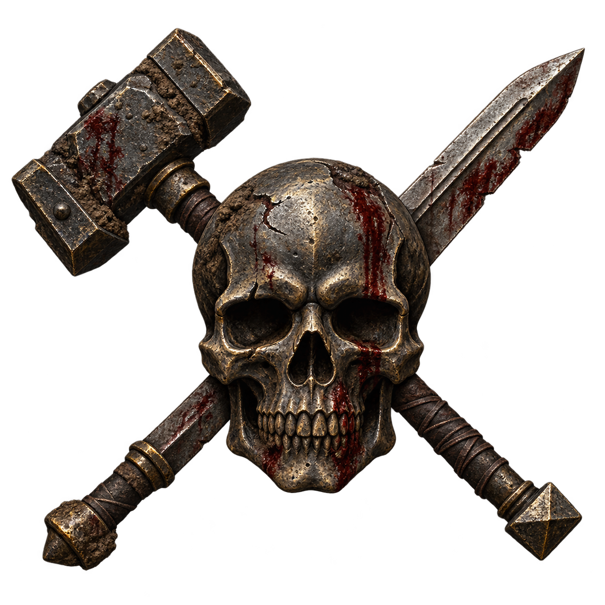

De Boue et de Sang
Deux arcs, un groupe, et tout l'Empire entre les deux.
Averland 2510, Nordland 2511. Ce qu'on laisse ouvert derriere soi ne se referme pas tout seul.
Composer le groupe
Composer le groupe
Préparer le groupe
La campagne accueille des personnages créés normalement. Ses effectifs prennent six PJ pour référence. Les joueurs choisissent leurs noms, carrières, liens et ambitions.
- Convenir d’une raison de voyager ensemble et d’un engagement de coopération.
- Présenter le registre : précarité, violence, manipulations et préjugés. Définir les sujets à garder hors champ, notamment la torture et les violences envers les enfants ; une ellipse permet de conserver les faits utiles.
- Laisser chaque joueur décider des pensées, émotions et choix de son personnage. Appliquer les états mécaniques selon les règles de la table.
- Présenter le barème commun des XP et des contrats ; annoncer la somme et les conditions de chaque mission avant l’accord.
Employer les aptitudes des personnages
Un métier, une langue, un talent ou un équipement peut donner directement une information : lire le khazalid, reconnaître une poudre, examiner une blessure. Pour chaque obstacle, vérifier les moyens du groupe, puis proposer les autres accès présents : témoin, guide, document, intermédiaire ou recherche. Tester lorsque le résultat reste incertain.
Adapter les rencontres avant la séance
| Groupe | Réglage initial |
|---|---|
| Six PJ | Effectifs indiqués. Relever les Blessures, protections, moyens de feu et ressources disponibles. |
| Quatre ou cinq PJ | Réduire d’environ un quart les troupes engagées simultanément. Conserver les chefs ; situer les renforts et les fronts tenus par les alliés. |
| Trois PJ ou moins | Réduire de moitié les troupes simultanées. Proposer un allié identifié ou une voie d’évitement. Examiner séparément la puissance du Troll et les possibilités de retraite. |
| Plus de six PJ | Commencer avec les profils indiqués. Répartir les objectifs et le temps de parole ; dimensionner les troupes d’après la situation. |
Ces réglages servent à préparer la rencontre. Ajuster l’effectif et les moyens avant la confrontation ; les gains d’une reconnaissance ou d’une ruse restent acquis pendant le jeu.
Témoignages et relations
Un témoin « hors grief » est extérieur aux deux maisons concernées. Sa parenté, ses contrats et ses intérêts financiers permettent au conseil d’apprécier son indépendance. Karkiss expose les modalités de déposition avant le départ. Les préjugés appartiennent à des interlocuteurs précis ; annoncer leur effet éventuel sur un jet et les moyens de gagner leur confiance.
Accueillir un nouveau PJ
Hesselmann, une maison de commerce, une famille secourue ou Thora peuvent présenter un nouveau compagnon. Lui donner l’objectif actuel et les informations partagées par le groupe ; le joueur choisit les engagements et les liens qu’il reprend.
Comment ils se connaissent
Les personnages peuvent faire connaissance dans la calèche. Le voyage, l’attaque et la proposition de Karkiss leur donnent des raisons concrètes de coopérer. Un groupe déjà constitué s’intègre à la même ouverture.
Liens facultatifs
- Métier : deux PJ ont déjà travaillé ensemble et savent ce qu’ils peuvent attendre l’un de l’autre.
- Communauté : une origine, une foi ou un lieu commun leur fournit des souvenirs et des contacts.
- Responsabilité : l’un s’est porté garant de l’autre ; les joueurs définissent ensemble la portée de cet engagement.
- Rencontre ancienne : l’un reconnaît l’autre. Les joueurs conviennent de ce qui est su et de ce qui reste à découvrir.
Contexte et conventions
Comment lire ce document
La campagne en une page
De Boue et de Sang conduit un groupe de l’Averland aux Montagnes Noires, puis au Nordland. Les affaires laissées au sud peuvent se poursuivre par des courriers, des contacts et les engagements pris.
- Arc I — Rancunes. À partir de Nachexen 2510, les PJ découvrent une opération destinée à entretenir le conflit entre deux clans nains. Enquêtes, contrats et escorte peuvent leur permettre de rétablir le dialogue et d’identifier les responsables.
- Transition — La route du Nord. Karkiss propose de retrouver le Livre de Kazad Varr, lié à une ancienne rancune. Le mandat conduit le groupe vers le Nordland, au dégel de 2511.
- Arc II — Blanc comme Neige. La suite se déroule dans les villages de lisière du Nordland. Ses développements restent à préparer.
Convention de lecture
Les encadrés distinguent les descriptions à partager, les informations de préparation et les règles de résolution.
Description à partager. À lire ou à reformuler : ce que les personnages perçoivent. Adapter les noms et les détails à leur position et à leurs connaissances.
Information de meneur. Qui il est, ce qu'il veut, ce qu'il cache, comment il réagit. Un PNJ qui doit se battre a en plus un profil de combat.
Le tableau de caractéristiques WFRP 4e, l'équipement, les traits, et la conduite tactique. Se scrolle horizontalement sur téléphone.
Éditer et sauvegarder
Éditer ouvre les commandes de texte et de structure. Attendre l’indication de sauvegarde en ligne après les modifications. Exporter produit le fichier complet à remettre sur GitHub.
Installer une révision du scénario
La page affiche en priorité les sections enregistrées en ligne. Après remplacement du fichier sur GitHub, recharger la page et utiliser Corrections Arc I : le bouton annonce les fiches concernées et les anciens blocs hors fiches à retirer, sauvegarde les sections et applique la révision après confirmation. Relire auparavant les éventuelles modifications personnelles de ces fiches. Le bouton global Push remplace, lui, l’ensemble du scénario enregistré.
Le sud — Averland, 2510
Cadre géographique & temporel
Nachexen 2510, vers dix-sept heures. Karl Franz règne à Altdorf. La campagne débute en Averland, sur la route secondaire des contreforts, entre Grenzstadt et Hochsleben. La cohorte descend vers Hochsleben, bourg de transit au pied des Montagnes Noires.
Les collines se raidissent à l’approche du massif. La roche affleure sous les herbes courtes ; les arbres ploient dans le vent des cols. Des nuages s’accrochent aux crêtes. Il fait humide, sept ou huit degrés, et le jour baisse dans une brume légère.
Le nord — Nordland, 2511
Cadre géographique & temporel
Fin d'hiver de l'an 2511, mois de Jahrdrung, le dégel. Est du Nordland. Une province d'arbres, de bûcherons et de gens butés, qui flottent le bois vers Salzenmund et la côte, chassent dans les clairières autorisées, et prient Ulric le Loup Blanc avant tout autre. La vie y est rude, courte et encadrée, mais on en tire une fierté de roc : ce sont les remparts du nord, ceux qui tiennent quand le sud banquette et oublie.
Le bourg de Beeckerhoven est posé sur l'Eichgrad Road, à une journée de cheval à l'est de Salzenmund, la capitale, où siègent le comte et les grands prêtres des trois dieux du nord. À l'ouest et au sud-ouest, les Silver Hills lèvent leurs croupes pelées et abritent un fort des Chevaliers du Loup Blanc. La Salz coule plus au nord vers la Mer des Griffes. À l'est s'étend la Forêt des Ombres, masse sombre et sans fin d'où viennent les hommes-bêtes ; c'est à sa lisière que survivent les villages les plus exposés, Marklohe, Dorfmark, Dünsen, Sokh.
Le nœud du nord
Il y a un peu plus d'un an, les incursions d'hommes-bêtes ont changé de nature : plus nombreuses, plus hardies, poussant hors de la Forêt des Ombres jusqu'à des hameaux qu'on croyait à l'abri. Trois d'entre eux, autour de Marklohe, ont brûlé en une nuit sans qu'aucune bannière du comte ne se lève. Les survivants ont juré que cela n'arriverait plus, et la région s'est armée : milices, patrouilles, palissades, battues dans la forêt. Jusque-là, rien que de sain.
C'est là que la peur trouve sa graine de vérité : il y a bel et bien des traîtres, des indicateurs et des profiteurs parmi les honnêtes gens. La trahison est réelle avant d'être imaginaire. La milice, lancée pour débusquer bandits et complices, glisse. Le soupçon devient méthode, l'interrogatoire devient torture, le premier qui parle sous la contrainte en nomme trois. On y greffe la vieille terreur des naissances marquées, ces nourrissons qu'on donne à la forêt et qu'on croit voir revenir encornés. Les procès deviennent des bûchers, la milice cesse de rendre des comptes à Salzenmund, et l'on parle d'un nord qui se gouvernerait et se purifierait seul. Cela gagne, de village en village, jusqu'aux portes de Beeckerhoven.
Les trois couches
Trame de fond
Ce que le MJ sait
Les deux clans
| Gromnil-Bak | Koppar-Dumm | |
| Traduction | « Le Ruisseau de Fer » | « Le Cuivre Sombre » |
| Position | Est de Karak Angazhar, ouest de Koppar-Dumm | Est de Gromnil-Bak, contre la passe du Feu Noir |
| Richesse | Riche, prospère, bien connecté | Pauvre, isolé, exposé à l'est |
| Ressource principale | Gromril* : métal nain extrêmement précieux | Cuivre, bronze + Vert de Sang |
| Aide de Thorgrim le Rancunier | Importante : en cours de réduction | Insuffisante : en cours d'augmentation |
| Dirigeant | Seigneur Hegnar Ironbrow (seigneur de Gromnil-Bak) | Seigneur Durgin Blackseam |
| Héritier | Prince Nerr Ironbrow (fils et héritier de Hegnar Ironbrow, giflé par Vorrn) | Prince Bergor Blackseam |
Le gromril, métal précieux et résistant travaillé par les maîtres forgerons nains, assure la richesse et l’influence de Gromnil-Bak. Koppar-Dumm tire ses revenus du cuivre, du bronze et du Vert de Sang. Ses positions orientales subissent une pression croissante des peaux-vertes.
La querelle et ses acteurs
Koppar-Dumm juge insuffisants le soutien royal et la reconnaissance reçue. Lors d’une rencontre diplomatique, Nerr Ironbrow, héritier de Gromnil-Bak, a insulté ses émissaires. Vorrn, garde du corps de Karkiss, l’a frappé. Pour maintenir la négociation, Karkiss a publiquement banni Vorrn. Le nain veut désormais punir Gromnil-Bak tout en croyant défendre Koppar-Dumm.
Gariz le Rieur est un chef gobelin de la nuit, patient et rusé. Son rictus permanent lui a valu son nom. Repoussé par Gromnil-Bak, il s’est replié vers le sud-est et reconstitue ses forces depuis plus de deux ans. Des orques et quelques trolls auraient rejoint son armée. Quatre ogres assurent habituellement sa protection.
Gariz prépare la prise de Koppar-Dumm. Il cherche à isoler ce clan et à couper les accès orientaux de Gromnil-Bak. Entretenir leur querelle lui donne le temps d’assembler son armée. Le poste nain de Schattenfels est occupé par ses gobelins depuis dix-huit mois.
Chronologie de l’opération
- Thorgrim demande aux clans de se réconcilier et réoriente une partie de l’aide militaire vers Koppar-Dumm.
- Koppar-Dumm envoie un premier émissaire pour annoncer ses propositions commerciales. Moins de deux semaines après ce départ, Karkiss prend la route avec la missive détaillée.
- Gariz fait intercepter et tuer le premier émissaire. Le corps est rasé et renvoyé à Koppar-Dumm avec une fausse lettre insultante attribuée à Gromnil-Bak.
- Par ses propres ogres, Gariz achète la coopération des trois ogres des Dents Jaunes contre une dizaine de gobelins à manger. Vorrn commande à Sébastian le vol de la missive. Chaque intermédiaire connaît sa mission et ses contacts.
- J0 : les Dents Jaunes attaquent la cohorte. Résoudre le vol, les interceptions, les blessés et les captures.
- Quand le corps arrive à Koppar-Dumm, la guilde diplomatique envoie un pigeon à Karkiss via la tour de vol de Hochsleben. Compter environ deux jours de vol à partir de cet envoi et inscrire la réception au calendrier.
- À Hochsleben, Karkiss reçoit les personnes et les pièces effectivement rapportées. Il reconnaît le marteau de Vorrn s’il lui est présenté ; un autre témoin peut avoir identifié le nain plus tôt.
L’archive falsifiée
Vundri a regravé la plaque de bornage lors du contrôle avant sa fermeture. Il agit pour maintenir la rancune et ignore l’opération de Gariz. Au conseil, le scribe de Gromnil-Bak relève le désaccord de l’article 9 ; les accès à la plaque, les archives et l’expertise permettent d’enquêter sur le faux.
Documents clés
Les documents clés
Ordre de Thorgrim aux deux clans
Ce message est parvenu aux deux clans avant le début de la campagne. Karkiss peut en expliquer les termes ou en présenter une copie.
« Fils de Grungni, clans de Gromnil-Bak et de Koppar-Dumm,
Les mouvements ennemis dans vos tunnels exigent une défense commune. Le gromril de Gromnil-Bak et les accès orientaux de Koppar-Dumm sont essentiels à la sûreté de nos royaumes.
Un tiers de l’aide militaire accordée à Gromnil-Bak sera transféré à Koppar-Dumm, dont les positions sont les plus exposées. Recevez ses émissaires avec les honneurs dus et concluez un accord de commerce et de protection mutuelle.
Que vos actes servent l’ensemble du peuple nain.
Thorgrim le Rancunier, Roi de Karaz-a-Karak. »
Missive de Karkiss à Hegnar Ironbrow
La missive voyage dans la sacoche diplomatique. Elle constitue l’objectif du vol et du contrat du premier chapitre.
« À Hegnar Ironbrow, Seigneur de Gromnil-Bak, en Nachexen 2510.
Mandaté par Durgin Blackseam, je vous présente les propositions de Koppar-Dumm.
Nous offrons un accès prioritaire à 400 charges de cuivre par an, au prix du clan, soit la moitié du marché impérial ; 200 pierres de Vert de Sang brutes par an, réservées avant les ventes extérieures ; et le partage de nos cartes des tunnels orientaux et de leurs mouvements suspects.
En échange, nous demandons 150 unités de gromril brut par an au prix du clan, une patrouille mixte à commandement tournant entre nos territoires et un passage sécurisé pour nos convois vers les routes impériales.
Ces dispositions doivent assurer la prospérité de nos maisons et la défense de nos frontières. Je viens en discuter les modalités avec votre conseil.
Karkiss Tonnerek, Diplomate en Chef de Koppar-Dumm. »
Outils du meneur
Horloge de l'Arc I
Trois repères suffisent : J0 est l’attaque de la cohorte ; R est le retour du cercle de pierres à Hochsleben, ou le règlement du secours dans cette ville si le groupe n’est pas allé au cercle ; M est le départ de la délégation vers Gromnil-Bak. Inscris ces dates dans le calendrier de la table. Les jours passés avancent une seule fois, même si plusieurs fils se croisent.
| Repère | Événement fixé | Ce que les décisions changent |
|---|---|---|
| J0 | Attaque et vol de la missive, si le vol réussit. | Une interception peut donner un prisonnier ou sauver le pli ; le commanditaire cherche alors une autre occasion. |
| J+2 ou J+3, soir | Arrivée à Hochsleben : deux jours en forçant, trois à allure ordinaire. | Effectif encore présent au Rat Noyé, fatigue et avance conservée. |
| Lendemain, fin d’après-midi | Départ conseillé vers Merfeld après déposition, repos et ravitaillement. | Les PJ peuvent partir plus tôt ou plus tard ; comptabiliser le temps réellement employé. |
| J+5, aube / J+6, aube | Arrivée type au cercle après la marche et deux bivouacs : groupe rapide / groupe à allure ordinaire. | Cas B si le site est atteint avant Vorrn ; cas A s’il est déjà là. Le souterrain reste commun aux deux. |
| J+6, aube | Rendez-vous convenu de Vorrn avec Sébastian. | Conserver la date fixée. Un contre-ordre intercepté ou un retard décidé par un PNJ peut la modifier ; jouer cet événement et noter la nouvelle échéance. |
| R + six semaines | Rendez-vous avec Karkiss à la maison de commerce de Hochsleben. | Les contrats annexes se placent dans cet intervalle et restent indépendants. |
| M = rendez-vous + quatre jours | Départ annoncé de la délégation. | Un retard avant M reste rattrapable. Après M, retrouver la colonne prend le temps indiqué par ses traces ; la solde est négociée pour le service restant, sans pénalité cachée. |
| M+1 à M+3 | Dernière vallée, montée, approche de la passe. | Ajouter le détour du Troll s’il est accepté, les repos et les éventuels retours de portage. |
| Après la passe | Trois jours de versant nord, rencontre de Thora, puis route de un, deux ou trois jours. | Noter vivres et état des blessés au départ réel de chaque étape ; les douze jours annoncés sont une provision de voyage, pas un calendrier immuable. |
| Retour au sud | Installation et nouvelles des clans. | Une ellipse annoncée peut mener à l’automne 2510. Le départ vers le nord se fixe en Vorhexen ; huit à dix semaines de voyage conduisent au dégel de 2511. |
Personnes et événements hors champ
- Karkiss repart à Koppar-Dumm à R + 2 ; Darrik reste à Hochsleben jusqu’à son retour pour le rendez-vous. Après l’Arc I, Darrik devient le relais d’Averheim.
- Gariz reçoit les nouvelles par ses agents et ses intermédiaires. Dater les rapports avant ses réactions.
- Les audiences se fixent selon les témoignages disponibles. Une pièce attendue de la montagne peut exiger un report ou une réception par courrier.
- Deu’Brez prépare au plus une opération par semaine impériale, tant qu’il reste vivant, libre et en mesure d’agir. Reporter les interruptions et les renseignements transmis.
- Les engagements naissent des accords pris. Les dangers encore actifs évoluent selon leurs moyens ; voyageurs et courriers peuvent en apporter les nouvelles.
Carte des amorces
| Fil | Accès possibles | Conséquences à reporter |
|---|---|---|
| Rens | Yorick, affiche de prime, Guérand, Krans ; ou le Héron et la note de cuir. L’offre anonyme peut arriver lorsqu’un intérêt pour la prime a été exprimé publiquement. | Sort de Rens et de sa bande, objets déclarés ou revendus, receleurs identifiés, personnes informées. |
| Troll | Marta et Kreuzer ; témoignages des fermes, allusion de Guérand ou de Krans. | Menace restante, familles aidées, victimes identifiées, gardien et traduction de la plaque. |
| Dents Jaunes / Haas | Captif, liste des couverts, convoyeurs, Ruhl, Krans ou registre d’une acquisition. | Relais, fonds et personnes encore actifs ; horloge conditionnée par ces moyens et le temps écoulé. |
| Deu’Brez | Signes de surveillance, repérage, cave, relais ou capture. | Dessins livrés ou interceptés. Captif ou mort, il ne suit pas le convoi. Libre, il ne sait que ce qu’il a réellement observé. |
| Gromnil-Bak | Entretien avec Karkiss à R + 48 jours, puis quatre jours de préparation. | Engagement accepté ou refusé, témoignages, parcours, pertes et accords. |
| Embuscade de Grizzik | Positions de ses éclaireurs, messages reçus, reconnaissance et route choisie. | Sa troupe peut tenter une attaque avec les renseignements déjà reçus. Dater l’alerte et le déplacement avant de placer l’embuscade. |
Ordre des fils — conséquences croisées
L’ordre des contrats appartient aux joueurs. Comptabiliser une seule fois trajets, jours et récompenses ; les conséquences naissent des résultats effectivement obtenus.
| Fil joué | Apport possible aux suivants |
|---|---|
| Rens | Krans peut devenir un contact marchand. Les survivants interrogés renseignent les routes. La réputation n’atteint Karkiss que par un témoin, un courrier ou un registre. |
| Troll | Les fermiers peuvent héberger le groupe ; la plaque ouvre une preuve au conseil. Le lecteur compétent peut la traduire immédiatement. |
| Dents Jaunes | Ruhl et les documents de Haas fournissent des pistes complémentaires. Un prisonnier protégé reste disponible pour témoigner. |
| Deu’Brez | Ses dessins et ses relais permettent une enquête, même s’il meurt. Capturé, il ne parle pas et ne rédige pas de phrases : sa langue a été coupée, il communique par dessins. |
| Aucun contrat | Le groupe peut travailler, se reposer et tenir ses autres engagements jusqu’au rendez-vous. Suivre les échéances datées pendant cette période. |
Si le Troll reste actif au passage de Klein-Hohenfels, Kreuzer peut renouveler sa demande. Karkiss annonce le délai qu’il accepte avant une éventuelle promesse. Une promesse rompue et un refus poli produisent des réactions différentes.
La question de chaque PJ — méthode
À la fin du premier chapitre, demander à chaque joueur ce que son personnage espère obtenir, préserver ou comprendre. Noter ces projets avec lui et les revoir lorsqu’ils évoluent.
Trois pistes facultatives
- Argent et indépendance : quel confort, quelle dette ou quelle liberté recherche-t-il ?
- Engagements : quelles promesses a-t-il effectivement acceptées, et jusqu’où compte-t-il les tenir ?
- Appartenance et confiance : quelles personnes ou communautés souhaite-t-il comprendre, soutenir ou garder à distance ?
Faire revenir une ambition quand une situation s’y prête, avec au moins deux réponses plausibles. Annoncer les coûts connus. Les PNJ jugent selon leurs intérêts et leurs informations ; leurs jugements ne deviennent pas ceux du scénario.
| À noter | Usage |
|---|---|
| Engagement explicite | Qui a promis quoi, à qui, pour quand et sous quelles conditions. |
| Témoin ou trace | Qui peut apprendre l’action et par quel relais. |
| Conséquence visible | Ce qui change dans une relation, une ressource ou une possibilité. |
| Révision | Ce que le joueur souhaite désormais poursuivre. |
Or, butin et expérience
Convention de récompense
125 XP par PJ pour une séance où le groupe fait avancer un enjeu, une fois pour l’ensemble des fils joués. Les bonus d’objectif reviennent à chaque PJ participant, une seule fois par objectif. Cocher les versements dans le registre commun.
Les encarts locaux et le récapitulatif ci-dessous décrivent les mêmes bonus. Un objectif peut être atteint par la discussion, le métier, la ruse, un évitement préparé ou le combat, selon ses conditions.
Argent : contrats de référence
| Contrat | Somme et condition |
|---|---|
| Karkiss, chapitre 1 | 1 CO d’avance + 5 CO au règlement par PJ engagé. Clause des noms : 5 CO pour un témoin distinct capable d’identifier son payeur ; vérifier l’information, une fois par témoin. |
| Rens, prime officielle | 40 CO pour le groupe, vivant ; 15 CO mort avec preuve recevable. |
| Krans | 20 CO pour le groupe, mort ou vif avec preuve recevable. Cumulable avec la prime officielle. |
| Offre anonyme | 50 CO pour le groupe, dont 25 d’avance ; demande Rens mort, aucune autre prime réclamée pour lui, et aucune procédure publique. Cette exclusivité comprend les 20 CO de Krans. Un mot suffit au commis, mais les mensonges peuvent être découverts par ses relais. |
| Troll | 12 CO des sept familles ; complément du sergent de 5 à 10 CO à fixer avant l’offre ; effets personnels rendus et butin selon le registre de la caverne. |
| Escorte vers Gromnil-Bak | 3 CO d’avance + 5 CO à la fin du service par PJ. Même solde quel que soit le mode de témoignage. |
| Conseil | 3 CO supplémentaires par PJ dont une déposition exploitable est reçue, publique ou confidentielle. Les preuves matérielles restent recevables sans déposition nominative. |
| Mandat du nord | 40 CO d’avance pour le groupe ; 100 CO au retour avec le Livre ou selon l’accord écrit conclu avec Darrik. |
Registre du groupe
| Entrée | À consigner |
|---|---|
| Solde | Nombre de PJ engagés, avance déjà versée, service accompli et solde restant. |
| Butin | Quantité, propriétaire identifiable, valeur théorique, prix réellement offert et poids. |
| Dépenses | Jours payants réellement passés × tarif ; déduire gîte, repas et vivres fournis. |
| Contacts | Qui a été aidé, ce qui a été promis et ce que le contact peut offrir. |
| XP | Séance déjà payée ? Objectif déjà coché ? Montant unique par participant. |
Distinguer les sommes par PJ engagé des primes pour le groupe. Les joueurs répartissent ces dernières selon leur accord. Les avances font partie du total annoncé.
Ce qui dure
Consigner les bénéficiaires et les conditions du gîte, de la recommandation, des présents et du tonneau. Une vente peut être connue par un acheteur ou un dépositaire. Le responsable qui conserve le fût note les quantités retirées.
Barème des objectifs, récapitulatif
Chapitre 1
- Bouclage du contrat ou résolution de sa tentative : +50.
- Dietr, Vorrn ou Sébastian livré vivant et interrogé utilement : +25 par témoin distinct, plafond +50.
- Événements d’Hochsleben : +25 par événement avec un enjeu résolu, plafond +100 sur l’arc.
- Procès de Dietr effectivement joué : +75, une fois. Corriger une déposition ne donne pas une seconde prime.
Deu’Brez
- Découverte d’un nouvel élément aux étapes 3, 4 et 5 : +25 chacune, si cet élément est réellement découvert.
- Menace de l’espion résolue par capture, mise hors d’état d’agir ou contre-mesure durable : +75, une fois. Une poursuite réussie compte.
- Relais du poteau creux identifié : +50. Les dessins récupérés sur un prisonnier peuvent y mener.
Chapitre 3
- Mission d’escorte menée à son terme ou issue négociée : +75.
- Rencontre avec Thora résolue sans combat : +50.
- Route choisie après une reconnaissance ou un recoupement utile : +25, quelle que soit la route retenue.
- Menace de l’embuscade surmontée, évitée ou neutralisée : +50.
- Preuves de la fosse et du mur établies auprès des deux clans : +25.
- Falsification démontrée : +50 ; copie, archives ou expertise recevable.
- Plaque de rancune restituée : +50.
- Bilan de fin d’Arc I : +100 à la descente ou à la scène de conclusion correspondante, une fois.
Enquête Ruhl
- Existence du second groupe, intervention d’un tireur extérieur, méthode des postes : +25 par conclusion établie, quel que soit l’ordre.
- Ruhl obtenue comme source vivante : +75. Sa mort n’efface pas les conclusions déjà acquises.
Haas
- Affaire résolue : +25.
- Convois recoupés : +25.
- Haas présenté à un magistrat avec un dossier : +75, quel que soit le verdict.
- Réserve de sinistre remise pour redistribution : +75.
- Capacité du second groupe à éliminer les témoins durablement réduite : +25, une fois.
Rens
- Contrat réglé : +15.
- Bande neutralisée ou dispersée durablement : +15.
- Rens capturé vivant : +25.
- Biens déclarés au Bureau pour restitution : +50. Les bénéfices de réputation suivent les biens effectivement rendus.
Amorce Hallberg
- Note obtenue ou accord d’escorte tenu : +50, une fois.
- Krull maintenu vivant à l’issue de cette affaire : +25.
Entrée au camp
- Reconnaissance du camp et sortie sans violence : +50.
- Commande de Rens obtenue comme couverture : +25.
- Compter les objectifs effectivement accomplis lors de cette visite.
Troll
- Contrat réglé : +25.
- Menace du Troll éliminée ou écartée durablement des familles : +25.
- Reconnaissance ou récolte utile à la montée : +25.
- Solution fondée sur le terrain, le feu ou une ruse : +25.
- Victimes identifiées et indices de la caverne récupérés : +25.
Transition
- Brünsbach : +25 si son enjeu est traité, par intervention ou évitement préparé.
- Hollenstein : +25 si le passage et la menace sont traités ; aucun combat n’est requis.
- Réponse étayée à Karkiss, distinguant observations et hypothèses : +25. Une réponse incertaine est recevable.
- Compter les séances réellement jouées, selon le rythme retenu.
Conversion de compte : 1 CO = 20 Pistoles = 240 sous. Un stock ou un objet décrit dans plusieurs fiches n’existe qu’une fois. Les versions de butin A et B du cercle sont alternatives. Le sceau et le parchemin de Rens sont sur lui ; leur mention au coffre rappelle leur fonction, sans second exemplaire.
La signature du corbeau
Motifs réservés à la suite
La patte d’oiseau, la plume et l’œil cerclé appartiennent à une piste encore ébauchée de l’Arc II. Leur présence systématique dans l’Arc I ajoute une enquête dont les réponses restent à préparer. Réserver leur introduction à une scène disposant d’une provenance, d’un témoin ou d’un document exploitable.
Si la table a déjà rencontré l’un de ces signes, conserver le relevé, son emplacement et les découvertes faites. Préparer la réponse d’une enquête avant de multiplier ses occurrences. La marque actuelle de Gariz reste le triangle à courbe ouverte.
Aide-mémoire
1 · L'arc en une page
La vérité du MJ
Gariz le Rieur, chef gobelin de la nuit patient et intelligent, cherche à affaiblir Koppar-Dumm et à empêcher sa réconciliation avec Gromnil-Bak. Il agit par relais cloisonnés. Vorrn est un nain banni, distinct de Gariz. Vundri falsifie une archive pour son propre motif, indépendamment de l’opération gobeline.
| Étape | Enjeu | Issue ouverte |
|---|---|---|
| Chapitre 1 | Attaque de la cohorte, vol de missive, traque et cercle. Vorrn arrive à J+6, date fixe. | Missive sauvée ou reprise, témoins capturés, ennemis libres ou morts selon les actions. Guérand survit, éventuellement grièvement blessé. |
| Chapitre 2 | Six semaines impériales jusqu’au rendez-vous : 48 jours. Ville, enquête et contrats selon les projets. | Rens, Troll, Dents Jaunes, espion : traiter les fils choisis et le temps réel. |
| Chapitre 3 | Ancien poste nain conquis par les gobelins ; passage, preuves et négociation. | Itinéraire, soins, alliés et captivité modifient les scènes. Dix articles de sécurité et coopération, article 9 réservé au contrôle du bornage. |
| Transition | Mandat de mémoire vers Kazad Varr, délai du dégel et trajet vers le Nordland. | Rythme court ou développé ; engagements explicites ; entrée par l’itinéraire choisi. |
Choisir les enjeux et le rythme de la séance. Les encarts de cadrage donnent les bonus d’objectif ; le barème commun centralise XP, contrats et comptes.
Ce qui se garde
Conserver calendrier, personnes actives, preuves, engagements et comptes. Chaque action adverse exige une information, un accès et du temps.
2 · Chapitre 1 en cinq minutes
| Moment | Repère de préparation |
|---|---|
| Calèche et cohorte | Utiliser les liens de groupe choisis. Présenter Karkiss, Darrik et Guérand par des faits observables. |
| Attaque J0 | Les brigands veulent la missive et une retraite. Jouer les interceptions ; prisonniers et document sauvé restent possibles. |
| Poursuite | Deux jours à marche forcée, trois normalement ; le gain ne déplace pas le rendez-vous de Vorrn. |
| Hochsleben | Guérand peut orienter, être soigné ou manquer à l’appel. Ses contacts le rendent joignable pendant sa convalescence. |
| Cercle | Départ de la ville le lendemain de l’arrivée, deux bivouacs. Cas B : J+5, avant Vorrn ; cas A : J+6, Vorrn présent. |
| Captifs et fuites | Profils et positions réels. Ruhl tente un tir si elle a un angle ; protection et contre-tir fonctionnent. |
| Bilan | 1 CO d’avance + 5 CO de solde par PJ ; clause des témoins vérifiés comptée une seule fois. |
Vorrn, Dietr et Sébastian connaissent leurs contacts et missions, pas tout le plan de Gariz. Le symbole près de la trappe est un indice exploitable ; une connaissance réelle peut éclairer ce que la scène révèle.
3 · Chapitre 2 en cinq minutes
R = retour du cercle à Hochsleben, ou règlement du secours en ville si cette piste a été écartée. Rendez-vous à R + 48 jours. Karkiss retourne à Koppar-Dumm ; Darrik tient le relais de Hochsleben.
| Fil | Donnée essentielle |
|---|---|
| Ville | Choisir les événements utiles ; une scène déclenchée ailleurs revient comme nouvelle datée, sans être rejouée hors chronologie. |
| Déposition et procès | Expliquer la portée d’une signature. Témoignages contradictoires, corrections, défense et garanties avant le verdict. |
| Rens | 40 CO vivant / 15 mort ; +20 de Krans. Offre anonyme 50, dont 25 d’avance, offre exclusive : pas de prime du Bureau ni de Krans, pas de procédure publique. |
| Troll | 12 CO des familles, complément annoncé de 5 à 10 du sergent. Peur V4 sans tests de paralysie ajoutés ; retraite et traduction accessibles. |
| Dents Jaunes | Indices Ruhl accessibles dans tout ordre ; Haas réagit seulement aux alertes reçues. Provenance de la réserve de sinistre identifiable avant de la dépenser. |
| Deu’Brez | Un projet d’espion par semaine au plus, s’il est vivant et libre. Dessins et fuite ont des positions concrètes. Capture possible ; langue coupée. |
| Ellipse | Projets choisis, revenus, frais et soins déterminent la durée utile de l’ellipse. |
4 · Chapitre 3 en cinq minutes
| Scène | Repère utilisable |
|---|---|
| 1 — Accord | Même escorte 3 + 5 CO. Témoignage public, confidentiel ou aucun ; +3 CO pour la déposition reçue, annoncé avant. |
| 2 — Vallée | Troll proposé ou déjà réglé. Deux jours d’attente peuvent être négociés ; refuser ne crée aucune dette. |
| 3 — Montée | Trois mules ; lots fractionnables, capacités réelles et détour muletier. Une résolution par obstacle. |
| 4 — Passe | Trente gobelins au poste, quarante avec Grizzik à la Gorge. Captif Brogni, fosse et dessins : plusieurs preuves. Ori blessé seulement si les événements le produisent. |
| 5 — Versant | Trois jours ; gardes partagées avec les alliés. Vol, filature et capture par opposition réelle. |
| 6 — Thora | Onze nains, sommation à quinze pas. Présenter le mandat, fournir des explications et négocier les garanties d’une escorte. |
| 6b — Routes | Gorge 1 jour, terrasses 2, canal 3. Grizzik doit recevoir l’alerte et marcher pour changer de position. |
| 7 — Embuscade éventuelle | Objectifs répartis avec les alliés. Protéger Karkiss et neutraliser Deu’Brez peuvent réussir ensemble. |
| 8 — Conseil | Le scribe conteste toujours l’article 9 ; plaque, archives ou expertise vérifient le faux. Dix autres articles restent négociables. |
| 8b et 9 — Bilan | Sécurisation réelle de la route, récompenses comptées une fois, personnes soignées, copies et obligations claires. |
La feuille de suivi rassemble porteurs, vivres, dates, captifs et paiements. L’absence d’un blessé ou une route évitée simplifie réellement la situation.
5 · Ce que chaque PNJ veut
| PNJ | Veut | Sait / ignore |
|---|---|---|
| Gariz | Isoler puis affaiblir Koppar-Dumm ; reconstruire sa force. | Connaît son plan ; ses agents n’en voient qu’une partie. |
| Karkiss | Protéger son clan, négocier, retrouver des témoins fiables. | Connaît les démarches de son clan ; ignore d’abord le retour de Gariz et l’acte de Vundri. Peut apprendre. |
| Darrik | Bien servir et comprendre ce qu’il a transporté. | Ses observations et les registres disponibles ; ses soupçons sont discutables. |
| Guérand | Établir qui agit et prévenir un conflit. | Renseignements de ses informateurs. Survie protégée dans cet arc ; blessures, captivité ou indisponibilité possibles. |
| Krans | Arrêter Rens et récupérer ses tissus. | Ses pertes et contacts ; offre 20 CO avec preuve. |
| Kreuzer | Sécuriser les estives. | Ses pertes et observations ; 5 de ses CO entrent dans les 12 réunies par les familles. |
| Rens / Ilka | Rens protège sa bande ; Ilka veut sortir et faire comprendre le réseau. | Rens connaît ses receleurs ; Ilka ses observations et son recruteur, sans omniscience. |
| Deu’Brez | Observer et transmettre. | Itinéraires appris, relais et dessins ; muet après mutilation. Ses réponses peuvent être recoupées. |
| Thora / Grizzik | Thora protège sa route ; Grizzik tient le poste et préserve ses hommes. | Thora connaît les chemins, avec dates de reconnaissance ; Grizzik connaît sa mission et son messager. |
| Brogni | Survivre à la captivité et à ce qu’il a subi. | Calendrier livré sous contrainte, visites du messager, départ vers la Gorge. |
| Vundri | Conserver une rancune qu’il confond avec la mémoire. | Son propre acte et son accès professionnel. Aucun lien avec Gariz. |
6 · La fin de l’arc : bilan et questions ouvertes
Une conclusion vérifiable
Montrer ce que les actes ont changé : personnes secourues, disparus identifiés, échanges repris ou sécurisation commune engagée, confiance et droit d’accueil. Les questions nouvelles n’annulent pas cette victoire.
| Question | Réponse disponible dans cet arc |
|---|---|
| Pourquoi la passe est-elle dangereuse ? | Un ancien poste nain est tenu par les peaux-vertes. Les convois des deux clans sont frappés méthodiquement. |
| Qui est Gariz ? | Chef gobelin de la nuit connu dans les chroniques militaires, cru vaincu ; son symbole peut relier les faits. Le retour et l’étendue de son action demandent des preuves. |
| Pourquoi l’article 9 bloque ? | La pièce de Darrik place la limite aux Trois Sources. Les traditions et archives anciennes indiquent la Crête Fendue. Le scribe relève ce conflit même sans objet optionnel. |
| Comment établir le faux ? | Trois caractères repris ; plaque de rancune ou copie de l’échange ancien ; expertise. Ces sources se consultent dans l’ordre choisi par le groupe. |
| Que devient la trêve ? | Les dix articles non contestés peuvent être ratifiés selon l’accord obtenu ; le neuvième est réservé à la vérification. Noter les responsables et échéances des engagements acceptés. La frontière attend une vérification distincte. |
| Qui a regravé ? | Vundri, seul, à l’occasion du contrôle avant fermeture. Examiner les accès réels, y compris ceux des artisans, archivistes et manutentionnaires. |
| Que dire ensuite ? | Ce que chaque témoin sait, ce qui est encore supposé et quelle vérification est possible. Une enquête précoce peut avancer. |
Chapitre 1 — Le Marteau
Scène 1 : La Calèche de Grenzstadt
Le jour baisse sur les collines pierreuses. Les essieux grincent au rythme des cahots ; l’air sent la résine et la poussière humide. Des voyageurs rallument leur pipe et parlent du prochain campement. Au-dessus des bosquets, les premières crêtes se perdent dans la brume.
Dans la calèche
Deux banquettes se font face, pour dix places. Karkiss, Darrik, Dietr et Guérand en occupent quatre. Avec six PJ, cinq s’installent sur une banquette et le sixième auprès des quatre voyageurs. Le cocher conduit depuis son siège extérieur. Un PJ à pied ou en service dans la cohorte observe la scène depuis sa propre position.
- Karkiss garde une sacoche sur ses genoux ; un tube métallique orné dépasse de son ouverture.
- Karkiss et Darrik échangent à voix basse des mots de khazalid. Un personnage qui comprend la langue entend parler d’un clan, d’un rendez-vous et d’un retard.
- Dietr s’agite, change de main et regarde souvent par la vitre.
- Une vieille arbalète et six carreaux reposent dans l’alcôve sous les pieds du cocher.
- Les chevaux tournent fréquemment les oreilles vers l’arrière.
Personnages et profils
| Profil | M | CC | CT | F | E | I | Ag | Dex | Int | FM | Soc | B |
|---|---|---|---|---|---|---|---|---|---|---|---|---|
| Karkiss Tonnerek | 3 | 35 | 25 | 35 | 45 | 30 | 25 | 40 | 55 | 60 | 60 | 17 |
Une hache de cérémonie qu'il porte sans y penser · Courte · BF+4. Vêtements de qualité, aucune armure. Il n'a pas tenu une arme sérieusement depuis quarante ans.
CompétencesMarchandage 65, Charme 60, Intuition 55, Commandement 55, Langue (Khazalid, Reikspiel, Bretonnien) 60, Savoir (Nains, Généalogie, Héraldique) 60, Calme 60, Corps à corps (Base) 35.
TraitsRobuste, Vision nocturne, Rancunier. Autorité du registre. +20 à ses tests sociaux auprès d’un nain lorsqu’il invoque son mandat et les engagements consignés.
S'il tombeSi Karkiss meurt ou est empêché, Darrik et un représentant reconnu de Koppar-Dumm peuvent conserver les preuves et reprendre une partie du mandat. Son absence a un coût humain et politique ; elle n’efface pas l’arc ni les initiatives de protection.
| Profil | M | CC | CT | F | E | I | Ag | Dex | Int | FM | Soc | B |
|---|---|---|---|---|---|---|---|---|---|---|---|---|
| Darrik Nozg | 3 | 35 | 30 | 40 | 45 | 30 | 25 | 40 | 45 | 50 | 40 | 17 |
Une hache courte de voyage qu'il n'a sortie qu'une fois · Courte · BF+4. Vêtements épais, aucune armure. Un sac trop lourd de registres.
CompétencesMarchandage 50, Langue (Khazalid, Reikspiel) 55, Savoir (Nains, Généalogie) 50, Calme 45, Intuition 40, Perception 35, Corps à corps (Base) 35.
TraitsRobuste, Vision nocturne, Rancunier. Il privilégie la protection des documents, le couvert et le secours aux personnes. Ses actions de défense utilisent le profil affiché.
Où on le trouvePrésent dans la calèche puis à Hochsleben comme relais pendant l’attente. Il accompagne la délégation à Gromnil-Bak, porte ensuite le mandat et reste à Averheim. Il ne voyage pas au nord avec les PJ ; la correspondance ordinaire le relie à leur mission.
S'il meurtUne perte réelle appelle un successeur ou un autre relais si les PJ et le clan en organisent un. Les documents écrits et adresses conservées demeurent utilisables.
| Profil | M | CC | CT | F | E | I | Ag | Dex | Int | FM | Soc | B |
|---|---|---|---|---|---|---|---|---|---|---|---|---|
| Guérand Laraud | 4 | 50 | 45 | 40 | 40 | 45 | 45 | 40 | 45 | 45 | 45 | 16 |
Épée · Moyenne · BF+4 — Arbalète de poing · 10m · Dégâts +7 · Recharge 1 — Deux dagues · Très courte · BF+3 — Armure de cuir souple (torse et bras) PA 1, sous une cape sombre.
CompétencesCorps à corps (Base) 50, Projectiles (Arbalète) 45, Discrétion (Rurale, Urbaine) 50, Perception 50, Intuition 50, Charme 45, Pistage 45, Survie en extérieur 40, Calme 45.
TraitsProfessionnel. Il soutient les actions auxquelles il peut prendre part avec son équipement et son état réels. Scarification. Une marque discrète au sourcil, qui peut être observée et questionnée. Il choisit ce qu’il accepte d’en dire. Sens du danger. Une relance d’un test de Perception raté ; le résultat relancé est conservé. Réseau discret. Dans une ville importante, un test d’Intelligence peut établir qu’un contact connu y est joignable. Décrire ensuite son adresse, sa disponibilité et les services possibles.
Relation avec le groupeGuérand recherche la coopération et une issue qui préserve sa mission. Une confrontation se résout avec son profil, ses moyens et les actes des personnes présentes. Sa survie reste la contrainte de continuité annoncée pour cet arc.
| Profil | M | CC | CT | F | E | I | Ag | Dex | Int | FM | Soc | B |
|---|---|---|---|---|---|---|---|---|---|---|---|---|
| Rogen Zirl | 3 | 35 | 35 | 35 | 40 | 45 | 40 | 45 | 50 | 50 | 50 | 16 |
Deux dagues, dont une dissimulée · Très courte · BF+3. Une fouille méthodique peut la découvrir. Cuir souple au torse, PA 1.
Protection1
CompétencesRagot 60, Intuition 55, Charme 50, Discrétion (Urbaine) 50, Escamotage 50, Pistage 50, Perception 50, Marchandage 45, Corps à corps (Base) 35.
TraitsRobuste. Vision nocturne. Rancunier. Habitué des rues. Variante du profil : +20 à Discrétion et Pistage en milieu urbain lorsqu’il peut se mêler aux habitudes du lieu ; aucun effet s’il est directement observé sans couvert.
ConduiteIl observe discrètement et évite le combat. Opposer la Discrétion de la personne qui le suit à sa Perception. S’il le repère, il peut vérifier sa présence, changer d’itinéraire ou préparer un rendez-vous trompeur avec le temps et les contacts dont il dispose. Une filature réussie donne accès à sa destination réelle.
| Profil | M | CC | CT | F | E | I | Ag | Dex | Int | FM | Soc | B |
|---|---|---|---|---|---|---|---|---|---|---|---|---|
| Dietr Vanz | 4 | 40 | 30 | 40 | 35 | 35 | 40 | 25 | 30 | 35 | 25 | 13 |
Épée · Moyenne · BF+4 — Dague · Très courte · BF+2 — Arbalète de poing · 10m · Dégâts +7 · Pistolet. Cuir (partout sauf la tête) PA 1.
CompétencesCorps à corps (Base) 42, Projectiles (Arbalète) 38, Esquive 35, Escamotage 45, Discrétion (Urbain) 40, Intuition 38, Calme 35, Escalade 35, Ragot 35.
TraitsSon talent d’interprétation peut soutenir un mensonge plausible, avec les bonus correspondant à ses capacités. Les faits observés et les preuves permettent de contredire directement sa version. Recourir à Intuition pour apprécier une intention encore incertaine. Quand la situation tourne mal, il tente de rejoindre la sortie disponible.
ConduiteIl profite d’une diversion pour prendre la missive et cherche une sortie si sa trahison est découverte. Il connaît Sébastian, qui l’a corrompu, et Zirl, qui l’a recommandé à Karkiss. Il peut raconter les deux rencontres. Leurs liens réels demandent des recoupements ; Dietr ignore le nom de Ruhl et le plan de Gariz.
Scène 2 : Le Poste Douanier
Le vent siffle entre les planches du poste. Des registres, des bourses et des liasses de papiers encombrent le bureau. Dehors, un charretier proteste tandis qu’un douanier inspecte le dessous de sa voiture.
Le bureau de Yorick — option
Un PJ employé au poste peut être occupé au registre. Un voyageur peut entrer pour une formalité ou une question. Pendant l’entretien, Yorick sort répondre au charretier ; des bourses saisies restent près du registre ouvert.
Le PJ peut signaler l’écart, chercher son origine ou prendre l’argent. Yorick peut ensuite recompter les bourses ; noter qui a eu accès au bureau et ce qui lui a été rapporté.
Les affiches
Trois avis sont accrochés au mur. Yorick retire celui d’une affaire réglée et commente volontiers les deux autres.
À l’étage, une voix appelle : « Yorick ! La file s’allonge ! » Le sergent rajuste son uniforme et sort. Ses collègues, Philippe Carzich et Robin Trons, commencent à faire avancer les voitures.
Ratilk dans la file
Ratilk cherche une issue vers les fossés. Les PJ peuvent prévenir un douanier, lui parler ou lui barrer le passage. Surpris et entouré, il préfère se rendre. S’il résiste, employer son profil ; s’il court, résoudre la poursuite à partir de la distance et des obstacles présents.
Yorick verse 1 CO pour sa remise vivante et l’inscrit au registre. Les gardes conduisent Ratilk aux fers dans l’arrière-salle. S’il échappe à l’arrestation, noter sa direction ; il peut encore être aperçu dans la cohorte.
Personnages et profils
| Profil | M | CC | CT | F | E | I | Ag | Dex | Int | FM | Soc | B |
|---|---|---|---|---|---|---|---|---|---|---|---|---|
| Ratilk | 4 | 28 | 25 | 28 | 30 | 35 | 40 | 33 | 30 | 25 | 32 | 11 |
Couteau · Très courte · BF+2 — Fronde · 30 m · Dégâts +4. Aucune armure (PA 0). Une corde, un sac, et une bonne paire de jambes.
Protection0
CompétencesAthlétisme 45, Esquive 42, Discrétion (Rurale) 40, Emprise sur les animaux 42, Escalade 35, Charme 35, Corps à corps (Base) 28.
TraitsFuite. Variante du profil : +10 aux tests d’Athlétisme pour fuir ; les voies et obstacles restent réels.
ConduiteIl cherche à passer la douane sans être identifié. S’il est découvert, il tente une fuite par une voie accessible ; il préfère se rendre devant une menace qu’il juge insurmontable. Il peut être arrêté sans combat. Résoudre une résistance ou une poursuite avec les positions, compétences et actions choisies. Il n’appartient pas à Rens et connaît seulement son propre recel.
Scène 3 : L'Attaque de la Cohorte
Un reflet bouge entre les branches, à trente mètres de la route. Puis un cor éclate. Des silhouettes déboulent dans la boue ; les chevaux se cabrent et les voyageurs se pressent entre les chariots. Six hommes se dirigent vers la calèche. Dietr se lève devant la portière, la main sur son pommeau.
Positions et intentions
- Une vingtaine d’assaillants : six approchent la calèche, les autres retiennent les gardes. Adapter leur engagement selon le cadrage du groupe.
- Karkiss et Darrik se replient au fond de la voiture. La sacoche est aux pieds de Karkiss, sous son manteau. Dietr tente de la prendre dans la bousculade et de sortir par l’autre portière.
- À cinquante pas, un complice tient un cheval dans les bosquets. Trois cavaliers attendent plus loin. Dietr doit rejoindre sa monture, monter puis gagner ce groupe ; chaque déplacement peut être intercepté.
- Le cor commande le repli après la sortie de Dietr ou lorsque la résistance devient trop forte. Les assaillants cherchent à gagner leurs chevaux ou les bois.
Des actions simultanées
Présenter les voyageurs menacés, la calèche et la fuite de Dietr. Recueillir les intentions de chaque PJ et répartir les gardes disponibles sur les autres fronts. Résoudre les attaques contre les personnes exposées, puis relever blessés, morts et captifs.
Ce qu’un prisonnier peut donner
Un mercenaire connaît les Dents Jaunes, Sébastian, son paiement et le ralliement à Hochsleben. Dietr connaît sa propre mission, son recruteur et celui qui l’a recommandé. Leurs fiches précisent ces contacts et les renseignements qu’ils peuvent fournir.
- 1d10 sous par assaillant ; armes et équipements effectivement récupérés.
- Deux jetons de bois marqués d’une dent parmi les troupes présentes.
- Pas d’ordre écrit sur les simples mercenaires. Préserver les effets des survivants sous scellés si la garde les prend en charge.
Personnages et profils
| TYPE | M | CC | CT | F | E | I | Ag | Dex | Int | FM | Soc | B |
|---|---|---|---|---|---|---|---|---|---|---|---|---|
| Brigand | 4 | 35 | 30 | 30 | 30 | 30 | 30 | 25 | 25 | 30 | 20 | 12 |
I 37
Cuir (torse uniquement) PA 1
Arme simple (épée, hache, masse...) · Moyenne · BF+4
Couteau · Très courte · BF+1 · Inoffensive
Arc court · 20m · BF+2
Calme fragileun test de Calme à -20 dès que l'un d'eux tombe. Ils ne meurent pas pour une missive qu'ils ne comprennent pas.
CompétencesCorps à corps (Base) 35, Projectiles (Arc) 30, Esquive 32, Discrétion (Rurale) 35, Perception 32, Intimidation 30.
| Profil | M | CC | CT | F | E | I | Ag | Dex | Int | FM | Soc | B |
|---|---|---|---|---|---|---|---|---|---|---|---|---|
| Mercenaire des Dents Jaunes | 4 | 40 | 35 | 40 | 40 | 35 | 35 | 30 | 30 | 35 | 30 | 15 |
Arme simple · Moyenne · BF+4 — Arc ou arbalète légère · 20-60m · BF+2 à +7 — Cuir dépareillé (torse) PA 1.
Protection1
CompétencesCorps à corps (Base) 40, Projectiles 35, Intimidation 40, Survie en extérieur 35, Ragot 35.
TraitsPayés, pas fanatiques. Test de Calme à (-10) quand un quart d'entre eux tombe. Ils négocient volontiers : c'est un métier, pas une cause.
ConduiteHommes de main rémunérés, ils connaissent leur chef de terrain et leur mission, pas toute la hiérarchie. Le second groupe peut recevoir l’ordre d’éliminer un témoin compromis ; cet ordre exige un avertissement, un accès et une attaque effectivement résolue. Pour atteindre un prisonnier protégé, ses ennemis doivent franchir les défenses établies.
Scène 4 : Le Contrat avec Karkiss
Karkiss reste près de la calèche, les doigts serrés sur sa bourse. Darrik cherche une page sèche dans son registre. Autour d’eux, on relève une roue et on rassemble les chevaux.
Un objectif adapté au résultat de l’attaque
| État du pli | Proposition de Karkiss |
|---|---|
| Volé | Retrouver la missive et identifier le relais qui l’a prise. Les mercenaires se rallient à Hochsleben ; annoncer les pistes effectivement obtenues. |
| Sauvé | La missive reste sous la garde de Karkiss. Le secours est rémunéré ; il propose séparément d’enquêter sur la tentative. Si le groupe refuse cette enquête, passer aux suites à Hochsleben. |
| Détruit ou perdu sans piste | Karkiss et Darrik rédigent une copie de leur proposition. Le contrat peut porter sur les auteurs de l’attaque ; il ne commande pas de rapporter un objet devenu introuvable. |
Prix et limites avant signature
- Total de référence : 6 CO par PJ engagé, dont 1 CO d’avance et 5 CO au règlement. Si une avance supérieure est négociée, elle se déduit de ce total, sauf nouveau total expressément convenu.
- Missive sauvée : ces 6 CO rémunèrent le secours déjà accompli. Une enquête supplémentaire demande un accord distinct sur son objet, son prix et son délai ; aucune seconde prime implicite.
- Clause des noms : 5 CO au groupe par témoin distinct remis vivant et capable d’identifier son payeur. Une identité déjà obtenue peut être corroborée ; ni le même témoin ni une seconde déposition ne se paient deux fois.
- En cas de récupération impossible, rapporter les faits et les preuves pour régler le service réellement accompli. Distinguer la perte subie des biens volontairement détournés lors du règlement.
Karkiss et Darrik gagnent l’Auberge du Bien Portant à Hochsleben avec les voyageurs et les gardes disponibles. Ils y attendent le rapport. Fixer une date de nouvelles compatible avec la piste ; le rendez-vous adverse, s’il est découvert, reste J+6 à l’aube.
Alliés et prisonniers
Guérand propose son concours selon son état. S’il est blessé, il reçoit des soins et transmet ses observations. Karkiss peut garantir la mission auprès de Yorick. Selon leurs besoins, les PJ peuvent aussi chercher un guide, un chien de piste ou une escorte.
Reporter l’état de Dietr : captif désarmé et confié à une garde, mort identifiable, ou fugitif dont on connaît la dernière position. Karkiss reçoit ces informations avec le récit de l’attaque.
Scène 5 : La Traque jusqu'à Hochsleben
Les traces de bottes et de chevaux quittent la route vers le sud-ouest. Les survivants se regroupent d’abord à Hochsleben ; Sébastian doit ensuite rejoindre Merfeld et le cercle. Tenir compte des hommes arrêtés plus tôt.
Choisir l’allure
| Allure | Arrivée | Coût et avantage |
|---|---|---|
| Forcée | J+2, soir | Un seul test de Résistance (0) par marcheur pour l’effort prolongé : un échec donne un état Exténué, récupérable normalement. Jusqu’à six bandits sont encore au Rat Noyé ; les PJ conservent une journée d’avance. |
| Ordinaire | J+3, soir | Marche ordinaire avec repos prévu. Trois bandits restent normalement au Rat Noyé ; les autres sont repartis. |
| Solution différente | Selon moyen réel | Montures, raccourci connu, repos, détour ou guide modifient la durée ; les annoncer et les noter. Reporter la nouvelle heure d’arrivée au calendrier. |
Les torches des remparts éclairent la pierre grise dans la brume. Hochsleben sent la résine, la suie et le cuir tanné. Les maisons se serrent derrière des murs bas et épais ; des charrettes de bétail attendent encore devant la porte.
Hochsleben compte environ trois mille habitants, une petite milice, des artisans et de nombreux voyageurs. Les gardes laissent entrer la cohorte après les formalités habituelles.
Trouver le Rat Noyé
Le Cul-de-Jatte a vu les mercenaires : 1 Pa pour confirmer leur passage, 1 Pa de plus pour désigner le Rat Noyé, dans les Quartiers Sud. Témoins de la cohorte, traces des chevaux et aubergistes peuvent aussi orienter le groupe.
Scène 6 : La Taverne du Rat Noyé
La fumée des pipes épaissit l’air au-dessus de six tables. Derrière son comptoir, un homme rond aux cheveux noués observe les arrivants. Deux clients baissent les yeux ; un troisième gagne la porte.
Robert Noyet tient l’établissement. Il connaît la chambre des mercenaires et craint les représailles. Les insignes visibles attirent son attention et celle de ses clients. À l’extérieur, une fenêtre du couloir de l’étage donne sur l’angle de la rue.
Obtenir la chambre
Robert demande 2 Pa et une garantie de discrétion ou de protection. Une couverture crédible peut remplacer le paiement. Il indique alors la deuxième chambre à droite, au fond du couloir. Une sommation brutale ou une menace peut le pousser à crier et à prévenir les occupants ; jouer sa réaction selon l’échange.
Monter à l’étage
Pour 3 Pa supplémentaires, Robert lance une tournée générale : les chopes et les voix couvrent les pas dans l’escalier. Ce bruit permet une montée discrète si les occupants ignorent encore l’approche. Une alerte donnée auparavant reste acquise.
Scène 7 : La Confrontation
Sous le plafond bas, une bougie achève de brûler sur une caisse. Une paillasse est retournée contre le mur. La sueur et le cuir mouillé chargent l’air.
État de l’alerte
Les hommes reposent, armes à portée. S’ils ont entendu l’escalier ou les cris de Robert, l’un surveille la porte et l’autre la fenêtre ; les autres cherchent leurs armes. Résoudre la surprise à partir de cet état.
Un mercenaire éveillé essaie de gagner du temps : « Qu’est-ce que vous nous voulez ? » Les occupants peuvent négocier, appeler la garde, tenter la fenêtre ou combattre pour ouvrir une issue. Choisir leur réaction d’après le nombre d’adversaires, les garanties offertes et les accès libres.
Obtenir le rendez-vous
- La chambre : une fouille méthodique trouve un billet : « cercle — est de Merfeld — [date de J+6] — aube ». Remplacer le repère par la date du calendrier de la table.
- Un captif : il connaît le rendez-vous et le départ de Sébastian. Expliquer sa protection peut l’encourager à parler.
- Les témoins : Robert connaît Merfeld ; le Cul-de-Jatte a vu la direction prise par les cavaliers.
Sébastian est parti vers Merfeld avec les cavaliers et, si Dietr a réussi le vol, la missive. Vorrn doit le retrouver à J+6, à l’aube. Indiquer aux joueurs le temps qui leur reste dès qu’ils apprennent cette date.
Remettre les prisonniers
À la caserne, le sergent Hisgard Trieltch recueille la demande et la transmet au capitaine Aldun Hesselmann. Trieltch est bougon et expéditif ; Hesselmann consigne les identités, les faits et les pièces. Il organise la garde et annonce les démarches dont il peut répondre. Les PJ peuvent ensuite se reposer ou préparer leur départ.
- 1d10 sous par mercenaire ; une flasque d’eau-de-vie coupée.
- Deux couvertures, un pain et une corde de dix pas.
- Sous la paillasse : 1 CO et 6 Pa, laissées par le chef avant son départ.
- Une arbalète correcte, valeur estimée 1 CO, et douze carreaux.
Personnages et profils
| Profil | M | CC | CT | F | E | I | Ag | Dex | Int | FM | Soc | B |
|---|---|---|---|---|---|---|---|---|---|---|---|---|
| Mercenaire des Dents Jaunes | 4 | 40 | 35 | 40 | 40 | 35 | 35 | 30 | 30 | 35 | 30 | 15 |
Arme simple · Moyenne · BF+4 — Arc ou arbalète légère · 20-60m · BF+2 à +7 — Cuir dépareillé (torse) PA 1.
Protection1
CompétencesCorps à corps (Base) 40, Projectiles 35, Intimidation 40, Survie en extérieur 35, Ragot 35.
TraitsPayés, pas fanatiques. Test de Calme à (-10) quand un quart d'entre eux tombe. Ils négocient volontiers : c'est un métier, pas une cause.
ConduiteHommes de main rémunérés, ils connaissent leur chef de terrain et leur mission, pas toute la hiérarchie. Le second groupe peut recevoir l’ordre d’éliminer un témoin compromis ; cet ordre exige un avertissement, un accès et une attaque effectivement résolue. Un prisonnier protégé ne meurt pas automatiquement.
Scène 8 : Vers le Cercle de Pierres
La marche ordinaire depuis Hochsleben comprend un départ en fin d’après-midi, un premier bivouac, une journée d’approche par Merfeld et une courte approche à l’aube après le second bivouac. Cela représente environ un jour et demi de marche réparti sur deux nuits. Un départ plus tôt, une monture ou une marche nocturne modifie réellement l’arrivée.
| Départ type | Arrivée type | Situation |
|---|---|---|
| J+3, fin d’après-midi | J+5, aube | Cas B : une journée et une nuit avant Vorrn. |
| J+4, fin d’après-midi | J+6, aube | Cas A : Vorrn est à l’approche ou déjà dans le souterrain. |
| Autre rythme | Date calculée | Déterminer les occupants présents d’après leurs horaires et leurs informations. |
La route quitte les dernières maisons vers l’est. Le vent descend des cols et les pierres affleurent entre les herbes. Plus loin, les silhouettes des montagnes grossissent dans la lumière basse.
Trois décisions de voyage
- Itinéraire : suivre les indications connues ne demande pas de jet. Orientation (0) pour chercher un raccourci : une réussite gagne deux heures ; un échec en coûte deux. Un habitant de Merfeld peut décrire le cercle sans exiger une seconde réussite.
- Bivouac : abri, feu et vêtements adaptés permettent le repos. Survie en extérieur (0) seulement si trouver un camp sûr est incertain ; l’échec révèle un camp exposé que le groupe peut déplacer en y consacrant une heure.
- Approche : une reconnaissance ou une veille donne les bruits et traces perceptibles. Opposer Discrétion à la Perception des guetteurs si le camp est dans leur portée réelle. Sans guetteur ou ligne de vue, pas d’alerte automatique.
Scène 9a : Le souterrain et le combat
| État à relever | Situation |
|---|---|
| Occupants | Sébastian et deux mercenaires au départ. Dietr les rejoint s’il a fui et atteint leur ralliement. Déduire les absents et conserver les blessures. |
| Missive | Elle est sur Sébastian si le vol et la remise ont réussi ; autrement, Vorrn vient demander des comptes. |
| Alerte | Les occupants peuvent garder les accès ou évacuer après un avertissement. Dater ce qu’ils apprennent et les déplacements entrepris. |
| Vorrn | Avant J+6 : préparatifs du cas B. À partir de J+6 : le placer selon les événements et son éventuel départ. |
Le cercle et la trappe
Un vieux chêne domine les mégalithes. Ses racines soulèvent la terre et fendent les dalles. La brume glisse entre les pierres ; quelques gouttes frappent les feuilles basses.
À J+6, Vorrn approche seul depuis les fourrés. Il examine les racines puis soulève la trappe. Un observateur peut l’intercepter avant sa descente ; les préparatifs du cas B déterminent l’alerte et la surprise.
Le souterrain
Le boyau oblige à avancer courbé. Les sacs raclent la terre compacte et les planches qui la retiennent. L’air sent le terreau, la moisissure et la sueur. Plus bas, le passage se divise : à droite, des caisses éventrées ; à gauche, une porte abîmée laisse filtrer une lueur et des voix.
Le couloir est obscur. Relever les sources de lumière et les capacités de vision. Une flamme visible peut annoncer l’approche ; son porteur choisit comment l’abriter ou la masquer. La branche droite se termine après quinze pas. Celle de gauche conduit à la salle.
L’alcôve et la poudre
Dans le cul-de-sac, une bâche goudronnée couvre l’outillage de terrassement. Derrière, deux petits barils reposent sur une planche, à l’écart de la terre humide.
La poudre humide brûle irrégulièrement. Son emploi dans une arme ou une charge fiable demande une remise en état par un spécialiste, avec du temps et du matériel ; le rendement dépend de l’examen. Les outils peuvent servir à creuser, déblayer ou dégager une issue.
La salle principale
Des poutres vermoulues soutiennent la cavité. Deux lampes fument au-dessus d’une table grossière. Au fond, un drapé sombre couvre la paroi.
Sébastian surveille l’entrée, la sacoche sur les genoux s’il la détient. Dietr, s’il est venu, reste contre le mur. Vorrn, s’il est arrivé, tient l’angle opposé avec son marteau. Sa barbe rasée et ses marques de clan sont visibles ; un observateur familier des usages nains peut y reconnaître un bannissement.
Cas A : Vorrn est présent
Menacé, Vorrn tente de prendre le pli et de garder une issue. Sébastian peut lui désigner le passage derrière le drapé ; il découvre alors ce boyau. Les PJ peuvent négocier, l’intercepter ou le poursuivre. Les autres mercenaires réagissent depuis leurs positions.
Le passage arrière remonte sur environ trente mètres et débouche sur un replat rocheux, masqué depuis le cercle par le terrain. Résoudre la poursuite d’après l’avance réelle ; Athlétisme peut servir aux passages difficiles. Un poste extérieur peut garder cette sortie.
Sur le replat, Vorrn choisit entre retraite, combat et reddition selon ses issues, ses blessures et les propositions reçues. Décrire la pluie et la boue : −10 aux observations et tirs réellement gênés ; Athlétisme pour un déplacement risqué. Le bonus du Marteau de l’orphelin s’applique en plein air contre un seul adversaire engagé, selon son profil.
Si le groupe se répartit entre salle et sortie, alterner les actions au même rythme. Compter le déplacement des renforts entre les deux zones.
Captifs : renseignements disponibles
| Source | Renseignements et conditions |
|---|---|
| Sébastian | Il peut donner le rendez-vous, les 12 CO convenus, le recrutement de Dietr et la description du commanditaire nain. Il ignore les noms de Vorrn et de Gariz. Pour protéger Ruhl, il présente d’abord son donneur d’ordres comme un contact de Wusterburg : cette version est une diversion. |
| Sébastian, protégé | Une protection crédible peut lui faire nommer Anneke Ruhl. Si l’accord reste incertain, Charme ou Intimidation opposé à Calme 40. Il la décrit et cite son recrutement au Rat Noyé, quatre ans auparavant, puis celui de Dietr à la même table, neuf semaines avant J0. Robert peut corroborer ces visites. |
| Dietr | Il connaît Sébastian, les 4 CO reçues et la promesse d’entrer dans le groupe dirigeant. Il peut citer Rogen Zirl comme celui qui l’a recommandé à la délégation. Il ignore l’identité du commanditaire nain et celle de Ruhl. |
| Mercenaire | Il connaît les Dents Jaunes, son chef de terrain, le paiement promis et les rendez-vous auxquels il a participé. Un jeton de bois marqué d’une dent peut confirmer son appartenance. |
| Vorrn | Il connaît sa commande à Sébastian et son propre grief contre Gromnil-Bak. Il croit défendre Koppar-Dumm. Les liens avec Gariz dépassent les renseignements dont il dispose. |
Objets et documents
| Emplacement | Objets et sommes |
|---|---|
| Vorrn | Marteau à deux mains personnel, valeur estimée 6 CO ; bourse de 1d5+1 Pa ; jeton noirci portant le signe tatoué sur ses avant-bras. |
| Paiement de Vorrn | 12 CO d’Averheim, frappées la même année. La bourse passe à Sébastian si le marché est conclu : relever son détenteur au moment de la fouille. |
| Sébastian | 2 CO et 1d10 Pa ; lame courte tilléenne, valeur estimée 3 CO ; les deux feuilles décrites ci-dessous. |
| Dietr | 4 CO reçues d’avance et un jeton de bois marqué d’une dent, s’il les possède encore. |
| Chaque mercenaire | 1d10 sous, armes simples et cuir usé. |
| Sous une pierre près du feu | Pot de terre contenant 7 CO de caisse commune. |
| Campement | Deux tonnelets de bière, lard, lanterne sourde, cinquante pas de corde et dés pipés : environ 2 CO l’ensemble. Ficelle, allumettes, deux parchemins vierges et cinq mètres de corde. |
| Alcôve | Quatre pelles, deux pioches, levier, brouette démontée et trois seaux : environ 1 CO l’ensemble. Deux barils de poudre humide portant des marques d’arsenal. |
| Sacoche | La missive, si le vol puis sa remise à Sébastian ont réussi. Reporter ensuite son nouveau gardien. |
Deux feuilles de même écriture : un pli indique le passage de la cohorte ; l’autre porte le titre « couverts » et six noms de convois.
| Marchand | Date du modèle | Route |
|---|---|---|
| Krans, B. | 9 Pflugzeit | Route basse, Wusterburg |
| Hallermann, T. | 14 Pflugzeit | Piste des contreforts |
| Vogel et fils | 21 Pflugzeit | Route basse |
| Osterlin, M. | 2 Sigmarzeit | Merfeld puis contreforts |
| Bruckner, E. | 11 Sigmarzeit | Route de l’est |
| Dettweiler, vve | 19 Sigmarzeit | Route basse |
Personnages et profils
| Profil | M | CC | CT | F | E | I | Ag | Dex | Int | FM | Soc | B |
|---|---|---|---|---|---|---|---|---|---|---|---|---|
| Sébastian | 4 | 45 | 30 | 40 | 40 | 35 | 35 | 25 | 35 | 40 | 35 | 16 |
Arme simple, épée ou hache · Moyenne · BF+4 — Dague · Très courte · BF+2 — Arc · 50m · BF+3. Cuir (partout sauf la tête) PA 1, plastron de cuir renforcé (torse) PA 2.
CompétencesCorps à corps (Base) 45, Intimidation 45, Commandement 40, Esquive 38, Perception 38, Discrétion (Rurale) 38, Marchandage 40, Charme 40, Ragot 40.
Traits — variantes de ce profilMeneur. Une fois par combat, il peut consacrer son action à rallier les hommes qui l’entendent : un test de Calme avec +20, sans seconde relance pour le même ordre. Il achète avant de frapper. +20 à un test social de négociation lorsque l’offre procure à son interlocuteur un gain crédible et concret ; aucun bonus pour une menace vide ou une offre impossible.
ConduiteIl commence par parler et cherche à échanger ce qu’il détient contre sa sécurité. Il peut mentir ou gagner du temps. Il repère les issues qu’il a pu voir ; une issue bloquée reste bloquée. Acculé, il peut combattre ou se rendre. Une fuite se résout normalement.
| Profil | M | CC | CT | F | E | I | Ag | Dex | Int | FM | Soc | B |
|---|---|---|---|---|---|---|---|---|---|---|---|---|
| Mercenaire des Dents Jaunes | 4 | 40 | 35 | 40 | 40 | 35 | 35 | 30 | 30 | 35 | 30 | 15 |
Arme simple · Moyenne · BF+4 — Arc ou arbalète légère · 20-60m · BF+2 à +7 — Cuir dépareillé (torse) PA 1.
Protection1
CompétencesCorps à corps (Base) 40, Projectiles 35, Intimidation 40, Survie en extérieur 35, Ragot 35.
TraitsPayés, pas fanatiques. Test de Calme à (-10) quand un quart d'entre eux tombe. Ils négocient volontiers : c'est un métier, pas une cause.
ConduiteHommes de main rémunérés, ils connaissent leur chef de terrain et leur mission, pas toute la hiérarchie. Le second groupe peut recevoir l’ordre d’éliminer un témoin compromis ; cet ordre exige un avertissement, un accès et une attaque effectivement résolue. Un prisonnier protégé ne meurt pas automatiquement.
| Profil | M | CC | CT | F | E | I | Ag | Dex | Int | FM | Soc | B |
|---|---|---|---|---|---|---|---|---|---|---|---|---|
| Dietr Vanz | 4 | 40 | 30 | 40 | 35 | 35 | 40 | 25 | 30 | 35 | 25 | 13 |
Épée · Moyenne · BF+4 — Dague · Très courte · BF+2 — Arbalète de poing · 10m · Dégâts +7 · Pistolet. Cuir (partout sauf la tête) PA 1.
CompétencesCorps à corps (Base) 42, Projectiles (Arbalète) 38, Esquive 35, Escamotage 45, Discrétion (Urbain) 40, Intuition 38, Calme 35, Escalade 35, Ragot 35.
TraitsSon talent d’interprétation peut soutenir un mensonge plausible, avec les bonus correspondant à ses capacités. Les faits observés et les preuves permettent de contredire directement sa version. Recourir à Intuition pour apprécier une intention encore incertaine. Quand la situation tourne mal, il tente de rejoindre la sortie disponible.
ConduiteIl profite d’une diversion pour prendre la missive et cherche une sortie si sa trahison est découverte. Il connaît Sébastian, qui l’a corrompu, et Zirl, qui l’a recommandé à Karkiss. Il peut raconter les deux rencontres. Leurs liens réels demandent des recoupements ; Dietr ignore le nom de Ruhl et le plan de Gariz.
| Profil | M | CC | CT | F | E | I | Ag | Dex | Int | FM | Soc | B |
|---|---|---|---|---|---|---|---|---|---|---|---|---|
| Vorrn l’Immense | 3 | 50 | 25 | 45 | 50 | 25 | 20 | 30 | 30 | 45 | 20 | 18 |
Marteau à deux mains de facture remarquable · Moyenne · BF+6 · Assommante, Dévastatrice, Lente. Cuir simple (torse, bras, jambes) PA 1, tête nue.
CompétencesCorps à corps (Base) 58, Intimidation 60, Résistance 55, Calme 50, Commandement 45, Athlétisme 45, Perception 40, Survie en extérieur 40.
TraitsRobuste Vision nocturne Inarrêtable Quand il tombe à 0 B, il agit encore un round comme s’il était à 1 B. Corps d’acier (-1) dégât subi, jusqu’à ce qu’il ait encaissé trois blessures dans le combat. Coup de sang Une seconde attaque à partir du 3e round, puis un round sur deux. Marteau de l’orphelin (+1) dégât en espace ouvert et face à un seul adversaire engagé en mêlée. Actif dans le combat en plein air du Cas A, inactif sous terre.
CalibrageDéduire les dégâts du total de Blessures après la réduction applicable à la localisation. Préparer la rencontre avec ce profil et les moyens réellement présents ; conserver les avantages acquis par les PJ.
ConduiteIl croit protéger Koppar-Dumm en gardant la missive. Il privilégie le combat, mais une preuve crédible que son clan est menacé peut ouvrir une négociation. Prisonnier, il peut refuser de parler ou donner ce qu’il sait de son propre contrat. Il ignore Gariz ; sa résistance à l’interrogatoire n’empêche ni sa capture ni les autres recoupements.
Scène 9b : Cas B, la nuit d'attente et l'embuscade
Partir ou attendre
Le vent passe dans les branches du chêne. Sous la trappe, une odeur de terre humide et d’huile chaude remonte du boyau.
Le groupe peut rendre le pli récupéré, rapporter ses découvertes ou attendre le commanditaire. L’attente est un risque supplémentaire à discuter. Guérand, s’il est présent et valide, souhaite observer le rendez-vous.
Préparer les accès
| Préparation | Effet concret |
|---|---|
| Observateurs en surface | Ils peuvent voir l’approche avant la descente et transmettre un signal. Leur couvert, la lumière et le vent déterminent s’ils sont eux-mêmes repérés. |
| Trappe, drapé, lampes | Décrire ce qui a changé. Un sang frais visible ou une porte arrachée peut alerter Vorrn ; nettoyer et remettre en place évite de laisser cet indice. |
| Prisonniers | Fixer garde, abri, liens et possibilités d’appeler. Un cri alerte les personnes à portée ; la surveillance et les précautions prises déterminent si le captif peut donner l’alarme. |
| Sortie arrière | Une équipe peut la reconnaître et la garder. Noter les distances pour les déplacements ultérieurs. |
| Leurre | Une voix, un signal ou une négociation peut attirer Vorrn. Il répond à ce qu’il perçoit ; une promesse crédible peut conduire à un entretien. |
Incendie ou étai saboté
Un feu alimenté par la poudre humide suit la procédure d’incendie de la fiche commune. La fumée sortant de la trappe peut avertir Vorrn pendant son approche.
Lorsqu’il cède, les personnes averties ont un round pour quitter la zone. Une personne encore exposée tente Athlétisme (−10) : échec, 1d10 + 4 dégâts, moins Bonus d’Endurance et protection de la zone atteinte, puis membre coincé sous les débris. Les outils et l’aide permettent de la dégager. Limiter les débris à la zone fragilisée.
L’arrivée de Vorrn
Une silhouette trapue émerge des fourrés. Un marteau dépasse de son épaule. Elle s’arrête près des racines du chêne et regarde le sol avant de poser la main sur la trappe.
Vorrn arrive seul à l’heure prévue, sauf avertissement reçu ou rendez-vous déjà modifié en jeu. Il vient prendre le pli ou demander pourquoi le vol a échoué. Il ne connaît pas le boyau arrière. Les PJ décident quand intervenir ; les positions préparées et son profil déterminent la suite.
Renseignements et butin
Utiliser les renseignements des captifs, l’inventaire du souterrain et la liste des couverts de la fiche commune. La bourse de 12 CO change de détenteur si Vorrn paie Sébastian ; noter aussi le gardien de la sacoche.
Ruhl sur la crête
Si elle est encore libre et n’a pas reçu d’alerte contraire, Anneke Ruhl occupe la crête ouest avec un tireur depuis la veille, à environ quatre-vingts pas du cercle. Elle surveille le contrat et veut supprimer Sébastian s’il parle. Elle doit l’identifier et disposer d’une ligne de tir. Une reconnaissance préalable, une sortie abritée ou une capture peut changer son plan.
Ruhl ne vise pas volontairement Vorrn, qui est un client de son employeur. Découverte ou privée d’un angle de tir, elle tente de décrocher avec son escorte. Une fuite peut laisser un poste, des traces, un carreau à pointe carrée ou un jeton d’os. Bois pour le premier groupe, os pour le second : le rapprochement est possible dès que les deux objets sont observés.
Après le rendez-vous
Relever les objets emportés et les objectifs atteints dans le barème du chapitre 1. Si le souterrain reste accessible, la garde peut l’inspecter après réception d’un rapport.
Personnages et profils
| Profil | M | CC | CT | F | E | I | Ag | Dex | Int | FM | Soc | B |
|---|---|---|---|---|---|---|---|---|---|---|---|---|
| Vorrn l’Immense | 3 | 50 | 25 | 45 | 50 | 25 | 20 | 30 | 30 | 45 | 20 | 18 |
Marteau à deux mains de facture remarquable · Moyenne · BF+6 · Assommante, Dévastatrice, Lente. Cuir simple (torse, bras, jambes) PA 1, tête nue.
CompétencesCorps à corps (Base) 58, Intimidation 60, Résistance 55, Calme 50, Commandement 45, Athlétisme 45, Perception 40, Survie en extérieur 40.
TraitsRobuste Vision nocturne Inarrêtable Quand il tombe à 0 B, il agit encore un round comme s’il était à 1 B. Corps d’acier (-1) dégât subi, jusqu’à ce qu’il ait encaissé trois blessures dans le combat. Coup de sang Une seconde attaque à partir du 3e round, puis un round sur deux. Marteau de l’orphelin (+1) dégât en espace ouvert et face à un seul adversaire engagé en mêlée. Actif dans le combat en plein air du Cas A, inactif sous terre.
CalibrageDéduire les dégâts du total de Blessures après la réduction applicable à la localisation. Préparer la rencontre avec ce profil et les moyens réellement présents ; conserver les avantages acquis par les PJ.
ConduiteIl croit protéger Koppar-Dumm en gardant la missive. Il privilégie le combat, mais une preuve crédible que son clan est menacé peut ouvrir une négociation. Prisonnier, il peut refuser de parler ou donner ce qu’il sait de son propre contrat. Il ignore Gariz ; sa résistance à l’interrogatoire n’empêche ni sa capture ni les autres recoupements.
| Profil | M | CC | CT | F | E | I | Ag | Dex | Int | FM | Soc | B |
|---|---|---|---|---|---|---|---|---|---|---|---|---|
| Anneke Ruhl | 4 | 40 | 58 | 35 | 40 | 45 | 45 | 40 | 40 | 45 | 25 | 14 |
Arbalète lourde · 60 m · Dégâts +9 · Recharge 1 — Épée courte · Courte · BF+3 — Dague · Très courte · BF+2. Cuir souple et manteau sombre doublé (torse, bras) PA 1.
CompétencesProjectiles (Arbalète) 62, Discrétion (Rurale) 55, Perception 55, Survie en extérieur 50, Calme 48, Escalade 45, Intuition 45, Corps à corps (Base) 42, Orientation 42.
TalentsTireur d'élite, Vigilance, Sixième sens, Sur mes gardes, Tir précis.
TraitsElle prépare une position de tir et une issue. Elle attend d’identifier sa cible ; l’encapuchonner ou la protéger peut empêcher un tir. Une reconnaissance réussie peut la surprendre au contact, bloquer sa fuite ou conduire à une capture. Les autres tireurs suivent ses ordres reçus ; un ordre antérieur peut être exécuté en son absence. Le client n’est pas une cible autorisée.
| Profil | M | CC | CT | F | E | I | Ag | Dex | Int | FM | Soc | B |
|---|---|---|---|---|---|---|---|---|---|---|---|---|
| Corvin Haas | 4 | 30 | 25 | 30 | 35 | 30 | 25 | 35 | 50 | 50 | 50 | 13 |
Un coupe-papier de laiton sur son bureau. Aucune armure. Deux commis dans la pièce voisine, dont Kaspar Wend, garde sous couverture.
CompétencesMarchandage 62, Évaluation 60, Intuition 55, Métier (Marchand) 58, Calme 52, Commandement 50, Lecture et Écriture 52, Savoir (Averland) 48, Ragot 45, Corps à corps (Base) 30.
TalentsSens des affaires, Perspicace, Imperturbable, Mémoire des visages, Sociable.
TraitsIl honore ses garanties pour conserver sa clientèle. Il transmet des consignes aux Dents Jaunes par Ruhl et deux autres relais ; les convois qu’il désigne sont épargnés lorsque ses hommes reçoivent et respectent l’ordre. Les pertes et les remplacements dépendent des opérations jouées. Devant une enquête, il tente d’abord d’acheter du temps ou de se défendre par ses relations ; une alerte crédible peut le pousser à déplacer des preuves ou à fuir. Il possède peu de moyens en combat, mais peut appeler à l’aide ou se défendre.
Scène 10 : Retour à Hochsleben
La brume se lève entre les mégalithes. Au pied du chêne, la terre garde les marques du passage. Plus bas, la route retrouve les champs et les premières fumées de ferme.
Le trajet permet d’interroger un prisonnier, de recopier le signe ou de confronter les observations. L’état de Guérand détermine ses besoins de soins, de transport et de repos.
Hochsleben
Au-dessus de l’entrée sud, des pigeons tournent autour d’une haute tour de pierre. Plus loin, les volets verts du Bien Portant encadrent des fenêtres éclairées. L’odeur du ragoût parvient jusque dans la rue.
Marta Heulen, grande femme aux cheveux gris tressés, tient une table pour les deux nains. Elle peut trouver un couchage, appeler un soigneur ou porter un message. Adapter son accueil aux rencontres précédentes.
Livrer et protéger les prisonniers
Trieltch relève les identités et fait venir Hesselmann. Le capitaine ouvre un dossier lors de la première remise ; aux visites suivantes, il complète les dépositions, les pièces et les mesures de garde.
| Personne | Garde et suite |
|---|---|
| Dietr | Garde adaptée, soins et entretien encadré sur demande motivée. Il nomme Sébastian et peut citer Rogen Zirl comme recommandant. Il ne connaît ni Anneke Ruhl ni le plan de Gariz. Fixer l’audience avec les témoins. |
| Sébastian | Mise au secret ; magistrat attendu sous dix à quinze jours. Il peut témoigner jusqu’au procès si la protection tient. Ses déclarations sont copiées avant un éventuel transfert. |
| Vorrn | Garde provisoire puis transfert discuté avec Karkiss et le clan. Examiner accès, entraves, escorte et délais. Jouer le transfert, les audiences et toute tentative d’évasion selon ces conditions. |
| Mercenaires | Enregistrer identité, participation constatée et informations fournies. Préserver les effets utiles à l’enquête et rendre un reçu pour les dépôts. |
Aucune prime officielle sur Sébastian ou les simples mercenaires. Hesselmann peut verser 2 CO au groupe une seule fois pour les frais de remise. Karkiss règle séparément sa clause des noms : 5 CO par témoin distinct répondant à la condition. Les armes non revendiquées et non nécessaires comme preuves peuvent être laissées aux PJ ; la garde consigne ce qu’elle conserve.
Une réputation située
Un rapport vérifiable facilite les démarches auprès d’Hesselmann. Des témoins peuvent ensuite en parler à Berta, Marta ou Reinhardt ; noter qui a appris quoi. Le crédit de 5 CO proposé par Reinhardt est un prêt à rembourser, pas une récompense. Robert peut se montrer plus prudent s’il apprend que ses clients ont été livrés : il explique alors son prix ou son refus.
Des observations publiques peuvent aider Deu’Brez à retrouver le groupe, s’il est encore libre. Employer son calendrier et ses oppositions de Perception et Discrétion ; une silhouette réellement repérée peut être suivie, capturée ou perdue de vue.
Scène 11 : La Double Révélation
Au fond du Bien Portant, Karkiss a repoussé sa chope. Darrik prépare une place libre à côté du registre. Le diplomate vous invite à vous asseoir.
Rendre compte
Les PJ présentent leur rapport et les pièces qu’ils souhaitent remettre. Karkiss vérifie les sceaux d’une missive récupérée ; si elle a été sauvée, il la conserve dans son coffre. Si elle a disparu, il examine la copie et les démarches entreprises.
Le message arrivé du clan
Vorrn : une identification possible
Un prisonnier présenté, un visage décrit, les marques de clan ou le marteau personnel peuvent permettre à Karkiss de reconnaître Vorrn. Sans élément exploitable, son identité reste à établir. Karkiss explique alors son bannissement et sa querelle avec Nerr, sans en déduire que tout Gromnil-Bak a commandité l’attaque.
Guérand peut soutenir la vérification des faits, sur place ou par un mot transmis pendant ses soins. Karkiss compare les récits et les preuves avant de formuler une accusation.
Règlement
Darrik relit le prix accepté. Contrat de référence : 6 CO par engagé, moins l’avance déjà versée ; 5 CO de solde si l’avance était de 1 CO. La prime de 5 CO par témoin distinct identifiant son payeur revient au groupe. Déduire tout versement déjà reçu, notamment si la missive avait été sauvée dès l’attaque.
Les preuves peuvent être copiées et remises sous reçu. Guérand reste intéressé par l’affaire et laisse un moyen de contact ; le groupe choisit les suites qu’il souhaite donner à cette relation.
Chapitre 2 — Hochsleben
Transition vers le chapitre 2
La base commune est de 125 XP par PJ pour une séance où un enjeu a avancé, une seule fois même si plusieurs fils se croisent. Cocher les objectifs dans Or, butin et expérience. Le règlement du contrat donne +50 ; un témoin distinct remis vivant et interrogé utilement, +25, plafond +50 pour le chapitre.
Karkiss part, Darrik reste
Deux jours après le règlement, Karkiss rejoint Koppar-Dumm sous l’escorte disponible. Darrik reste à Hochsleben, avec une chambre-bureau au Sanglier Gris. Le rendez-vous annoncé est à R + 48 jours, six semaines impériales depuis le retour du cercle, ou depuis le règlement à Hochsleben si le groupe n’y est pas allé. Les activités et trajets consomment cette durée.
Au dernier repas, Karkiss pose près de chaque couvert un petit jeton de cuivre : une enclume et un marteau croisés, gravés à la main. Darrik les compte une dernière fois avant de fermer son registre.
Le contact de Guérand
Guérand donne ses informations avant de gagner Grenzstadt. S’il est en convalescence, l’entretien se tient auprès de son lit ou passe par un courrier ; il part après les soins nécessaires. Ses agents peuvent transporter un pli, pas remplacer ses blessures par une guérison hors champ.
Quatre observations sur les routes naines
Guérand et ses compagnons ont examiné trois lieux d’attaque en contrebas des cols, neuf mois après les premières recherches naines. Ils n’ont pas visité le poste de Schattenfels. Il montre ce qu’il possède et distingue ses constats de ses conclusions.
| Observation | Ce qu’elle permet de chercher |
|---|---|
| Une flèche | Retrouvée dans un moyeu brûlé au fond d’un ravin : fibre de champignon tressée et pointe tirée d’un clou nain. Un métier pertinent reconnaît le métal retravaillé. Cela indique un usage de matériel nain, pas son propriétaire ni son fournisseur. |
| Des marques de traînage | Au bord des sites ratissés, des charges lourdes ont été tirées vers le col. Chercher leur destination ; l’absence de corps n’établit pas à elle seule le sort de chaque disparu. |
| Le silence des routes basses | Les registres de péage consultés ne signalent plus d’attaque de peaux-vertes sur ces routes depuis dix-huit mois. Un redéploiement organisé est une hypothèse à vérifier. |
| Six pitons | Un chasseur de Merfeld a trouvé un gobelin mort portant six pitons nains, sans provisions. Cela peut évoquer un sabotage de passages. La corniche du chapitre 3 offre un recoupement. |
Deux contrats, si le groupe cherche du travail
La prime exacte et les éventuelles offres concurrentes sont données par leurs mandants avant acceptation. Affiche, Yorick ou Krans peuvent aussi ouvrir ce fil, sans attendre cet entretien.
Marta confirme les 12 CO des familles et peut faire prévenir Kreuzer. Le groupe choisit ses projets ; aucun contrat n’est nécessaire pour conserver la confiance acquise.
Repères de trajet
| Depuis Hochsleben | Direction et durée ordinaire |
|---|---|
| Grenzstadt | Est, environ un jour et demi par la route ; Guérand et L’Enclume Fendue. |
| Averheim | Nord-ouest, environ cinq jours ; Bureau des Plaintes Marchandes et maison naine. |
| Wusterburg | Sud-ouest, environ trois jours par les routes secondaires. |
| Camp de Rens | Reichswald, entre Ellwangen et Pforzen : trois à quatre jours depuis Grenzstadt, après le trajet pour rejoindre cette ville. |
| Combe aux Saulaies | Sud-est par Klein-Hohenfels : une journée et demie de montée ; ferme Kreuzer à l’embranchement. |
| Gromnil-Bak | Itinéraire de montagne du chapitre 3 par Schattenfels. Préparer les étapes avec Karkiss, selon le parcours réellement retenu. |
Hochsleben, la ville entre deux missions
Cette fiche rassemble le décor et les contacts récurrents. Les rencontres datées peuvent ponctuer le séjour selon les activités du groupe.
Hochsleben tient dans une boucle de la Söll, trois mille âmes, une halle aux grains, deux auberges et une chapelle qui a besoin d'un toit. La route du sud entre par la porte basse et ressort par la porte de la montagne, et tout ce qui compte ici est posé entre les deux. Le matin, on entend les tonneaux rouler sur le pavé et les convoyeurs s'engueuler pour une place de chargement. L'après-midi, la ville dort. Le soir, elle boit.
Ce que les habitants ont entendu
Les récits de l’attaque viennent des survivants, des patrouilles et des PJ. Reprendre le bilan joué. Certains convoyeurs remercient ceux qui ont rouvert la route ; d’autres s’inquiètent de la violence racontée. Les histoires peuvent grossir en passant de table en table. Hesselmann consigne les dépositions et recherche les auteurs encore libres. Pour chaque réaction, choisir un habitant, sa source et son intérêt.
Un gamin vous suit à quelques pas, jusqu’à ce que sa mère l’appelle. Au comptoir, deux convoyeurs se tournent vers vous. L’un montre une place libre : « Vous étiez sur la route de Grenzstadt ? On nous a raconté l’attaque. »
PNJ récurrents de Hochsleben
La cinquantaine, cheveux gris noués, tablier propre et voix grave. Veuve, elle tient le Sanglier Gris depuis vingt-deux ans et connaît les habitudes de ses résidents. Elle aime les conversations calmes près du feu.
Services : chambre, repas et, pour les clients réguliers, crédit à montant et échéance convenus. Informations : allées et venues, dettes et habitudes observées à l’auberge. La confiance se construit au fil des rencontres. « J’écoute, je vois. De quoi avez-vous besoin ? »
| Profil | M | CC | CT | F | E | I | Ag | Dex | Int | FM | Soc | B |
|---|---|---|---|---|---|---|---|---|---|---|---|---|
| Berta Holfmann | 4 | 25 | 20 | 35 | 35 | 30 | 30 | 40 | 35 | 35 | 50 | 12 |
Un gourdin sous le comptoir · Moyenne · BF+3. Aucune armure.
CompétencesCharme 50, Ragot 55, Marchandage 45, Métier (Cuisinier) 50, Intuition 45, Perception 40, Intimidation 35.
Traits & talentsRagot Sixième sens
En jeuElle sait qui dort chez elle et qui est reparti avant l'aube. Elle le dit à qui paie sa tournée, pas à qui hausse le ton.
La quarantaine, barbe poivre et sel, uniforme soigné. Ancien soldat d’Averland, il commande la garde depuis huit ans. Il écoute un exposé bref et demande les pièces qui l’étayent.
Services : dépositions, détention adaptée, protection et mise en relation avec la garnison. Il apprécie l’urgence, les preuves et les hommes disponibles. « Quels faits pouvez-vous établir ? Et de quels moyens avez-vous besoin ? »
| Profil | M | CC | CT | F | E | I | Ag | Dex | Int | FM | Soc | B |
|---|---|---|---|---|---|---|---|---|---|---|---|---|
| Capitaine Aldun Hesselmann | 4 | 45 | 35 | 40 | 40 | 35 | 35 | 30 | 30 | 40 | 40 | 16 |
Épée · Moyenne · BF+4. Brigandine et casque (3 PA, corps ; 2 PA, tête).
Protection3
CompétencesCorps à corps (Base) 45, Esquive 35, Commandement 45, Intimidation 45, Perception 40, Intuition 40, Savoir (Loi) 35.
TraitsGuerrier né. Discipline. Autorité.
ConduiteIl applique les procédures, recueille les dépositions, inventorie les pièces et organise la garde des prisonniers selon les moyens disponibles. Une humiliation peut rendre l’échange difficile ; elle ne supprime pas toute protection légale. Il peut demander des preuves, proposer une audition distincte ou faire cesser un trouble. Sa réaction suit ce qu’il a personnellement constaté ou appris.
La soixantaine, dos voûté, mains noueuses, robe élimée. Il dessert la petite chapelle de Sigmar, dans le quartier ouest. Sa voix est basse et précise ; ses journées se partagent entre soins et visites aux familles.
Informations : histoire locale, superstitions et registres paroissiaux. Il demande le motif d’une consultation, puis aide à trouver le registre utile. Services : premiers soins et démarches auprès des fidèles, selon ses compétences et sa disponibilité.
| Profil | M | CC | CT | F | E | I | Ag | Dex | Int | FM | Soc | B |
|---|---|---|---|---|---|---|---|---|---|---|---|---|
| Frère Otmar | 4 | 35 | 25 | 35 | 40 | 30 | 30 | 30 | 45 | 50 | 45 | 16 |
Marteau de guerre · Moyenne · BF+4, Assommante. Robe et plastron simple (2 PA, corps).
CompétencesCorps à corps (Base) 35, Savoir (Théologie) 50, Charme 45, Commandement 40, Calme 50, Intuition 45, Lire/Écrire.
Traits & talentsBéni (Sigmar) Bénédictions mineures Calme
En jeuIl aide sincèrement et rapporte tout aussi sincèrement. Les deux, dans cet ordre.
Marchand de tissus et de fournitures, la quarantaine, jovial, accent du sud. Son échoppe vend cuir, textiles, sangles, sacoches et équipement de voyage. Il devient très bavard avec les acheteurs.
Informations : départs de convois, besoins des transporteurs et difficultés des commerces. Services : achat, revente et commandes selon le tableau des commerces. Il confirme le prix, la provenance et le délai avant de prendre un acompte.
| Profil | M | CC | CT | F | E | I | Ag | Dex | Int | FM | Soc | B |
|---|---|---|---|---|---|---|---|---|---|---|---|---|
| Lothar Reinhardt | 4 | 25 | 20 | 30 | 30 | 30 | 30 | 40 | 40 | 35 | 50 | 12 |
Un coutelas de commerce. Aucune armure.
CompétencesMarchandage 55, Évaluation 50, Charme 45, Ragot 45, Intuition 40, Lire/Écrire, Métier (Marchand) 50.
Traits & talentsBaratiner Évaluation
En jeuIl fournit le stock courant du tableau des commerces et peut chercher un fournisseur pour une commande. Confirmer disponibilité, prix et délai.
Ancien batelier de l’Aver, environ soixante-dix ans. Il loue la plus petite chambre du Sanglier Gris et marche avec une canne. Son vieux chien, Kessel, dort sous sa table.
Franz mêle souvenirs précis et récits embrouillés. Il a aperçu des yeux rouges dans une ruelle : lui demander l’endroit, l’heure et ce qu’il faisait permet de commencer une vérification. « Près des toits, je vous dis. Juste un instant. »
| Profil | M | CC | CT | F | E | I | Ag | Dex | Int | FM | Soc | B |
|---|---|---|---|---|---|---|---|---|---|---|---|---|
| « Le Vieux Franz » | 4 | 20 | 20 | 25 | 30 | 25 | 25 | 30 | 30 | 30 | 35 | 11 |
Rien. Aucune armure.
CompétencesRagot 50, Perception 40, Intuition 35, Métier (Journalier) 35, Résistance 35.
Traits & talentsRagot
En jeuIl parle beaucoup, se trompe souvent et tombe juste une fois. Le problème du groupe est de savoir laquelle.
Rumeurs et pistes
La salle du Sanglier Gris à l'heure où les tables se remplissent. Berta passe entre les bancs sans rien renverser. Un convoyeur raconte pour la troisième fois comment il a failli ne pas passer le col, et son voisin le reprend sur un détail. Plus loin, quelqu'un dit qu'il n'a pas vu descendre une caravane naine depuis l'automne. Personne ne relève. Le Vieux Franz mange seul près de la porte, et son chien attend sous la table.
- Crédible et exact : « Les caravanes naines ne descendent plus par le sud. Trois, quatre, on ne sait plus. Parties, jamais arrivées, et pas un corps rendu. » (Vrai. Ces pertes concernent la passe de Schattenfels et renseignent la préparation de Karkiss.)
- Crédible et exact : « Y'a des bergers qui montent moins haut depuis l'an dernier. Du côté de la combe aux Saulaies. Les bêtes refusent de boire l'eau. Les Kreuzer (éleveur de Klein-Hohenfels, il descend chercher quelqu'un pour le troll) ont fédéré une mise à prix. » (Vrai. Amorce du contrat du Troll.)
- Crédible et exact : « Sur la piste basse vers Wusterburg, des marchands se font détrousser. Un type bien organisé, paraît, qui frappe vite et disparaît. Rens (chef de bande du Reichswald, ancien sergent de milice) qu'on dit. » (Vrai. Amorce du contrat Rens.)
- Crédible et exact : « On a fait les Hallberg, sur la route de Grenzstadt. Par les communs, de nuit, sans réveiller un chien. Le vieux a doublé ses gardes et il offre de l'or pour une boîte en fer, ce qui en dit long sur la boîte. » (Vrai. Amorce du Héron, au Rat Noyé.)
- Crédible mais déformé : « L'embuscade sur la route Grenzstadt, Hochsleben ? Y'avait trente bandits. Et un démon. Si si, un Kislévite a vu un démon. » (Faux, mais c'est ce qui circule. Les PJ peuvent corriger ou se taire.)
- Crédible mais déformé : « Karkiss Tonnerek (maître diplomate de Koppar-Dumm, employeur des PJ) aurait promis une chambre dans le clan à ceux qui l'ont sauvé. Une chambre. Sous la montagne. » (Faux. Karkiss n'a rien promis de tel. Mais ça circule et certains PJ vont être abordés par des aspirants tâcherons.)
- Discrète et inquiétante : « Y'a un type avec une cape, on l'a vu au Sanglier puis au poste de garde puis dans la ruelle derrière la chapelle. Toujours seul. Toujours pressé. » (Vrai. Guérand est de passage, ou un de ses contacts. Préciser lequel a été aperçu et à quelle date.)
- Discrète et anodine : « Le pâtissier Brücher a fermé boutique trois jours. Sa femme le trompait avec le forgeron. Petit drame. » (Rumeur privée, indépendante des enquêtes.)
Rythme et logistique
Consulter le tableau des commerces pour le gîte, les soins, la revente, les stocks et les trajets. Les activités du séjour se placent dans les jours laissés libres par les contrats.
| Profil | M | CC | CT | F | E | I | Ag | Dex | Int | FM | Soc | B |
|---|---|---|---|---|---|---|---|---|---|---|---|---|
| Yorick Trenner | 4 | 40 | 35 | 35 | 35 | 35 | 30 | 30 | 35 | 35 | 40 | 12 |
Épée de service · Moyenne · BF+4 — Hallebarde au râtelier · Longue · BF+4 · Défensive, Empaleuse. Plastron de cuir bouilli et brassards (torse, bras) PA 2.
CompétencesCorps à corps (Base) 42, Commandement 42, Perception 40, Ragot 42, Intuition 38, Évaluation 38, Lecture et Écriture 35, Calme 35.
TraitsLa file d'attente Tout jet social contre lui gagne (+20) si la proposition lui fait gagner du temps, et subit (-20) si elle lui en coûte. Il connaît les visages Il a vu passer tout le monde à cette porte. Sur un test d'Intelligence, il se souvient si telle personne est entrée ou sortie de la ville dans les derniers jours. Prudence La crainte d’un contrôle le fait refuser les pots-de-vin.
EscorteS'il accompagne le groupe vers Hochsleben, il amène deux douaniers et rien de plus. Il ne se battra pas au-delà de ce qu'exige sa fonction, et il rentrera dès la ville en vue.
| Profil | M | CC | CT | F | E | I | Ag | Dex | Int | FM | Soc | B |
|---|---|---|---|---|---|---|---|---|---|---|---|---|
| Halgrim | 4 | 35 | 25 | 40 | 40 | 30 | 30 | 35 | 35 | 40 | 45 | 16 |
Un gourdin ferré sous le comptoir · Moyenne · BF+4. Tablier de cuir épais, qui vaut PA 1 sur le torse et qu'il n'a jamais mis pour se battre.
CompétencesRagot 55, Intuition 50, Marchandage 45, Calme 45, Perception 45, Corps à corps (Base) 38, Évaluation 40, Métier (Aubergiste) 50.
TraitsRéseau local. Il peut connaître une nouvelle ayant circulé à Grenzstadt, selon les personnes rencontrées. Discrétion. La recommandation de Guérand ou une confiance établie facilite l’entretien. Sinon, demander un motif et des garanties ; un test social intervient si sa décision reste incertaine. Il protège ses sources et peut discuter ce qu’il accepte de transmettre.
| Profil | M | CC | CT | F | E | I | Ag | Dex | Int | FM | Soc | B |
|---|---|---|---|---|---|---|---|---|---|---|---|---|
| Robert Noyet | 4 | 35 | 25 | 35 | 40 | 35 | 30 | 35 | 35 | 40 | 40 | 15 |
Un couteau de comptoir · Très courte · BF+2 — Une trique sous la caisse · Moyenne · BF+3. Aucune armure.
CompétencesPerception 50, Ragot 50, Intuition 45, Marchandage 42, Intimidation 40, Calme 40, Corps à corps (Base) 35, Métier (Aubergiste) 45.
TraitsHabitués. Il connaît les logements occupés et les passages qu’il a vus. Souvenirs. Il replace Sébastian, les visites de la femme au capuchon sombre et le jeune garde venu neuf semaines avant l’attaque. Risque. Il demande 2 Pa et une protection crédible pour aider contre ses clients. Un arrangement peut être négocié. Un uniforme visible lui fait demander les intentions du visiteur.
S'il tourne malMenacé, il peut appeler à l’aide et chercher un abri. Déterminer quels clients entendent, leurs intérêts et leurs réactions ; la salle réagit par les personnes effectivement présentes.
| Profil | M | CC | CT | F | E | I | Ag | Dex | Int | FM | Soc | B |
|---|---|---|---|---|---|---|---|---|---|---|---|---|
| Marta Heulen | 4 | 25 | 25 | 30 | 35 | 35 | 30 | 40 | 40 | 45 | 50 | 13 |
Rien. Un tisonnier près de l'âtre, qu'elle n'a jamais eu à prendre. Aucune armure.
CompétencesIntuition 55, Ragot 52, Calme 50, Charme 48, Marchandage 45, Commandement 42, Perception 45, Métier (Aubergiste) 55
TraitsTenue de l’auberge. Elle accueille les voyageurs et exige une conduite respectueuse. En cas de trouble, elle demande son arrêt, fait intervenir ses aides ou appelle la garde selon les moyens présents. Contacts. Ses conversations renseignent les routes et les besoins des familles ; elle peut présenter Kreuzer au groupe.
| Profil | M | CC | CT | F | E | I | Ag | Dex | Int | FM | Soc | B |
|---|---|---|---|---|---|---|---|---|---|---|---|---|
| Berthold Krans | 4 | 25 | 25 | 30 | 30 | 30 | 25 | 35 | 40 | 35 | 45 | 12 |
Une dague de ceinture qu'il porte comme un accessoire · Très courte · BF+2. Aucune armure.
CompétencesMarchandage 55, Évaluation 52, Ragot 45, Charme 42, Intuition 38, Calme 35, Lecture et Écriture 45, Métier (Marchand) 50.
TraitsCommanditaire. Il finance la prime et peut fournir des contacts ; il confie l’expédition au groupe. Informations. Il connaît le lieu du vol de son convoi et suppose le camp proche. Une enquête précise la distance réelle. Réseau marchand. Il peut recommander les personnes qui lui ont rendu service auprès de ses partenaires.
Hochsleben — la ville au quotidien
Choisir les activités du séjour
Demander les projets de chaque PJ et réserver leur durée. Appliquer les règles d’entre-deux-aventures retenues par la table pour les entreprises et la progression. Les propositions ci-dessous précisent les conditions locales ; leurs revenus remplacent ceux de la même activité, pour éviter un double versement.
| Activité | Temps, coût et résultat |
|---|---|
| Exercer son métier | Pour chaque semaine complète de travail disponible : subsistance et 1d10 Pa en cas de réussite du test de Métier (0). Un emploi qualifié chez Reinhardt peut rapporter le double du revenu en argent, si la commande et le salaire ont été convenus. |
| Enquêter | Choisir une question et une source. Un entretien, une observation ou un document apporte ce qu’il contient ; tester les difficultés rencontrées. Noter les contacts réellement établis. |
| S’entraîner | Un maître d’armes de la garnison demande 2 CO pour six semaines de formation ; convenir d’un tarif pour une durée moindre. Acheter les améliorations selon les règles de progression et les XP disponibles. |
| Se soigner | Voir les tarifs des commerces. La blessure, le traitement et les règles de récupération déterminent la durée des soins. |
| Commander un objet | Reinhardt vérifie la disponibilité et le transport. Confirmer prix et délai avant de payer ; une recherche peut prendre deux semaines ou davantage selon la provenance. |
La cloche de la halle sonne à six heures. Les convoyeurs chargent leurs voitures ; la boulangère ouvre près de la porte basse. Au Sanglier Gris, le même banc grince sous les premiers clients.
Résoudre une démarche
Les démarches de Karkiss
Ses démarches portent sur le mandat, les propositions commerciales et la sécurité de la route. Darrik peut expliquer leur avancement et transmettre les demandes. La lettre de Brokk lui parviendra à l’automne 2510, lors de la transition vers le Nordland.
Hochsleben — les huit événements datés
Ces scènes donnent des interlocuteurs aux projets du séjour : règlement, déposition, travail, entraide ou recherche.
Huit scènes facultatives, à développer selon les enjeux
Les dates partent du retour à Hochsleben et servent de repères. Déplacer un rendez-vous avec son interlocuteur ou résumer une scène secondaire permet d’adapter le rythme. Conserver les dates des audiences et les informations réellement reçues ; l’ordre de lecture ne détermine pas l’ordre des décisions.
R + 1 · La version qui grossit
Un gamin de dix ans arrête les PJ dans la rue et demande, très sérieusement, si c'est vrai qu'ils ont tué cinquante brigands. Trois adultes écoutent la réponse sans faire semblant de ne pas écouter.
R + 2 · Darrik fait les comptes
Darrik reçoit les PJ dans sa chambre-bureau du Sanglier Gris : une table, un coffret, un registre. Il présente les sommes déjà versées, règle le solde éventuel et demande l’inventaire des pièces récupérées.
R + 3 · La déposition
Hesselmann propose aux témoins de dicter leur version de l’attaque. Le greffier écrit, relit à voix haute et demande les corrections avant la signature. Il consigne aussi un refus de déposer ou de signer.
Semaine 1 · La quête de Frère Otmar (prêtre de Sigmar à Hochsleben)
Le prêtre de Sigmar organise une collecte pour les familles des morts de la cohorte. Les noms des victimes effectivement mortes lors de l’attaque figurent sur sa liste, dont le cocher seulement s’il a péri. Il ne demande rien directement aux PJ, il leur dit simplement combien il a réuni et combien il manque.
- Collecte : 1 CO de commission d’organisation, seulement si convenue avec Otmar.
- Escorte de Reinhardt : 2 CO par PJ pour trois jours, trajets compris.
- Revente : estimer les objets possédés légitimement à partir de l’inventaire et du tableau des commerces. Les biens des victimes reviennent à leurs propriétaires ou à leurs ayants droit.
- Métier : appliquer les revenus des activités du séjour aux semaines effectivement travaillées.
Première semaine · Audience de Dietr, si les témoins sont prêts
Fixer la date avec Hesselmann. Relire la déposition, entendre les faits, les contradictions et les réponses. Dietr peut contester ce qu’il a observé, pas un secret auquel il n’avait pas accès. Une erreur, une incertitude et un mensonge volontaire ne sont pas confondus. Une rectification franche est recevable. La culpabilité, la protection et les recours se traitent selon le dossier, comme indiqué dans les suites du chapitre 1.
Si une contestation reste incertaine, une preuve ou un test de Charme peut éclairer la réponse de l’audience. Les effets du témoignage concernent les personnes qui l’ont entendu et les faits en cause. Adapter cette scène à la situation de Dietr : détenu, libre ou mort.
Semaine 2 · Le contrat de Lothar Reinhardt
Reinhardt propose une escorte de trois jours, aller-retour compris, vers un village voisin. Il annonce 2 CO par PJ et une route habituellement calme. Convenir du chargement, des horaires et des responsabilités avant le départ.
Semaine 3 · Le Vieux Franz dit quelque chose de vrai
Le voisin de palier raconte, entre deux histoires invérifiables, qu'un cousin qui fait passer du minerai a vu deux convois nains s'éviter de peur sur la route est. Personne dans la salle ne le croit. Il n'insiste pas.
Mois 2 · Une lettre d'Averheim
Le Bureau des Plaintes Marchandes accuse réception d'un dossier, réclame une précision, ou signale qu'une prime est en cours de vérification. Formulaire pré-imprimé, formule creuse, un mois de délai annoncé.
Hochsleben — prix, services et refus
Prix et conditions de référence
Annoncer ces prix avant les achats. Préciser quantité, état et provenance à la revente ; confirmer les délais d’une réparation ou d’une commande. 1 CO = 20 Pa ; 1 Pa = 12 sous.
Le Sanglier Gris sent le chou et la cire. Le Bien Portant sent le pain et le bois neuf. Entre les deux, trois rues, une halle aux grains et une chapelle qui prend l’eau.
Dormir et manger
- Auberge du Sanglier Gris (Berta Holfmann (aubergiste du Sanglier Gris)) · chambre 1 Pistole la nuit, repas 4 sous. Correct, bruyant, central. Darrik (secrétaire de Karkiss, loyauté totale, il se méfie de Zirl) y loue une chambre-bureau.
- Auberge du Bien Portant (Marta Heulen (tient l'auberge du Bien Portant, la meilleure table de Hochsleben)) · chambre 2 Pistoles, repas 8 sous. La meilleure table de la ville, et la seule où personne ne se fait servir en dernier.
- Le Rat Noyé (Robert Noyet (tenancier du Rat Noyé)) · paillasse 6 sous. On y dort, on n'y dort pas tranquille.
Vendre et receler
- Reinhardt : reprend les biens de provenance justifiée à 40 % de leur valeur, ou 50 % avec une bonne relation commerciale. Il refuse les objets marqués dont la propriété reste douteuse.
- Robert Noyet : propose 25 % pour les objets qu’il accepte de receler et mémorise leur provenance.
- Emmerich Sold : peut proposer 60 % pour certaines petites pièces d’argent ou marchandises de son circuit ; appliquer ses besoins et sa trésorerie indiqués dans l’affaire Rens.
- Jeton de Karkiss : recommandation personnelle. Sa cession prive le groupe de cette preuve de confiance ; un interlocuteur qui connaît le donateur peut lui signaler l’offre. Sa valeur matérielle reste celle du métal.
Réparer et s'équiper
- Réparations courantes : 20 % du prix neuf, deux jours, après examen. La forge locale travaille surtout les charrettes, les socs et les armes simples ; une pièce complexe demande un spécialiste.
- Stock courant : cuir, cuir clouté, armes simples, arcs, outils, cordes, huile et lanternes.
- Équipement spécialisé : maille de qualité, plaque, arbalète lourde, gromril et ingrédients rares se cherchent à Grenzstadt ou Averheim. Reinhardt annonce le délai de commande après avoir trouvé un fournisseur ; compter les trajets de retour.
- Poudre et plomb : vente à Grenzstadt sur registre nominatif. Le matériel saisi pendant l’aventure reste utilisable selon son état.
Se soigner
- Frère Otmar : soins gratuits selon sa compétence et sa disponibilité. Il s’informe de l’origine des blessures.
- Barbière-chirurgienne : 5 sous pour une intervention courante ; préciser les besoins supplémentaires avant traitement.
- Rebouteuse des Quartiers Sud : 1 CO la consultation. Une blessure grave suit ses propres règles de traitement et de récupération.
- Greta Maurer : connaît les herbes des hauteurs. Elle peut offrir son aide aux personnes avec lesquelles une relation de confiance s’est établie.
Se déplacer
- Montures : mule 8 CO ; cheval de selle à partir de 15 CO, 25–30 CO pour un bon cheval de voyage. Un destrier dressé dépasse 200 CO et exige un vendeur spécialisé.
- Location : 5 sous par jour ; caution fixée d’après la valeur convenue de l’animal. Préciser équipement, état et conditions de retour.
- Depuis Hochsleben : Grenzstadt 1½ jour ; Averheim 5 jours ; Wusterburg 3 jours. Les premières fermes des hauteurs sont à une journée ; compter une demi-journée supplémentaire pour la combe du Troll. Les conditions de route peuvent allonger ces durées.
Accueils et usages
Berta connaît ses habitués et intervient selon les propos échangés ; Marta exige une conduite respectueuse à table. Un témoin d’un usage public de la magie peut interroger le praticien ou prévenir Hesselmann : préciser ce qu’il a vu et la démarche entreprise. Le mobilier des auberges est prévu pour des humains ; un client peut demander les aménagements utiles.
Suites des choix du chapitre 1
Vorrn vivant
Karkiss demande une garde sûre et un jugement de clan. Le transfert vers Koppar-Dumm emprunte une route d’escorte reconnue : fixer son départ, sa durée et ses étapes avant d’envoyer les courriers. Le dossier peut inclure les actes des PJ et leurs demandes de protection. Ils peuvent demander une audition, transmettre une déposition ou solliciter un mandataire ; l’espèce d’un témoin ne ferme pas à elle seule cet accès.
Vorrn connaît Sébastian et le marché conclu pour la missive. La version d’un commanditaire à Wusterburg vient de Sébastian, qui l’utilise pour cacher Ruhl. Confronter chaque déposition aux rencontres et aux pièces que son auteur connaît.
Karkiss annonce à l’avance le risque de condamnation à mort et la possibilité de plaider une autre réparation. Le jugement attend les dépositions et les recours annoncés, notamment un témoignage de Nerr demandé au conseil. Fixer ensuite la date d’exécution de la sentence. Le Serment de Tueur peut être proposé si le conseil le juge recevable et si Vorrn l’accepte ; il implique l’abandon des signes du clan et la recherche d’une mort honorable.
Dietr vivant
Hesselmann ouvre un dossier pour sa participation au vol et sa trahison de fonction. L’audience peut se tenir pendant la première semaine après le retour si les témoins sont disponibles ; annoncer date et accès avant de conclure. Un statut de garde facilite une demande, mais recommandation, garanties ou entretien autorisé offrent d’autres voies. Dietr peut identifier Zirl comme celui qui l’a recommandé et Sébastian comme contact. Protéger cette source préserve réellement son témoignage.
Sébastian et les témoins menacés
La tentative d’élimination prévue dans les scènes du cercle reste un plan : repérage, accès à la garde et fenêtre d’attaque. Prévenir Hesselmann, déplacer un détenu, surveiller les repas ou confronter les relais peut l’empêcher. Ni décès automatique à la cellule ni disparition d’une déposition déjà prise.
Zirl et le marteau
Une accusation étayée contre Zirl entraîne vérification, rappel et possibilité de défense, pas une mort hors champ imposée. Un simple soupçon peut justifier une surveillance ou une recherche. Le marteau de Vorrn est revendiqué comme arme de clan ; Karkiss demande sa restitution et explique les suites possibles d’une conservation. Les PJ peuvent négocier un dépôt, une copie des marques ou un autre accord.
Hiérarchies et relations
Si un PJ possède une charge, un supérieur peut attendre un rapport selon les obligations établies. Un ordre religieux, une guilde ou une patrouille doit préciser la demande et son délai ; aucun supérieur n’est inventé pour un personnage sans attache. Réputation et sanctions suivent les faits connus, la gravité d’un mensonge éventuel et la possibilité de le rectifier.
Échos du Fil Rouge — Banque MJ
Trois échos utilisables
| Nouvelle | Source et vérification |
|---|---|
| Les convois nains s’évitent sur la route orientale. | Franz le tient d’un cousin convoyeur. Demander le lieu et la date, puis rechercher ce témoin ou d’autres transporteurs. |
| Un émissaire de Koppar-Dumm a été tué et rasé. | Le message reçu par Karkiss rapporte la découverte. Darrik peut expliquer ce que la délégation sait et demander une copie des renseignements supplémentaires. |
| Les marques du cercle réapparaissent dans Hochsleben. | Utiliser une marque réellement posée par Deu’Brez. Relever sa matière et son emplacement, rechercher les témoins ou surveiller les accès. |
Vérifier une marque
Le jeton noirci et les marques de Vorrn peuvent être montrés à Karkiss, à Darrik ou à un connaisseur des clans. L’interlocuteur distingue ce qu’il reconnaît de ce qu’il suppose. Une réserve politique donne un motif à discuter : discrétion, protection du témoin ou consultation des archives.
Reprendre une affaire
Guérand peut envoyer par L’Enclume Fendue une demande portant sur une pièce, un témoin ou une livraison encore en cours. Présenter l’objectif, le délai, les moyens proposés et la rémunération. Le groupe choisit la suite à donner ; dater les conséquences des opérations qui continuent pendant ce temps.
L’attente et l’ellipse
Demander à chacun ses projets et réserver les jours nécessaires : revenu, formation, recherche, équipement, soins, contacts. Les règles d’entre-deux-aventures choisies par la table fixent le nombre d’entreprises et leurs conditions . Une blessure grave conserve sa durée et ses besoins de traitement.
Au Sanglier Gris, chambre et repas coûtent 16 sous par jour : 3 CO et 4 Pa pour 48 journées complètes. Déduire les jours passés ailleurs et les prestations déjà payées par un contrat ; comptabiliser les revenus réels.
Choisir les événements qui croisent les projets du groupe, puis dater les autres nouvelles utiles. Reporter les actions et interruptions de Deu’Brez dans son calendrier. Les archives du temple et la maison de commerce peuvent renseigner sur les anciennes routes naines ; convenir avec leur responsable des conditions de consultation.
Deu'Brez · l’ombre de Hochsleben
Deu’Brez, gobelin de la nuit de 1,10 m environ, vit sous une sécherie de houblon désaffectée des Quartiers Sud. Une grille de drain de quarante centimètres mène à sa cave. Il privilégie toits, appuis et cheminées ; ses observations dépendent du poste choisi, de la distance et des obstacles. Sa langue a été coupée six ans auparavant. Il n’a pas appris à écrire et communique par dessins rapides et précis.
Un plan dans le temps, modifiable par le jeu
Prévoir au plus une opération par semaine impériale à partir de R, tant que Deu’Brez reste vivant et libre. Une poursuite, un départ ou une interception peut la retarder ou la supprimer. Noter séparément son intention, l’action accomplie et les traces découvertes.
| Opération | Moyen et indice possible |
|---|---|
| 1 — Repérer | Observer les horaires depuis un toit. Décrire une silhouette ou des bruits selon la perception et les moyens du groupe. |
| 2 — Approcher | Chercher un poste donnant sur le logement. Un reflet rouge peut le trahir ; il ne connaît pas tous les itinéraires à l’avance. |
| 3 — Transmettre | Dessiner une action effectivement observée. Une lanière perdue ou récupérée peut porter cette observation. |
| 4 — Marquer | Poser le triangle à courbe ouverte à la craie jaune sur un point de passage accessible. Le groupe peut la comparer directement à la marque de la trappe. |
| 5 — Évaluer | Se montrer brièvement sur une crête de toit à dix mètres pour observer la réaction, avec une retraite préparée. Une embuscade adverse, un tir ou une poursuite peut le prendre. |
Un Savoir pertinent ou les chroniques militaires des nains peut identifier le triangle à courbe ouverte. Sa ressemblance avec la marque du cercle est directement observable. La fiche de capture indique ce que la cave et les dessins permettent d’apprendre.
Personnages et profils
Gobelin de la nuit d’environ 1,10 m et quinze kilos. Des couches de chiffons couvrent son corps ; il porte un poignard d’os et des outils sans métal. Ses yeux rouges reflètent les faibles lumières.
Sa langue a été coupée six ans auparavant. Il comprend les échanges accessibles et communique par des dessins rapides ; il n’a pas appris l’écriture. Il observe Hochsleben depuis trois ans et vit dans la cave de la sécherie, accessible par le drain de quarante centimètres. Ses champignons, ses écorces et ses dessins sont décrits dans la fiche de capture.
Deu'Brez · le prendre, l’interroger, remonter la chaîne
Le prendre
Ses valeurs de Discrétion (Urbaine) 78 et d’Escalade 72 le rendent difficile à suivre. Résoudre néanmoins les oppositions avec les valeurs et les DR réels : une réussite peut le repérer ou le rattraper. Reconnaissance des issues, travail en équipe et piège préparé modifient les possibilités ; les quatre méthodes suivantes sont des exemples, pas les seules prises autorisées.
- La lumière. Une source brusque peut gêner Deu’Brez selon sa fiche locale. Elle ouvre une occasion ; elle ne garantit pas sa capture et ne remplace ni la portée ni les effets réels d’un sort.
Le goulot. Observer ses passages par la halle aux grains, le mur du cimetière et le toit de la corroierie permet de préparer une interception.
- La grille. Trouver la sécherie de houblon, attendre qu’il soit sorti, et condamner le drain. Il rentre à l’aube, découvre la grille barrée, et il cherche alors une autre entrée ; les observateurs peuvent profiter de son arrêt.
Le porteur. Ludo Merck transporte les écorces deux fois par semaine. Ses habitudes de travail offrent une piste plus facile à suivre que les trajets du gobelin sur les toits.
La cave
Le drain donne sur un boyau de deux mètres, puis sur l’ancienne cave de séchage. Il y fait noir, chaud, et ça sent le champignon et le vieux linge. Trois claies de bois portent des couches de terre où poussent des champignons pâles, alignés, entretenus. C’est ce qu’il mange. Un nid de chiffons dans un angle. Et sur le mur du fond, du sol au plafond, sur toute la largeur, des dessins. Des centaines. Au charbon, à la craie jaune, superposés là où la place manquait. Des nains en armure de voyage. Une calèche renversée. Un visage de nain sans barbe, refait douze fois. Des rues, des toits, des portes. Et, dans le tiers de droite, plus récents, plus soignés que le reste, vos visages, un par PJ.
L’interrogatoire par le dessin
Proposer du charbon et une surface, puis poser une question à la fois. Il utilise volontiers le dessin pour négocier sa survie.
Comparer chaque dessin aux lieux, objets et témoignages disponibles. Si son intention reste incertaine, opposer l’Intuition du PJ à l’Intelligence 45 de Deu’Brez. Une réussite révèle une esquive ou une tentative d’orientation ; le détail fiable vient du recoupement.
- Il cherche d’abord à cacher son propre rôle et les personnes qui pourraient le reprendre. Distinguer un refus de répondre d’une information qu’il ignore. Le détail d’un dessin se compare à un lieu, un objet ou un témoin.
- « Qui t’envoie ? » Il commence par le triangle à courbe ouverte. Il peut ensuite dessiner les relais qu’il a rencontrés, leur matériel et le lieu de remise. Une garantie crédible, une preuve ou un échange peut l’amener à préciser un visage qu’il connaît. Ses dessins portent sur les personnes et les trajets qu’il connaît.
Nourriture, pénombre, repos et promesse crédible de protection facilitent l’échange. Quand Deu’Brez se décide à coopérer, il peut dessiner Ludo Merck, le poteau du marché et le drain. Deux jours constituent un rythme indicatif ; une preuve ou un accord concret peut accélérer l’entretien.
La chaîne
Preneur de rats de Hochsleben, une cinquantaine d’années, maigre, perche à crochet et deux fox-terriers. Il travaille depuis trente ans dans les caves, greniers et égouts des Quartiers Sud.
Service payé : depuis trois ans, 2 Pa par semaine pour laisser de la nourriture dans la cave de la sécherie, prendre les écorces et les déposer deux fois par semaine dans le poteau du marché aux bestiaux.
Ce qu’il croit : aider un homme caché, peut-être malade ou déserteur. Il peut décrire les bonnes bottes et la tenue du recruteur initial ; le courrier qui le paie change tous les six mois. Le placer face aux preuves peut l’inciter à raconter les passages et les paiements connus.
Profil si nécessaire : M 4 ; caractéristiques à 30 ; B 12 ; Perception 50 pour son travail de dératisation. Il privilégie l’explication et la fuite.
Le poteau creux
Au marché aux bestiaux, le poteau de barrière présente une fente sous son rebord. Merck y dépose les écorces deux fois par semaine impériale. Dater son prochain passage d’après le dernier connu ; surveiller les dépôts et leurs récupérations.
- Ce qu’ils voient : un bouvier parmi trente autres, qui passe la main sous le rebord sans ralentir, et repart avec un troupeau vers le sud.
- Le suivre : il gagne la route du sud et transmet au premier relais de bétail. Compter une journée de route par remise observée ; les haltes ou rendez-vous espacés ajoutent leur attente réelle. Vers le quatrième relais, à environ cinq jours de Hochsleben, les porteurs impériaux cèdent leurs écorces à un intermédiaire des contreforts. Établir sa prochaine remise en fonction du trajet et des personnes suivies, sans trajet instantané jusqu’à Gariz.
Les observations établissent un transport d’informations vers les contreforts par les relais de bétail. Chaque porteur suivi donne accès à la remise suivante.
Ce que ça réveille
- Le triangle peut être rapproché du signe du cercle si le groupe l’a vu ou copié. Sinon, c’est un premier relevé utilisable pour consulter les nains ou leurs chroniques.
- Darrik peut transmettre une copie à Karkiss ou consulter les échanges déjà reçus. Karkiss se souvient de cette marque sur la caisse qui a ramené le premier émissaire ; il demande sa provenance et propose de comparer les documents. L’information arrive par un entretien ou un courrier daté, pas par sa présence supposée à Hochsleben.
Noter quels dessins ont effectivement été remis, à quel relais et à quelle date. Une interception préalable empêche cet envoi. Des copies déjà transmises peuvent circuler ; un courrier saisi ou un témoin interrogé peut en révéler les destinataires. La capture de l’espion conserve ainsi un effet réel sans effacer les livraisons déjà accomplies.
Bonus par PJ participant, une fois par objectif. Barème commun et registre des versements.
Deu’Brez
- Découverte d’un nouvel élément aux étapes 3, 4 et 5 : +25 chacune, si cet élément est réellement découvert.
- Menace de l’espion résolue par capture, mise hors d’état d’agir ou contre-mesure durable : +75, une fois. Une poursuite réussie compte.
- Relais du poteau creux identifié : +50. Les dessins récupérés sur un prisonnier peuvent y mener.
| TYPE | M | CC | CT | F | E | I | Ag | Dex | Int | FM | Soc | B |
|---|---|---|---|---|---|---|---|---|---|---|---|---|
| Deu'Brez | 4 | 30 | 40 | 25 | 30 | 55 | 62 | 55 | 45 | 40 | 15 | 11 |
Couches de chiffons cousues · PA 1 · aucun métal, nulle part
Poignard d’os · Très courte · BF+2 · Inoffensive · tiré une seule fois en trois ans, et pas sur un homme
Crochet en os, craie jaune, charbon, lanières d’écorce de bouleau, bourse de spores séchées
CompétencesDiscrétion (Urbaine) 78, Escalade 72, Perception 68, Discrétion (Rurale) 62, Escamotage 60, Esquive 60, Athlétisme 58, Survie en extérieur 58, Intuition 55, Crochetage 50, Projectiles (Lancer) 40, Corps à corps (Base) 30.
TraitsVision nocturne, Infravision, Furtif. Conserver les caractéristiques ci-dessus. Pour cette variante de Furtif, ajouter son bonus d’Agilité au DR d’un test de Discrétion réussi. En hauteur, à partir de trois mètres, il bénéficie de +20 à Discrétion et Escalade ; cela ne crée ni prise ni passage là où il n’y en a pas.
Lumière — variante de ce profilSes yeux reflètent une faible lumière et peuvent trahir sa position. Une lumière vive dirigée sur ses yeux à moins de cinq mètres lui impose −30 aux tests qui exigent de voir pendant 1d10 rounds ; ce malus remplace celui d’Aveuglé, il ne s’y ajoute pas. Une simple présence de lanterne ne suffit pas : il faut le localiser et l’exposer. Un sort applique d’abord son propre effet ; ne pas lui ajouter une seconde pénalité équivalente. Bloquer une issue, surprendre le gobelin ou préparer un piège restent d’autres possibilités.
Communication et renseignementsSa langue a été coupée ; il ne parle pas et ne maîtrise pas l’écriture. Il peut montrer, désigner et dessiner avec du charbon. Il connaît ses lieux de dépôt, les relais qu’il a vus et ses consignes. Il peut omettre ou tromper : pour une tromperie incertaine, opposer l’Intuition de l’interlocuteur à son Intelligence 45. Ses objets et ses dessins constituent des indices recoupables ; ils ne donnent pas à eux seuls toute l’organisation.
Capture et fuiteIl cherche un passage étroit ou une hauteur accessible. Il peut se glisser dans une ouverture de quarante centimètres, mais ne traverse ni fer fermé ni obstacle sans issue. Une évasion exige une ouverture réelle, un outil disponible ou une contention mal posée, puis le test adapté contre la surveillance. Noter les entraves, les gardiens et les objets retirés ; aucune libération automatique après une nuit. Acculé, il peut se défendre, se rendre ou négocier par gestes. Une capture ou sa mort interrompt ses propres messages et ses signaux ultérieurs.
MissionÀ Hochsleben, il observe le groupe et transmet ce qu’il a effectivement vu. S’il reste libre et reçoit l’ordre de suivre la colonne, il gagne la montagne. Adapter les relais et l’embuscade à son état réel : un prisonnier ne réapparaît pas sur les crêtes.
Chapitre 3 — Gromnil-Bak
Chapitre 3 · Cadrage, horloge et XP
L’arc monte vers Gromnil-Bak par un ancien poste nain conquis par les gobelins. Les décisions portent sur le contrat, les ressources, la reconnaissance, la protection des personnes et l’usage des preuves. Les scènes détaillées et la feuille de suivi explicitent leurs conséquences connues.
Le calendrier suit vivres, soins, mouvements et courriers. Chaque interception exige une troupe informée, un trajet et une arrivée à temps. Consigner les modalités de témoignage choisies.
Les anciennes variantes de Schattenfels et Faulloch conservées dans la réserve ne s’ajoutent pas à cette version. Elles restent hors du périmètre révisé et ne constituent pas une étape obligatoire.
Bonus par PJ participant, une fois par objectif. Barème commun et registre des versements.
Chapitre 3
- Mission d’escorte menée à son terme ou issue négociée : +75.
- Rencontre avec Thora résolue sans combat : +50.
- Route choisie après une reconnaissance ou un recoupement utile : +25, quelle que soit la route retenue.
- Menace de l’embuscade surmontée, évitée ou neutralisée : +50.
- Preuves de la fosse et du mur établies auprès des deux clans : +25.
- Falsification démontrée : +50 ; copie, archives ou expertise recevable.
- Plaque de rancune restituée : +50.
- Bilan de fin d’Arc I : +100 à la descente ou à la scène de conclusion correspondante, une fois.
Feuille de suivi du chapitre 3
| À suivre | Valeur à renseigner |
|---|---|
| Calendrier | Rendez-vous ; départ M ; nuits, détours, route choisie, arrivée et courriers. |
| Contrats | Par PJ : escorte 3 + 5 CO ; public / confidentiel / sans déposition ; 3 CO de dépôt payé ou non. |
| Plaque et coffret | Propriétaire, gardien, traduction, copies, sceaux et ouvertures constatées. |
| Convoi | Douze nains au départ ; onze avec Thora ; retirer absents et blessés. Trois mules, gardiens et lieu de dépôt. |
| Charges | Cordage 10 kg ; éclairage environ 10 kg ; forge 20 kg ; réserve 30 kg comprise dans les vivres. Quantité réellement gardée, substituts, porteurs. |
| Stocks et repos | Rations/personne/jour ; apports de Thora ; tours de garde partagés ; états et récupération réels. |
| Personnes | Brogni, Ori, Karkiss, Grizzik, Deu’Brez : état, position, garde, soins, faits connus. |
| Adversaires — MJ | Grizzik : Gorge initialement ; heure du message et déplacement d’un jour. Deu’Brez : libre/captif/mort, piste disponible. |
| Preuves | Dessins entiers ou partiels, témoins, lieu, traduction, copies d’archives, analyse du métal. |
| Conseil | Articles effectivement ratifiés ; article 9 réservé. Pour sécurité, archives et témoins : responsable, moyens, date et garanties. Public/confidentiel respecté. |
| Comptes | Avances, soldes, bonus de dépôt, cadeaux et XP : marquer chaque versement une fois. |
| Engagements | Qui a promis quoi, à qui, pour quand ? Qui connaît une action, par quel relais ? Aucun refus transformé en promesse. |
Scène 1 · Le rendez-vous
La maison de commerce naine occupe le rez-de-chaussée d’un bâtiment trop haut pour elle. Karkiss vous reçoit debout. Sur la table : une carte, une bourse et un coffret plat, scellé aux armes de Koppar-Dumm.
Ce que Karkiss propose
Escorter douze nains jusqu’à Gromnil-Bak par Schattenfels, puis assister la délégation selon les modalités choisies. Compter environ douze jours de marche, auxquels s’ajoutent les haltes et détours réellement décidés. La passe était naine ; son état actuel reste à reconnaître. Cinq caravanes de Koppar-Dumm y ont disparu en dix-huit mois. Karkiss soupçonne Gromnil-Bak, sans preuve.
Karkiss cherche aussi des témoins extérieurs aux deux clans. Une origine ne suffit pas à garantir l’indépendance : chaque intéressé déclare ses liens. La déposition de Hochsleben, si elle existe, établit ce qui était déjà connu avant le projet de négociation. Sinon, un relevé contradictoire peut être dressé au départ. Aucun passé de PJ particulier n’est nécessaire.
Le contrat, avant toute acceptation
| Prestation | Paiement et conditions |
|---|---|
| Escorte | 3 CO d’avance et 5 CO de solde par PJ. Le solde est payé une seule fois à l’arrivée, ou au retour si cela a été convenu. Une mission interrompue par un événement imprévu fait l’objet d’un compte des services accomplis. |
| Témoignage public | Identité et faits constatés sont consignés dans les registres des deux clans. 3 CO supplémentaires par déposant, payées par le conseil destinataire pour le temps consacré, sans condition sur le sens de sa déposition. L’inscription facilite les démarches mais rend l’identité consultable. |
| Témoignage confidentiel | Même rémunération de 3 CO. Identité vérifiée par un représentant de chaque clan ; original scellé, copie de séance sans identité publique. Karkiss annonce qu’une procédure ultérieure pourrait demander sa levée, après information du témoin. Ce n’est pas un anonymat absolu. |
| Escorte sans déposition | Même avance et même solde d’escorte ; les 3 CO de déposition concernent les témoins. Conserver les récompenses acquises, les accès ordinaires et les présents pour services rendus. |
Chaque PJ choisit sa modalité. Une déposition peut être corrigée ; le scribe conserve la rectification. Dire « je ne sais pas » est recevable. Le témoin s’engage à rapporter honnêtement ses observations, pas à garantir une interprétation ni à cacher la détresse d’un prisonnier.
Le contrat fournit quinze jours de vivres pour les douze nains et les PJ, trois mules au total — dont une destinée au groupe — et des vêtements de montagne à ajuster. Armes et soins ne sont pas compris ; les préparatifs servent justement à combler ces besoins. Les coûts, les limites de la carte et les risques de rupture d’approvisionnement sont annoncés maintenant.
La plaque de rancune, si elle est présentée
Karkiss retourne le bronze et passe le pouce sur sa tranche. « Gromnil-Bak, contre nous. Cent cinquante ans, une galerie latérale et deux morts. Elle énonce les positions des deux clans. Le messager n’est jamais arrivé. La tranche n’a pas reçu l’entaille d’un règlement. »
La rendre permet de faire reconnaître les morts et d’ouvrir le dossier. Karkiss précise que ce travail peut prendre deux jours supplémentaires ; la trêve reste négociable séparément. Il préfère traiter ce grief séparément et l’annonce avant de convenir du programme.
« Vous pouvez la rendre, en demander copie ou choisir de la conserver pour le moment. Si vous souhaitez mon avis, rapportons-la et traitons séparément la sécurité de la route. Cacher une pièce après en avoir promis la restitution serait une autre affaire. »
Un personnage capable de la lire peut l’avoir déjà traduite. Sinon, un lecteur du khazalid ou le Gardien des Feuillets le fera. Ne pas montrer la plaque à Karkiss n’efface pas les connaissances acquises ailleurs. Garder une pièce connue comme appartenant au clan peut soulever une revendication de propriété ; cela ne constitue pas à soi seul une promesse rompue.
Le coffret
Il contient les copies authentifiées des bornages et droits de passage. Darrik vérifie le sceau devant témoins et note les personnes qui ont porté le coffret. Un contrôle demandé par les PJ peut se faire contradictoirement, avec ouverture enregistrée et nouveau sceau. L’intégrité d’une fermeture renseigne sur la garde du document ; elle ne garantit pas la vérité de son contenu.
Scène 2 · La dernière vallée
Sept fermes s’accrochent à la pente de Klein-Hohenfels. Au-delà du pont de rondins, des poules courent entre les charrettes. Les habitants sortent regarder passer la colonne.
Si le contrat du Troll reste ouvert, Wendel Kreuzer vient présenter la demande des familles pendant la halte du soir. S’il a été résolu, reprendre ses résultats et les relations établies.
Si les PJ prennent le contrat
Jouer le contrat du Troll au rythme choisi par la table. Karkiss campe près du pont et fait examiner les sabots des mules. Darrik tient le calendrier convenu.
Si les PJ refusent
Kreuzer remercie le groupe et regagne sa ferme. La demande reste ouverte. S’ils souhaitent revenir ou envoyer des secours, les PJ peuvent préciser leur proposition et son délai.
- Vivres : deux jours de rations sèches pour les PJ et un fromage de garde si les familles offrent leur hospitalité. Ajouter cette quantité une fois au stock.
- Itinéraire : Old Bert accepte de dessiner la passe et son sentier muletier sur une planche.
- Crampons : une paire de fer forgé, 1 CO ; +10 à son utilisateur pour un test d’Escalade où ces appuis sont utiles.
Scène 3 · La montée
Au-dessus de la dernière forêt, le vent soulève la poussière entre les pierres. Deux pitons nains restent dans la paroi. Plus loin, les trous sont nets et vides : les suivants ont été arrachés récemment.
La route et la lumière
La crête gagne une demi-journée sur le vallon. Un test collectif d’Escalade (−10), soutenu par cordes et aides réelles, suffit pour cette difficulté : en cas d’échec, installer la sécurité prend les heures gagnées ; un échec de 3 DR ou plus inflige un état Exténué au premier de cordée. Pas de second test sur le même obstacle. Les crampons de Kreuzer donnent +10 à leur utilisateur. Le vallon reste praticable sans ce test ; une arrivée tardive permet de camper et reconnaître la passe au matin.
Trois mules, un problème de passage
La corniche fait quarante centimètres de large : les animaux ne passent pas par cette voie. Avant de décharger, proposer le sentier muletier dessiné par Old Bert : une journée de détour, un accompagnateur et un rendez-vous à l’approche sud du poste. Autres solutions : rebrousser ensemble, confier les mules à la ferme, faire plusieurs portages avec un dépôt gardé, ou franchir par un moyen réellement disponible. Aucun animal n’est renvoyé seul.
Faire l’inventaire des objets avant de décharger : cordes, pitons, outils, lanternes, huile et rations. Les masses des lots indiquent leur importance physique ; la charge se calcule avec l’Encombrement des objets du catalogue de la table. Les lots sont fractionnables. Inscrire objets et quantités sur les fiches des porteurs, avec leur équipement personnel ; les douze nains participent aux relais.
| Lot collectif | Quantité de départ | Fonction annoncée |
|---|---|---|
| Cordage et ancrages | 10 kg au total : deux cordes de 20 m, pitons et marteau | Assurer les corniches et passages verticaux ; fractionner et laisser une partie reste possible. |
| Éclairage | Deux bidons de 5 litres, environ 10 kg | Deux lanternes fermées et dix litres d’huile au total. Inscrire l’autonomie selon les flacons et lampes du catalogue utilisé, puis soustraire les heures réellement allumées ; les solutions magiques restent valables. |
| Réparation | 20 kg de combustible et petit outillage | Permettre les réparations de campagne réalisables par les compétences présentes. Emporter seulement les outils d’un métier réduit le lot et ses usages. |
| Vivres de réserve | 30 kg, inclus dans les quinze jours de vivres, pas ajoutés à ceux-ci | Trois sacs de vingt rations : 60 des 270 rations du groupe de référence, pas un supplément. Noter le stock conservé après chaque dépôt ou redistribution. |
Le camp
Un abri sec, des vêtements adaptés et un couchage correct protègent du froid ordinaire. Pour une nuit exposée, un test de Résistance (−10) ; échec : un état Exténué, récupérable par repos et chaleur. Cette résolution couvre l’exposition de la nuit. La visibilité du feu dépend du relief, de son intensité et des observateurs présents ; une niche ou un écran peut le dissimuler.
Scène 4 · La passe de Schattenfels
La passe entaille deux parois sur une lieue, large d’une trentaine de pas. À mi-hauteur du versant nord, les murs d’un ancien poste nain dominent le chemin. Le toit s’est effondré ; une porte de bois récent ferme l’entrée.
Ce que le groupe voit avant d'entrer
- Silence : les corbeaux sont rares, comme l’ont décrit les bergers.
- Versant ombragé : des champignons pâles poussent en rangées régulières, entretenues.
- Au-dessus des murs : une fumée mince se disperse près de la roche.
| Profil | M | CC | CT | F | E | I | Ag | Dex | Int | FM | Soc | B |
|---|---|---|---|---|---|---|---|---|---|---|---|---|
| Grizzik | 4 | 40 | 40 | 35 | 35 | 35 | 45 | 35 | 40 | 40 | 35 | 14 |
Lame courbe de bon acier nain, prise sur un convoi · Moyenne · BF+4 — Arc court · 30 m · Dégâts +7. Rags cousus de plaques de fer récupérées (torse, bras) PA 2.
CompétencesCorps à corps (Base) 48, Projectiles (Arc) 48, Commandement 50, Discrétion (Souterrain) 55, Perception 48, Intuition 45, Survie en extérieur 45, Escalade 45, Esquive 45, Langue (Reikspiel) 25, Savoir (Montagnes Noires) 40, Marchandage 35.
TalentsChef né, Vigilance, Sixième sens, Combat de rue.
TraitsAnimosité (peaux-vertes), Armure 2, Craintif (elfes), Haine (nains), Infecté, vision applicable selon le profil. Il commande depuis une hauteur ou le second rang. À la perte de la moitié des engagés ou de leur chef, les groupes testent le Calme ; pas d’immunité collective ni de fuite garantie en trois rounds. Le bonus de coordination de +10 CT appartient à la présence effective des signaux de Deu’Brez dans l’embuscade et ne se cumule pas ici. Grizzik parle un reikspiel rudimentaire ; un interlocuteur parlant sa langue peut aussi interroger d’autres gobelins.
ConduiteSes soixante-dix gobelins sont répartis entre l’avant-poste (trente) et son détachement (quarante). Sa présence et celle des survivants suivent la route effectivement empruntée. Atteindre Grizzik prive sa troupe d’une partie de son avantage de terrain, sans décider à lui seul du résultat du combat. Seul, blessé et sans issue, il propose sa reddition.
| Profil | M | CC | CT | F | E | I | Ag | Dex | Int | FM | Soc | B |
|---|---|---|---|---|---|---|---|---|---|---|---|---|
| Gobelin de la nuit | 4 | 25 | 30 | 30 | 30 | 20 | 35 | 30 | 30 | 20 | 20 | 11 |
Arme +7 : pour cette troupe de Force 30, dégâts de mêlée 10 + DR avant réduction. Arc court : dégâts 7 + DR, portée 25 m ; un gobelin sur trois en porte un. Chiffons et plaques récupérées, PA 1 sur toutes les localisations. Ne pas ajouter une seconde fois le bonus de Force aux 10 dégâts de mêlée indiqués ici.
TraitsAnimosité (peaux-vertes), Armure 1, Craintif (elfes), Haine (nains), Infecté, Infravision, Vision nocturne. Sensibilité au grand jour, variante de cette troupe : −10 à ses tests en plein soleil. Une pénalité de lumière n’empêche pas de sortir ou de se battre.
EffectifsTrente à l’avant-poste, dont les deux sentinelles : dix dehors et vingt à couvert le jour, trente disponibles la nuit. Les occupants à couvert peuvent rejoindre le combat après l’alerte et leur déplacement. Le détachement de Grizzik compte quarante gobelins, répartis selon la route et les pertes : ne pas recréer quarante adversaires à chaque position successive.
MoralÀ la perte de leur chef ou de la moitié des engagés, les survivants testent le Calme ; en cas d’échec, ils tentent de rompre par une issue praticable. Un groupe acculé peut se rendre. Les pertes et prisonniers restent déduits de l’effectif aux rencontres suivantes.
Approches possibles
| Approche | Situation et coût |
|---|---|
| De nuit | Trente défenseurs au poste, dont les deux guetteurs. Appliquer leur vision et celle des PJ. Déterminer les distances de détection avec la lumière et les capacités de chacun. |
| De jour | Dix défenseurs à l’extérieur, guetteurs compris ; vingt à l’abri. Après deux rounds d’alerte, des défenseurs intérieurs peuvent renforcer la cour par les accès disponibles. En plein jour, appliquer leur sensibilité au soleil (−10 aux tests). |
| Corniche sud | Une journée de détour. L’assurage et l’Escalade suivent les obstacles réellement rencontrés : un test pour chaque difficulté distincte. Depuis les hauteurs, on peut compter les postes visibles, reconnaître la cour et préparer son moment. |
| Contourner le poste | La reconnaissance permet de rapporter l’occupation et les effectifs observés. Une cage est visible ; identifier son occupant demande un angle adapté. Brogni reste détenu si personne ne le délivre ; prévenir Thora peut préparer un secours. Suivre ensuite la captivité et les possibilités de secours selon les décisions des gardiens et de Thora. |
Les autres convois ont été laissés passer ; ceux de Gromnil-Bak sont environ trois fois plus nombreux. L’ordre du classement couvre dix-huit mois ; Brogni peut dater les passages de son clan. Les dessins sont légers et transportables. Une copie fidèle conserve leur ordre, les marques et les comptes.
Brogni Hazek, dans la cage du fond
| Profil | M | CC | CT | F | E | I | Ag | Dex | Int | FM | Soc | B |
|---|---|---|---|---|---|---|---|---|---|---|---|---|
| Brogni Hazek | 3 | 20 | 15 | 30 | 40 | 20 | 20 | 35 | 45 | 40 | 25 | 15 |
Aucune. Il n'a rien porté depuis seize mois.
CompétencesÉvaluation 55, Savoir (Commerce) 55, Savoir (Nains) 50, Marchandage 45, Résistance 45, Langue (Khazalid) 60, Langue (Reikspiel) 45, Perception 35.
TraitsRobuste, Vision nocturne. Témoin. Il répond directement sur les rotations de son clan, les visites du messager et les mots compris avant le départ de Grizzik. Épuisement. Soins et repos déterminent sa capacité de marche ; organiser un portage relayé s’il reste incapable de suivre.
ÉtatÀ sa libération, il est épuisé et privilégie l’abri. Évaluer sa capacité de marche après les soins et le repos. S’il doit se défendre, utiliser ses caractéristiques ; sa fragilité ne le rend ni intouchable ni incapable de toute initiative.
Derrière l'atelier, une cage de bois calée entre deux murs, trop basse pour se tenir debout. Dedans, un nain. Vivant. Il ne crie pas quand la lumière entre, il se recule. On lui a coupé la barbe à ras, il y a longtemps, et elle n'a jamais repoussé droit.
Grizzik baragouine assez de reikspiel pour lui demander nombres et durées. Brogni a reconnu quelques noms de lieux répétés autour de lui ; il comprend surtout ces échanges limités. Lorsqu’on l’écoute, il raconte ce qu’il a fait et les passages dont il se souvient.
Les renseignements de Brogni
- Convois : dates et noms des conducteurs de Koppar-Dumm ; différence entre ses grands charrois et les transports locaux de Gromnil-Bak.
- Grizzik : Brogni a entendu le nom de la Gorge Basse avant le départ, trois jours plus tôt. Grizzik lui a demandé une durée de marche. Ce renseignement situe son projet initial.
- Messager : un petit gobelin muet qui dessine est venu trois fois en seize mois. Grizzik l’écoutait avec déférence ; le visiteur repartait vers le sud. Brogni peut décrire celui qu’il a vu.
Brogni : secours, témoignage et justice
Brogni répond directement aux questions qui portent sur ses souvenirs. Il connaît les rotations de son clan et les observations ci-dessus ; les ordres donnés au-delà du poste lui échappent.
Le groupe peut le soigner et le présenter comme victime, demander une déposition confidentielle, le confier sous garantie de protection à Karkiss, l’accompagner vers un refuge, ou dissimuler sa présence. Karkiss demande un examen contradictoire des actes, de la contrainte et des morts ; aucune exécution n’est préjugée. Une déposition franche sert le dossier, y compris lorsqu’elle demande l’indulgence. Protéger Brogni n’oblige donc pas à mentir.
À sa libération, évaluer son état, ses besoins de soins et sa capacité de marche. Une personne incapable de repartir a besoin d’abri, de vivres et d’un secours organisé. Noter les dispositions convenues et ceux qui en ont connaissance.
- Un atelier : une enclume naine volée, des lames raccourcies à moitié, de la ferraille triée par taille en tas réguliers
- Une vingtaine de lames courtes achevées · sans valeur marchande, le travail est grossier · faites de fer nain limé, comme la pointe de la flèche de Guérand (agent impérial indépendant, il surveille Karkiss à son insu)
- Sur les gobelins eux-mêmes : 1d10 sous par corps, des champignons séchés, rien d'autre
- Les pièces et objets trouvés proviennent des caravanes ; aucun document extérieur nouveau n’est posé ici par défaut
Tout ce que ce poste contient a été pris dans la passe. Personne ne les fournit et personne ne les paie : ils vivent de ce qu'ils arrêtent.
- Voie principale · la Scène 5, le versant nord.
- Décision à noter · ce que les PJ font du mur. Le montrer à Karkiss tout de suite, le garder pour eux, ou n'en emporter que la moitié qui accuse un seul clan. Les trois se rejouent à Gromnil-Bak.
- Décision à noter · le sort de Brogni Hazek. Secouru, confié sous protection, accompagné ou laissé sur place. Ça pèse à la Scène 6b et à la Scène 8.
Ori Vandrek. Relever son état réel. Une blessure grave peut résulter du combat joué ou d’un accident effectivement résolu ; un contournement réussi ne provoque pas une chute de remplacement. Si Ori est touché au ventre, les soins et la magie disponibles s’appliquent normalement. À défaut de traitement complet, un brancard mobilise deux porteurs à la fois, relayés parmi les adultes valides.
Position adverse. Grizzik est parti trois jours avant l’arrivée au poste avec quarante gobelins préparer la Gorge Basse. Noter cette position dès maintenant. Un changement ultérieur exige un renseignement et le temps de déplacement ; voir le choix de la route.
| Profil | M | CC | CT | F | E | I | Ag | Dex | Int | FM | Soc | B |
|---|---|---|---|---|---|---|---|---|---|---|---|---|
| Ori Vandrek | 3 | 40 | 30 | 40 | 45 | 30 | 25 | 35 | 30 | 40 | 30 | 17 |
Hache de main · Moyenne · BF+4 — Cotte de mailles et casque (torse, bras, tête) PA 3, dommages à la maille selon les coups réellement reçus.
CompétencesCorps à corps (Base) 45, Résistance 48, Escalade 42, Perception 35, Métier (Tailleur de pierre) 45, Calme 40.
TraitsRobuste, Vision nocturne. Si une blessure grave survient, appliquer son état réel et les soins. Ses capacités de marche, de portage et de combat suivent cette blessure ; aucun passage automatique à 0 B au début d’une scène.
Après le retourS’il est blessé, le chirurgien évalue ses besoins et poursuit les soins déjà commencés ; une opération n’a lieu que si la blessure l’exige. S’il est indemne, il reprend son service après le repos de la colonne. Sa mère tient une taverne à Koppar-Dumm : si elle apprend l’aide reçue, elle accueille et remercie le groupe selon ce service, sans créer un crédit illimité.
Scène 5 · Le versant nord
La pente descend en longues terrasses de pierraille. De la neige persiste au creux des rochers.
Si un suiveur a réellement emprunté ce passage, ajouter les traces qu’il a laissées : petite empreinte, charbon frais ou objet déplacé.
L’observateur a des moyens limités
Si Deu’Brez est vivant et libre, il cherche à connaître l’itinéraire et les ressources du convoi. Jour 1, il observe à distance. Jour 2, il tente un vol de matériel laissé accessible. Jour 3, il peut laisser un dessin de la colonne pour l’intimider. Ces actions prennent du temps et n’ont lieu que s’il conserve une piste et une voie de retrait. Un feu mal alimenté peut s’éteindre sans intervention : ne pas présenter ce signe comme une preuve.
Si Deu’Brez est captif ou mort, Grizzik conserve sa position initiale à la Gorge Basse. Une alerte reçue peut lui faire envoyer deux éclaireurs, déduits de ses quarante gobelins. Leur reconnaissance part de leurs propres observations. Intercepter ce relais empêche la transmission.
La garde, avec les accompagnateurs
Organiser trois tours de deux personnes sur la nuit, parmi les adultes valides du convoi. Répartir les gardes entre les PJ et les douze accompagnateurs présents avant Thora. Une rotation ordinaire laisse un repos suffisant ; appliquer les règles de privation de sommeil uniquement si les horaires réellement tenus l’imposent. Sac commun gardé, matériel attaché et alarmes réduisent les ouvertures du voleur.
Une contre-embuscade utilise la Discrétion des PJ contre la Perception du suiveur. En cas de réussite, la confrontation commence à la distance fixée avant le jet, par exemple vingt pas derrière une dalle. Résoudre ensuite fuite, capture ou combat normalement. Si le suiveur est déjà parti, son abri tiède et une craie jaune peuvent renseigner sa présence récente.
Personnages et profils
| TYPE | M | CC | CT | F | E | I | Ag | Dex | Int | FM | Soc | B |
|---|---|---|---|---|---|---|---|---|---|---|---|---|
| Deu'Brez | 4 | 30 | 40 | 25 | 30 | 55 | 62 | 55 | 45 | 40 | 15 | 11 |
Couches de chiffons cousues · PA 1 · aucun métal, nulle part
Poignard d’os · Très courte · BF+2 · Inoffensive · tiré une seule fois en trois ans, et pas sur un homme
Crochet en os, craie jaune, charbon, lanières d’écorce de bouleau, bourse de spores séchées
CompétencesDiscrétion (Urbaine) 78, Escalade 72, Perception 68, Discrétion (Rurale) 62, Escamotage 60, Esquive 60, Athlétisme 58, Survie en extérieur 58, Intuition 55, Crochetage 50, Projectiles (Lancer) 40, Corps à corps (Base) 30.
TraitsVision nocturne, Infravision, Furtif. Conserver les caractéristiques ci-dessus. Pour cette variante de Furtif, ajouter son bonus d’Agilité au DR d’un test de Discrétion réussi. En hauteur, à partir de trois mètres, il bénéficie de +20 à Discrétion et Escalade ; cela ne crée ni prise ni passage là où il n’y en a pas.
Lumière — variante de ce profilSes yeux reflètent une faible lumière et peuvent trahir sa position. Une lumière vive dirigée sur ses yeux à moins de cinq mètres lui impose −30 aux tests qui exigent de voir pendant 1d10 rounds ; ce malus remplace celui d’Aveuglé, il ne s’y ajoute pas. Une simple présence de lanterne ne suffit pas : il faut le localiser et l’exposer. Un sort applique d’abord son propre effet ; ne pas lui ajouter une seconde pénalité équivalente. Bloquer une issue, surprendre le gobelin ou préparer un piège restent d’autres possibilités.
Communication et renseignementsSa langue a été coupée ; il ne parle pas et ne maîtrise pas l’écriture. Il peut montrer, désigner et dessiner avec du charbon. Il connaît ses lieux de dépôt, les relais qu’il a vus et ses consignes. Il peut omettre ou tromper : pour une tromperie incertaine, opposer l’Intuition de l’interlocuteur à son Intelligence 45. Ses objets et ses dessins constituent des indices recoupables ; ils ne donnent pas à eux seuls toute l’organisation.
Capture et fuiteIl cherche un passage étroit ou une hauteur accessible. Il peut se glisser dans une ouverture de quarante centimètres, mais ne traverse ni fer fermé ni obstacle sans issue. Une évasion exige une ouverture réelle, un outil disponible ou une contention mal posée, puis le test adapté contre la surveillance. Noter les entraves, les gardiens et les objets retirés ; aucune libération automatique après une nuit. Acculé, il peut se défendre, se rendre ou négocier par gestes. Une capture ou sa mort interrompt ses propres messages et ses signaux ultérieurs.
MissionÀ Hochsleben, il observe le groupe et transmet ce qu’il a effectivement vu. S’il reste libre et reçoit l’ordre de suivre la colonne, il gagne la montagne. Adapter les relais et l’embuscade à son état réel : un prisonnier ne réapparaît pas sur les crêtes.
Scène 6 · La rencontre
Des arbalètes apparaissent dans le brouillard, à quinze pas. Deux rangs de nains barrent le chemin. Leur cheffe lève une main ouverte ; les hommes derrière elle gardent les armes épaulées.
Ce que Thora cherche à établir
Elle veut identifier la délégation et comprendre son arrivée. Elle sait que Gromnil-Bak a perdu deux patrouilles et deux petits convois dans la passe. Elle soupçonne une opération adverse et demande des explications sous la protection de sa patrouille. Karkiss peut présenter son mandat ; les témoins extérieurs apportent leurs observations et déclarent leurs liens avec les clans.
| Réponse du groupe | Suite |
|---|---|
| Mandat et faits vérifiables | Thora suspend l’hostilité pour examiner sceaux, dessins ou témoignages. Des comptes rendus concordants peuvent suffire, sans jet obligatoire. |
| Aucune preuve matérielle | Proposer une vérification, un échange de messagers ou une escorte surveillée. Karkiss présente le mandat ; les témoins apportent leurs observations. |
| Incertitude ou condition contestée | Un test de Charme ou Marchandage opposé à son Intuition peut trancher. +20 si des pièces corroborées soutiennent la demande. Sur échec, elle exige une garantie précise : coffret contrôlé, armes au fourreau ou marche sous escorte ; les joueurs peuvent discuter ou se replier. |
| Attaque effective | Résoudre les actions avec les positions et profils présents. Une sommation, une reddition ou un cessez-le-feu reste possible. Une attaque contre les accompagnateurs se résout avec les positions, défenses et profils présents. |
Si un passage est convenu
Thora propose d’accompagner la délégation jusqu’à Gromnil-Bak. Elle présente les trois routes et les risques connus. Selon le chemin, elles demandent un, deux ou trois jours. Une halte commune peut faire parler les nains des personnes disparues ou des usages de leurs clans ; aucun nombre de veillées n’est imposé.
Personnages et profils
| Profil | M | CC | CT | F | E | I | Ag | Dex | Int | FM | Soc | B |
|---|---|---|---|---|---|---|---|---|---|---|---|---|
| Thora Grimsdottir | 3 | 50 | 55 | 40 | 50 | 35 | 30 | 40 | 35 | 45 | 40 | 18 |
Arbalète naine · 60 m · Dégâts +9 · Recharge 1 — Hache de main · Moyenne · BF+4 — Bouclier · BF+3 · Défensive. Plastron riveté, cotte de mailles et brassards (torse, bras) PA 3.
CompétencesProjectiles (Arbalète) 60, Corps à corps (Base) 55, Commandement 55, Résistance 52, Perception 50, Survie en extérieur 50, Escalade 48, Calme 48, Intuition 45, Orientation 45, Savoir (Montagnes Noires) 45, Intimidation 42.
TalentsGuerrier né, Imperturbable, Tireur d'élite, Vigilance, Sixième sens.
TraitsElle privilégie la sommation et l’identification avant la violence. Un geste ambigu entraîne une mise en garde ; une attaque réelle se résout normalement. Elle précise d’emblée que sa dernière reconnaissance des terrasses date de l’automne et partage les renseignements nouveaux qu’elle reçoit.
CalibrageElle vaut un combattant expérimenté et dispose de dix soldats. Un combat éventuel se résout avec ces profils, positions et pertes réelles. Un cessez-le-feu, une reddition ou une médiation reste possible ; aucune fin d’arc automatique.
| Profil | M | CC | CT | F | E | I | Ag | Dex | Int | FM | Soc | B |
|---|---|---|---|---|---|---|---|---|---|---|---|---|
| Nain de patrouille | 3 | 45 | 45 | 40 | 50 | 30 | 25 | 35 | 30 | 45 | 30 | 18 |
Arbalète · 60 m · Dégâts +9 · Recharge 1 — Hache de main · Moyenne · BF+4 — Bouclier · BF+3 · Défensive. Cotte de mailles et plastron (torse, bras) PA 3.
CompétencesCorps à corps (Base) 48, Projectiles (Arbalète) 50, Résistance 50, Escalade 45, Survie en extérieur 42, Perception 40, Calme 45.
TalentsGuerrier né, Imperturbable.
TraitsRobuste, Vision nocturne. Discipline. Ils tiennent la position assignée et organisent les secours. Employer leur Calme lorsque la situation exige un test, notamment si Thora tombe ou si leur front est débordé. Après le combat, ils sécurisent les lieux et relèvent les leurs.
CalibrageDeux d'entre eux valent un brigand aguerri de Rens. À la Gorge Basse, ils encaissent l'essentiel des pertes : compte trois à six morts selon la variante, et nomme-en au moins un.
Scène 6b · Le choix de la route
Thora déplie une peau raclée et pose trois cailloux dessus. « La Gorge : un jour, mais j’y ai perdu des patrouilles. Les terrasses : deux jours, on voit venir. Le canal : trois jours, à couvert jusqu’au dernier replat. J’ai reconnu les terrasses à l’automne, pas hier. »
| Route | Ce qui est connu | Position adverse initiale |
|---|---|---|
| Gorge Basse — 1 jour | Passage étroit, hauteurs dominantes ; jalons arrachés, disparition des patrouilles. Reconnaissance possible. | Grizzik et quarante gobelins la préparent depuis trois jours. |
| Terrasses de Vann — 2 jours | Terrain ouvert, vent ; des couverts bas permettent de décrocher. Avis de Thora ancien, annoncé comme tel. | Libres au moment du choix. Grizzik ne s’y déplace que s’il apprend la route assez tôt. |
| Canal de Zhufgrim — 3 jours | Ancienne adduction couverte par endroits ; prévoir lumière et assurage selon les ressources réelles. La sortie est proche de la forteresse. | Aucune troupe à l’intérieur. Une alerte peut déclencher une poursuite extérieure ; suivre son trajet et son délai. |
Qui sait quoi, et depuis quand
Brogni, s’il a pu parler à quelqu’un du convoi, a entendu le nom de la Gorge Basse et une durée de marche. Ce renseignement est partagé au conseil de route sans exiger la bonne question. Il donne la destination initiale de Grizzik, pas une surveillance permanente. Un éclaireur peut chercher traces fraîches, guetteurs ou cordes ; un captif peut être interrogé.
Deu’Brez peut déposer un faux jalon près de la Gorge et un vieux heaume devant le canal seulement s’il est libre et a devancé la colonne. Une inspection du jalon révèle une pose récente et irrégulière ; le heaume est ancien, le cuir réduit en poussière. Thora peut examiner ces objets comme les PJ. Un leurre matériel contredit des observations, il ne change pas l’emplacement de l’ennemi.
La Seconde Vue et les autres pouvoirs suivent leur portée et leurs règles réelles. À proximité du rassemblement, une perception surnaturelle peut corroborer une présence ; elle ne donne pas gratuitement une carte exacte depuis le carrefour. Aucun signal ne reste placé à la Gorge après un redéploiement. Un personnage compétent peut reconnaître ce que ses connaissances permettent, sans ignorance imposée.
Le coût des jours supplémentaires
Décompter une ration par personne et par jour. À la rencontre, Thora annonce le nombre de jours de vivres que sa patrouille transporte : inscrire ce stock séparément avant toute mise en commun. Ajouter les onze arrivants, puis calculer l’autonomie avec les haltes, dépôts et ravitaillements déjà effectués.
Si Ori porte une blessure grave encore non traitée, annoncer le diagnostic connu : transport lent, soins quotidiens, chirurgie souhaitable. Résoudre Guérison une fois par journée pour cette blessure, aux modificateurs de son état réel. Une réussite stabilise ; un échec peut justifier un arrêt pour soins, selon la blessure utilisée. Nourriture, abri et magie interviennent dans sa prise en charge. S’il est valide, il participe normalement au voyage.
Les PJ peuvent envoyer des éclaireurs ou un détachement. Karkiss ne disperse pas le coffret et les blessés sans escorte suffisante ; négocier qui accompagne qui, les rendez-vous et signaux. Une séparation reste une décision jouable avec ses temps de liaison.
Scène 7 · L'embuscade
Forces et objectif
Grizzik veut briser le convoi et s’emparer de Karkiss. Sa troupe initiale compte quarante gobelins. Les survivants de l’avant-poste ne s’ajoutent pas sans avoir rejoint cette position. Le convoi rassemble jusqu’à vingt-trois nains et les PJ ; retirer les absents et blessés. Une formation serrée occupe environ quarante mètres ; cent mètres seulement si les porteurs ont réellement distendu la colonne.
| Terrain | Déploiement | Contre-jeu |
|---|---|---|
| A — Gorge Basse | Vingt archers sur des corniches à dix mètres ; vingt assaillants descendent par cordes, dont Grizzik. Les sentinelles cherchent la colonne. | Reconnaître, prendre une hauteur avant d’entrer, attirer la troupe dehors, couvrir les cordes ou reculer. Surprise par opposition réelle, dégâts par attaques ; aucune mort avant les actions sans résolution. |
| B — Terrasses, si redéploiement achevé | Vingt-cinq gobelins à la crête nord. Quinze renforts visibles arrivent par le flanc en trois groupes de cinq aux rounds 2, 3 et 4. | Couvert bas, terrain ouvert vers le sud. Vent : −10 aux tirs des deux camps. Intercepter les renforts ou décrocher évite leur réunion. |
| C — Sortie du canal, uniquement si une poursuite a rejoint la colonne | Jusqu’à quinze éclaireurs approchent à découvert ; le gros est au moins une demi-journée derrière. La colonne les voit à soixante pas. | Former les rangs, envoyer un signal vers la forteresse ou poursuivre à couvert. Les éclaireurs ne chargent pas une ligne intacte sans diversion ; sinon ils observent puis reculent. |
Faire jouer les alliés sans quarante initiatives
Avant l’engagement, répartir les valides en trois équipes : protection de Karkiss et du coffret, tenue de l’avant, arrière-garde et brancards. Thora commande sa patrouille, Darrik l’escorte. Les PJ donnent un objectif simple et peuvent se répartir entre ces équipes.
Deux menaces visibles, plusieurs réponses possibles
Au round 2, trois gobelins tentent de contourner la garde pour atteindre Karkiss ; annoncer leur trajet et les obstacles. À trente pas de lui, il leur faut au moins deux rounds pour le rejoindre par ce chemin. Les mouvements et attaques réels décident de la suite : ils ne le tuent pas parce qu’une horloge arrive au round 5. Une équipe alliée, un obstacle, un tir ou un PJ peut les arrêter.
Deu’Brez n’apparaît que s’il est vivant, libre et présent. En A, il donne des signes depuis un éperon à trente mètres de haut et environ quarante mètres de distance oblique ; en B, depuis une crête à portée effectivement mesurée ; en C, il reste avec les poursuivants s’il les a rejoints. Grizzik commande en son absence. Plusieurs PJ et leurs alliés peuvent traiter simultanément sa coordination et la sécurité de Karkiss.
Tant que ses signaux sont visibles, les archers qui les voient gagnent +10 en CT, règle propre à cette rencontre. Le masquer, le forcer à couvert, le capturer ou le mettre hors de combat retire ce bonus. Un tir utilise portée, couvert, Blessures et protection réels ; une réussite ne garantit pas sa mort. Une voie d’escalade, une diversion ou une magie applicable peut aussi l’atteindre. Sa fuite passe par l’arrière de l’éperon ; un groupe qui coupe cette issue peut le prendre.
Rupture et captifs
Lorsque la moitié des effectifs engagés sont hors de combat, ou lorsque leur chef est neutralisé, les groupes gobelins testent le Calme pour tenir ; un échec entraîne leur repli par l’issue disponible. Encerclé et blessé, Grizzik peut se rendre si une chance de vivre lui est laissée. Les PJ peuvent poursuivre, négocier ou couvrir les blessés.
Grizzik baragouine le reikspiel : il reçoit des dates et des effectifs d’un messager qui dessine ; il doit enlever les corps et tenir la route. Il ne connaît pas Gariz personnellement ni son nom. Ses renseignements permettent de comparer les opérations et d’identifier le relais, sans résoudre toute la campagne. La torture ne crée ni fiabilité ni information supplémentaire. Deu’Brez a la langue coupée : ses réponses passent par des dessins, des gestes et les éléments qu’il choisit de montrer. Les comparer aux preuves et proposer des garanties peut obtenir sa coopération.
Un captif reste captif tant qu’aucune fuite plausible n’est réussie. Si Karkiss meurt, Darrik et Thora peuvent reprendre le mandat, protéger les preuves et demander au conseil de recevoir la délégation ; le retour avec le corps est une autre décision possible. Le mandat et les pièces peuvent ainsi être transmis aux survivants.
Butin et suites
Par gobelin fouillé : 1d10 sous et équipement abîmé. Sur Grizzik : 2 CO, cor noir, bourse de spores. Sur Deu’Brez : charbon et craie jaune, sans document écrit ni métal. Les armes remaniées et les dessins rapprochent cette troupe de l’avant-poste. Noter les morts effectifs, les rescapés, captifs et fuyards ; les corps secourus et la coopération peuvent unir les clans même sans pertes communes.
Personnages et profils
| TYPE | M | CC | CT | F | E | I | Ag | Dex | Int | FM | Soc | B |
|---|---|---|---|---|---|---|---|---|---|---|---|---|
| Deu'Brez | 4 | 30 | 40 | 25 | 30 | 55 | 62 | 55 | 45 | 40 | 15 | 11 |
Couches de chiffons cousues · PA 1 · aucun métal, nulle part
Poignard d’os · Très courte · BF+2 · Inoffensive · tiré une seule fois en trois ans, et pas sur un homme
Crochet en os, craie jaune, charbon, lanières d’écorce de bouleau, bourse de spores séchées
CompétencesDiscrétion (Urbaine) 78, Escalade 72, Perception 68, Discrétion (Rurale) 62, Escamotage 60, Esquive 60, Athlétisme 58, Survie en extérieur 58, Intuition 55, Crochetage 50, Projectiles (Lancer) 40, Corps à corps (Base) 30.
TraitsVision nocturne, Infravision, Furtif. Conserver les caractéristiques ci-dessus. Pour cette variante de Furtif, ajouter son bonus d’Agilité au DR d’un test de Discrétion réussi. En hauteur, à partir de trois mètres, il bénéficie de +20 à Discrétion et Escalade ; cela ne crée ni prise ni passage là où il n’y en a pas.
Lumière — variante de ce profilSes yeux reflètent une faible lumière et peuvent trahir sa position. Une lumière vive dirigée sur ses yeux à moins de cinq mètres lui impose −30 aux tests qui exigent de voir pendant 1d10 rounds ; ce malus remplace celui d’Aveuglé, il ne s’y ajoute pas. Une simple présence de lanterne ne suffit pas : il faut le localiser et l’exposer. Un sort applique d’abord son propre effet ; ne pas lui ajouter une seconde pénalité équivalente. Bloquer une issue, surprendre le gobelin ou préparer un piège restent d’autres possibilités.
Communication et renseignementsSa langue a été coupée ; il ne parle pas et ne maîtrise pas l’écriture. Il peut montrer, désigner et dessiner avec du charbon. Il connaît ses lieux de dépôt, les relais qu’il a vus et ses consignes. Il peut omettre ou tromper : pour une tromperie incertaine, opposer l’Intuition de l’interlocuteur à son Intelligence 45. Ses objets et ses dessins constituent des indices recoupables ; ils ne donnent pas à eux seuls toute l’organisation.
Capture et fuiteIl cherche un passage étroit ou une hauteur accessible. Il peut se glisser dans une ouverture de quarante centimètres, mais ne traverse ni fer fermé ni obstacle sans issue. Une évasion exige une ouverture réelle, un outil disponible ou une contention mal posée, puis le test adapté contre la surveillance. Noter les entraves, les gardiens et les objets retirés ; aucune libération automatique après une nuit. Acculé, il peut se défendre, se rendre ou négocier par gestes. Une capture ou sa mort interrompt ses propres messages et ses signaux ultérieurs.
MissionÀ Hochsleben, il observe le groupe et transmet ce qu’il a effectivement vu. S’il reste libre et reçoit l’ordre de suivre la colonne, il gagne la montagne. Adapter les relais et l’embuscade à son état réel : un prisonnier ne réapparaît pas sur les crêtes.
Scène 8 · Gromnil-Bak
La porte de Gromnil-Bak fait douze mètres. Dans la halle, des nains s’arrêtent pour regarder entrer les couleurs de Koppar-Dumm. Au fond, le bruit des fonderies continue. Un quart des couloirs sont murés ; ceux qui restent ouverts portent les traces d’une forteresse bâtie pour bien plus d’habitants.
Préparer l’audience
Deux à trois jours permettent de soigner, déposer les pièces et demander des entretiens. La halle des rancunes conserve les plaques de dettes sur quatre niveaux. Les archives, tenues par le Gardien des Feuillets, contiennent les échanges entre clans. Les forges peuvent identifier une reprise de métal. Un même fait peut ainsi être établi par un objet, une copie d’archive, un témoignage ou une expertise.
Gariz : une histoire connue, un retour à prouver
Gariz le Rieur, chef gobelin de la nuit patient et rusé, figure dans les chroniques militaires de Gromnil-Bak. Les anciens se souviennent de ses guerres et de sa retraite vers le sud-est. Ils le croyaient mort ou durablement affaibli.
Le Gardien peut comparer les marques rapportées à celles des chroniques. Une concordance identifie un lien possible avec Gariz ; les attaques actuelles restent à lui attribuer par des ordres, des contacts ou des témoignages. Karkiss et Thora examinent les éléments disponibles.
Recevoir les témoins
Vagni Stonebrek soulève une objection procédurale : « Qu’est-ce qui nous permet de distinguer votre témoignage de ce qu’on vous a payé pour soutenir ? » Les témoins déclarent leurs liens, distinguent observation et supposition, et présentent les pièces disponibles. Déposition antérieure, attestation de Thora, dessins complets, récit de Brogni ou explication personnelle peuvent se corroborer. Apprécier la cohérence des faits et leur recoupement.
Le scribe rappelle les trois modalités convenues. Les témoins publics parlent sous leur nom. Les témoins confidentiels sont entendus par un représentant de chaque clan ; leur identité reste dans le dossier scellé. Les membres de l’escorte qui ne déposent pas peuvent assister selon les règles ordinaires de la salle et recevoir les récompenses liées à leurs actes. Évaluer l’indépendance de chaque témoin d’après ses liens réels aux maisons.
La plaque de rancune : restitution et dossier distinct
Si elle est rendue, deux nains la remontent au crochet resté vide depuis cent cinquante ans. Gromnil-Bak reconnaît le geste : +20 aux démarches liées à cette restitution pendant le séjour, sans cumul avec un autre bonus du même motif. Le vieux grief des deux morts et de la galerie latérale demande deux jours d’examen, éventuellement après la signature des dispositions de sécurité. Il ne retire aucun article de trêve par automatisme.
Si elle est conservée, l’archive de Gromnil-Bak reste accessible. Si son existence est connue, le clan peut demander sa restitution ou un dépôt sous garantie ; annoncer la revendication et écouter la réponse. Une conséquence repose sur cette connaissance ou sur une promesse réelle. Aucun PNJ n’apprend en secret un refus de contrat ou une action sans témoin.
L’article neuf, étape par étape
| Étape | Ce qui se passe dans tous les cas | Rôle possible des PJ |
|---|---|---|
| 1 — Constater le désaccord | Le projet compte onze articles. Les huit premiers sont examinés et peuvent être acceptés ; à l’article 9, Darrik lit « ravin des Trois Sources ». Le scribe interrompt : les limites de Gromnil-Bak sont à la Crête Fendue depuis huit cents ans. Il relève cette contradiction même sans la plaque du Troll. Les articles 10 et 11 restent examinables. | Présenter une pièce, demander une vérification, proposer de séparer la sécurité de la route du bornage contesté. |
| 2 — Vérifier l’archive | La plaque de rancune de 2360 cite la Crête Fendue comme position des deux clans. Sinon, une demi-journée de recherche retrouve la copie de cet échange aux archives. Une expertise du métal révèle aussi trois caractères repris plus profondément sur la pièce de Darrik. | Rendre ou faire traduire la plaque, demander la recherche, inspecter les caractères, consulter un artisan. Donner directement les indices accessibles par l’action décrite ; tester l’incertitude restante. |
| 3 — Décider ce qui engage les clans | Dix articles non contestés peuvent entrer en vigueur. L’article 9 est réservé : aucune souveraineté ni nouvelle ligne de patrouille n’est transférée sur cette pièce litigieuse. Une commission confronte les archives et relève les bornes avant une ratification distincte. | Négocier garanties, calendrier et observateurs. Si la falsification est établie, la consigner ; sinon, parler d’un désaccord non résolu. Poursuivre la vérification des archives et des accès. |
Thora pose les deux textes côte à côte. « Votre archive cite la position de vos anciens. Elle situe la frontière à la Crête Fendue. Comparons-la à l’article inscrit sur la plaque. »
Pour vérifier le métal, passer doucement le doigt sur la ligne : trois caractères sont plus creux. Le changement de profondeur est perceptible sans savoir lire le khazalid. Lire ou expertiser peut préciser la technique ; ces compétences restent utiles. Une difficulté sensorielle peut être compensée par éclairage, loupe, description ou assistance. La découverte ne dépend pas d’un échec imposé à un personnage compétent.
Ce qui est établi, et ce qui reste une hypothèse
- Deux clans ont perdu des convois à Schattenfels. Dessins, lieux, captifs et objets corroborés révèlent une opération méthodique ; ils ne suffisent pas à innocenter toute personne de chaque clan.
- La pièce apportée par Darrik contient une reprise sur le nom de la limite. Les textes antérieurs permettent d’établir le sens falsifié. Le sceau intact et le relevé de garde rendent une modification avant fermeture probable ; ils ne prouvent pas à eux seuls qui l’a faite ni combien de mois elle aurait été préparée.
- Darrik a vérifié la fermeture, pas l’authenticité historique de chaque caractère. Sa responsabilité de porteur ne fait pas de lui le faussaire. Il peut dire : « J’ai signé le registre. J’aurais dû faire comparer le texte. »
Six personnes participaient à la préparation politique, dont Karkiss et Darrik. Examiner aussi les accès des artisans, archivistes et manutentionnaires à la pièce. Karkiss s’engage à faire vérifier ces passages à Koppar-Dumm.
L’affaire de Zirl est distincte. Les registres peuvent confirmer qu’il avait accès au complexe sans posséder de clé personnelle des archives. Examiner les accès possibles à la plaque et les témoins du contrôle pour identifier le faussaire.
Vundri Halbrek — vérité du MJ
Vundri, grand maître artisan de Koppar-Dumm, a regravé la plaque. Depuis trente et un ans, il entretient les armes ancestrales dans le complexe où sont aussi conservées les archives de métal. Son titre lui donne un accès régulier, inscrit au registre. Il a su quelle pièce partait lors du contrôle ordinaire précédant la fermeture du coffret. Il a disposé d’une heure et demie ; faute de temps pour égaliser, trois caractères restent plus profonds.
Vundri agit de sa propre initiative pour maintenir la rancune, qu’il assimile à la mémoire du clan. Il ignore l’opération de Gariz. Son accès professionnel lui a donné l’occasion d’intervenir lors du contrôle ; il appartient au personnel technique, distinct des six préparateurs politiques.
À Gromnil-Bak, la reprise du métal indique le travail d’un graveur qualifié. Karkiss peut citer les maîtres compétents, dont Vundri, puis demander à Koppar-Dumm la conservation des registres et la liste des personnes présentes au contrôle. Une comparaison des outils et les auditions peuvent poursuivre l’enquête. Dater ces démarches et conserver leurs résultats pour la suite.
Nerr Ironbrow et le sort de Vorrn
Nerr, que Vorrn a giflé, assiste à l’audience. Si la mort de Vorrn est connue, il peut demander en aparté : « A-t-il parlé de moi ? » Répondre d’après ce qui s’est réellement passé. Si Vorrn est vivant, Nerr demande quel témoignage existe et comment il pourra être entendu. S’il est libre, il s’intéresse à sa destination connue. Ni son silence ni une phrase de mourant ne sont imposés rétroactivement. Un mensonge éventuel reste un mensonge susceptible d’être confronté à d’autres témoignages.
Trois engagements à négocier
Après avoir réservé l’article 9, le conseil fixe les moyens des dispositions de sécurité et de vérification. Les PJ peuvent soutenir une proposition, offrir un service ou demander des garanties. Un engagement accepté doit avoir un responsable, une date et des moyens ; un jet ne remplace pas ces éléments.
| Sujet | Proposition de départ | Ce qui peut évoluer |
|---|---|---|
| Sécurité de la passe | Thora propose quatre gardes de chaque clan, relevés tous les dix jours, une fois la route reconnue sûre. Chaque clan nourrit son détachement. | Négocier d’abord une reconnaissance, une expédition de secours ou une garde commune. Des preuves précises permettent de choisir des moyens adaptés ; une passe encore occupée ne reçoit pas un convoi marchand sur la foi d’un accord. |
| Vérification des archives | Le Gardien ouvre les pièces de Gromnil-Bak le lendemain. Karkiss envoie sous deux jours une demande de conservation des registres à Koppar-Dumm. | Nommer les experts, définir les copies remises et fixer une date de réponse d’après le trajet du messager. Les PJ peuvent rester observateurs, demander une copie ou poursuivre un autre projet. |
| Protection des témoins | Les dépôts confidentiels restent scellés. Les clans proposent un hébergement et une escorte de transfert pour les captifs menacés. | Préciser le lieu, le responsable et les personnes autorisées à consulter les identités. Une garantie jugée insuffisante peut être renégociée sans retirer un salaire déjà dû. |
| Accord obtenu | Effet visible |
|---|---|
| Trêve minimale | Engagement de ne pas attaquer et rendez-vous de vérification ; les convois attendent encore une reconnaissance et des moyens de protection. |
| Passage organisé | Responsables, troupes et ravitaillement sont affectés ; une route reconnue sûre peut rouvrir avant le règlement du bornage. |
| Coopération élargie | Aux patrouilles s’ajoutent accès aux archives, copies, responsables de protection et échéances convenues. Les enquêtes peuvent avancer même après le départ des PJ. |
Choisir les engagements effectivement obtenus et leurs moyens. L’article 9 attend une vérification distincte. Un accord partiel produit les effets des dispositions ratifiées.
Résultat de l’audience
Consigner les articles ratifiés, les réserves et les trois engagements négociés : qui agit, avec quels moyens, à quelle date. L’article 9 reste distinct. Noter la falsification établie ou encore soupçonnée, les pièces conservées et les protections convenues. Une absence de vote ou une objection ne devient pas une signature par défaut.
Solde, présents, accès aux forges, recommandation et droit de gîte sont réglés à la scène suivante et comptés une seule fois. Si Ori a besoin de chirurgie, la forteresse offre enfin les moyens adaptés ; tenir compte des soins déjà réussis. Le clan conserve les pièces volontairement déposées et en remet des copies.
Personnages et profils
| Profil | M | CC | CT | F | E | I | Ag | Dex | Int | FM | Soc | B |
|---|---|---|---|---|---|---|---|---|---|---|---|---|
| Le Gardien des Feuillets | 3 | 20 | 15 | 30 | 40 | 25 | 20 | 45 | 60 | 50 | 35 | 15 |
Aucune. Un trousseau de clés de laiton qui vaut plus qu'une arme.
CompétencesRecherche 65, Savoir (Nains) 65, Savoir (Généalogie) 60, Savoir (Histoire) 58, Langue (Khazalid) 70, Évaluation 55, Perception 45, Calme 45.
Traits et conduiteRobuste, Vision nocturne. Il reconnaît particulièrement bien les écritures, poinçons et métaux. Il peut reconnaître une personne rencontrée et expliquer dans quelles circonstances. Ses connaissances et ses documents couvrent Gromnil-Bak. Il indique quels registres ou témoins consulter ailleurs quand une question dépasse ce fonds.
| Profil | M | CC | CT | F | E | I | Ag | Dex | Int | FM | Soc | B |
|---|---|---|---|---|---|---|---|---|---|---|---|---|
| Nerr Ironbrow | 3 | 50 | 35 | 40 | 50 | 35 | 30 | 35 | 40 | 50 | 35 | 19 |
Hache de guerre de facture princière · Moyenne · BF+4 · Taille — Dague · Très courte · BF+3. Cotte de mailles naines et plastron gravé (torse, bras, jambes) PA 3.
CompétencesCorps à corps (Base) 52, Résistance 50, Calme 45, Commandement 45, Intimidation 45, Évaluation 50, Savoir (Généalogie) 50, Savoir (Nains) 50, Marchandage 40.
TraitsRobuste, Vision nocturne, Rancunier. Orgueil. Il minimise ses insultes et défend sa position. Une discussion peut porter sur un geste, un accord ou sa responsabilité ; résoudre la résistance selon les arguments et les faits. Fils de son père. En présence de Hegnar, −10 à ses tests sociaux : il surveille ses propos et perd de son assurance.
Ce qu'il ouvreIl conteste l’accord au conseil par des objections politiques et procédurales. Ses arguments et les intérêts de sa maison peuvent être discutés avec les preuves disponibles.
| Profil | M | CC | CT | F | E | I | Ag | Dex | Int | FM | Soc | B |
|---|---|---|---|---|---|---|---|---|---|---|---|---|
| Vundri Halbrek | 3 | 40 | 25 | 45 | 50 | 25 | 25 | 60 | 50 | 55 | 40 | 20 |
Aucune arme portée. Tablier de cuir épais et manches de forge (torse, bras) PA 1.
CompétencesMétier (Armurier) 75, Métier (Graveur) 70, Évaluation 65, Savoir (Nains) 60, Savoir (Métallurgie) 65, Langue (Khazalid) 65, Résistance 50, Calme 50, Perception 45.
TalentsArtisan hors pair, Œil averti, Imperturbable, Fabricant d'armes.
TraitsRobuste, Vision nocturne. Maître artisan. Son titre lui donne accès aux pièces lors des contrôles, avec inscription au registre. Conviction. Il croit préserver la mémoire du clan en maintenant la rancune. Devant une accusation, il défend cette histoire ; outils, accès et témoignages permettent de vérifier les faits.
Ce qui reste à écrireLa résolution ultérieure reste à écrire. À ce stade, préserver les registres, identifier les artisans du contrôle et comparer les accès donne une piste sans inventer un aveu ni une sentence.
| Profil | M | CC | CT | F | E | I | Ag | Dex | Int | FM | Soc | B |
|---|---|---|---|---|---|---|---|---|---|---|---|---|
| Vagni Stonebrek | 3 | 35 | 25 | 35 | 45 | 30 | 25 | 35 | 50 | 55 | 50 | 17 |
Aucune arme portée en conseil. Cotte de mailles sous la robe (torse) PA 2.
CompétencesSavoir (Loi) 60, Savoir (Généalogie) 55, Intuition 52, Calme 50, Marchandage 48, Commandement 45, Intimidation 45, Recherche 50, Évaluation 45.
TalentsArgumentateur, Imperturbable, Mémoire des rancunes.
Traits et conduiteRobuste, Vision nocturne, Rancunier. Il examine la procédure et demande des garanties vérifiables. Un argument recevable peut le convaincre ; une explication personnelle peut éclairer un mobile sans remplacer une preuve. Il formule l’objection précise qui reste à résoudre, puis respecte la décision enregistrée par le conseil.
| Profil | M | CC | CT | F | E | I | Ag | Dex | Int | FM | Soc | B |
|---|---|---|---|---|---|---|---|---|---|---|---|---|
| Hegnar Ironbrow | 3 | 45 | 30 | 40 | 50 | 30 | 25 | 35 | 50 | 60 | 55 | 19 |
Marteau d'office · Moyenne · BF+4, jamais utilisé. Plastron doré à liseré de gromril, cotte de mailles (torse, bras) PA 4.
CompétencesCommandement 60, Marchandage 58, Intuition 55, Calme 55, Savoir (Généalogie) 60, Savoir (Nains) 58, Savoir (Loi) 55, Évaluation 50, Charme 48, Intimidation 45, Corps à corps (Base) 45.
TalentsDiplomate, Imperturbable, Lecture à livre ouvert, Sur mes gardes.
TraitsRobuste, Vision nocturne, Rancunier. Intérêt du clan. Il recherche un accord qui garantisse la sécurité et les droits de Gromnil-Bak. Les preuves et propositions peuvent infléchir les conditions qu’il soutient. Il cherche à préserver l’autorité de sa maison face aux objections concernant Nerr.
CalibrageIl privilégie le conseil et ses représentants. Une menace effective se résout avec les gardes présents, ses décisions et son profil.
Scène 8b · Les quatre jours
Terminer le séjour
Dans la halle basse, des bottes sèchent près des braseros. Un scribe déroule une copie encore lestée de pierres ; deux soldats attendent qu’on leur lise leurs ordres.
Ce qui change sur la route
Si l’accord prévoit une reconnaissance, Thora la fait partir avec les moyens affectés. Dater le départ et le retour selon la distance. Si Grizzik et les défenseurs restent actifs, le rapport prépare une opération ; s’ils ont été dispersés, il vérifie les dangers encore présents. La reprise de la passe exige une opération distincte.
Appliquer la garde et les relèves négociées : proposition de référence, quatre nains de chaque clan, relevés tous les dix jours. Les premiers convois passent après reconnaissance et confirmation des postes. Une trêve minimale sans moyens de protection maintient le trafic en attente.
Décrire une conséquence accomplie : blessés soignés, familles informées, magasins ouverts à un convoi, première patrouille commune. Le retour d’un courrier ou d’un marchand pourra montrer la suite. Ce sont des victoires même si toutes les questions ne sont pas résolues.
Le règlement et les présents, avant le départ
- Solde de mission · 5 CO par PJ, comme convenu, versées par Karkiss
Prix du témoignage : 3 CO par déposant, public ou confidentiel, payées par le conseil pour le temps consacré. Ce montant ne dépend ni d’une réponse attendue ni de la publication de l’identité. Il a été annoncé avant le départ. Ceux qui n’ont pas déposé conservent le salaire d’escorte et les gratifications acquises pour services rendus.
- Présent de clan · un objet par PJ, choisi par le forgeron selon ce qu'il a vu d'eux, une lame, une boucle de ceinture, un outil · 2 à 4 CO chacun · leur revente peut offenser le donateur si elle lui est rapportée
- Un tonneau de Grungni's Deep · quarante gallons, trente ans de fût, environ 40 CO et introuvable dans l'Empire · à confier à la maison naine d'Averheim, vente susceptible d’être connue par un acheteur ou le dépositaire
- Une recommandation scellée · pour Gunnar Steinbrandt (armurier d'Averheim, rue des Selliers, depuis trente ans), marchand d'armes d'Averheim · remise de dix pour cent et commande facilitée ; conditions annoncées par Gunnar
- Le droit de gîte · voir ci-dessous, et c'est ce qui vaut le plus
Achats et réparations
Les ateliers occupent trois niveaux. La chaleur monte des forges ; des pièces terminées attendent derrière les comptoirs. Un artisan s’essuie les mains et vous demande ce que vous cherchez.
Le tonneau
Le dernier matin, quatre nains descendent un tonneau de la cave du conseil et le posent dans la cour, devant les PJ. Il fait la taille d'un homme assis. Il n'y a ni discours, ni cérémonie : on le pose, on donne le nom de ce qu'il contient, et on s'en va.
Réserve : quarante gallons impériaux, soit 320 pintes. À trois pintes par semaine pour le groupe, environ 106 semaines ; à trois par PJ pour six PJ, environ 17 semaines. Sa valeur estimée est de 40 CO ; une offre réelle dépend de l’acheteur.
Transport : près de 200 kg avec le fût. Prévoir un chariot ou un convoi adapté, puis convenir du prix et de la livraison. La maison naine d’Averheim peut le garder au nom du groupe et noter les pintes retirées.
La recommandation
La lettre présente les services rendus par le groupe et demande à Gunnar de le recevoir.
Le forgeron leur remet un carré de parchemin plié en quatre, avec trois lignes en khazalid et un poinçon de clan enfoncé dans la cire. Il leur dit à qui le porter.
Gunnar Steinbrandt, marchand d'armes et d'équipement
| Profil | M | CC | CT | F | E | I | Ag | Dex | Int | FM | Soc | B |
|---|---|---|---|---|---|---|---|---|---|---|---|---|
| Gunnar Steinbrandt | 4 | 35 | 30 | 35 | 40 | 30 | 30 | 45 | 45 | 40 | 45 | 13 |
Un maillet de comptoir sous la caisse, jamais sorti. Aucune armure.
CompétencesÉvaluation 65, Marchandage 60, Savoir (Métallurgie) 55, Métier (Armurier) 50, Charme 45, Intuition 45, Savoir (Averheim) 50, Lire et écrire 45.
TalentsŒil averti, Sens des affaires, Mémoire des visages.
ConduiteCommerçant expérimenté, il compare la provenance, l’état et les prix. Les compétences sociales et l’Évaluation s’appliquent selon les propositions réelles. Il garde trace de ses commandes et peut vérifier ses comptes. Sa marchandise est solide ; expliquer les différences observables de prix, de poids et de qualité sans punir un achat chez un concurrent.
La lettre présente le groupe à Gunnar, rue des Selliers à Averheim. Il accorde 10 % sur son stock et facilite les commandes, dont les conditions sont annoncées avant accord. Prévoir environ deux semaines pour l’impérial, six pour le nain. Son expérience et ses contacts offrent une adresse utile ; une demande de négociation ne détruit pas cette relation. Sa fiche figure au répertoire.
Ce qu'on trouve, et à quel prix
| Armes de qualité naine | Le prix du catalogue impérial, selon le profil et les qualités de la pièce proposée. Une hache de main coûte 5 CO, une arbalète naine 25 CO. Le vendeur annonce ce qui est compris dans ce prix ; une commande spéciale ou un échange se négocie séparément. |
| Cotte de mailles naine | 30 CO pour la pièce proposée. Employer les PA, l’Encombrement et les qualités du profil d’armure retenu dans le catalogue de la table. Un artisan compétent peut la réparer avec le temps et les outils adaptés. |
| Outillage | Trousse de crochetage 4 CO, outils de mineur 5 CO, nécessaire de forge portatif 9 CO. C'est là que les nains sont imbattables et ils le savent. |
| Cordes, pitons, lanternes | Corde de vingt mètres 1 CO, six pitons de route 10 Pistoles, lanterne à huile fermée 3 CO. |
| Bière courante | 3 Pistoles le tonnelet de deux gallons. C'est la bière de tous les jours, pas celle du conseil, et elle vaut déjà deux fois ce prix au sud. Un nain qui en voit un tonnelet sur une mule sait immédiatement d'où viennent ces gens. |
Stocks spécialisés
Les ateliers vendent les équipements du tableau. Chevaux, arcs, vêtements humains et services magiques demandent une autre adresse. Le gromril est réservé aux contrats du clan ; les armes ancestrales relèvent de ses détenteurs. L’artisan peut indiquer un fournisseur, un responsable ou un délai pour les demandes particulières.
Le droit de gîte
Les bénéficiaires sont inscrits au registre des hôtes des deux clans. Sur présentation de leur nom ou de la recommandation, les maisons naines de Grenzstadt, d’Averheim et des vallées du sud peuvent les loger et les nourrir selon leurs places et leurs usages. À Averheim, la prestation représente environ 1 Pa et 6 sous par jour et par personne. Pour les témoins confidentiels, employer la recommandation scellée afin de respecter la protection convenue.
Scène 9 · La descente
Sous la porte, les porteurs reprennent leurs charges. Un courrier attend son pli à côté des mules. Derrière vous, le bruit des forges passe encore entre les battants.
Les personnes, selon leur état réel
- Thora prend congé ou accompagne la première patrouille vers Schattenfels ; elle donne un relais de courrier. Une réponse prend le temps du trajet réel.
- Karkiss vérifie le compte : le solde de 5 CO n’est versé ici que s’il n’a pas déjà été payé. S’il est absent, le mandataire règle la dette inscrite au contrat.
- Darrik conserve copies, sceaux et demandes de vérification. Il peut répondre aux questions, reconnaître une erreur et accepter une aide.
- Ori peut repartir, rester aux soins ou être transporté selon sa blessure. Brogni et les autres captifs suivent les accords conclus, avec accompagnement et protection décidés.
- Un PNJ mort est remplacé dans les fonctions indispensables par un représentant légitime ; son décès conserve ses effets humains et politiques.
Faire le bilan ensemble
Demander ce qui a changé : un passage sûr ou une opération commune en préparation ; des disparus identifiés ; une personne sauvée ; dix dispositions de trêve et un bornage réservé ; une falsification documentée ; des relations nouvelles. Noter aussi les échecs et les engagements encore ouverts, avec leurs destinataires. Faire apparaître ces résultats dans les décisions prises, les accords écrits et les réactions des personnes concernées.
Attribuer ici, une seule fois, les bonus de fin de chapitre et d’arc prévus dans le cadrage. Aucun second versement parce que l’audience occupait une séance distincte. Le retour mène à Hochsleben ou Grenzstadt ; les semaines ou mois jusqu’à l’automne seront une ellipse choisie, avec lettres et projets personnels. La transition commence à la date convenue, pas au milieu d’une dette de temps oubliée.
Fil — Les Dents Jaunes
Le moteur en une page
- Voie principale · la liste des couverts, prise sur le corps de Sébastian (estalien, chef de terrain des Dents Jaunes, il a corrompu Dietr) à la Scène 9a. Un métier, un témoignage ou un recoupement peut éclairer la mention « couverts ».
- Voie par la garantie · à Hochsleben, un convoyeur du Bien Portant explique qu'il paie une lettre avant chaque montée vers les contreforts, et que ceux qui ne paient pas se font prendre. C'est une conversation de comptoir, pas une scène à monter.
- Voie par le second groupe · un cadavre des Dents Jaunes avec un carreau à pointe carrée dans le dos, tiré de loin, dont la trajectoire indique un poste extérieur, à comparer aux armes du groupe.
- Rattrapage, si rien n'a pris · au cran 2 de l'horloge, deux convois sont pris en un mois sur la route des contreforts. Hesselmann (capitaine de la garde municipale de Hochsleben) fait chercher les PJ, sans prime et sans mandat, pour leur demander ce qu'ils en pensent. Il les sollicite pour les observations dont il a réellement connaissance.
L’enquête sur les Dents Jaunes devient accessible dès la scène 9a du chapitre 1. Le clan agit ensuite selon ses fonds, ses relais et le temps de recrutement disponible. Le groupe peut enquêter à son rythme ; entre-temps, dater les opérations effectivement préparées et tenir compte des obstacles rencontrés.
Corvin Haas vend des garanties de convoi depuis Grenzstadt ; Willem Sarge tient son comptoir de Hochsleben. Haas finance les Dents Jaunes, épargne les clients assurés et rembourse les sinistres sous quinzaine. Les ressources et les délais de son réseau figurent dans l’horloge.
Les convois et leurs lettres permettent de remonter jusqu’à son enseigne. Ruhl connaît les ordres et les paiements reçus. Si le réseau acquiert un établissement, son acte de vente fournit une autre piste. Chaque accès peut alimenter l’enquête et le dossier judiciaire.
Les signes visibles peuvent être récapitulés : attaques, recrutements, commerce et plaintes. Le plan caché du réseau reste une information MJ ; il ne faut pas cacher les conséquences constatables aux personnages qui enquêtent.
| Profil | M | CC | CT | F | E | I | Ag | Dex | Int | FM | Soc | B |
|---|---|---|---|---|---|---|---|---|---|---|---|---|
| Corvin Haas | 4 | 30 | 25 | 30 | 35 | 30 | 25 | 35 | 50 | 50 | 50 | 13 |
Un coupe-papier de laiton sur son bureau. Aucune armure. Deux commis dans la pièce voisine, dont Kaspar Wend, garde sous couverture.
CompétencesMarchandage 62, Évaluation 60, Intuition 55, Métier (Marchand) 58, Calme 52, Commandement 50, Lecture et Écriture 52, Savoir (Averland) 48, Ragot 45, Corps à corps (Base) 30.
TalentsSens des affaires, Perspicace, Imperturbable, Mémoire des visages, Sociable.
TraitsIl honore ses garanties pour conserver sa clientèle. Il transmet des consignes aux Dents Jaunes par Ruhl et deux autres relais ; les convois qu’il désigne sont épargnés lorsque ses hommes reçoivent et respectent l’ordre. Les pertes et les remplacements dépendent des opérations jouées. Devant une enquête, il tente d’abord d’acheter du temps ou de se défendre par ses relations ; une alerte crédible peut le pousser à déplacer des preuves ou à fuir. Il possède peu de moyens en combat, mais peut appeler à l’aide ou se défendre.
| Profil | M | CC | CT | F | E | I | Ag | Dex | Int | FM | Soc | B |
|---|---|---|---|---|---|---|---|---|---|---|---|---|
| Anneke Ruhl | 4 | 40 | 58 | 35 | 40 | 45 | 45 | 40 | 40 | 45 | 25 | 14 |
Arbalète lourde · 60 m · Dégâts +9 · Recharge 1 — Épée courte · Courte · BF+3 — Dague · Très courte · BF+2. Cuir souple et manteau sombre doublé (torse, bras) PA 1.
CompétencesProjectiles (Arbalète) 62, Discrétion (Rurale) 55, Perception 55, Survie en extérieur 50, Calme 48, Escalade 45, Intuition 45, Corps à corps (Base) 42, Orientation 42.
TalentsTireur d'élite, Vigilance, Sixième sens, Sur mes gardes, Tir précis.
TraitsElle prépare une position de tir et une issue. Elle attend d’identifier sa cible ; l’encapuchonner ou la protéger peut empêcher un tir. Une reconnaissance réussie peut la surprendre au contact, bloquer sa fuite ou conduire à une capture. Les autres tireurs suivent ses ordres reçus ; un ordre antérieur peut être exécuté en son absence. Le client n’est pas une cible autorisée.
L'horloge du clan
| État | Conditions et délai | Signes visibles |
|---|---|---|
| Reconstruction | Après les pertes au cercle, Haas évalue son réseau. Au moins deux semaines sans ligne active ; plus si des hommes, fonds ou relais manquent. | Convois plus tranquilles, questions de recruteurs. |
| Retour | Une équipe recrutée et payée peut reprendre des opérations après un mois de préparation effective. Un avertissement à la garde ou un relais capturé peut retarder ce départ. | Tentatives de recrutement, repérage puis convois attaqués, selon les routes surveillées. |
| Implantation | Après un mois supplémentaire d’activité rentable, tenter une installation locale. Achat et protections demandent argent, contacts et opportunité. | Changement de propriétaire, intermédiaires nouveaux, habitants qui se plaignent ou se taisent. |
| Ligne fermée | Haas neutralisé, trésorerie saisie ou relais suffisamment compromis. Décrire ce qui reste du réseau et ses possibilités de repli. | Paye absente, hommes dispersés, fermeture d’un comptoir. |
Reporter les pertes, captures, alertes et fonds saisis avant d’avancer l’horloge. Une ligne privée des hommes ou de l’argent nécessaires reste arrêtée. Les témoins, recruteurs et convois donnent des nouvelles datées de la reprise.
Remonter jusqu'à Anneke Ruhl
Les quatre éléments suivants peuvent se découvrir dans l’ordre des initiatives. Dès qu’un poste ou un rendez-vous est localisé, les PJ peuvent préparer une approche.
| Élément | Accès et portée |
|---|---|
| Second groupe | Sébastian connaît Ruhl et son rôle. Robert peut confirmer ses passages au Rat Noyé. Les jetons en bois et en os suggèrent des appartenances distinctes ; un témoin peut en expliquer l’usage. |
| Tir extérieur | Après une intervention réellement jouée, un carreau à pointe carrée, son angle et sa provenance peuvent révéler un tireur éloigné. Comparer les armes de tous les participants. |
| Poste de tir | Chercher sur les hauteurs entre soixante et cent pas : surplomb, appuis, traces et retraite arrière. Plusieurs postes permettent de reconnaître une méthode de préparation. |
| Rendez-vous ou appât | Une opération que Ruhl apprend à temps peut l’attirer vers une position favorable. Une filature, un relais ou une surveillance peut aussi permettre de l’approcher. |
Deux silhouettes remontent par l’arrière du surplomb. La première s’arrête près de la roche ; la seconde garde l’arbalète basse, tournée vers le sentier.
| Profil | M | CC | CT | F | E | I | Ag | Dex | Int | FM | Soc | B |
|---|---|---|---|---|---|---|---|---|---|---|---|---|
| Tireur | 4 | 35 | 48 | 35 | 38 | 40 | 40 | 35 | 30 | 35 | 25 | 12 |
Arbalète lourde · 60 m · Dégâts +9 · Recharge 1 — Dague · Très courte · BF+2. Cuir souple et manteau sombre (torse, bras) PA 1.
CompétencesProjectiles (Arbalète) 52, Discrétion (Rurale) 48, Perception 45, Survie en extérieur 42, Escalade 40, Calme 38, Corps à corps (Base) 35.
TalentsTir précis, Vigilance, Sur mes gardes.
TraitsIl exécute les ordres reçus de Ruhl et surveille la cible assignée. Isolé ou menacé, il privilégie une retraite préparée. Son tir et sa fuite utilisent les actions, la portée et les couverts réels. Capturé, il peut donner le prénom de Ruhl, ses propres rendez-vous et les consignes connues ; il ignore le nom de Haas.
- Arbalète lourde bien entretenue · 3 CO · et dix-huit carreaux à pointe carrée · une seconde sur le tireur
- Deux jetons de dent taillés dans l'os · sans valeur · la preuve que le clan est double
- Bourse de Ruhl · 2 CO et 1d10 Pistoles · bourse du tireur · 1d10 Pistoles
- Une longue-vue de mauvaise qualité · 8 Pistoles · verre piqué, monture de laiton, prise sur un convoi
- Cuir souple et manteau doublé, deux jeux · 12 Pistoles pièce · sombres, discrets, taillés pour l'attente
- Aucun papier, aucun nom écrit, aucune lettre. Elle retient tout et n'écrit rien.
Bonus par PJ participant, une fois par objectif. Barème commun et registre des versements.
Enquête Ruhl
- Existence du second groupe, intervention d’un tireur extérieur, méthode des postes : +25 par conclusion établie, quel que soit l’ordre.
- Ruhl obtenue comme source vivante : +75. Sa mort n’efface pas les conclusions déjà acquises.
Remonter jusqu'à Corvin Haas
Quatre accès possibles, à employer dans l’ordre des découvertes. La consultation d’un registre public peut donner un nom ; l’accusation de brigandage exige ensuite de corroborer le lien avec les attaques.
| Accès | Information et suite |
|---|---|
| Convois et garanties | Témoignages, liste des couverts et registre de Sarge permettent de comparer les passages. Le nom de Haas figure sur l’enseigne et les lettres ; il n’est pas secret. La concordance suggère une protection organisée sans prouver seule qui commande la bande. |
| Ruhl ou un relais | Ruhl connaît son employeur, l’enseigne et les ordres reçus. Un autre agent peut fournir ses propres rendez-vous ou paiements ; il n’a pas à connaître tout le réseau. |
| Krans | Il a acheté sa garantie chez Haas après un vol. Questionné sur cette assurance, il donne spontanément le nom, l’enseigne et le prix. La feuille peut orienter l’entretien vers ces passages. |
| Registre du bailli | Si Haas finance une implantation au troisième cran, un acte nomme son correspondant. Hesselmann peut en permettre la consultation sur un motif d’enquête, sans exiger deux remises de prisonniers préalables. |
Le Bien Portant, deuxième soirée. Les convoyeurs occupent les deux tables du fond et parlent fort, parce qu'ils ont trois jours d'attente et rien d'autre à faire. Celui qui a perdu son chargement raconte pour la quatrième fois, et personne ne l'écoute plus. Un vieux, au bout du banc, finit par dire ce que tout le monde pense : ceux qui paient la lettre passent, et les autres racontent des histoires dans les auberges.
Le comptoir occupe une seule pièce, près de la porte sud, entre un bourrelier et un entrepôt de grain. Une enseigne peinte, un nom, une ville. Derrière un comptoir de bois trop haut pour lui, un homme d'une trentaine d'années recopie des chiffres en tenant son registre à un empan de son nez. Il lève la tête, il sourit, et il vous demande pour quelle date et pour quelle valeur.
- Le registre de passage tenu par Willem Sarge · aucune valeur marchande · deux ans de convois avec les dates, les noms et les primes encaissées · consultable contre 1 CO
- Un carnet de lettres vierges au tampon de la maison · sans valeur en soi · de quoi établir une fausse garantie pour qui saurait imiter un sceau
- La caisse du jour · 2d10 Pistoles · Sarge la porte à la banque tous les soirs et il vous le dira si on le lui demande
| Profil | M | CC | CT | F | E | I | Ag | Dex | Int | FM | Soc | B |
|---|---|---|---|---|---|---|---|---|---|---|---|---|
| Willem Sarge | 4 | 25 | 20 | 30 | 32 | 28 | 28 | 38 | 42 | 30 | 38 | 11 |
Aucune. Un encrier, un tampon de laiton, et un registre qu'il tient à un empan de son nez.
CompétencesMétier (Scribe) 48, Lecture et Écriture 48, Évaluation 42, Marchandage 40, Charme 38, Calme 30.
TalentsSens des affaires, Lire et écrire.
TraitsCommis. Il vend les garanties, tient les registres et transmet les sinistres pour 12 Pa par mois. Il ignore initialement le lien avec les Dents Jaunes ; des preuves peuvent l’alerter. Employeur. Il donne le nom et l’adresse de Corvin Haas, également inscrits sur l’enseigne. Alerte. Menacé, il ferme et tente d’envoyer un courrier le soir même. Compter trois jours de transmission jusqu’à Grenzstadt, puis les préparatifs réels de Haas. Le courrier et ces démarches peuvent être interceptés ou observés.
Il vous fait entrer lui-même. Le bureau donne sur la place, il y a un feu, deux fauteuils, et une odeur de cire et de papier. Il verse du vin, il s'excuse de sa qualité, il s'assied en face de vous et il attend. Quand vous parlez de convois, il vous écoute jusqu'au bout sans vous couper une seule fois. Puis il ouvre son registre à la bonne page, il le tourne vers vous, et il vous montre les chiffres en suivant les lignes du doigt. Tout est exact. Il vous propose ensuite une lettre de garantie pour vos propres affaires, sans frais, en signe d'estime.
| Profil | M | CC | CT | F | E | I | Ag | Dex | Int | FM | Soc | B |
|---|---|---|---|---|---|---|---|---|---|---|---|---|
| Kaspar Wend | 4 | 52 | 35 | 42 | 45 | 42 | 40 | 35 | 32 | 45 | 28 | 15 |
Épée courte sous le comptoir · Courte · BF+4 — Casse-tête plombé à la ceinture, sous le tablier · Moyenne · BF+3 — Dague · Très courte · BF+2. Plastron de cuir sous la chemise (torse) PA 1.
CompétencesCorps à corps (Base) 55, Perception 48, Intuition 45, Esquive 42, Calme 45, Intimidation 42, Métier (Scribe) 25.
TalentsCombat de rue, Sur mes gardes, Vigilance, Coups puissants.
TraitsProtection. Sous son tablier de commis, Kaspar surveille les visiteurs et les accès de Haas. Intuition (−10) peut faire reconnaître cette fonction. Devant une menace, il cherche à s’interposer, à désarmer ou à frapper selon les ordres et la situation ; initiative et attaques suivent la procédure normale. Renforts. S’il appelle, quatre hommes du guet peuvent arriver depuis la place à cent pas. Dater leur réaction et le trajet praticable avant leur entrée, puis l’annoncer par des bruits ou des voix perceptibles.
Conclure, et ce que ça rapporte
Procès, intervention directe et négociation peuvent se combiner selon les moyens et les objectifs du groupe.
- Le procès. Présenter un dossier au magistrat de Grenzstadt. Auditions, contestations et pièces déterminent le verdict. Une saisie bloque les fonds ; demander leur destination permet de préserver les indemnisations.
- Une intervention directe. Les deux commis sont proches, dont Kaspar Wend qui protège Haas ; le guet est à cent pas. Annoncer les issues, les témoins et les possibilités de sommation. Arrestation, fuite, blessure ou mort se résolvent selon les actions, pas par une attribution automatique de tout le butin.
- Le marché. Haas propose d’abord 60 CO, jusqu’à 120 pour un silence et des garanties qui lui conviennent. Les PJ peuvent demander argent, cessation d’activité, témoignage ou restitution. Fixer ce qu’il promet et comment vérifier qu’il s’y tient. Un arrangement qui lui laisse son réseau laisse aussi des victimes possibles.
- Le sceau de la maison · matrice de laiton sur manche d'ébène, dans un étui de cuir · 5 CO à la fonte, et sans prix autrement · c'est lui qui authentifie chaque lettre de garantie depuis onze ans · entre les mains des PJ il vaut une preuve devant un tribunal, ou la capacité de fabriquer une fausse garantie
- Le service à boire en argent de Nuln · aiguière et six timbales · 25 CO · nanti par un marchand ruiné il y a quatre ans et jamais racheté · poinçonné au nom de son propriétaire d'origine, dont la revente à Grenzstadt expose à une vérification de propriété · un receleur de Nuln en donnera 12 CO sans poser de question
- Le registre des garanties · aucune valeur marchande · deux cents lettres sur onze ans, primes encaissées et sinistres remboursés · lisible par quiconque sait lire et compter
- Le second registre · dans le mur derrière l'âtre · quarante noms, des dates, des montants, et des lignes barrées d'un trait · voir le jet ci-dessous
- La réserve de sinistre · 90 CO en coffre · c'est l'argent des marchands de Grenzstadt, et son détournement prive les maisons concernées de leur indemnisation
- Sa bourse personnelle · 4 CO · il vit modestement et cela se voit
- Une paire de lunettes de lecture à monture d'argent · 3 CO · usées, réparées deux fois
- Un coupe-papier de laiton · 6 Pistoles · aucune valeur au combat
- Sur Kaspar Wend, le second commis · épée courte 1 CO, casse-tête plombé 8 Pistoles, plastron de cuir 12 Pistoles, bourse 1d10 Pistoles · rien qui le relie aux Dents Jaunes, il figure au registre des gages de la maison sous le titre de commis
Bonus par PJ participant, une fois par objectif. Barème commun et registre des versements.
Haas
- Affaire résolue : +25.
- Convois recoupés : +25.
- Haas présenté à un magistrat avec un dossier : +75, quel que soit le verdict.
- Réserve de sinistre remise pour redistribution : +75.
- Capacité du second groupe à éliminer les témoins durablement réduite : +25, une fois.
Contrat — Dotrich Rens
Fil Rens · Cadrage, récompenses et XP
- Voie principale · la deuxième piste de Guérand (agent impérial indépendant, il surveille Karkiss à son insu), aux adieux de Hochsleben.
- Voie précoce · l'affiche du poste douanier, Scène 2. Yorick a lui-même orienté les PJ vers « l'ancien sergent d'Averheim » sans donner de chiffres.
- Voie personnelle · l'accroche 5 d'un PJ chasseur de primes.
- Rattrapage, si rien n'a pris · trois semaines après l'installation à Hochsleben, Berthold Krans (marchand d'étoffes à Grenzstadt, commanditaire du contrat Rens) fait chercher les PJ depuis Grenzstadt. Il a vingt Couronnes à placer et personne pour les prendre.
Bonus par PJ participant, une fois par objectif. Barème commun et registre des versements.
Rens
- Contrat réglé : +15.
- Bande neutralisée ou dispersée durablement : +15.
- Rens capturé vivant : +25.
- Biens déclarés au Bureau pour restitution : +50. Les bénéfices de réputation suivent les biens effectivement rendus.
Dotrich Rens, ancien sergent de la milice d’Averheim radié pour extorsion en 2507, dirige une bande méthodique sur les routes secondaires entre Grenzstadt, Hochsleben et Wusterburg. Ses receleurs tirent profit des attaques. Son camp est établi dans le Reichswald, à l’ouest de Grenzstadt. La capture et les biens récupérés peuvent ouvrir une enquête sur ce commerce.
Primes et butin
- Prime officielle : 40 Couronnes d'or pour Rens livré vivant au Bureau des Plaintes Marchandes d'Averheim. 15 CO s'il est mort, avec preuves : sceau personnel, effets reconnaissables. L'écart est délibéré, le Bureau veut un procès public et un témoignage.
- Complément Berthold Krans (marchand d'étoffes de Grenzstadt) : 20 CO supplémentaires pour la peau de Rens, mort ou vif, payables en parallèle de la prime officielle. Il a perdu trois convois en deux ans, c'est devenu personnel, et il a vendu du stock et emprunté pour réunir la somme.
Offre anonyme : 50 CO au total, dont 25 d’avance, pour la mort de Rens et la clôture discrète de l’affaire. L’accord exclut toute autre prime pour lui et toute procédure publique. Le commis approche les PJ après avoir appris leur intérêt ; voir la phase 1.
- Butin sur Rens et ses hommes : coffre du camp + bourses individuelles. Voir Phase 3 et Phase 4.
Relations : clients, témoins et bénéficiaires peuvent recommander les PJ pour les services effectivement rendus. Dater les récits qui circulent.
Fil Rens · Amorce par le vol : le Héron au Rat Noyé
Où et quand
Placer cette rencontre après R + 5 jours, pendant une soirée disponible. Résumer l’apparition ou développer l’entretien selon l’intérêt du groupe.
Table du fond, contre le mur, sous la fenêtre à carreaux verts. L’homme est long. Assis, il dépasse encore ses voisins d’une tête, et ses genoux butent sous le plateau. Il ne boit pas sa bière, il la tient. Devant lui, à plat, un morceau de cuir souple, brun, luisant de doigts, aux bords rongés. Il le regarde. De temps en temps son index avance le long d’une ligne, s’arrête, revient au début. Il fait ça depuis que vous êtes entrés. Sa chemise est belle, du linge de bonne maison, et elle lui remonte aux poignets. Son pantalon lui remonte aussi. Entre l’ourlet et la chaussure, on voit la cheville nue.
Observer Krull
Tobin Krull, dit le Héron
| Profil | M | CC | CT | F | E | I | Ag | Dex | Int | FM | Soc | B |
|---|---|---|---|---|---|---|---|---|---|---|---|---|
| Tobin Krull | 4 | 33 | 38 | 30 | 32 | 45 | 48 | 52 | 40 | 35 | 33 | 12 |
Dague de ceinture · Très courte · BF+2 · Inoffensive — Deux dagues de mollet · Projectiles (Lancer) · BF+2 · Inoffensive. Veste de cuir usée (torse) PA 1.
Protection1
CompétencesCrochetage 58, Escalade 56, Discrétion (Urbaine) 55, Escamotage 52, Perception 50, Évaluation 48, Athlétisme 48, Esquive 48, Intuition 45, Signes secrets (Voleur) 45, Projectiles (Lancer) 42, Calme 40, Ragot 40, Savoir (Région) 38, Corps à corps (Base) 33, Discrétion (Rurale) 30.
TalentsChat de gouttière, Criminel, Discret, Doigts de fée, Effraction, Fuite !, Mains agiles, Savoir-vivre (Criminels), Vision nocturne.
TraitsPrudence. Il évite de sortir une lame dans la salle commune et cherche d’abord la sortie. Toitures. Variante du profil : +20 à Escalade pour gagner une hauteur bâtie accessible. Lecture laborieuse. Déchiffrer un texte lui prend environ dix fois le temps d’un lecteur exercé.
ConduiteCambrioleur nerveux, il cherche une escorte pour le Reichswald et porte trois dagues ainsi que du linge volé à Hallberg. Suivre le calendrier de son offre : après son délai d’attente, son départ ou une autre escorte dépendent des contacts trouvés. S’il fuit, appliquer les déplacements et actions disponibles. Lancer une dague lui prend l’action habituelle ; les positions déterminent l’avance qu’il conserve. Capturé, il peut négocier ses renseignements et ce qu’il transporte.
Cambrioleur de Wusterburg, trente-quatre ans, très grand, maigre, mains longues et propres. Fils de serrurier, il observe les maisons pendant des semaines et travaille seul. Sa silhouette immobile, le cou penché, lui a valu le surnom de Héron.
Vol : entré chez Otwin Hallberg par les communs, il a pris l’argenterie, le collier, les chandeliers, 5 CO et le coffret fermé.
Projet : vendre les objets chez le Peseur. Crainte : traverser seul les bois avec ce chargement. Il connaît les toits et les serrures, mais manque d’expérience en forêt. Il cherche une escorte et garde la cache secrète jusqu’à un accord qui le rassure.
Comment il se comporte
- Si on le regarde trop longtemps : il retourne le cuir face contre table et pose la main dessus. Il ne se lève pas. Il attend de voir.
- Si on s’assied en face sans prévenir : il glisse le cuir dans sa manche et il sourit, mal. Il parle poliment, il répond à côté, il demande d’où viennent les PJ avant de dire d’où il vient.
- Si un insigne s’approche : répurgateur, garde, homme d’Église. Il finit sa bière sans se presser, laisse une pièce, et sort par la porte de derrière. Il connaît trois toits dans ce quartier.
Krull cherche à éviter une bagarre dans cette salle fréquentée. Menacé, il tente de gagner la porte ou les toits ; une confrontation se résout avec les sorties et les personnes présentes.
Parler du Reichswald ou proposer une escorte répond à sa préoccupation. Une garantie, une offre de rachat ou la connaissance de sa cache peut également ouvrir une négociation. Il évalue ce qu’il peut gagner et le risque d’être livré à la garde.
Sa proposition, s’il la fait
Krull propose 10 CO pour le groupe, payables au retour sur le prix de la vente. Il peut monter à 15 CO. Il compte prendre le chargement juste avant le départ et souhaite préserver la cache ; discuter trajet, paiement et informations nécessaires avant l’accord.
Le vol chez Hallberg
- Ce qui a été pris : une aiguière et six gobelets d’argent poinçonnés aux armes de la maison, un collier de grenats monté sur argent, deux chandeliers, cinq Couronnes d’or en pièces, et un coffret de voyage en fer à serrure naine, fermé.
- Ce que la ville en dit : qu’on a volé les Hallberg, que c’est passé par les communs, et que le vieux a doublé ses gardes le lendemain. Trois versions circulent sur le montant, toutes fausses, toutes trop hautes.
- Ce que Hallberg offre : deux Couronnes pour l’argenterie, deux pour le collier, rien pour les chandeliers. Et vingt Couronnes pour le coffret de fer, rendu fermé. Il ne dit pas ce qu’il y a dedans. Si on insiste, il répond que c’est un souvenir de famille, et il le répond mal.
Bonus par PJ participant, une fois par objectif. Barème commun et registre des versements.
Amorce Hallberg
- Note obtenue ou accord d’escorte tenu : +50, une fois.
- Krull maintenu vivant à l’issue de cette affaire : +25.
Fil Rens · La note de cuir : la route, le Peseur, les issues
Qui a écrit la note
Receleur d’environ soixante ans, sec, main gauche privée du pouce et de l’index. Sa boutique de vieux cuirs et de ferraille se trouve à deux rues du Rat Noyé. Il reprend à 60 % les petites marchandises qu’il peut écouler.
La note : Sold a orienté Krull vers le Peseur contre un dixième du prix de vente. Il écrit ses itinéraires sur des chutes de cuir et laisse Rens hors du document.
Le message : deux jours après avoir donné la note, il a confié à un charretier l’annonce d’un homme très grand apportant l’argenterie Hallberg. Dater la remise au Peseur selon le trajet du porteur. Si le message est arrivé, Vetter peut relever un écart entre cette description et les visiteurs.
Profil si nécessaire : Robert Noyet, Force diminuée de 10 ; remplacer Métier (Aubergiste) par Évaluation 55. Sold privilégie l’accord ou la fuite.
Le texte de la note, mot pour mot
| Du Pont de Vère tu quitte la route et tu prend le chemin de bucheron qui monte au nord. |
| Tu passera la Pierre a Sel, la où les vachers salent les betes. Apres, un chene fendu par la foudre, deux troncs sur une souche. La tu laisse le chemin et tu monte tout droit. |
| Tu trouvera un ruise, le lit est noir et l'eau sent le fer. Tu le remonte. Tant que tu a l'eau a droite tu va bien. Quand il se coupe en deux, prend celui de gauche, le petit, celui qui a l'air de mourir. |
| Trois hehtres sortis d'une même souche. On dit les Trois Seurs. Si il fait nuit tu dors la. Pas plus loin. Je le repete pas. |
| Le lendemain tu monte l'echine, sa roule sous le pied, conte une demi journée. En haut la roche fait une grife, quatre doigts tournés au sud, tu verra d'une lieue. Tu passe dessous, côte ombre. |
| De la grife plein ouest, pas un mile. Un hehtre seul avec trois entailles à hauteur d'homme. Tu tape trois coups avec une pierre. Tu tassoi. Tu bouge plus. |
| Un homme viendra. On l'apelle le Peseur. Tu lui dit : le sel est cher a Hochsleben. Il doit repondre : moins que le fer. Si il repond autre chose c'est pas lui. Tu part. |
| Plus loin il y a un camp et du monde dans les arbres. Ils tirent avant de demander. Tu y va pas seul. Le Peseur t'y menera si sa lui chante. |
| Un dixieme pour moi. |
La route, telle que la note la décrit
On quitte la route au Pont de Verre et le bruit s'arrête d'un coup. Le chemin de bûcherons monte droit dans un couvert qui se referme au bout de deux cents pas. Plus haut, la Pierre à Sel, un bloc de grès creusé où l'eau de pluie stagne et où le sel a laissé une croûte blanche. Puis le chêne fendu, deux troncs vivants sur une seule souche, qu'on voit de trois cents pas et qui ne ressemble à rien d'autre. Là, on laisse le chemin. À partir de cet endroit, il n'y a plus de chemin du tout.
Depuis Hochsleben, compter 1½ jour jusqu’à Grenzstadt, puis la sortie vers le Pont de Verre et deux jours et demi à trois jours de marche jusqu’au hêtre. Prévoir les pauses, détours et difficultés de terrain réellement rencontrés.
- 1 · Le Pont de Verre. Six kilomètres à l’ouest de Grenzstadt, sur la route de Pforzen. Un pont de pierre bas sur un ruisseau clair. C’est aussi le secteur où Rens frappe les convois, ce que Krans (marchand d'étoffes à Grenzstadt, commanditaire du contrat Rens) a déjà pu dire aux PJ par ailleurs.
- 2 · La Pierre à Sel. On quitte la route au pont pour un chemin de bûcherons qui monte au nord. À une heure de marche, un bloc de grès creusé en cuvette où les vachers salent les bêtes en été. Le chemin passe à côté.
- 3 · Le Chêne Fendu. Un chêne foudroyé, deux troncs vivants sur une seule souche, visible de trois cents pas. Le chemin de bûcherons continue vers l’ouest, on le quitte ici pour monter plein nord dans le couvert.
- 4 · Le ruisseau au lit noir. Une eau ferrugineuse sur des pierres sombres, qui sent le métal et tache les mains. On le remonte, eau à droite. Tant qu’on a l’eau à droite, on va dans le bon sens, ce qui vaut mieux que n’importe quelle boussole sous ce couvert.
- 5 · La fourche. Le ruisseau se sépare. On prend la branche de gauche, la plus étroite, celle qui a l’air de mourir.
- 6 · Les Trois Sœurs. Trois hêtres sortis d’une même souche, un replat sec, des cendres anciennes. Dernier bivouac sûr, à une journée et demie du pont. La note dit d’y dormir et de ne pas aller plus loin de nuit, ce qui est un bon conseil.
- 7 · L’Échine. Une crête raide, une demi-journée de montée sur un sol d’éboulis qui roule sous le pied. La montée use.
8 · La Griffe. Affleurement en surplomb, quatre doigts de pierre orientés au sud. Par temps clair, sa forme se distingue à une lieue. Le passage ombragé passe sous la roche ; un guetteur qui l’occupe peut observer une grande partie de la montée.
- 9 · Le Hêtre Marqué. Plein ouest depuis la Griffe, moins d’un mile. Un hêtre isolé portant trois entailles cicatrisées à hauteur d’homme. Trois coups de pierre sur le tronc, puis on s’assied et on ne bouge plus.
| Profil | M | CC | CT | F | E | I | Ag | Dex | Int | FM | Soc | B |
|---|---|---|---|---|---|---|---|---|---|---|---|---|
| Anselm Vetter | 4 | 35 | 30 | 32 | 38 | 38 | 32 | 45 | 48 | 42 | 45 | 13 |
Couteau de bourse · Très courte · BF+2 · Inoffensive. Manteau épais, aucune armure. Balance de changeur, poids de laiton, pierre de touche, et quinze Couronnes avant transaction les jours de rendez-vous.
Protection0
CompétencesÉvaluation 62, Marchandage 58, Intuition 52, Ragot 50, Signes secrets (Voleur) 48, Savoir (Région) 45, Métier (Orfèvre) 45, Calme 45, Perception 45, Charme 42, Corps à corps (Base) 35.
TalentsNégociateur, Perspicace, Savoir-vivre (Criminels), Sixième sens, Sociable.
TraitsExpertise. Utiliser Évaluation pour une pièce douteuse ou falsifiée ; son expérience ne garantit pas qu’il découvre toute fraude. Négociation. Il discute jusqu’à cinq Couronnes autour de son offre courante ; un autre accord exige un avantage ou une garantie distincte. Prudence. Il observe les armes, le nombre et les signes visibles. Une intention cachée exige un test adapté. Intérêt personnel. Une offre de 30 CO ou une protection crédible peut le faire changer de camp ; la confiance et les moyens de tenir l’accord comptent.
ConduiteIl reçoit les vendeurs au hêtre marqué et loge chez la Mère Vockst, à deux kilomètres du camp. Une filature réussie mène à la ferme, puis éventuellement au sentier de ravitaillement. Il évalue l’offre et les visiteurs avec ses compétences ; aucune connaissance automatique de leur intention. Il porte 15 CO avant une transaction, puis la somme réellement restante. Capturé, il négocie sa sécurité ; relâché, il peut prévenir Rens s’il atteint le camp. Le suivre, le convaincre, infiltrer par un autre passage ou traiter avec Vockst restent des voies distinctes.
Le hêtre est seul au milieu d'une trouée que personne n'a faite. Trois entailles cicatrisées à hauteur d'homme, anciennes, refaites plusieurs fois. Autour, l'herbe est couchée par endroits, et quelqu'un a fait du feu ici il n'y a pas longtemps. Quand vous frappez la pierre contre le tronc, le bruit porte plus loin que vous ne l'auriez cru.
Le signal et la réponse
Trois coups signalent les visiteurs au guetteur s’il est à son poste. Celui-ci fait prévenir Vetter. Compter le trajet du messager et celui du receleur : environ une heure s’il est disponible à la ferme, ou jusqu’au matin s’il reporte le rendez-vous. Une alerte ou une absence peut modifier ce délai.
- Le visiteur dit : « Le sel est cher à Hochsleben. »
- Le Peseur répond : « Moins que le fer. »
Une réponse différente éveille les soupçons : vérifier qui se présente et les conditions du rendez-vous. Le mot de passe est une convention connue de la filière, que d’autres peuvent avoir apprise.
Le Peseur, cinquantaine, petit et soigné, ancien apprenti orfèvre radié pour un alliage frauduleux. Il porte un tablier de cuir sous son manteau et une balance dans sa sacoche. Il reçoit les vendeurs et évalue leurs marchandises pour Rens.
Offre Hallberg : 15 CO pour les objets d’argent et le collier, estimés ensemble à 31 CO. Une négociation peut porter l’offre à 20 CO ; le complément doit venir du camp. Le coffret et les pièces font l’objet d’un accord distinct.
Vigilance : il compare chargement, personnes, armes et explications. Il attend Krull si le message de Sold est arrivé.
Logement : la ferme de la Mère Vockst, à environ deux kilomètres du camp. Elle ravitaille la bande tous les deux ou trois jours. La scène suivante détaille le contrôle des visiteurs.
Les quatre issues au Rat Noyé
Escorte acceptée. Krull apporte le chargement convenu. Il peut aider pour les serrures et les passages verticaux avec son profil ; il cherche un abri si le combat éclate. Le groupe décide de poursuivre la transaction ou de changer de projet selon les découvertes.
Note prise. Les PJ disposent de l’itinéraire. Pour négocier comme vendeurs, ils choisissent une marchandise et une couverture ; ils peuvent aussi reconnaître les lieux par un autre accès. Lorsque Krull découvre la perte, dater ses recherches ou son départ.
Krull remis à la garde. Hesselmann verse les 3 CO prévus après identification et reçoit objets et témoignages. Hallberg règle séparément les récompenses des biens rendus, dont 20 CO pour le coffret fermé. Consigner ou copier la note avant son dépôt, ou demander sa consultation pour l’enquête Rens. Une audience annoncée traite le vol selon les preuves et les interventions.
Krull poursuit seul. Il prévoit un départ au quatrième matin, à adapter aux événements. Son trajet et la rencontre avec Vetter restent risqués. Un témoin ou un courrier peut rapporter une issue établie ; les pistes de Grenzstadt permettent aussi de poursuivre Rens.
- Aiguière et six gobelets d’argent · 18 CO à la valeur, poinçonnés au bœuf sous trois épis · revente risquée à Hochsleben : leurs poinçons permettent d’en retrouver le propriétaire, 15 CO chez le Peseur pour l’ensemble du lot
- Collier de grenats monté sur argent · 8 CO · identifiable par n’importe quel bijoutier de la ville
- Deux chandeliers d’argent · 5 CO · non marqués, les seuls objets revendables normalement
- Cinq Couronnes d’or en pièces · propres, sans histoire
- Coffret de voyage en fer, serrure naine · 20 CO rendu fermé à Hallberg · Crochetage à -30, ou un serrurier nain, ou trois heures et une masse
- Sur Krull · trois dagues, un jeu de crochets en bon acier valant 3 CO, une corde de vingt pas, et un chausson de feutre par pied qu’il enfile pour marcher sur les toits
Raccords avec le reste du fil
Phase 1 : la note fournit l’itinéraire. Krans, Vorst, Halgrim et les archives gardent leur utilité pour le dossier de Rens, les horaires et les autres accès.
- Phase 2. La note donne les repères de la route. Choisir sa description détaillée ou le résumé de la phase 2 ; ne pas cumuler leurs tests. Tester seulement une incertitude ou une épreuve réelle, une fois par difficulté. Fairbottom et les pièges restent présents selon leurs horaires et positions.
Phase 3 : avec une marchandise réelle et l’accord de Vetter, la couverture de vendeur ne demande plus de jet. Une couverture inventée se teste à −20. Dans les deux cas, la visite suit le même contrôle : armes longues déposées, transaction dans la cour, porte tenue et tours occupées. Voir la scène du Peseur pour négocier, renoncer ou préparer une autre entrée.
- Phase 4. Le coffret de fer croise le parchemin des receleurs d’Averheim trouvé sur Rens. Deux preuves indépendantes sur le même marchand, ce qui transforme une piste fragile en dossier.
| Profil | M | CC | CT | F | E | I | Ag | Dex | Int | FM | Soc | B |
|---|---|---|---|---|---|---|---|---|---|---|---|---|
| Tobin Krull | 4 | 33 | 38 | 30 | 32 | 45 | 48 | 52 | 40 | 35 | 33 | 12 |
Dague de ceinture · Très courte · BF+2 · Inoffensive — Deux dagues de mollet · Projectiles (Lancer) · BF+2 · Inoffensive. Veste de cuir usée (torse) PA 1.
Protection1
CompétencesCrochetage 58, Escalade 56, Discrétion (Urbaine) 55, Escamotage 52, Perception 50, Évaluation 48, Athlétisme 48, Esquive 48, Intuition 45, Signes secrets (Voleur) 45, Projectiles (Lancer) 42, Calme 40, Ragot 40, Savoir (Région) 38, Corps à corps (Base) 33, Discrétion (Rurale) 30.
TalentsChat de gouttière, Criminel, Discret, Doigts de fée, Effraction, Fuite !, Mains agiles, Savoir-vivre (Criminels), Vision nocturne.
TraitsPrudence. Il évite de sortir une lame dans la salle commune et cherche d’abord la sortie. Toitures. Variante du profil : +20 à Escalade pour gagner une hauteur bâtie accessible. Lecture laborieuse. Déchiffrer un texte lui prend environ dix fois le temps d’un lecteur exercé.
ConduiteCambrioleur nerveux, il cherche une escorte pour le Reichswald et porte trois dagues ainsi que du linge volé à Hallberg. Suivre le calendrier de son offre : après son délai d’attente, son départ ou une autre escorte dépendent des contacts trouvés. S’il fuit, appliquer les déplacements et actions disponibles. Lancer une dague lui prend l’action habituelle ; les positions déterminent l’avance qu’il conserve. Capturé, il peut négocier ses renseignements et ce qu’il transporte.
| Profil | M | CC | CT | F | E | I | Ag | Dex | Int | FM | Soc | B |
|---|---|---|---|---|---|---|---|---|---|---|---|---|
| Anselm Vetter | 4 | 35 | 30 | 32 | 38 | 38 | 32 | 45 | 48 | 42 | 45 | 13 |
Couteau de bourse · Très courte · BF+2 · Inoffensive. Manteau épais, aucune armure. Balance de changeur, poids de laiton, pierre de touche, et quinze Couronnes avant transaction les jours de rendez-vous.
Protection0
CompétencesÉvaluation 62, Marchandage 58, Intuition 52, Ragot 50, Signes secrets (Voleur) 48, Savoir (Région) 45, Métier (Orfèvre) 45, Calme 45, Perception 45, Charme 42, Corps à corps (Base) 35.
TalentsNégociateur, Perspicace, Savoir-vivre (Criminels), Sixième sens, Sociable.
TraitsExpertise. Utiliser Évaluation pour une pièce douteuse ou falsifiée ; son expérience ne garantit pas qu’il découvre toute fraude. Négociation. Il discute jusqu’à cinq Couronnes autour de son offre courante ; un autre accord exige un avantage ou une garantie distincte. Prudence. Il observe les armes, le nombre et les signes visibles. Une intention cachée exige un test adapté. Intérêt personnel. Une offre de 30 CO ou une protection crédible peut le faire changer de camp ; la confiance et les moyens de tenir l’accord comptent.
ConduiteIl reçoit les vendeurs au hêtre marqué et loge chez la Mère Vockst, à deux kilomètres du camp. Une filature réussie mène à la ferme, puis éventuellement au sentier de ravitaillement. Il évalue l’offre et les visiteurs avec ses compétences ; aucune connaissance automatique de leur intention. Il porte 15 CO avant une transaction, puis la somme réellement restante. Capturé, il négocie sa sécurité ; relâché, il peut prévenir Rens s’il atteint le camp. Le suivre, le convaincre, infiltrer par un autre passage ou traiter avec Vockst restent des voies distinctes.
Fil Rens · Entrer par la porte : le hêtre, le Peseur, la cour
Le hêtre est seul dans une clairière large de vingt pas, au milieu d’un couvert qui ne laisse rien passer. Trois entailles à hauteur d’homme, anciennes, refermées sur elles-mêmes, du bois mort au fond. Le sol autour est tassé. Des gens ont attendu ici, longtemps, et souvent. Il y a des mégots de pipe, un os de poulet, une pierre plate posée contre le tronc que quelqu’un a laissée là pour le suivant.
Le rendez-vous
Les coups sur le tronc préviennent le guetteur présent. Celui-ci fait porter le message à Vetter : compter son trajet et celui du receleur. Environ une heure s’il est disponible ; jusqu’au matin s’il reporte la rencontre. Une exploration peut être remarquée selon les lignes de vue ; résoudre la détection par opposition.
Ce que Vetter fait avant de parler
Il arrive seul, par le nord, sans se cacher, et il s’arrête à quinze pas. Il regarde le nombre de personnes, les mains, les armes, les chaussures, puis il avance et il salue. Sa première question porte toujours sur la route qu’on a prise. Il compare la réponse aux renseignements du guetteur et aux traces visibles. Un mensonge plausible se résout par opposition ; sa comparaison porte sur les portions du trajet effectivement observées.
Les trois verdicts
Achat sur place. Pour un lot estimé à moins de 10 CO, Vetter peut traiter au hêtre et conclure la rencontre.
Entrée envisagée. Au-dessus de 10 CO de valeur, Vetter consulte Rens. Si la couverture lui paraît crédible, il propose une visite surveillée ; il peut aussi demander d’attendre pendant qu’il sollicite son accord. Une perspective de commerce régulier l’intéresse. Le montant du lot ouvre la discussion ; les soupçons restent déterminants.
Refus. Une contradiction établie ou une menace peut lui faire interrompre la négociation. Il annonce qu’il doit consulter Rens et tente de rejoindre le camp. L’alerte dépend de son arrivée ou d’un messager ; une filature ou une interception reste possible.
Du hêtre au camp
Le sentier monte au nord-ouest jusqu’au camp, à vingt minutes. Vetter ouvre la marche et donne les signaux attendus. Les postes suivants sont observables pendant le trajet.
- À dix minutes, un sifflement à deux notes vient de la droite, dans les hauteurs. Vetter y répond par un sifflement à une note et continue. C’est le passage sous le premier guet.
- À cinq minutes, le sentier longe une bande de sol nu et propre, large de deux pas, sur une trentaine de mètres. Perception standard pour comprendre qu’on a dégagé cette bande volontairement, et qu’elle est dans l’axe de quelque chose qu’on ne voit pas encore.
- Au dernier tournant, la combe s’ouvre d’un coup et la palissade est là, à quarante pas, sous le surplomb de roche. La porte est ouverte. Deux hommes la tiennent et ne bougent pas.
La règle de la porte
Rens annonce les conditions de visite avant le franchissement de la porte. Le groupe peut les accepter, en discuter ou repartir :
- Les armes longues, les arcs et les arbalètes vont sur un râtelier à droite de la porte, à l’intérieur, sous les yeux de Marek (lieutenant de Rens). On les récupère en sortant.
- Les dagues et les couteaux restent à la ceinture. Personne n’est fouillé.
- La transaction se fait dans la cour, jamais dans l’abri, et jamais assis.
- Un visiteur ne dort pas au camp. La vente finie, on ressort, quelle que soit l’heure.
Ce que la cour donne à voir
Une transaction ordinaire dure environ une demi-heure. Le groupe peut observer la cour et converser avec les personnes accessibles pendant ce temps.
Rens en hôte
Rens sort de l’abri lorsque la marchandise est sur la table. Il examine les objets et les visiteurs, puis laisse Vetter fixer le prix. Il demande leur provenance et le nom de la personne qui leur a indiqué le hêtre. Cette seconde réponse lui permet de vérifier la filière : Sept-Doigts est un contact connu ; une autre recommandation crédible peut être discutée.
S’il voit l’occasion d’une collaboration, Rens propose 10 CO pour renseigner un convoi ou retrouver un contact à Grenzstadt. Préciser la demande et ses risques avant un accord. Les PJ peuvent accepter, demander des garanties ou employer cette proposition comme couverture.
- Ce qu’il fait quand ils partent : Fairbottom les suit pendant une demi-journée. Il faut être très attentif pour s’en apercevoir, et discret pour le semer. Il ne les attaque pas, il regarde par où ils repartent.
Ce qui fait basculer
Un signe d’autorité accompagné d’une demande d’arrestation, d’une menace ou de questions compromettantes. Un symbole religieux seul peut susciter une question sur les intentions.
- Un PJ qui s’écarte de la cour, s’approche de l’abri, ou monte vers une tour.
Un homme présent reconnaît réellement Krull comme une personne qui l’a dénoncé ou trompé. Sa venue attendue comme vendeur correspond, elle, au message de Sold.
- Un mensonge sur la route, éventé par Vetter, qui le dit à Rens à voix basse.
Refuser la vente peut pousser Rens à exiger un droit de passage ou à menacer de saisir les objets. Annoncer cette exigence et laisser négocier, chercher une sortie ou résister ; elle ne vaut pas saisie automatique.
Bonus par PJ participant, une fois par objectif. Barème commun et registre des versements.
Entrée au camp
- Reconnaissance du camp et sortie sans violence : +50.
- Commande de Rens obtenue comme couverture : +25.
- Compter les objectifs effectivement accomplis lors de cette visite.
Fil Rens · La ferme Vockst, le ravitaillement, ce que sait le Peseur
La ferme Vockst
Deux kilomètres à l’ouest du camp, au bout du sentier étroit qui part du hêtre marqué. Une bâtisse basse en pierre et torchis, un toit de chaume rapiécé, un potager, six poules, une chèvre. Un four à pain qui tourne beaucoup trop pour une vieille femme seule, et une réserve de farine qui tiendrait un hiver à douze.
Vockst ravitaille la bande en échange de protection et de quelques pièces. Elle craint les représailles et cherche à garder sa ferme.
- Ce qui a changé : Vetter loge chez elle depuis deux ans, dans l’ancienne chambre de son fils. Il paye sa pension, il est propre, il ne parle pas fort. Elle le tolère mieux que les autres et elle sait exactement quand il monte au camp.
Tous les deux ou trois jours, elle emprunte un chemin de flanc jusqu’au passage de service derrière l’écurie. Un homme lui ouvre après l’avoir reconnue.
Ce que Vetter raconte, s’il est retourné
Une offre de 30 CO ou une garantie crédible de protection peut intéresser Vetter. Négocier son engagement et les moyens de le tenir. S’il coopère, il connaît les éléments suivants :
- Le compte exact. Onze hommes en tout. Rens, Marek (lieutenant de Rens), Fairbottom, et huit brigands. Trois partent en raid par roulement de quatre ou cinq jours, donc le camp est à huit quand le gros est dehors.
- Les jours creux. Le lendemain d’un retour de raid, tout le monde est au camp, ivre, et le camp est au complet. Le surlendemain d’un départ, il ne reste que le noyau. C’est là qu’il faut frapper et il le dira comme ça.
La trappe. À l’intérieur de l’abri, sous une peau de loup. Elle donne accès aux coffres. Rens porte la clé ; Marek possède un double.
Le hamac. Fairbottom dort hors palissade à l’est. Observer ses heures de veille et les passages avant de l’approcher.
Le versant ouest. Rens y a repéré un passage de retraite. Le surveiller, le bloquer ou y placer une interception peut empêcher sa fuite.
- Les collets. Deux ou trois pièges à hommes sur les sentiers d’approche, à cinquante mètres. Il en donne l’emplacement approximatif, ce qui rend le repérage bien plus simple.
Comparer les approches
Le plan du camp détaille les positions et les effectifs. Entrée négociée, sentier de ravitaillement, infiltration, diversion et assaut utilisent ces mêmes défenses, à l’heure réellement choisie.
Si les PJ vendent pour de vrai
En cas de vente, Vetter verse le prix convenu, 15 CO pour son offre initiale Hallberg. Le lot rejoint la réserve du camp ; déduire les pièces de sa bourse. La transaction porte sur des biens volés identifiables.
Si le groupe revient avant l’enlèvement des marchandises, le lot peut encore se trouver sous la trappe. Dater les transports de butin et conserver sa destination.
La restitution à Hallberg suit les récompenses annoncées. Le parcours des biens peut être établi par Vetter, Rens, les témoins ou les registres.
- Devant le Bureau des Plaintes Marchandes d’Averheim, si Rens est livré vivant, il parle. Il dira sans y penser qu’on lui a vendu de l’argenterie de Hochsleben la semaine d’avant, et il décrira les vendeurs. Ce témoignage peut établir le recel ; noter aussi les objets retrouvés et les accords conclus avec Hallberg.
- Bourse de rendez-vous d’Anselm Vetter · 15 CO · sur lui au hêtre marqué, les jours de rendez-vous seulement
- Balance de changeur, poids de laiton, pierre de touche · 3 CO · outillage complet d’évaluation, utile à un PJ qui monte une officine
- Le registre de Vetter · sans prix · quatre ans de provenances, de dates et de montants, chez la Mère Vockst, dans le linge
- Lot Hallberg, s’il a été vendu puis repris dans la trappe · 31 CO à la valeur · 4 CO rendus par Hallberg, ou 20 de plus avec le coffret
Fil Rens · Phase 1 : Amorce et enquête (1-2 jours de jeu)
Point d'entrée principal, Grenzstadt, échoppe de Berthold Krans (marchand d'étoffes à Grenzstadt, commanditaire du contrat Rens)
Krans, marchand d'étoffes, tient sa boutique sur la Place du Crieur. Cinquantaine, ventru, méfiant mais demandeur. Si les PJ s'annoncent (réputation post-Hochsleben aide), il les fait monter à l'arrière. Il a été lésé par Rens (chef de bande du Reichswald, ancien sergent de milice) il y a quatre mois (un convoi de tissus brabançons, perte ~80 CO). Sa proposition :
Sources d'information
- Le carrosseur Henrik Vorst (recommandé par Krans) : tient une étable à la sortie sud de Grenzstadt. Pour 5 Pa et une chope, il décrit Rens (la quarantaine, balafre à l'arcade gauche, manie une épée militaire), son lieutenant Marek (lieutenant de Rens) (grand, cheveux longs, accent reikslandais), et le halfling éclaireur (« Fairbottom, je crois, joyeux, parle tout le temps »). Confirme qu'ils opèrent surtout sur la piste basse vers Wusterburg.
Wesley Fairbottom fréquente les tavernes des routes secondaires, selon ses tournées. Un informateur peut signaler sa dernière visite pour 1 Pa. Charme opposé à son Intuition s’il faut gagner sa confiance ; Intuition permet d’évaluer ses réticences, sans lui faire livrer un renseignement à elle seule. Il connaît le projet d’attaque d’un convoi de cuivre au gué de la Streissel la semaine suivante. S’il soupçonne un piège, il cherche à prévenir Rens : fixer son départ et permettre une filature ou une interception. Une question maladroite ne transporte pas instantanément l’alerte au camp.
- Les bergers à l'ouest de Grenzstadt : certains ont vu passer la bande à cheval ces derniers temps. Direction : vers les forêts qui remontent vers Pforzen et Ellwangen, au cœur du comté. Rens a une planque dans ce secteur, quelque part dans les bois denses qu'on appelle localement les Bois de Reichswald.
Tests-clés de la phase
Charme pour gagner une confiance incertaine ; Intuition pour évaluer les réticences. Vorst donne les renseignements qu’il accepte de vendre contre les 5 Pa et la chope convenus.
- Discrétion (filer Fairbottom) pour confirmer son trajet.
- Intelligence ou Savoir (Guerre) : reconstituer le schéma de Rens depuis les témoignages. Réussite éclatante : les PJ identifient le gué de la Streissel comme point d'embuscade idéal pour la suite.
L'offre sans nom
Le commis surveille les demandes de prime dans la région. S’il apprend l’intérêt des PJ par un interlocuteur présent, il cherche à les rencontrer le soir même ou après le trajet nécessaire. Préciser le relais qui l’a informé, la date de transmission et le lieu où il peut trouver le groupe.
- À Hochsleben, le cas le plus probable puisque c'est là qu'ils logent entre deux contrats : dans la salle du Bien Portant, ou sur le pas de leur porte au Sanglier Gris.
- À Grenzstadt, s'ils sont descendus voir Krans sans en avoir parlé chez eux : à L'Enclume Fendue, à une table du fond, pendant que Halgrim (patron de L'Enclume Fendue) regarde ailleurs très volontairement.
Un homme en manteau correct pose une bourse sur la table. « Vingt-cinq Couronnes maintenant, vingt-cinq lorsque vous me dites que Rens est mort. Cinquante en tout. Je ne réclame ni corps ni sceau. En échange, aucune autre prime réclamée pour Rens, ni au Bureau ni à Krans, et pas de procédure publique. Le Bureau paie quarante Couronnes vivant, quinze mort. Krans ajoute vingt sur preuve. Mon offre achète une affaire close et discrète. »
Le commis maintient son offre à 50 CO et tait l’identité de son employeur. En cas de refus, il reprend la bourse et cherche un autre prestataire.
- Le filer : Discrétion (Urbaine) opposée à sa Perception 50. Sur un échec, il s'en aperçoit, ne le montre pas, et l'offre est retirée le lendemain sans un mot.
- Réussite à Grenzstadt : il entre dans une maison étroite de la rue des Changeurs et n'en ressort pas. Volets clos, pas d'enseigne, une balance de comptoir visible par l'interstice et une grille au guichet. Auprès des voisins : c'est un bureau de correspondance, il n'ouvre qu'aux jours de marché, et l'argent qui y passe repart vers Averheim.
- Réussite à Hochsleben : il prend une chambre au-dessus d'un relais de louage près de la porte ouest et repart au matin sur la route d'Averheim. La voiture n'a pas été payée en pièces. Deux Pistoles au loueur, ou un peu d'entregent, et il montre le papier : une lettre de crédit tirée sur un comptoir de change d'Averheim, sans nom de porteur, avec un poinçon de coq.
Le renseignement désigne un métier et une ville : un changeur d’Averheim, sans nom à ce stade. Les PJ peuvent interroger les intermédiaires, consulter leurs contacts ou préparer un déplacement. Le parchemin de Rens est un recoupement supplémentaire, accessible sur lui ou obtenu par négociation ; sa mort n’est pas nécessaire.
Comparer les offres. Rens vivant livré au Bureau : 40 CO, plus 20 de Krans si sa condition de preuve est satisfaite, soit 60. Mort identifié : 15 + 20, soit 35. Accord anonyme : 50, dont 25 d’avance, sous condition de ne réclamer aucune autre prime pour Rens et de ne pas ouvrir de procédure publique. L’anonyme est plus rapide mais inférieur de 10 CO à la remise vivante avec Krans ; il ne vaut pas un supplément cumulable. Une fraude aux conditions reste jouable et ses suites dépendent des découvertes des intéressés.
Calendrier de l’équipe concurrente
Si les PJ refusent, le commis cherche une autre équipe. Noter O = jour de l’offre refusée et utiliser les étapes suivantes tant que les événements leur laissent les moyens de poursuivre.
- O + 3 à O + 5. Il a trouvé preneur à Grenzstadt. Rumeur disponible chez Halgrim ou Krans : quatre cavaliers ont demandé la route de Pforzen et payé leur écot en pièces neuves.
- O + 6 à O + 9. Ils montent. Si les PJ sont en route au même moment, croisement possible au bivouac des Trois Sœurs. Deux groupes armés, un seul contrat, et personne qui veut tirer le premier. La scène se joue au Charme, à l'Intimidation ou au Marchandage, et elle peut se terminer en alliance.
O + 10, si personne n’a modifié leur expédition : l’assaut d’Ilka échoue, deux compagnons meurent dans les collets et un dans la cour ; elle est prisonnière à l’écurie. Le camp réarme les pièges et renforce ses gardes en redistribuant les survivants, sans créer de combattants. Les guetteurs alertés reçoivent +10 à leur Perception ; ne pas ajouter aussi −10 à la Discrétion adverse pour cette même alerte.
O + 14, si Rens est encore libre et dispose des moyens de partir : il tente de déplacer les survivants deux vallées au nord. Les traces du camp, un prisonnier, une filature du ravitaillement ou Vockst permettent de rechercher leur destination. Conserver les indices déjà obtenus et dater le déplacement ; la phase d’enquête ne repart pas de zéro.
Ce qu'Ilka Vandt dit quand on la détache
| Profil | M | CC | CT | F | E | I | Ag | Dex | Int | FM | Soc | B |
|---|---|---|---|---|---|---|---|---|---|---|---|---|
| Ilka Vandt | 4 | 48 | 45 | 38 | 42 | 42 | 40 | 35 | 40 | 45 | 38 | 15 |
Épée militaire · Moyenne · BF+4 · Défensive — Arbalète · 60 m · Dégâts +9 · Recharge 1 — Fers, corde de vingt pas, mandat de capture d'Averheim périmé de six mois. Cuir clouté et casque, PA 2 au corps et à la tête.
Protection2
CompétencesCorps à corps (Base) 52, Projectiles (Arbalète) 50, Intuition 48, Intimidation 48, Calme 48, Perception 48, Survie en extérieur 45, Esquive 45, Commandement 45, Équitation 45, Ragot 42, Discrétion (Rurale) 42, Savoir (Loi) 40.
TalentsFrappe assommante, Guerrier né, Imperturbable, Vigilance.
TraitsPrendre vivant. Elle privilégie l’arrestation quand elle peut maîtriser le risque. Témoin du camp. Elle décrit les passages et les hommes qu’elle a réellement vus. Contrat. Elle peut décrire le commis qui l’a engagée et le papier au poinçon de coq. Partage. Elle préfère négocier une coopération. Une tromperie peut la conduire à rompre l’accord ou à en parler à ses propres contacts.
ConduiteSi le groupe laisse l’offre anonyme sans suite pendant dix jours et n’a pas déjà modifié le camp, Ilka peut être retrouvée prisonnière dans l’écurie : 4 Blessures sur 15, deux états Exténué, désarmée. Ses trois compagnons ont péri dans cette expédition par défaut. Si les PJ interviennent auparavant, résoudre leur rencontre avec Ilka et le sort de son équipe selon cette intervention. Appliquer les effets ordinaires des soins, du repos et de la magie. Elle partage ce qu’elle a observé du camp ; les mouvements survenus depuis sa capture peuvent avoir changé les positions.
| Profil | M | CC | CT | F | E | I | Ag | Dex | Int | FM | Soc | B |
|---|---|---|---|---|---|---|---|---|---|---|---|---|
| Ilka Vandt | 4 | 48 | 45 | 38 | 42 | 42 | 40 | 35 | 40 | 45 | 38 | 15 |
Épée militaire · Moyenne · BF+4 · Défensive — Arbalète · 60 m · Dégâts +9 · Recharge 1 — Fers, corde de vingt pas, mandat de capture d'Averheim périmé de six mois. Cuir clouté et casque, PA 2 au corps et à la tête.
Protection2
CompétencesCorps à corps (Base) 52, Projectiles (Arbalète) 50, Intuition 48, Intimidation 48, Calme 48, Perception 48, Survie en extérieur 45, Esquive 45, Commandement 45, Équitation 45, Ragot 42, Discrétion (Rurale) 42, Savoir (Loi) 40.
TalentsFrappe assommante, Guerrier né, Imperturbable, Vigilance.
TraitsPrendre vivant. Elle privilégie l’arrestation quand elle peut maîtriser le risque. Témoin du camp. Elle décrit les passages et les hommes qu’elle a réellement vus. Contrat. Elle peut décrire le commis qui l’a engagée et le papier au poinçon de coq. Partage. Elle préfère négocier une coopération. Une tromperie peut la conduire à rompre l’accord ou à en parler à ses propres contacts.
ConduiteSi le groupe laisse l’offre anonyme sans suite pendant dix jours et n’a pas déjà modifié le camp, Ilka peut être retrouvée prisonnière dans l’écurie : 4 Blessures sur 15, deux états Exténué, désarmée. Ses trois compagnons ont péri dans cette expédition par défaut. Si les PJ interviennent auparavant, résoudre leur rencontre avec Ilka et le sort de son équipe selon cette intervention. Appliquer les effets ordinaires des soins, du repos et de la magie. Elle partage ce qu’elle a observé du camp ; les mouvements survenus depuis sa capture peuvent avoir changé les positions.
Fil Rens · Phase 2 : Le voyage et la traque (3-4 jours de jeu)
Deux options stratégiques selon les PJ
Option A : Embuscade au gué de la Streissel. Les PJ se postent en avance sur la piste basse vers Wusterburg, le convoi de cuivre vient, Rens (chef de bande du Reichswald, ancien sergent de milice) attaque, les PJ contre-attaquent. Trajet plus court (1-2 jours en plaine) mais combat ouvert contre la bande en raid (huit personnes ; trois restent au camp). Avantage : terrain choisi, surprise, possibilité de capturer Rens vivant si bien joué.
Option B : Expédition vers le camp dans les Bois de Reichswald. Pister la bande après leur prochain coup, ou se renseigner pour remonter directement à leur planque. Trajet plus long (3-4 jours, terrain difficile), combat contre une bande partiellement présente (8 personnes : Rens, Marek, Fairbottom et cinq brigands, les autres en raid). Avantage : on frappe au cœur, on récupère le coffre, et plusieurs angles d'approche permettent du jeu tactique.
Le voyage vers les Bois de Reichswald (Option B)
Entre Ellwangen et Pforzen, au cœur du comté, la plaine cède progressivement à un relief inattendu : des collines abruptes couvertes de hêtres et de chênes anciens, ravinées par des torrents. C'est ce qu'on appelle les Bois de Reichswald, une forêt escarpée, dense, peu fréquentée. Les chemins de bûcherons s'y perdent rapidement. Les contrebandiers s'y cachent. Personne n'y va sans raison.
Jour 1 : Plaine et collines basses. Sortie de Grenzstadt par la route de l'ouest, qui remonte vers Pforzen et Ellwangen. Paysage de champs, fermes éparses, troupeaux. Il faut identifier la bonne piste secondaire vers les bois (au nord de la route principale). Échec : une demi-journée perdue pour retrouver le bon chemin. Nuit possible à la ferme d'un fermier prudent (1 Pa pour la grange, ragout chaud, infos sur la zone : « Les bois, là-haut, vaut mieux pas y traîner après le crépuscule »).
Jour 2 : Entrée dans la forêt escarpée. Le sentier devient sentier de bûcheron, puis sentier de chasseur, puis plus rien. Pente raide. Sol meuble jonché d'aiguilles et de feuilles mortes. Maintenir la direction devient difficile. Rencontres possibles : un sanglier solitaire qui ne charge que si provoqué, un piège à loup oublié (Perception standard pour le voir avant qu'un PJ y pose le pied, échec : 1d10 dégâts à la cheville, M réduit de moitié pendant 1d10 heures).
Jour 3 : Au cœur des bois. Terrain le plus difficile. Ravins à contourner, ruisseaux à traverser, cimes hautes qui bloquent la lumière. L'éclaireur halfling Fairbottom patrouille parfois dans ce secteur, il faut passer sans se faire repérer si les PJ ont la malchance de croiser sa patrouille (1 chance sur 6 par demi-journée). S'il les voit, il fuit signaler au camp : la planque est en alerte à l'arrivée des PJ (postes occupés, portes fermées et réserve réveillée ; aucun bonus universel à toutes les défenses).
Tests-clés de la phase voyage
- Survie en extérieur / Pistage pour maintenir la direction et identifier les traces de la bande.
- Résistance seulement pour une marche forcée, une exposition ou un passage éprouvant effectivement joué. Ne pas ajouter ce test à celui déjà résolu sur l’Échine dans la route de la note.
- Perception (-10 sous le couvert dense) pour repérer pièges, sentinelles, indices.
- Discrétion collective si croisement avec patrouille Fairbottom.
| Profil | M | CC | CT | F | E | I | Ag | Dex | Int | FM | Soc | B |
|---|---|---|---|---|---|---|---|---|---|---|---|---|
| Mère Vockst | 4 | 25 | 20 | 30 | 35 | 25 | 25 | 35 | 35 | 40 | 40 | 13 |
Un couteau de cuisine posé sur la table · Très courte · BF+2 · Inoffensive. Aucune armure (PA 0). Un chien de ferme qui aboie et ne mord pas.
Protection0
CompétencesCharme 50, Cuisine 50, Évaluation 45, Intuition 45, Perception 40.
ConduiteVeuve, paysanne dure, elle ravitaille Rens contre une protection et un peu d’argent. Sa ferme se trouve à environ deux kilomètres du camp. Une protection crédible, une négociation ou des preuves que Rens ne peut plus la menacer peuvent la faire parler. L’Intuition permet d’évaluer ses réticences ; elle ne remplace pas une demande ni ne brise une personne. Une intimidation s’oppose à sa résistance et peut la pousser à mentir. Ses réserves et les dates de livraison permettent aussi d’enquêter sans aveu. Si elle témoigne, noter la protection promise et qui l’assure.
Fil Rens · Phase 3 : Le camp fortifié de Rens, la confrontation
Rens a fortifié une combe sous un surplomb rocheux. Une palissade de 2,5 m, garnie de pointes de fer, rejoint l’abri adossé à la falaise. Les tours dominent l’accès est ; le ruisseau coule à trente mètres. Le relief et les arbres masquent le camp depuis plusieurs hauteurs. Une reconnaissance peut établir les secteurs visibles et les passages praticables.
Plan du camp
Palissade d’environ vingt-cinq mètres de diamètre. Porte principale à l’est, sur le sentier du hêtre ; passage de service derrière l’écurie, fermé de l’intérieur, pour le ravitaillement de Vockst.
- Deux tours de guet en bois jetées dans les hêtres au-dessus, à 6m de hauteur. Une sentinelle dans chaque la nuit, une seule de jour. Vue dégagée sur l'approche du camp.
- Abri principal en pierre sèche adossé à la falaise. Foyer central, paillasses, table de réunion. C'est là que Rens et Marek dorment.
- Écurie sommaire pour 6 chevaux, contre la palissade nord.
- Cache à butin creusée sous l'abri principal, accès par une trappe sous une peau de loup. C'est là qu'est le coffre.
- Latrines et zone de stockage en arrière, contre la roche.
À cinquante mètres du camp, placer deux ou trois collets sur les sentiers les plus fréquentés. Les noter avant la reconnaissance. Perception (−10), ou (0) avec un emplacement approximatif donné, repère un collet caché. Il se désarme depuis son ancrage une fois localisé. Déclenché, il entrave la victime ; décrire hauteur, appui et moyen de libération selon le dispositif préparé.
Effectifs et postes
La répartition de référence ci-dessous décrit une nuit ordinaire. Dater le raid et les rotations ; adapter les postes à l’heure, aux alertes et aux pertes.
- Dotrich Rens (chef de bande du Reichswald, ancien sergent de milice), dans l'abri principal, dort armé.
- Marek le Reikslandais (lieutenant de Rens), dans l'abri principal.
- Wesley Fairbottom (éclaireur halfling de Rens, il dort dans un hamac hors palissade), dort dans un hamac entre deux hêtres au-dessus du camp, hors palissade. Il peut voir l’approche s’il veille ou est réveillé.
- 2 sentinelles en tour de guet (la nuit), ce sont des brigands aguerris.
- 3 autres brigands aguerris dans une tente collective contre la palissade ouest.
Total : Rens + Marek + Fairbottom + 5 brigands aguerris = 8 ennemis. Trois brigands sont en raid. Inscrire leur retour, prévu dans deux à trois jours sans alerte ou intervention ; ils ne reviennent pas au moment arbitrairement le plus défavorable aux PJ.
Approches tactiques possibles
Approche nocturne. Localiser Fairbottom, les sentinelles et les sorties, puis choisir les positions à atteindre. La discrétion peut permettre une surprise ; chaque neutralisation exige ensuite une action résolue. Les adversaires utilisent l’équipement porté ou accessible.
- Incendie de diversion. Mettre le feu à l'écurie ou aux tentes. Le camp s'agite, certains sortent à moitié habillés. Combat dispersé. Risque : on perd l'avantage de l'embuscade tactique mais on désorganise.
Approche frontale. Les tours couvrent la porte et le terrain dégagé. Une sommation, une diversion, un couvert mobile ou une brèche peut modifier le rapport de forces. Décrire les défenses visibles avant l’engagement.
Si Option A (embuscade au gué de la Streissel)
Au lever du jour, une brume légère couvre le gué. Sur trente mètres, la piste traverse une eau peu profonde entre deux talus boisés.
Le convoi de cuivre est attendu vers neuf heures avec quatre gardes. Rens et sept compagnons prévoient d’approcher par les bois nord. Placer leurs éclaireurs, les gardes et les PJ, puis résoudre les détections. Les préparatifs, un avertissement ou une interception peuvent modifier ou empêcher l’attaque.
Combat ouvert, terrain plat, possibilité de tactiques de tireurs en hauteur sur les talus. Avantage majeur si les PJ ont placé leurs tireurs, et Fairbottom s'il a été retourné (voir Phase 1), en surplomb, et la mêlée en réception au gué.
Composition de la bande au climax (les deux options)
- Dotrich Rens, chef, militaire compétent.
- Marek le Reikslandais, lieutenant, lame longue.
- Wesley Fairbottom, halfling éclaireur, arc court. (Option B : dans son hamac. Option A : dans les bois nord.)
- 5 Brigands aguerris, anciens militaires, plus solides que des brigands ordinaires.
| Profil | M | CC | CT | F | E | I | Ag | Dex | Int | FM | Soc | B |
|---|---|---|---|---|---|---|---|---|---|---|---|---|
| Dotrich Rens | 4 | 55 | 50 | 42 | 45 | 45 | 42 | 32 | 45 | 50 | 50 | 17 |
Broigne et casque pris sur un convoi · PA 3 au corps, PA 2 à la tête · cuir clouté aux bras et aux jambes · PA 1
CompétencesCorps à corps (Escrime) 65, Projectiles (Arbalète) 62, Commandement 58, Discrétion (Rurale) 58, Survie en extérieur 58, Intimidation 55, Perception 55, Intuition 55, Athlétisme 52, Esquive 52, Calme 52, Chevaucher 48, Savoir (Région) 45, Marchandage 40.
TalentsFrappe assommante, Frappe précise, Flairer les ennuis, Guerrier né, Imperturbable, Maîtrise du combat ×2, Présence imposante, Tireur d’élite, Vigilance.
ArmesÉpée militaire de qualité supérieure · Moyenne · BF+4 · Défensive, Précise ; arbalète · 60 m · Dégâts +9 · Recharge 1 ; dague · Très courte · BF+2.
Conduite de combatMaîtrise du combat ×2 : il compte comme trois combattants pour la supériorité numérique. Son armure réduit les dégâts selon la localisation touchée ; elle ne divise pas chaque coup par deux. Les règles d’attaque et de localisation s’appliquent normalement.
Commandement — variante de ce profilDiscipline militaire : +10 à ses propres tests de Calme, à ajouter à la valeur 52. Ses hommes conservent leurs tests de moral. Une fois par round, il peut consacrer son action à un ordre précis : un allié qui l’entend reçoit +10 à son prochain test correspondant avant le tour suivant de Rens. Pas de bonus cumulés d’ordres, ni de test de peur imposé par une simple désignation.
RetraiteIl privilégie les tirs depuis un couvert et cherche à conserver une issue vers l’ouest. Sous 5 Blessures avec un combat perdu, ou après la chute de trois de ses hommes, il tente de fuir ou de négocier sa reddition. Ses adversaires peuvent lui couper la route ; appliquer les positions, déplacements et poursuites.
| Profil | M | CC | CT | F | E | I | Ag | Dex | Int | FM | Soc | B |
|---|---|---|---|---|---|---|---|---|---|---|---|---|
| Marek le Reikslandais | 4 | 45 | 35 | 40 | 40 | 35 | 35 | 30 | 30 | 35 | 25 | 15 |
cuir (torse et membres, PA 1)
CompétencesAthlétisme 45, Corps à corps (Escrime) 55, Intimidation 45, Intuition 40, Perception 40, Résistance 45.
TalentsCoup puissant, Maîtrise du combat, Imperturbable.
Armeslame longue (Moyenne, BF+4, Dévastatrice) · dague (Très courte, BF+2).
Garde du corpsquand Rens est attaqué et que Marek lui est adjacent, il peut intercepter l’attaque (test d’Ag standard).
Personnalitélieutenant fidèle, accent reikslandais marqué, cheveux longs. Discipliné, taciturne, frappe sans bravade. Capturable, mais parle peu même sous pression.
| Profil | M | CC | CT | F | E | I | Ag | Dex | Int | FM | Soc | B |
|---|---|---|---|---|---|---|---|---|---|---|---|---|
| Wesley Fairbottom | 4 | 30 | 50 | 25 | 30 | 45 | 50 | 40 | 30 | 35 | 40 | 11 |
cuir léger (PA 1)
CompétencesProjectiles (Arc) 50, Discrétion (rural) 55, Escalade 45, Perception 50, Survie en extérieur 45.
TalentsTir rapide, Sixième sens, Tir précis.
Armesarc court (20m, BF+2) · dague (Très courte, BF+1).
Tir précistireur émérite. Vise les jambes pour ralentir, pas pour tuer.
Petite cible-10 pour le toucher en mêlée.
Fuite instantanéetente de fuir dès que le combat tourne mal. Si capturé, parle vite.
| Profil | M | CC | CT | F | E | I | Ag | Dex | Int | FM | Soc | B |
|---|---|---|---|---|---|---|---|---|---|---|---|---|
| Brigands aguerris de Rens, profil générique | 4 | 40 | 35 | 35 | 35 | 35 | 35 | 25 | 30 | 35 | 25 | 13 |
arme simple, épée ou hache (Moyenne, BF+4) · arc court (20m, BF+2).
Protection1
CompétencesAthlétisme 40, Corps à corps (Base) 45, Projectiles (Arc) 45, Discrétion (Rurale) 40, Perception 40.
ConduiteLes valeurs de CC et de Calme incluent déjà leur entraînement supérieur ; ne pas ajouter encore +10 à ces valeurs. Ils utilisent les couverts, donnent l’alerte et peuvent se replier. À la perte de leur chef ou de la moitié des engagés, test de Calme ; en cas d’échec, tentative de retraite ou de reddition. Rens peut ordonner une retraite plus tôt, notamment après trois pertes. Compter les hommes présents et les survivants au lieu de rétablir l’effectif initial.
Fil Rens · Phase 4 : Résolution et butin
Butin direct
- Sur Rens (chef de bande du Reichswald, ancien sergent de milice) : épée militaire de qualité supérieure (Précise, vaut 4 CO à la revente), 13 Pistoles + 1d5 Pa, sceau personnel (preuve d'identité pour la prime), un parchemin plié contenant la liste de ses receleurs averheimiens (3 noms : voir encart MJ).
- Sur Marek (lieutenant de Rens) : 1d5 Pa, lame longue normale (2 CO à la revente).
- Sur Fairbottom : 1d10 Pa, arc court de qualité (3 CO), une fiole de poison faible (paralysant léger, 3 doses).
- Sur les brigands : 1d5 Pa chacun, armes basiques.
Le stock détaillé ci-dessous totalise 330 CO de valeurs affichées, dont 54 CO en monnaie. Ce relevé exclut l’équipement porté par les personnes et les objets Hallberg éventuellement ajoutés. Valeur de catalogue, argent présent et prix de revente ne sont pas interchangeables.
Monnaie et objets de la cache
- Sa réserve en pièces · 45 CO en Couronnes, Pistoles et monnaie de trois provinces · quatre ans d'économies d'un homme qui paie ses hommes avant lui-même
- Trois pierres taillées · un grenat, deux améthystes · 6 CO chez un bijoutier qui ne demande rien · elles viennent d'une même parure et un joaillier d'Averheim les reconnaîtra
- Deux bourses de voyage encore fermées · 9 CO · prises sur le dernier convoi et pas encore ouvertes, ce qui en dit long sur son organisation
- Une chaîne de cou en or à maillons plats · 12 CO · sans marque, la seule chose de valeur qu'il porte sur lui quand il descend en ville
- Son sceau personnel · sans valeur marchande · c'est la preuve d'identité qui vaut la prime
- Le parchemin des receleurs · trois noms d'Averheim · voir l'encart MJ plus bas
Objets marqués et documents
- Argenterie de maison, poinçonnée · 35 CO à la valeur · trois maisons différentes, toutes identifiables · un receleur en donne 14, un acheteur établi demande une preuve de propriété
- Un service de chandeliers d'église · 18 CO · marqués au nom d'une paroisse de la Streissel · dont les marques rendent la provenance immédiatement vérifiable ; Robert peut proposer sa reprise risquée à 25 %
- Une bague à chevalière armoriée · 9 CO · les armes sont celles d'une famille d'Averland dont un fils a disparu il y a deux ans · la rendre ne rapporte pas une pièce et change beaucoup de choses
- Un coffret de lettres · sans prix · correspondance privée volée dans un convoi, dont deux plis qui vaudraient cher à qui saurait à qui les vendre · Rens ne sait pas lire assez bien pour en tirer parti
Marchandises à transporter
- Onze rouleaux de tissu brabançon · 44 CO à la valeur · c'est le convoi de Krans (marchand d'étoffes à Grenzstadt, commanditaire du contrat Rens), et il les reconnaîtra au premier coup d'œil
- Six barriques de vin de Stirland · 15 CO · lourdes, fragiles, et il en manque deux que la bande a bues
- Un lot d'outillage neuf · 12 CO · scies, rabots, tarières, encore huilés dans leur toile · aucune marque, vendable partout sans question
- Deux ballots de peaux tannées · 8 CO · elles commencent à moisir sous l'abri
- Et du mobilier · un buffet de chêne démonté, deux tapis roulés, un miroir encadré · 20 CO à la valeur, à démonter et transporter par le sentier avec un portage adapté
Armes, protections et chevaux
- Quatre lames militaires en bon état · 2 CO pièce
- Deux arbalètes légères et leurs carreaux de réserve · 6 CO pièce
- Trois plastrons de cuir bouilli et une brigandine à la taille d'un homme fort · 8 CO l'ensemble
- Une cotte de mailles impériale, réparée deux fois, encore bonne · 15 CO · à ajuster à son porteur avant utilisation
- Six chevaux à l'écurie, dont deux corrects · 15 CO chacun pour les deux bons, 6 pour les autres · et il faut les descendre par le sentier
Un inventaire, plusieurs destinations possibles
| Stock du camp | Valeur affichée |
|---|---|
| Monnaie du coffre et des deux bourses | 45 + 9 = 54 CO |
| Pierres et chaîne | 6 + 12 = 18 CO |
| Objets marqués du second coffre | 35 + 18 + 9 = 62 CO |
| Marchandises encombrantes | 44 + 15 + 12 + 8 + 20 = 99 CO |
| Râtelier | 8 + 12 + 8 + 15 = 43 CO |
| Six chevaux | 30 + 24 = 54 CO |
| Total, hors effets portés et branche Hallberg | 330 CO |
Établir une ligne par objet : conservé, déposé, restitué, perdu ou vendu. Une vente rapide peut rapporter le tiers de la valeur des biens effectivement acceptés ; Vetter propose 40 % s’il est disponible et croit pouvoir les écouler. Aucun de ces taux ne s’applique aux pièces de monnaie. La provenance des chandeliers sacrés, les autres marques reconnaissables et les frais de transport se traitent avant de calculer le net. Un chariot de location coûte 5 CO pour l’opération annoncée, puis compter les jours supplémentaires convenus.
Le Bureau peut verser une commission de 10 % sur la valeur des biens identifiés et restitués dans ce dossier, après inventaire contradictoire. Si les 330 CO étaient intégralement admis à commission, elle serait de 33 CO ; ce montant baisse si des objets ne sont pas restitués ou n’ont pas de propriétaire établi. La prime de capture est distincte. Inscrire chaque objet dans une seule destination : gardé, vendu ou restitué.
Répartir les objets entre restitution, conservation et vente, puis calculer les recettes nettes. Le transport du buffet et des barriques demande du matériel et du temps ; noter les dépôts éventuels.
Récompenses externes
Bureau d’Averheim : 40 CO pour la remise de Rens vivant, 15 CO pour sa mort vérifiée. Présenter les éléments d’identification et signer le reçu ; prévoir environ cinq jours de route depuis Grenzstadt. Le registre constate qui a reçu la somme.
- Krans (Grenzstadt) : 20 CO complémentaires, mort ou vif.
- Contacts informels auprès des fermiers : 1 CO + reconnaissance durable (utile pour des contrats futurs dans la région).
Primes pour le groupe : 60 CO pour la remise vivante avec la preuve demandée par Krans ; 35 CO mort identifié avec cette même prime privée ; ou 50 CO au total selon l’accord anonyme exclusif, avance comprise ; aucune prime du Bureau ou de Krans ne s’y ajoute sans rompre cet accord. Ajouter uniquement les ventes, commissions ou effets réellement réalisés, puis soustraire les dépenses et partager selon l’accord de la table. Aucun total fixe par PJ ne résume toutes les branches.
Fil Rens · Conséquences narratives
Une bande durablement neutralisée réduit les attaques sur ses routes. Les marchands et les voyageurs constatent l’amélioration ; les recommandations viennent des personnes informées des services rendus.
Si Fairbottom ou d’autres membres restent libres, noter leurs ressources, leurs intentions et leur destination connue. Le parchemin des receleurs peut être exploité maintenant ou conservé pour une enquête ultérieure.
Fil Rens · Le camp et les indices, référence
Repères du camp
Reichswald, entre Ellwangen et Pforzen, à trois ou quatre jours de Grenzstadt selon la route. Ferme Vockst à environ deux kilomètres ; ravitaillement tous les deux ou trois jours. Le plan et les effectifs de la phase 3 servent de référence commune. Le Peseur peut proposer une visite surveillée après négociation.
Sources de Grenzstadt
| Source | Information et accès |
|---|---|
| Krans | Donne les circonstances du vol de son convoi et le Pont de Verre, à six kilomètres à l’ouest. Il suppose que le camp est proche ; la note ou une reconnaissance précise sa distance réelle. |
| Halgrim, L’Enclume Fendue | Connaît les achats de farine de la Mère Vockst et peut indiquer sa ferme. La recommandation de Guérand, des éléments d’enquête ou une relation établie facilitent l’entretien. |
| Marchands attaqués | Décrivent les hommes, leur équipement et les grades militaires conservés. Comparer leurs récits à ceux de Vorst et aux dossiers de la milice. |
| Archives militaires | Yorick peut transmettre une demande motivée au greffe. Une commission d’enquête, une lettre d’Hesselmann ou un accord du responsable peut permettre la consultation. Rens a été radié pour extorsion en 2507 ; le dossier mentionne un patron averheimois non identifié. |
Contrat — Le Troll
Fil Troll · Cadrage, récompenses et XP
- Voie principale · la troisième piste de Guérand (agent impérial indépendant, il surveille Karkiss à son insu), les disparitions étalées sur deux ou trois ans dans le même secteur.
- Voie locale · Marta Heulen (tient l'auberge du Bien Portant, la meilleure table de Hochsleben), à l'Auberge du Bien Portant, sert de relais vers Wendel Kreuzer (éleveur de Klein-Hohenfels, il descend chercher quelqu'un pour le troll). Elle envoie un gamin porter un message dans la journée.
- Voie croisée · si Rens (chef de bande du Reichswald, ancien sergent de milice) a été bouclé, Krans (marchand d'étoffes à Grenzstadt, commanditaire du contrat Rens) a déjà signalé que ses convoyeurs évitent le secteur.
- Rattrapage, si rien n'a pris · au bout de deux semaines, Kreuzer redescend lui-même à Hochsleben et demande à voix haute, dans la salle du Bien Portant, s'il y a quelqu'un ici qui sait tuer autre chose qu'un homme.
Bonus par PJ participant, une fois par objectif. Barème commun et registre des versements.
Troll
- Contrat réglé : +25.
- Menace du Troll éliminée ou écartée durablement des familles : +25.
- Reconnaissance ou récolte utile à la montée : +25.
- Solution fondée sur le terrain, le feu ou une ruse : +25.
- Victimes identifiées et indices de la caverne récupérés : +25.
Depuis deux ou trois ans, du bétail et quelques voyageurs isolés disparaissent dans les hauteurs au sud-est de Hochsleben. Les carcasses retrouvées portent parfois des blessures d’une force inhabituelle. Les recherches se concentrent autour de la combe aux Saulaies.
Contrat et ressources
- Mise à prix Kreuzer & voisins : sept familles du sud-est de Hochsleben, fédérées par Wendel Kreuzer (le plus durement touché), ont mis en commun 12 Couronnes d'or sur la table pour qui réglera le problème. Dont 5 CO engagées personnellement par Kreuzer sur ses économies. C'est un effort énorme pour eux. Ils attendent une neutralisation durable et vérifiable : mort identifiée, refuge rendu inaccessible ou autre solution convenue qui protège leurs troupeaux.
Le sergent peut compléter les 12 CO des familles par 5 à 10 CO. Fixer la somme et annoncer ses conditions avant que les PJ prennent l’engagement ; elle sera versée selon la neutralisation convenue.
- Butin de la caverne : quatre années de victimes, sous l'eau et la vase. C'est le gros de la récompense, rien n'est visible depuis le bord, et il faut des heures pour tout sortir. Détail en Phase 4.
- Glands du troll : deux pierres dans son crâne (sorte de calculs osseux), prisées par certains alchimistes et sorciers. Revente possible : 3 CO à un acheteur informé.
Relations : les familles et les personnes informées des secours peuvent recommander le groupe pour des services similaires.
Fil Troll · Phase 1 : Amorce et enquête (1 journée de jeu)
Point d'entrée principal, Auberge du Bien Portant, et Wendel Kreuzer (éleveur de Klein-Hohenfels, il descend chercher quelqu'un pour le troll)
Si les PJ s'annoncent à Marta Heulen (tient l'auberge du Bien Portant, la meilleure table de Hochsleben), elle sait exactement à qui les envoyer. Depuis deux semaines, le nom de Wendel Kreuzer revient dans toutes les conversations : c'est lui qui est descendu en colère du sud-est, lui qui a fédéré les voisins, lui qui a la bourse. Marta peut envoyer un gamin lui porter un message dans la journée. Kreuzer descend à Hochsleben le lendemain matin, ou bien les PJ peuvent monter à sa ferme directement, c'est sur leur route de toute façon (voir Phase 2).
Wendel Kreuzer, fermier des hauteurs sud-est
Cinquantaine, veuf depuis cinq hivers, deux fils adultes qui travaillent avec lui (Jürgen, 24 ans, et Hans, 20 ans). Élevage principal de moutons, complété par quelques chèvres et un petit verger. Sa ferme est la plus haute et la plus isolée du secteur, juste sous la combe aux Saulaies, en bordure des terres encore exploitables. Position qui lui a longtemps profité (pâturages exclusifs en hauteur) et qui aujourd'hui le condamne (le plus exposé aux prédateurs descendant des hauteurs).
Visage buriné, mains rugueuses. Kreuzer parle sobrement des pertes ; sa voix se trouble lorsqu’il évoque la dernière nuit.
Il peut aussi glisser, sans qu'on lui demande :
Sources d'information complémentaires (à Hochsleben et alentours)
- Old Bert, berger voisin de Kreuzer : a perdu trois moutons l'automne dernier. Décrit la zone : sud-est, après la combe aux Saulaies, là où le sentier remonte vers les sources des Montagnes Noires. « Y'a une faille dans la roche, là-haut, à mi-hauteur. Personne y va. On entend des choses, parfois. Comme un grognement très long, qui descend dans la vallée quand le vent est bon. »
- Greta Maurer (veuve du bûcheron disparu dans les hauteurs, elle connaît les herbes), veuve : son mari, bûcheron, a disparu il y a deux ans. Jamais retrouvé. Elle a gardé sa hache, qu'on lui a rapportée d'un emplacement où il bûchait régulièrement. Elle peut la prêter aux PJ s'ils promettent de découvrir ce qui lui est arrivé. Hache de qualité (BF+4, Taille).
- Jakob Wenger, colporteur survivant : on le retrouve à Grenzstadt si on le cherche. Il est passé à deux pas de cette zone l'été dernier, a entendu quelque chose la nuit, a fui. « Pas un loup. Pas un ours. Quelque chose de plus grand. Et ça respirait dans la pierre, comme si la montagne avait des poumons. »
Informations utiles à recouper
- Toutes les disparitions graves (humains, gros bétail) sont dans un rayon de 5 km autour de la combe aux Saulaies.
- Elles surviennent tous les 2-3 mois environ, surtout en automne et au printemps (quand le troll a moins d'eau dans sa caverne et doit sortir plus souvent).
- Les victimes humaines sont toujours seules ou en très petit nombre. Jamais d'attaque sur un village ou un convoi.
- Les pertes de moutons sont plus fréquentes et plus variées dans leur signature : certaines ressemblent à du loup (gorges ouvertes, plusieurs bêtes saignées sur place), mais d'autres n'ont rien d'un loup. Crânes broyés d'un seul coup, comme pressés dans un étau. Carcasses démantelées et éparpillées comme de vieilles poupées qu'on aurait déboîtées. Bêtes auxquelles il manque une partie, une cuisse, la moitié du corps. Et parfois, rien du tout : l'animal a simplement disparu, comme s'il avait été emporté entier.
- Personne du village ne monte au-delà de la ferme Kreuzer depuis des années. Le sentier est partiellement envahi par la végétation.
Tests-clés de la phase
Kreuzer donne directement les faits qu’il connaît. Charme peut aider à négocier un service supplémentaire ; Intuition permet d’évaluer ses réticences ou son épuisement.
- Intelligence pour recouper les témoignages et distinguer les différents types de pertes, réussite éclatante : un PJ comprend qu'il y a probablement plusieurs prédateurs, dont au moins un de grande taille et inhabituel.
Savoir (Bêtes) ou Savoir (Folklore) peut confirmer l’hypothèse d’un Troll et donner un détail utile sur son comportement. Les personnages peuvent la formuler sans jet à partir des témoignages. Distinguer cette hypothèse d’une identification certaine ; un succès précise les informations au lieu d’autoriser un mot interdit.
| Profil | M | CC | CT | F | E | I | Ag | Dex | Int | FM | Soc | B |
|---|---|---|---|---|---|---|---|---|---|---|---|---|
| Wendel Kreuzer | 4 | 30 | 30 | 35 | 40 | 30 | 30 | 35 | 30 | 35 | 35 | 12 |
Un bâton de berger et un couteau. Il ne s'en servira pas.
CompétencesEmprise sur les animaux 55, Survie en extérieur 50, Métier (Éleveur) 55, Résistance 45, Orientation 45, Perception 40, Escalade 40.
TalentsEndurant, Sens de l'orientation, Résistance au froid.
ConduiteIl connaît les sentiers locaux et peut guider jusqu’au dernier replat sans test d’Orientation. Il attend normalement avec les mules ; discuter d’une aide différente selon le risque et ses moyens. La prime annoncée est la somme disponible. Un arrangement matériel est possible, mais il ne dispose pas d’une réserve de Couronnes cachée. Ses fils peuvent aider aux tâches adaptées à leurs moyens : soins, portage ou surveillance. Une prise de risque se joue avec leur position et les protections prévues.
| Profil | M | CC | CT | F | E | I | Ag | Dex | Int | FM | Soc | B |
|---|---|---|---|---|---|---|---|---|---|---|---|---|
| Greta Maurer | 4 | 25 | 25 | 30 | 35 | 30 | 30 | 40 | 30 | 45 | 35 | 13 |
La hache de son mari · Moyenne · BF+4 · Taille, si elle la prête. Elle-même n'est pas armée.
CompétencesMétier (Filage) 45, Résistance 40, Calme 40, Intuition 42, Ragot 40, Perception 35.
TraitsLa hache de Maurer Prêtée, pas donnée. C'est une arme de qualité et il est entendu qu'elle revient. Un groupe qui la garde perd la veuve et tout ce qu'elle représente. Elle a déjà tout perdu Aucune menace n'a de prise sur elle. On n'obtient rien d'elle par la pression, tout par la parole tenue.
Fil Troll · Phase 2 : Le voyage et l'approche (1 journée et demie de jeu)
Les hêtres tordus des contreforts disparaissent par endroits sous le brouillard. Des fougères bordent les anciens sentiers de bergers ; la mousse couvre la roche. Ruisseaux et sources traversent les pentes.
Premier jour. Suivre le sentier vers les hauteurs au sud-est de Hochsleben. Après les champs, Klein-Hohenfels rassemble sept fermes dispersées. La branche vers la combe dessert les maisons Voighardt, Kremm et Kreuzer. Faire halte chez Wendel permet de convenir du contrat, de prendre ses indications et de dormir dans la grange.
- La ferme Kreuzer : bâtisse de pierre sèche et de bois, à 30 minutes au-dessus des deux autres fermes du hameau. Wendel, ses deux fils (Jürgen et Hans), une vingtaine de moutons et chèvres restants, un chien méfiant nommé Brak. Hospitalité simple mais sincère : repas chaud, grange propre, prière à Taal au coucher. Wendel peut compléter les infos données précédemment et, surtout, indiquer le sentier précis qui monte vers la combe aux Saulaies au-delà de sa ferme.
- Les deux fermes voisines sur cette branche : les familles Voighardt et Kremm. Plus prudentes, moins exposées que Kreuzer. Une vieille femme de la famille Kremm, Anna, peut prévenir les PJ : « Ne montez pas après le crépuscule. Et ne campez pas près des sources. » Elle a perdu un petit-fils il y a quinze ans, n'en parle plus mais ne l'a jamais oublié.
Au-dessus des fermes, plusieurs anciens sentiers se séparent. Les indications de Kreuzer donnent les repères vers la combe.
Deuxième jour, matin. Les saules de la combe plongent dans une eau claire et froide. Le ruisseau descend de la pente rocheuse, entre les racines.
Jour 2 midi, Bois denses et signes d'avertissement. Au-delà de la combe, terrain plus difficile. Sentier presque disparu. Brouillard qui ne se lève pas. Plus on monte, plus le silence devient pesant. Les oiseaux se font rares. Le bois cède progressivement à de la roche moussue. C'est là que les signes apparaissent :
- Une carcasse de mouton à demi enfouie, à 3 km du site. Crâne broyé d'un seul coup, comme si une main énorme avait pressé. Si on s'approche, des asticots, l'odeur forte.
- Plus loin, les restes éparpillés d'une chèvre : les membres arrachés et dispersés sur plusieurs mètres, le tronc à part, comme une vieille poupée qu'on aurait déboîtée sans colère, par simple force. Une patte manque, on ne la retrouve nulle part.
- Une mare verdâtre, eau presque immobile, qui dégage une odeur fétide. Si un PJ s'approche, il peut voir des restes flotter : un fragment de cuir avec une boucle, peut-être un morceau de ceinture humaine.
- Des arbres écorcés en hauteur (à 3 mètres du sol), comme par des griffes longues qui auraient été aiguisées.
- L'odeur. À mi-distance de la faille, l'odeur change : putréfaction lointaine, mêlée à quelque chose de musqué, animal, vivant. Indubitable.
Deuxième jour, milieu de journée. Une faille s’ouvre à trente mètres au-dessus du pied de la paroi. Un sentier étroit contourne l’éperon et y conduit. L’ouverture fait quatre mètres de large sur trois de haut. Le bruit continu de l’eau monte de l’intérieur ; l’air froid porte une forte odeur de putréfaction.
Tests-clés de la phase
- Survie en extérieur pour suivre le sentier sans se perdre, surtout après Klein-Hohenfels et après la combe.
- Résistance si une exposition prolongée, une marche forcée ou un passage éprouvant le justifie ; un repos sec et une progression mesurée peuvent l’éviter. Ne pas cumuler une fatigue forfaitaire avec les conséquences déjà résolues.
- Perception (-10 dans le brouillard) pour repérer les signes d'avertissement. Les signes perçus renseignent la préparation. À la rencontre, déterminer la surprise d’après les positions, la vigilance et les tests opposés nécessaires.
- Décrire les signes de danger et laisser le groupe préparer son approche. Appliquer Peur 3 lors de la rencontre, selon la procédure ci-dessous.
Fil Troll · Phase 3 : La caverne et le troll
L’eau noire renvoie un mince rai de lumière. Au fond, une masse debout tient les restes d’un mouton entre ses mains. Sa mâchoire travaille lentement. Chaque mouvement envoie un clapotis jusqu’à la berge.
Vue de table
| Élément | Disposition et usage |
|---|---|
| Salle | Cavité irrégulière d’environ quinze mètres dans sa partie large. Se reporter au plan pour sa forme ; ces mesures servent les distances, sans imposer un cercle. |
| Bassin | Environ huit mètres dans sa plus grande largeur, jusqu’à trois mètres de profondeur au centre ; rives peu profondes. Le Troll peut s’y immerger. |
| Berges | Deux à trois mètres de passage là où elles sont praticables. Sol glissant près de l’eau ; tester seulement une manœuvre risquée, pas tous les déplacements. |
| Nid | Replat d’environ un mètre au-dessus de la rive opposée à l’entrée. Os, vêtements et pièces d’équipement. |
| Sortie | La galerie d’entrée reste une issue. Le Troll peut essayer de la couper, avec ses mouvements réels ; ses positions et les obstacles déterminent les possibilités de sortie. |
| Lumière | La crevasse du plafond éclaire peu. Employer les modificateurs de visibilité et la vision nocturne réellement possédée. Lampes et magie peuvent modifier la scène. |
Perception, peur, initiative
Les PJ peuvent observer, viser, préparer un piège, attirer la bête ou reculer. Opposer une approche discrète à sa Perception. En cas d’affrontement, établir la surprise selon les positions, puis l’initiative normale : le Troll a I 20.
Peur 3 : appliquer le test étendu de Calme et les effets de Peur de WFRP V4, avec les talents pertinents. Cette procédure couvre la réaction mécanique à la créature. Les descriptions et renseignements antérieurs servent à préparer l’approche.
Le comportement de la bête
Affamé, le Troll protège son repas et attaque d’abord la menace proche qui le blesse. Blessé, il cherche l’eau ; séparé d’elle, il tente de passer ou de se replier. Une diversion odorante, un obstacle, l’accès à la galerie et les couverts peuvent compter. Il ne poursuit pas indéfiniment un groupe qui abandonne la caverne si son repas et son refuge restent accessibles.
Une blessure ordinaire se referme visiblement. Une plaie brûlée reste ouverte ; immergé, le Troll récupère plus vite mais ne répare pas ces brûlures. Montrer le phénomène dès sa première occurrence ou le donner par les connaissances pertinentes. Le feu est un moyen majeur, avec l’acide et les capacités appropriées ; aucune carrière ne reçoit un miracle gratuit, et aucun personnage n’est privé d’un savoir qu’il possède.
Magie, prières et talents utilisent les capacités acquises et leurs conditions d’emploi. Le joueur choisit l’action qu’il veut tenter ; préciser sa portée et ses effets avant la résolution.
Victoire, repli et retour
Une préparation réussie conserve ses avantages. Si le groupe se replie, résoudre l’accès à la galerie, les obstacles posés et la poursuite éventuelle. Noter les blessures du Troll, ce qu’il peut régénérer et le temps disponible avant une nouvelle intervention. Prévenir les familles du résultat et des engagements suivants.
Personnages et profils
| Profil | M | CC | CT | F | E | I | Ag | Dex | Int | FM | Soc | B |
|---|---|---|---|---|---|---|---|---|---|---|---|---|
| Troll d'Eau | 5 | 35 | 15 | 45 | 50 | 20 | 25 | 15 | 20 | 20 | 5 | 32 |
Troll d’eau unique : M 5, I 20, 32 Blessures. Corps à corps (Base) 45, Résistance 55, Perception 30, Discrétion (Rurale) 40, Natation 60. Arme +9, Morsure +8, Armure 2, Taille (Grande), Vision nocturne, Dur à cuire, Insensible à la douleur, Stupide, Peur 3. Employer ces traits selon les règles de la table, avec les remplacements explicités ci-dessous.
Règles de rencontre — remplacent les traits homonymes
- Aquatique : respire et se déplace sous l’eau à pleine vitesse.
- Régénération : au début de son tour, récupère 5 B à sec ou 10 B immergé, sans dépasser 32 moins les blessures non régénérables. Les blessures de feu ou d’acide se notent séparément et ne sont pas récupérées. L’immersion éteint la combustion ; elle ne fait pas disparaître les brûlures déjà subies. À 0 B, il reste inerte jusqu’à récupération, sauf dégâts non régénérables suffisants ou destruction de la carcasse. Cette procédure locale remplace entièrement la régénération ordinaire.
- Viscosité : −10 aux attaques de mêlée contre lui. Une atteinte de feu supprime cet effet jusqu’au début de son prochain tour ; aucun effet sur les tirs.
- Vomi acide : une fois par combat, une action, cône de quatre mètres annoncé par une inspiration et un reflux visibles. Les cibles testent Agilité ; échec : 1d10 dégâts, réduits par BE et armure métallique. Au début du tour suivant de la victime, même dommage résiduel si elle n’a pas consacré une action à rincer abondamment ou appliqué un effet neutralisant approprié. Pas de second Vomissement ordinaire en supplément.
- Pourriture des Eaux : après une morsure critique, test d’Endurance ; échec : −10 en E et Ag pendant 1d10 jours, avec soins ou guérison adaptés. Remplace Infecté pour cette morsure, sans double maladie.
- Peur 3 : appliquer le test étendu de Calme et les effets de Peur V4. Ni trois états Brisé automatiques ni second test de hurlement. Initiative normale, I 20.
- Distraction : nourriture odorante ou ruse crédible peuvent détourner son attention ; résoudre selon sa Perception et son Intelligence. Pendant l’approche, tenir compte de ses déplacements et de ses attaques possibles.
Butin de la créature : deux glands osseux, 3 CO la paire ; peau 3 CO brute ou jusqu’à 7 CO après travail d’un artisan. Le détail unique de la caverne figure dans la phase 4.
Fil Troll · Phase 4 : Butin et résolution
Le nid et la vase conservent les traces d’au moins six victimes humaines, de bétail et d’un ancien messager nain. La table choisit le degré de détail. Les objets retrouvés permettent d’identifier des personnes.
Inventaire de la caverne
| Lot | Contenu et valeur de référence |
|---|---|
| Colporteur | 3 CO et 5 Pa ; aiguilles d’argent 1 CO ; miroir 13 Pa ; lettre à une femme de Wusterburg. |
| Bûcheron Maurer | Hache d’appoint, médaille de Taal, bague de fer initialée. Greta peut reconnaître les objets et proposer 2 CO de ses économies ; la gratitude de Greta accompagne cette proposition. |
| Autres victimes | Une dague 2 CO ; deux anneaux d’argent 1 CO chacun ; pendentif de Shallya sans bonus magique automatique. |
| Ancien équipement | Épée de Nuln 12 CO en l’état, jusqu’à 20 après restauration payée ; plastron et spallières 15 CO à la valeur, environ 8 à Hochsleben faute d’acheteur. Employer les profils d’équipement réels. |
| Ceinture et anneau | Bourse de 9 CO ; anneau d’or 6 CO, gravé d’initiales et d’une date. |
| Monnaie dispersée | Un total de 4 CO + 2d10 Pa pour toute la caverne. Jeter une fois, répartir la découverte sur la fouille ; aucun nouveau total par heure ou par PJ. |
| Troll | Glands osseux 3 CO la paire ; peau 3 CO brute ou jusqu’à 7 après travail. Ces montants ne s’ajoutent pas à nouveau depuis sa fiche. |
| Pièces d’identité et plaque | Médailles, chapelet, lettres et plaque de rancune. Une vente au poids détruirait leur valeur de preuve ; annoncer ce que les PJ savent de leur provenance. |
Une fouille méthodique du nid trouve la plaque sans test. Trois heures de travail collectif permettent de dégager le reste accessible ; outils, drainage et aide peuvent réduire ce temps. Une exposition prolongée à l’eau froide demande une protection ou une seule résolution appropriée pour la période. Multiplier les plongeons risqués ou manquer de matériel peut justifier une difficulté supplémentaire annoncée, pas une série automatique de taxes de fatigue.
La plaque et sa traduction
Plaque de bronze gravée sur les deux faces, moins altérée que les objets alentour. Une personne sachant lire le khazalid peut la traduire immédiatement : rancune de Gromnil-Bak, en 2360, contre Koppar-Dumm, pour une galerie latérale et deux morts. Elle cite la Crête Fendue comme limite reconnue par les deux clans. La tranche ne porte pas l’entaille de règlement.
Sinon, chercher un lecteur : Darrik, Karkiss, un lettré de la maison de commerce ou un interprète recruté. Frère Otmar peut reconnaître l’alphabet sans le lire. Aucun de ces accès n’est réservé à la composition d’un groupe. La traduction révèle le grief ; seule la comparaison avec le coffret permettra de détecter la future contradiction.
Le messager qui la portait a disparu sur l’ancienne route des contreforts. La caverne a eu plusieurs occupants ; ces vestiges précèdent l’installation du Troll actuel. Gromnil-Bak conserve une copie de l’échange dans ses archives : rapporter l’original permet la restitution et la comparaison avec cette copie.
Règlement
Les sept familles versent 12 CO au groupe pour la neutralisation convenue. Le sergent peut ajouter 5 à 10 CO : fixer et annoncer son offre avant de l’accepter. Les 2 CO éventuelles de Greta sont distinctes. Ajouter les ventes réellement conclues, soustraire frais et objets restitués, puis partager. Les bonus d’objectif sont ceux du cadrage, versés une seule fois.
Fil Troll · Conséquences narratives
Les familles reprennent l’usage des estives lorsque la menace est durablement écartée. Les autres prédateurs gardent leur activité locale. Si Greta reçoit les objets identifiés de son mari, elle peut décider des hommages et du devenir de ces souvenirs.
La caverne reste accessible selon son état et les aménagements effectués. Les victimes peuvent être identifiées et leurs proches prévenus. Une utilisation ultérieure du lieu demande de vérifier l’eau, les accès et les occupants.
Schattenfels et Faulloch
Pourquoi ce matériel est en réserve
Ce qui a changé
- Le nom et le lieu de Schattenfels sont repris par la passe abandonnée du chapitre 3, déplacée plus au sud dans les Montagnes Noires. Ce qui l’occupe n’a rien à voir : un avant-poste de gobelins de la nuit, pas des skavens.
- Les skavens partent en réserve complète. L’assaut en trois vagues, les esclaves, le chef de griffe et sa fuite : tout est écrit et prêt, et se replace tel quel dans un souterrain nain plus tard dans la campagne.
- Faulloch part au Nordland, dans l’Arc II. Il n’a aucun lien avec l’Averland, et il souffrait d’être accessible seulement après deux conditions successives. Il faudra lui écrire une amorce autonome au moment de le replacer.
- Vorenberg (capitaine de la garnison de Wusterburg), Holst (second de Vorenberg), Lankinen (kislevite, maître-archer du contingent de Wusterburg) et Höchst (académicien d'Altdorf, c'est lui qui rend Faulloch lisible) restent disponibles. Höchst est le plus facile à remonter au nord : c’est lui qui rend Faulloch lisible, et un savant en voyage se déplace sans explication.
Fil Schattenfels · Cadrage, récompenses et XP
- Voie principale · la première piste de Guérand (agent impérial indépendant, il surveille Karkiss à son insu), aux adieux de Hochsleben.
- Voie méritée · si Rens (chef de bande du Reichswald, ancien sergent de milice) ou le troll a été bouclé, Vorenberg (capitaine de la garnison de Wusterburg) fait chercher les PJ de lui-même. C'est la meilleure entrée, parce qu'ils sont recrutés au lieu de postuler.
- Rattrapage, si rien n'a pris · une affiche de recrutement placardée à Hochsleben et à Grenzstadt, solde annoncée en clair, trois Couronnes d'avance. Vorenberg n'a pas le temps d'attendre.
- Séances · deux à trois séances, base et bonus de table confondus, soit 250 à 375.
- Bouclage · +25. Fil très bien payé, 16 CO par PJ plus le butin skaven : barème bas.
- Adversaire · +25. Les skavens paient en butin, donc l'XP compense peu.
- Vorenberg ramené vivant : +25 au groupe.
Schattenfels, le « Roc des Ombres ». Une ruine fortifiée accrochée à un éperon rocheux des Montagnes Noires, au sud-ouest de Hochsleben. Position stratégique sur la vallée, gardant un petit col qui traverse la chaîne. Édifiée par les nains il y a des siècles, occupée ensuite par une garnison impériale, abandonnée depuis environ cent-cinquante ans à cause d'incidents inexpliqués qui ont fini par construire une réputation de lieu maudit. Les marchands évitent le col. Les bergers ne montent plus. Personne ne sait vraiment pourquoi, ou plutôt, personne ne veut savoir. Wusterburg a décidé que ça suffisait : il faut reprendre Schattenfels. Un capitaine, un contingent, des éclaireurs, un académicien. Le contrat est généreux. Et tout va déraper. Direction : sud-ouest de Hochsleben, dans les hauteurs minérales et sèches des Montagnes Noires.
Récompenses : ce qui rend ce fil intéressant
- Solde de l'expédition (capitaine Vorenberg, Wusterburg) : 3 CO par éclaireur d'avance + 2 CO prime de risque si menace réelle trouvée + 5 CO prime de succès en cas de réoccupation effective. Total potentiel : 10 CO par PJ.
- Butin skaven : dans les tunnels souterrains accessibles depuis Schattenfels, accumulation de butin pris sur des décennies de victimes. Pièces dépareillées, armes, objets de valeur. Voir Phase 4. Substantiel.
- Contacts politiques à Wusterburg : si les PJ sauvent Vorenberg et complètent la mission, ils gagnent un allié solide dans une administration militaire active. Précieux pour la suite.
- L'académicien Höchst (académicien d'Altdorf, c'est lui qui rend Faulloch lisible) : survivre avec lui crée un contact savant à Wusterburg, ouvert sur les questions naines anciennes. Lien indirect possible vers Koppar-Dumm plus tard.
- Réputation : les PJ deviennent connus comme ayant tenu là où l'armée a failli. Ouvre des portes auprès d'autres administrations.
- Connaissance des skavens : impossible à monnayer immédiatement, mais inestimable. Les PJ sortent de ce fil avec la conscience d'une menace que la plupart des humains tiennent pour conte. Ce savoir est lui-même un pouvoir, et un fardeau.
Fil Schattenfels · Phase 1 : L'appel à éclaireurs
Comment ce fil arrive aux PJ
Plusieurs voies d'entrée possibles, selon où sont les PJ et ce qu'ils ont déjà fait :
- À Hochsleben : un messager à cheval arrive de Wusterburg et dépose un avis chez Marta Heulen (tient l'auberge du Bien Portant, la meilleure table de Hochsleben) (Auberge du Bien Portant) : « Le capitaine Vorenberg de la garnison de Wusterburg recherche des éclaireurs expérimentés pour une expédition de reconquête. Bonne solde, primes de risque. Se présenter à Wusterburg sous trois jours. » Marta peut faire le lien avec les PJ si elle les connaît déjà.
- À Grenzstadt : Guérand (agent impérial indépendant, il surveille Karkiss à son insu) peut, à son passage à L'Enclume Fendue, mentionner que Wusterburg recrute. Ou un avis identique placardé sur les portes de la ville.
- À Wusterburg directement : si les PJ y sont pour Rens (chef de bande du Reichswald, ancien sergent de milice) ou autre, ils voient les avis affichés. Possible aussi qu'on les approche, leur réputation post-Hochsleben commençant à circuler.
Le recrutement à Wusterburg, Capitaine Eliasz Vorenberg (capitaine de la garnison de Wusterburg)
Les PJ se présentent à la garnison. On les fait attendre dans une cour, puis on les fait entrer dans une salle d'état-major. Vorenberg les reçoit personnellement, signe que la mission compte pour lui.
Eliasz Vorenberg, capitaine de la garnison de Wusterburg
Environ 45 ans, droit comme un mât, uniforme impeccable malgré l'usure visible des manches. Cheveux poivre et sel coupés court, barbe taillée, cicatrice nette à la pommette gauche. Officier de carrière qui a servi vingt ans dans les patrouilles frontalières avant d'être promu à Wusterburg. Marié, deux enfants qu'il voit peu. Ambitieux mais pas arriviste, pour lui cette mission est l'occasion de marquer son commandement, pas un tremplin. Voix posée, regard franc, peu enclin aux discours. Quand il s'engage, il s'engage entièrement.
Total potentiel par PJ : 10 Couronnes en cas de mission complète et réussie. C'est correct sans être faramineux. Vorenberg veut des éclaireurs motivés, mais le vrai paiement de ce fil viendra d'ailleurs : la réputation gagnée, l'allié solide à Wusterburg, l'ouverture politique. Ce fil paye en relations, pas en or amassé.
Les autres acteurs de l'expédition
Sergent Markus Holst (second de Vorenberg), second du capitaine, responsable opérationnel des hommes d'armes. 32 ans, dur, taciturne, ancien des campagnes du nord (a combattu contre les hommes-bêtes en Drakwald il y a six ans). Loyal à Vorenberg jusqu'au sang. Au début, méfiant envers les « civils éclaireurs », il les considère comme un risque. Se réchauffe au fur et à mesure du voyage si les PJ font leurs preuves. Cheveux ras, barbe noire, voix grave. Porte un sabre et une masse en complément.
Maître-Archer Jorma Lankinen (kislevite, maître-archer du contingent de Wusterburg), Kislevite, responsable des quatre archers du contingent. La cinquantaine, mercenaire qui a longtemps servi l'Empire après avoir fui la Kislev dans sa jeunesse pour des raisons qu'il n'explique pas. Calme, posé, sourire rare. S'il y a un Kislevite dans le groupe, il le voit immédiatement et échange quelques mots en kislevarin, parler du pays, des grands fleuves. Une chaleur humaine inattendue. Au combat : tireur exceptionnel, sang-froid à toute épreuve.
Frère Bartelius Höchst (académicien d'Altdorf, c'est lui qui rend Faulloch lisible), l'académicien. 62 ans, frêle, lunettes rondes en bronze, robe brune de l'Université d'Altdorf, sacoche bourrée de parchemins et de copies d'archives. Passionné, têtu, parle trop quand il est nerveux, parle encore plus quand il est excité. Convaincu que les légendes sur Schattenfels sont des superstitions médiévales à dissiper. Il a passé deux ans à fouiller les archives de Wusterburg et d'Averheim pour préparer cette expédition, il y voit la chance de sa vie : faire une découverte académique majeure sur un site dont on ne sait presque rien. Connaît mal la pratique du terrain. C'est Höchst qui a poussé Vorenberg à lancer cette expédition.
Fil Schattenfels · Ce que Höchst sait, les sept strates
Sur le voyage, en bivouac, il peut partager généreusement ses connaissances. Elles sont réelles, parfois approximatives, parfois trop confiantes, mais elles donnent à Schattenfels une épaisseur historique vertigineuse. Höchst (académicien d'Altdorf, c'est lui qui rend Faulloch lisible) est un excellent vecteur de transmission : il parle en strates, il aime les détails, il cite ses sources. Voilà ce qu'il a reconstitué après deux ans dans les archives.
Première strate, Les fondations naines (XIe-XIIe siècle de l'Empire, il y a environ 800 ans)
Höchst peut préciser : la voie de communication entre Karak Angazhar et l'Averland passait par plusieurs petits cols secondaires, dont celui de Schattenfels. Le Black Fire Pass était déjà le grand axe, mais les nains préféraient les passages discrets pour leurs convois de valeur. Schattenfels gardait l'un d'eux.
Deuxième strate, L'abandon nain (vers le XIIIe siècle de l'Empire, il y a environ 700 ans)
Troisième strate, Première reprise humaine, les Comtes féodaux (XIVe-XVe siècle de l'Empire)
Quatrième strate, La garnison impériale officielle (XIXe siècle de l'Empire, il y a environ 250 ans)
Cinquième strate, Le déclin et les incidents (vers la fin du XIXe siècle de l'Empire)
Sixième strate, L'abandon et les bandits (XXe au début du XXIe siècle de l'Empire, il y a 200 à 150 ans)
Septième strate, L'oubli total (depuis ~150 ans)
Plan partiel et inscription
- Plan reconstitué : Höchst a copié d'un manuscrit ancien (un rapport militaire de la garnison impériale) un croquis grossier des structures principales. Il connaît l'existence d'une grande salle centrale, de plusieurs couloirs latéraux, d'une salle des gardes à l'entrée, et de quartiers d'officiers au fond. Il ne sait pas si les souterrains existaient à l'origine ou s'ils ont été creusés plus tard, les sources se contredisent (et pour cause : ils ont été élargis par les skavens, mais Höchst l'ignore).
- Une inscription qu'il croit comprendre : il a copié une inscription naine censée se trouver au-dessus de l'entrée principale, qu'il traduit comme : « Que les pierres tiennent jusqu'à ce que les ombres rentrent. » Il y voit une formule poétique standard des forteresses naines. En réalité, sa traduction est partielle et tronquée, la phrase complète, gravée plus profondément et illisible depuis longtemps, est : « Que les pierres tiennent jusqu'à ce que les ombres rentrent. Et quand elles rentreront, brûle tout. » Le sens originel était un avertissement contre une menace souterraine pressentie. Höchst l'ignore. C'est l'écho de la deuxième strate.
Vestiges visibles dans la ruine (à observer pendant la sécurisation)
Si les PJ examinent les structures avant que tout dérape, ils peuvent identifier (Savoir (Histoire) ou Savoir (Architecture), +20 si Höchst guide) les différentes strates :
- Couche naine : blocs cyclopéens parfaitement ajustés à la base des murs, sans mortier visible, gravures érodées de runes Khazalid. Indestructibles.
- Couche féodale humaine (Otmar von Stark) : ajouts de pierres taillées plus grossièrement, mortier de chaux, blasons effacés sur les linteaux. Solidité moyenne.
- Couche garnison impériale : structures intérieures (cloisons, escaliers d'accès, salle des gardes aménagée), boiseries effondrées, ferronnerie rouillée, restes de mobilier carbonisé.
- Couche bandits : graffitis grossiers sur certains murs (vulgaires, parfois obscènes, parfois religieux dévoyés), foyers improvisés, ossements humains anciens dans les recoins (jamais enterrés), bouteilles brisées d'une époque révolue.
Fil Schattenfels · Phase 2 : Le voyage avec le contingent (4 journées de jeu)
Le contingent quitte Wusterburg à l'aube du jour suivant. Une vingtaine de silhouettes, chariot léger pour le matériel, deux chevaux de bât. Vorenberg (capitaine de la garnison de Wusterburg) en tête, Holst (second de Vorenberg) à l'arrière. Höchst (académicien d'Altdorf, c'est lui qui rend Faulloch lisible) au milieu de la colonne, agité, parlant déjà à qui veut l'écouter. Les PJ peuvent prendre la position d'éclaireurs avant, en tête à 200 m, ou rester avec la colonne. La route part vers l'est depuis Wusterburg, puis remonte progressivement vers le sud-centre du comté, en direction des Montagnes Noires.
Le trajet
Wusterburg → Hornfurt → Bedernau → Kolbhügel → Mendelhof → Steingart → Schattenfels. Soit ~4 jours en traversant le sud du comté d'ouest en est, puis remontant vers les contreforts par l'ouest du massif. Steingart est le dernier vrai village avant la montée finale. Le contingent peut rencontrer (ou être rejoint par) des PJ en chemin, les PJ partis de Hochsleben par exemple peuvent intercepter la colonne en aval de Steingart en jour 3 ou 4, avec ~1,5 jour de marche depuis Hochsleben par les sentiers sud-sud-ouest.
Jour 1 : Sortie de Wusterburg, plaine vallonnée du sud-ouest. Terrain facile, route entretenue, fermes et hameaux le long du chemin. Passage par Hornfurt en milieu de matinée. Le contingent atteint Bedernau en fin d'après-midi, nuit en plein air à l'extérieur du village, tentes dressées, feux allumés. C'est ici que les PJ apprennent vraiment à connaître les acteurs de l'expédition.
Soirée 1 : Veillée autour des feux
Plusieurs micro-scènes possibles, à activer selon les interactions des PJ :
- Holst sceptique : le sergent observe les PJ depuis son feu, ne se mêle pas immédiatement. Si un PJ vient le voir, il teste : « Combien d'hommes vous avez vus mourir ? Pour de vrai ? » Réponse honnête = respect tacite. Réponse fanfaronne = il sourit, retourne à sa tâche.
- Lankinen (kislevite, maître-archer du contingent de Wusterburg) et le pays perdu : s'il y a un Kislevite ou un exilé dans le groupe, l'archer vient s'asseoir près de lui, partage une flasque de vodka du pays. « Tu viens d'où ? » Conversation en kislevarin possible. Lankinen évoque vaguement « les fleuves du nord », sans nommer sa ville. Quelque chose dans son passé. Pas la peine de creuser.
- Höchst exalté : il rejoint n'importe quel groupe qui parle, déroule ses théories sur Schattenfels, montre des copies d'archives, tente de convaincre que tout va bien se passer. Parle des nains comme si c'était son sujet. « Vous savez, le mot Schattenfels, en vieil impérial, signifie littéralement Roc des Ombres. C'est très ancien, antérieur même à la garnison impériale. Mais ce n'est qu'un nom poétique. Les nains aimaient les noms évocateurs. »
- Vorenberg seul : à un moment de la soirée, le capitaine s'isole sur une crête, regarde les montagnes au sud-ouest. Un PJ qui le rejoint peut avoir un moment honnête. « Vous savez, Wusterburg a déjà tenté ça il y a vingt ans. Pas avec moi. L'expédition est rentrée bredouille, pas d'hommes perdus, mais pas de site repris non plus. Mon prédécesseur n'a jamais su pourquoi ses éclaireurs avaient refusé de continuer la dernière journée. Cette fois, on monte jusqu'au bout. »
Jour 2 : Plaine du sud, vers le centre. Le contingent quitte Bedernau, traverse les villages de Kolbhügel et Ummenbach. Terrain encore facile mais sentier devenu plus étroit, fréquentation rare. Pause de midi dans une clairière, conversations qui s'approfondissent entre les PJ et les soldats. Nuit en bivouac sur une crête modeste, premier feu sous les étoiles, vodka qui circule chez les archers.
Jour 3 : Approche des contreforts. La route quitte la plaine, monte progressivement, traverse Mendelhof en milieu de matinée (les villageois donnent quelques nouvelles, parlent à mots couverts des hauteurs au-dessus). En milieu d'après-midi, halte à Steingart, le dernier vrai village avant les contreforts. L'auberge a une chambre pour Vorenberg, le reste du contingent campe à l'extérieur. C'est ici que des PJ partis de Hochsleben peuvent rejoindre le contingent (~1,5 jour de marche depuis Hochsleben par les sentiers sud-sud-ouest).
- L'aubergiste de Steingart, le soir, à un PJ qui sait écouter : il finit par dire qu'il y a deux ans, des bergers ont signalé des silhouettes furtives autour des rochers au-dessus de Schattenfels. Pas de bonne taille humaine. Personne n'y a fait attention. Mais lui, depuis, il évite la zone.
- Höchst tente d'écarter l'aubergiste : « Allons, allons, encore des contes paysans. Capitaine, ne perdons pas de temps avec ça. » Vorenberg hésite, mais cède, Höchst est l'expert.
Jour 4 : Montée finale vers Schattenfels. Terrain plus difficile. Le sentier rétrécit, devient pierreux. Les chevaux de bât peinent. La colonne progresse en silence à travers une zone dépeuplée, quelques bergeries abandonnées, des enclos vides, plus aucun habitant sur les derniers kilomètres. La superstition a vidé le secteur depuis longtemps. Vers midi, on aperçoit pour la première fois la silhouette de Schattenfels au loin, accrochée à son éperon. Höchst pointe les détails avec passion, Vorenberg observe en silence.
Soir 4 : Campement avant la ruine. Le contingent campe à environ 4 km de Schattenfels, sur une crête venteuse qui offre une vue dégagée. On voit la silhouette de la ruine au loin, accrochée à son éperon, sombre contre le ciel orangé du crépuscule. Pas de lumière. Pas de fumée. Silence.
- Au crépuscule, le meilleur guetteur du groupe, s'il regarde longuement la ruine, croit voir une légère bouffée de vapeur s'échapper d'une crevasse au pied de l'éperon, comme une respiration souterraine. Disparaît en un instant. Personne d'autre ne l'a vu. Indice subtil : il y a quelque chose en dessous.
- Tension nocturne : Holst double les gardes. Personne ne dort vraiment bien. Vorenberg passe la nuit à étudier le croquis de Höchst à la lueur d'une lanterne.
Fil Schattenfels · Phase 3 : Schattenfels, L'horreur
Aube du jour 5. Le contingent s'ébranle dès les premières lueurs. Une heure de marche en montée raide, et la ruine se dresse au-dessus d'eux, plus grande qu'imaginée, sombre, accrochée à son éperon comme une griffe de pierre. Les blocs cyclopéens d'origine naine forment encore la base solide. Au-dessus, les ajouts impériaux plus récents s'effondrent par endroits. L'entrée principale est une arche massive, gravée de runes érodées. Au-dessus, l'inscription que Höchst (académicien d'Altdorf, c'est lui qui rend Faulloch lisible) croit comprendre.
L'arrivée et la sécurisation
Vorenberg (capitaine de la garnison de Wusterburg) arrête le contingent à 50m de l'entrée. Il envoie les PJ éclaireurs, ou ses propres hommes si le groupe n'en a pas, reconnaître les abords. Aucun signe de présence humaine ou animale visible. Pas de traces fraîches. Le silence est complet, anormal, pas un oiseau, pas un insecte.
- À l'approche, un PJ remarque que la végétation s'arrête net à 30 m de la ruine. Plus rien ne pousse au-delà. Comme si quelque chose tuait à distance ce qui essayait de s'enraciner.
- Le terrain ne porte aucune trace d'animal récente. Aucun crottin. Aucune piste. Pour un secteur de montagne, c'est absolument anormal. Les bêtes évitent l'endroit.
- Höchst rejoint les éclaireurs et examine l'inscription au-dessus de l'arche, tout excité. « Vous voyez ? Exactement comme dans mon manuscrit. Que les pierres tiennent jusqu'à ce que les ombres rentrent. Une formule poétique. Magnifique. »
L'entrée et la division
Vorenberg fait avancer le contingent à l'intérieur en formation serrée. L'arche débouche sur un large vestibule, puis sur la grande salle centrale, exactement comme Höchst l'avait prédit. Salle de 20m de long sur 12 de large, plafond effondré par endroits laissant passer la lumière du matin en colonnes obliques. Sol jonché de débris. Trois sorties autres que l'entrée : un couloir nord, un couloir est, un escalier descendant au sud-est (vers ce qui devait être les souterrains).
Vorenberg décide rapidement :
Les deux groupes se déploient. Les torches s'éloignent dans les couloirs. La grande salle reste éclairée par la lumière du jour qui tombe par les brèches du toit. Vorenberg, assis sur un bloc tombé, étudie le croquis de Höchst. Höchst examine une gravure murale, lampe en main, marmonnant pour lui-même.
Les PJ et leur rôle
Les PJ doivent rester avec Vorenberg dans la grande salle. Leur consigne officielle : veiller sur Höchst et garder les accès. Position de réserve tactique. Ce qui veut dire qu'ils sont là, alertes, mais sans rien à faire d'autre que regarder.
Le déclenchement : 6 paliers
Palier 1, Les premiers bruits
Quelques minutes après le départ des deux groupes. Loin dans le couloir nord, un bruit. Court. Indistinct. Peut-être un cri, peut-être un choc d'armes contre la pierre, peut-être rien. Vorenberg lève la tête de son carnet, sourcil froncé. Il attend. Pas d'autre bruit. Il replonge dans ses notes, mais plus distrait.
Palier 2, Plus loin, dans le couloir est
Deux minutes plus tard. Un bruit plus net cette fois, du côté est. Une voix qui crie quelque chose, impossible de comprendre quoi. Puis un autre cri, étouffé. Puis le silence. Vorenberg se lève. « Sergent Holst ? », sa voix porte dans la grande salle. Pas de réponse. « Lankinen ? », toujours rien. Les trois soldats qui restent avec lui se rapprochent, mains aux armes.
Palier 3, Le premier survivant
Le bruit de course. Bottes lourdes, irrégulières. Quelqu'un dévale le couloir est. Un soldat débouche dans la grande salle en titubant. Son visage est tordu par la terreur, sa joue lacérée, sa main droite manque deux doigts. Du sang gicle à chaque pulsation. Il essaie de parler, des sons incohérents. Une voix qui ne forme plus de mots. Il fait deux pas vers Vorenberg, tend sa main mutilée, et s'effondre. Mort en quelques secondes, sang noir qui s'écoule sur les dalles.
Pour les PJ qui n'ont jamais vu ce niveau de mutilation. Échec = -10 sur la première action de combat à venir.
Palier 4, Les autres reviennent
Quelques secondes plus tard. Du couloir nord, des bruits de course. Des cris, mais cette fois des ordres, Holst rugit quelque chose. Les hommes de son groupe affluent dans la grande salle. Cinq sur six. L'un d'eux porte un autre sur son épaule, ensanglanté, peut-être déjà mort. Holst arrive en dernier, hache au poing, le visage sombre. « Capitaine ! », il s'arrête net en voyant le mort à terre. Puis du couloir est, les hommes de Lankinen affluent à leur tour. Trois sur quatre, plus deux archers sur quatre. Lankinen ferme la marche, son arc à demi bandé, scrutant l'arrière. « Ils sont derrière, » dit-il calmement. « Beaucoup. »
Le contingent est maintenant rassemblé dans la grande salle. Il manque trois hommes sur dix-sept. Vorenberg ordonne la formation défensive : hommes d'armes au centre, archers en arrière, PJ et Höchst au cœur du dispositif. Personne ne dit le mot, mais tout le monde a compris que quelque chose de pire que ce qu'ils imaginaient est là.
Palier 5, Le silence avant l'orage
Tous les bruits cessent. Pas les bruits de l'extérieur : ceux des couloirs. Aucun pas de poursuite. Aucun cri. Aucun choc. Comme si ce qui les avait poursuivis s'était arrêté juste avant la salle. Volontairement. Ils attendent. Vorenberg le comprend en même temps que les PJ. Sa main se resserre sur le pommeau de son épée. Les hommes d'armes ne respirent plus que par à-coups. On entend la respiration de Höchst, courte, paniquée, derrière les PJ.
Quelques secondes. Dix. Vingt. Le temps s'étire. Puis, dans les ombres hautes du plafond effondré, les yeux. Petites paires de points rouges qui scintillent et se déplacent rapidement. Une, puis trois, puis dix, puis plus qu'on ne peut compter. Sur les parois aussi, des trous qu'on n'avait pas remarqués révèlent des silhouettes courbées. Et soudain, les couinements. Aigus, perçants, en chœur, qui montent en intensité. Une langue qu'aucun PJ ne comprend, mais qui claque comme des ordres.
Pour tous les PJ et les hommes du contingent. Échec = -10 Initiative au premier round (les muscles se figent).
Palier 6, Le déferlement
Ils tombent des parois et du plafond comme une marée. Une vingtaine de petites créatures bipèdes, museaux pointus, queues nues, museaux dégoulinants, presque nues, armées de gourdins et de pierres. Elles hurlent en se jetant. Certaines manquent leur saut et s'écrasent sur les dalles avec un crac net. D'autres atterrissent en gerbe et se ruent à quatre pattes vers le contingent. C'est une nuée d'esclaves. Et derrière elles, plus mesurés, les vrais combattants avancent en couvert.
Le combat commence ici. Initiative classique, mais avec une distinction tactique : les esclaves attaquent par vagues, les guerriers des clans frappent en couvert par les côtés et l'arrière, et après deux ou trois rounds, les vermines de choc entrent dans la danse depuis les couloirs latéraux.
Fil Schattenfels · Le combat dans la grande salle
Composition skaven (total ~30 ennemis)
- ~18 Esclaves skavens, première vague de saturation. Frêles, désespérés, hurlants. Armés de gourdins, pierres, rarement de couteaux. Sont sacrifiés en masse par leurs maîtres.
- 8 Guerriers des clans (Mors générique), l'infanterie standard. Lames rouillées, armures de cuir cousues, museaux pointus, queues nues. Suivent la vague d'esclaves de quelques secondes, frappent dans les flancs et le dos pendant que les PJ sont occupés.
- 5 Vermines de choc, la garde noire. Plus grands, plus solides, hallebardes ou épées lourdes, armures de cuir noir cloutées. Arrivent en seconde vague depuis les couloirs latéraux (couloir nord et est), après deux ou trois rounds.
- 1 Chef de griffe, le commandant skaven. Encore plus costaud, lame courbe d'os, pendentifs de crânes, regard intelligent. Reste en retrait au début, observe, intervient quand les vermines de choc sont engagées ou quand un PJ menace son contrôle du combat.
Esclaves skavens (x18, vague 1)
I 30 · Aucune armure
Gourdin / pierre · Très courte · BF+1 · Inoffensive
Guerriers des clans (×8, vague 1)
I 40 · Traits officiels : Arme +7, Armure 2, Infecté, Vision nocturne. Facultatifs : Furtif, Maladie (Fièvre du rongeur), Mutation, Nerveux, Pisteur.
Arme +7 · avec un Bonus de Force de 3, cela fait 10 points par touche, quelle que soit la lame décrite.
Armure 2 sur toutes les localisations, ferraille rouillée cousue au cuir.
Vermines de choc (×5, vague 2)
I 55 · Traits officiels : Arme +8, Armure 4, Infecté, Vision nocturne. Facultatifs : Maladie (Fièvre du rongeur), Mutation, Pisteur.
Arme +8 · avec un Bonus de Force de 3, cela fait 11 points par touche.
Armure 4 sur toutes les localisations. C'est le vrai problème de la vague 2 : un PJ qui frappe à BF+4 sans arme lourde ne passe presque jamais.
Conditions de combat dans la grande salle
- Espace saturé : 25-30 corps dans une salle de 20x12m. Les PJ ne peuvent pas tous se battre confortablement. Risque de tir fratricide (-10 si une cible est adjacente à un allié). Les sorts de zone risquent de toucher les soldats du contingent (à toi de jouer comment).
- Obscurité partielle : les colonnes de lumière du toit éclairent quelques zones, le reste est dans la pénombre. Torches utiles mais créent des angles morts. Les skavens voient parfaitement, les PJ pas (-10 aux actions hors zones éclairées).
- Bruit saturant : couinements, hurlements, ordres en queekish, cris des soldats blessés. Tests de communication (donner un ordre, coordonner) à -10.
- Sol traître : débris au sol, et par endroits du sang qui rend le pas glissant.
Le rôle du contingent dans le combat
Les hommes du contingent combattent en parallèle des PJ, mais ils tombent vite. À doser :
- Round 1-2 : les soldats absorbent la première vague d'esclaves. 3-4 soldats meurent dans les premiers échanges (les esclaves sont en surnombre et frappent par derrière).
- Round 3-4 : les guerriers des clans entrent dans la danse. Lankinen (kislevite, maître-archer du contingent de Wusterburg) tombe en couvrant la retraite des archers. 3-4 soldats supplémentaires meurent.
- Round 5-6 : les vermines de choc arrivent. Holst (second de Vorenberg) tombe blessé grave (inconscient mais vivant). Plus que 2-3 soldats debout, plus Vorenberg (capitaine de la garnison de Wusterburg) blessé.
- Round 7+ : les PJ finissent seuls ou presque, avec Vorenberg blessé et Höchst (académicien d'Altdorf, c'est lui qui rend Faulloch lisible) caché. Le chef arrive ou se révèle. C'est leur baroud d'honneur.
Le chef et sa fuite
Quand le combat tourne mal pour les skavens (moins de 3 vermines de choc debout), Skritt'tch (chef de griffe skaven, réserve) fuit. Il dévale l'escalier sud-est vers les souterrains, en hurlant des ordres aux dernières vermines de choc pour couvrir sa retraite. Ses derniers gardes meurent pour permettre sa fuite.
- Les PJ peuvent tenter de le poursuivre dans le couloir souterrain, avant qu'il ne gagne un tunnel skaven trop étroit pour un humain. Conséquence majeure : Skritt'tch peut revenir hanter les PJ plus tard, ou alerter le clan principal de la perte de l'avant-poste.
- Si capturé : il essaie de négocier en pseudo-reikspiel (les chefs skavens apprennent quelques mots des langues humaines). « Yes-yes, libère-libère, beaucoup d'or-or pour toi, jure-jure. » Il ment. Il essaiera de tuer dès qu'il en aura l'occasion.
- Si tué : trésor sur lui (voir Phase 4). Et un avantage : pas de témoin pour rapporter la défaite au clan principal. Les skavens ailleurs ignoreront ce qui s'est passé pendant longtemps.
Fil Schattenfels · Phase 4 : Après le carnage et butin
Le combat est terminé. Les couinements ont cessé. La grande salle est jonchée de corps, skavens, soldats, esclaves. L'odeur est insoutenable : sang, sueur, urine de rat, fumée. Vorenberg (capitaine de la garnison de Wusterburg), blessé à la cuisse et au flanc, s'effondre contre un bloc, le visage gris. Holst (second de Vorenberg) est inconscient près d'un mur, vivant mais perdant du sang. Höchst (académicien d'Altdorf, c'est lui qui rend Faulloch lisible) émerge derrière la pierre où il s'était caché, lunettes cassées, robe tachée, complètement traumatisé. « Ce... ce n'était pas... » Il ne finit pas sa phrase. Le silence pèse. Les PJ doivent maintenant tout faire : soigner les survivants, examiner le site, comprendre, redescendre.
Soins et stabilisation
- Stabiliser Vorenberg. Échec = il agonise pendant les heures qui suivent.
- Stabiliser Holst, dont la blessure est plus grave. Échec critique = il meurt.
- Höchst n'est pas physiquement blessé mais en état de choc. Intuition pour le ramener à un état fonctionnel.
Fouille de la grande salle
- Sur les vermines de choc (~5 corps) : armes de qualité (hallebardes, épées lourdes), armures de cuir noir cloutées (revente possible mais inconfortable, c'est de l'équipement skaven), 1d10 Pa en pièces dépareillées (mélange de pièces impériales, naines, kislevites, prises sur des victimes).
- Sur les guerriers des clans (~8 corps) : armes rouillées (sans valeur), 1d5 Pa total en menue monnaie, parfois des fragments de tissu ou d'objets prélevés sur des humains.
- Sur les esclaves : rien, juste les corps pitoyables et nus.
Sur Skritt'tch (chef de griffe skaven, réserve) (s'il est tué)
- Lame d'os courbe : arme remarquable, BF+5 Dévastatrice Perforante. Vaut ~5 CO chez un collectionneur ou peut être conservée comme trophée. Lame de qualité, ferait pâle figure dans une vitrine d'aventurier.
- Pendentif de crânes miniatures : objet de pouvoir mineur (selon ton interprétation, peut servir d'amulette skaven). Si conservé, peut être identifié plus tard par un savant comme insigne de commandement.
- Bourse personnelle : 2 CO et 1d10 Pistoles en pièces, 1 pierre polie, une dent de troll.
- Petit parchemin roulé en queekish (langue skaven) : illisible pour les PJ. Un savant pourra dire qu'il s'agit d'instructions du clan principal, mais le déchiffrer demande des compétences rares. À conserver pour plus tard. Si tu joues Faulloch : ce ne sont pas des instructions, c’est un registre. Des colonnes, des chiffres, une périodicité. Höchst en tirera la structure sans en tirer le sens, et la dernière colonne datera de trois jours.
Exploration des couloirs et souterrains
Les PJ peuvent maintenant explorer la ruine, ce qui était impossible avant. Plusieurs zones :
- Couloir nord (quartiers d'officiers) : où Holst et ses hommes ont été massacrés. Cadavres des soldats du contingent, on peut récupérer leurs armes et armures pour les ramener à Wusterburg (geste honorable). Trois trous dans le sol, mal dissimulés sous des dalles déplacées, accès skavens à des galeries plus profondes (trop étroits pour les humains). Si tu joues Faulloch : ces trois trous ne descendent pas, ils débouchent en surplomb du puits, à quatre cents mètres de là sous la roche. C’est par là que passaient les livraisons. Ne le dis pas maintenant.
- Couloir est (salle des gardes) : où Lankinen (kislevite, maître-archer du contingent de Wusterburg) est tombé. Son corps avec son arc. Les corps de deux soldats et deux archers. Dans la salle des gardes, ancienne pièce d'armes : 3 vieilles arbalètes encore utilisables, un coffre métallique vide, une lance de cérémonie naine accrochée au mur (3 CO, plus pour un nain).
- Escalier sud-est (les souterrains skavens) : mène à un réseau de tunnels creusés par les skavens dans la pierre originale. Là est le vrai butin.
Les souterrains, exploration prudente
Les tunnels skavens sont étroits, malodorants, mal éclairés. Les PJ doivent baisser la tête. À chaque embranchement, prudence, d'autres skavens peuvent surgir (improbable maintenant, mais possible). Trois zones principales :
- Le dortoir des esclaves : grande galerie crasseuse, paille pourrie, chaînes au mur. Les esclaves vivaient là enchaînés. Vide maintenant, ceux qui sont morts en haut étaient les survivants. Trace pitoyable de plusieurs dizaines d'années d'esclavage. Aucun butin matériel, mais le poids émotionnel est lourd. Un PJ sensible peut en être marqué.
- Le quartier des guerriers des clans : tunnel-dortoir, paillasses, restes de nourriture, plusieurs petits coffrets contenant au total ~3 CO en pièces variées, quelques bijoux pris sur des victimes (2 chevalières, 1 collier, ~3 CO total), 3 dagues de qualité (13 Pistoles chaque), et un journal personnel d'un colporteur disparu il y a 11 ans (Höchst peut l'identifier à Wusterburg, famille à prévenir).
- Le repaire de Skritt'tch : petite chambre individuelle, mieux éclairée, qui sert de centre de commandement. Une table basse couverte de notes en queekish, des copies (skaven) de cartes humaines de la région, des fioles diverses (poisons, drogues skavennes, ne pas toucher sans précaution). Un coffre fermé, à crocheter ou à forcer. Contenu : 7 CO en pièces, 2 pierres précieuses (2 CO chacune), un anneau d'argent gravé de runes naines (3 CO, intéressant pour Höchst, valeur historique), et un petit sac de poudre noire (substance skavenne inconnue, attention).
Découvertes stratégiques
- Le tunnel d'accès au col : dans les souterrains, les PJ trouvent un long tunnel principal qui descend vers le col en contrebas, à environ 800m sous la ruine. C'est par là que les skavens entraient et sortaient. Le tunnel est immense, large, bien creusé, des décennies de travail. Si bouché ou surveillé, il sécurise définitivement Schattenfels.
- Des cartes skavennes : dans le repaire de Skritt'tch, les notes contiennent des cartes grossières du secteur. Routes humaines marquées, fermes signalées, sentiers de bergers. Schattenfels n'était pas isolé, il faisait partie d'un réseau d'avant-postes dont les skavens utilisaient les informations. Les PJ peuvent ramener ces cartes à Vorenberg comme preuve.
Récompenses externes finales
- Vorenberg / Wusterburg : solde de 3 CO + prime de risque 2 CO + prime de succès 5 CO = 10 CO par PJ. Vorenberg paie tout, même blessé, et même si certains de ses hommes sont morts, il considère que les PJ ont rempli (et au-delà) leur contrat.
- Bonus Höchst : 2 CO supplémentaires par PJ si on lui ramène des artefacts skavens à étudier (lame d'os, pendentif, notes en queekish). Il les paie sur sa bourse personnelle d'académicien, pour lui, ces objets sont inestimables.
- Familles des soldats morts : les PJ peuvent (ou non) accepter de porter des nouvelles aux familles des soldats tombés. Aucune obligation, aucun paiement. Geste qui marque les esprits à Wusterburg.
Total potentiel pour le groupe (PJ + butin)
Solde du groupe : 12 CO par éclaireur, bonus Höchst compris, soit ~72 CO pour un groupe de six. Butin total à se partager : ~23 CO en pièces et objets. Plus la lame d'os (5 CO valeur de revente), plus le pendentif, plus l'anneau d'argent à runes naines (3 CO), plus quelques armes. Total ≈ 95 CO. Soit ~16 CO par PJ. Reste le fil le plus rémunérateur, mais sans excès.
Fil Schattenfels · Conséquences narratives
- Schattenfels réoccupable : Wusterburg peut effectivement envoyer une nouvelle garnison sécuriser le site et le col. Le commerce reprend progressivement.
- Vorenberg (capitaine de la garnison de Wusterburg), allié solide : sa carrière est blessée mais pas brisée, il a perdu des hommes mais a tenu la mission. Loyal aux PJ à vie. Peut leur ouvrir des portes administratives à Wusterburg, leur fournir des informations militaires, les protéger en cas d'ennui politique.
- Höchst (académicien d'Altdorf, c'est lui qui rend Faulloch lisible), contact académique : traumatisé mais vivant. Devient un savant convaincu de l'existence des skavens, ce qui le rend marginal dans le milieu universitaire (personne ne le croit). Mais pour les PJ : ressource précieuse pour les questions naines anciennes et les artefacts à identifier.
- Bergen-am-Strom amère : la ville rivale rate l'opportunité de réoccuper Schattenfels. Tension politique qui peut rejaillir plus tard sous forme de sabotage, contestation administrative, ou intrigue urbaine.
- Skritt'tch (chef de griffe skaven, réserve) (s'il a fui) : le chef peut revenir hanter les PJ. Tentative d'assassinat dans une ville, embuscade sur une route, réapparition lors d'un autre fil. Il les connaît désormais. Il sait à quoi ils ressemblent. Il n'oubliera pas.
- Les oiseaux qui ne descendent pas : pendant toute la Phase 4, corbeaux et vautours tournent au-dessus d’un point situé plus haut sur l’éperon, et jamais au-dessus de la ruine, où il y a pourtant trente cadavres frais. Le soir, quand le vent tourne, une odeur descend de là-haut. C’est l’accroche du fil Faulloch. Pose-la sans y revenir.
- Le savoir skaven : les PJ savent maintenant que les skavens existent. C'est un savoir dangereux à partager, on les prendra pour fous. Mais ils peuvent commencer à reconnaître les signes ailleurs : tunnels suspects, disparitions inexpliquées, rumeurs d'« hommes-rats ». La campagne entière peut bénéficier de cette nouvelle lecture.
- Lankinen (kislevite, maître-archer du contingent de Wusterburg) : si les PJ veulent l'honorer, sa famille (s'il en a, à découvrir à Wusterburg) recevra ses effets. Geste honorable. Un PJ kislevite ou exilé sera particulièrement concerné : un compatriote tombé loin du pays.
- L'inscription complète : si les PJ trouvent (Langue (Khazalid) ou aide de Höchst après son traumatisme) la partie tronquée de l'inscription naine, « Et quand elles rentreront, brûle tout. », ils comprennent que les nains anciens avaient pressenti la menace souterraine. Lien possible avec d'autres sites nains à venir.
- Vers Faulloch · c'est la chaîne principale de l'Arc I. Les archives de Frère Höchst rendent Faulloch identifiable, même maçonnerie, mêmes bâtisseurs. Sans elles, le site reste un trou anonyme et les PJ y descendent sans rien comprendre.
- Un allié acquis · Vorenberg finance, couvre et recommande. C'est le seul appui institutionnel de tout l'Arc I.
- Ce qui reste ouvert · les tunnels skavens ne seront jamais vidés. Laisse-le sentir sans en faire une menace : les PJ ont des voisins, pas une nouvelle enquête.
Fil Faulloch · Cadrage, accroche et XP
- Voie principale et recommandée · les archives de Höchst (académicien d'Altdorf, c'est lui qui rend Faulloch lisible), après Schattenfels. C'est lui qui identifie le site et qui donne envie d'y descendre.
- Voie secondaire · le folklore de Kreuzer (éleveur de Klein-Hohenfels, il descend chercher quelqu'un pour le troll), si le troll a été bouclé. Suffisant pour situer, insuffisant pour comprendre.
- Si les PJ n'ont fait ni l'un ni l'autre · Faulloch n'a pas d'amorce, et il ne doit pas en avoir. Ne force rien. Ce fil est la récompense de deux autres.
- Séances · deux séances, base et bonus de table confondus, soit environ 250.
- Bouclage · +75. Environ 2 CO par PJ arrachés à un talus d'ossements : barème haut.
- Adversaire · +50 pour Ostreg (ce qui dort sous Faulloch, un accident dont on réchappe). Un strygoï de trois mètres sans le moindre trésor. Toute la valeur de la rencontre passe par l'XP.
- Redescendre après avoir vu Ostreg, quelle que soit la raison : +50 individuels.
Il y a un endroit, plus haut sur l'éperon, où les corbeaux tournent sans jamais se poser. Les bergers de Klein-Hohenfels lui donnent un nom qu'ils prononcent vite : Faulloch. Le trou puant. On n'y monte pas, on ne dit pas pourquoi, et personne n'a jamais eu besoin de l'expliquer à personne. Quand le vent tourne au soir, il descend de là-haut une odeur qui n'est pas celle de la mort. Plus sucrée. Plus ammoniaquée. Vivante. Direction : trois à quatre heures de montée depuis Schattenfels, plein nord, par un sentier de chèvres.
Ce renversement doit tomber au palier médian, pas avant. Tout ce que les joueurs croyaient avoir compris de Schattenfels s'inverse en une phrase.
L'accroche : quatre détails qui convergent
- Les oiseaux. Corbeaux et vautours tournent en permanence au-dessus d'un point situé plus haut sur l'éperon, et ne descendent jamais sur la ruine elle-même, où pourtant il y a maintenant trente cadavres frais. Vorenberg (capitaine de la garnison de Wusterburg) le remarque à voix haute, ou Höchst, ou n'importe quel PJ éclaireur sur un test de Perception standard.
- Le vent du soir. Il tourne, et l'odeur descend. Aucun test : elle est là, tout le monde la sent, personne ne sait la nommer.
- La comptabilité. Les notes en queekish du repaire de Skritt'tch (chef de griffe skaven, réserve), illisibles jusque-là, ne sont pas des ordres du clan. Höchst finit par en tirer la structure sans en tirer le sens : ce sont des colonnes. Des chiffres, des symboles répétés, une périodicité. Un PJ à l'esprit tordu, ou Höchst au bout de deux jours, comprend que c'est un registre de livraisons. Tant de têtes, tant de lunes. La dernière colonne est vieille de trois jours.
- Le berger. S'ils redescendent par Klein-Hohenfels, un vieux leur donne le nom, refuse d'en dire plus, et rentre chez lui.
Fil Faulloch · Phase 1 : La montée
Trois à quatre heures par un sentier de chèvres qui contourne l'éperon vers le nord. La roche est nue, l'air se raréfie, le vent tombe complètement au dernier tiers. L'odeur augmente à chaque lacet. Elle passe de désagréable à écœurante, puis elle cesse d'être une odeur pour devenir un mur qu'il faut traverser. Les chevaux, s'il y en a, refusent le dernier kilomètre. Les chiens aussi. Les corbeaux, eux, sont partout, et ils ne crient pas.
Fil Faulloch · Phase 2 : Le bord, et la règle qui décide de tout
Le sentier débouche sans prévenir. Un entonnoir de quarante mètres de large s'ouvre dans la montagne, cerclé sur trois quarts de son pourtour par une maçonnerie effondrée, trop régulière pour être naturelle. Des blocs taillés, des angles nains, une margelle. Ce n'est pas une grotte : c'est un ouvrage. En contrebas, à quinze mètres, la lumière du jour meurt sur un talus qui bouge légèrement, et qui n'est pas fait de terre. L'air qui monte du fond est tiède. Il est plus tiède que l'air de la montagne, et il n'y a aucune raison pour qu'il le soit.
- Ce que c'est : un ancien puits d'aération des travaux nains de Schattenfels. Sur la margelle, deux mots en khazalid à demi effacés, que Höchst (académicien d'Altdorf, c'est lui qui rend Faulloch lisible) ou un PJ nain traduit approximativement par le souffle profond. Les nains l'avaient creusé pour respirer. Les skavens s'en servaient depuis un siècle de fosse à rebuts.
- Ce qu'on voit d'en haut : rien de précis. Un talus d'ossements, dont on ne distingue ni l'étendue ni le fond. Aucune goule visible : elles ne montent jamais à la lumière.
Premier avertissement : au bord, quand un PJ approche une torche, l'air tremble au-dessus du talus, comme au-dessus d'une forge. Deuxième : un PJ qui teste (Savoir Sciences, Métier Mineur, ou simple bon sens joueur) sait exactement ce que cela veut dire. Troisième : le premier animal mort qu'ils jettent en bas pour sonder, si l'idée leur vient.
Après trois avertissements, tu es libre. S'ils allument quand même, ça explose, et ça les tue.
Comment on descend
- Cordes. Il en faut trente mètres au minimum, et le contingent en a. Amarrage sur la margelle naine, solide.
- Lumière réfléchie. La seule solution viable : une lanterne restée en haut, un miroir de barbier, un plastron poli, une plaque d'armure. Cela donne une lumière pauvre, mobile, dépendante de quelqu'un qui reste en surface. Un PJ doit rester en haut, et c'est une décision de groupe intéressante à provoquer.
- Vision nocturne. Un nain, un elfe ou un PJ à vision nocturne descend sans lumière et voit correctement. Il descendra donc en premier, et il sera seul en bas pendant un round ou deux. Ne rate pas cette occasion.
- Cran 1 et 2 : on entend, très loin en dessous, une respiration lente. Trop lente. Personne ne la commente.
- Cran 3 : elle s'arrête.
- Cran 4 : quelque chose de lourd se met en mouvement dans le noir. La poussière descend des parois.
- Cran 5 : les goules cessent de combattre, où qu'elles soient, et se couchent face contre terre.
- Cran 6 : il est là.
Palier haut : le talus (moins quinze mètres)
Le sol n'est pas un sol. C'est une pente d'ossements tassés sur plusieurs mètres d'épaisseur, humains et animaux mêlés, avec des couches de déchets skavens entre les strates comme des saisons dans un tronc. Ça bouge sous les bottes. Ça craque. Ça s'enfonce jusqu'à mi-mollet par endroits, et ce qu'on sent contre sa jambe, à travers le cuir, n'a pas de nom. Les plus anciens os, tout en bas de la pente, sont noirs et polis. Les plus récents ont encore de la matière dessus.
Ce qu'on trouve dans le talus
- Un siècle de choses tombées et jamais récupérées : bourses éventrées, ~10 CO en pièces dépareillées de six nations, trois bagues, une chaîne d'argent, un pendentif de Shallya intact.
- Une cotte de mailles naine ancienne, encore saine sous la couche de vase, réparable pour trois Couronnes chez un bon armurier. PA 3, et elle vaut bien davantage à qui sait ce que c'est.
- Le sceau d'officier de la garnison impériale perdue, en argent, aux armes de Wusterburg d'avant la réforme héraldique. Vorenberg (capitaine de la garnison de Wusterburg) le reconnaît immédiatement. Cent cinquante ans de dossier ouvert se referment là.
- Des restes identifiables. Pas tous, mais assez : médailles, chevalières gravées, un chapelet à initiales, une plaque de colporteur. Six à huit noms à rendre à des familles qui ne savent toujours pas. C'est le vrai paiement du site.
Palier médian : l'alcôve (le point de non-retour)
À mi-hauteur de la paroi, hors de vue depuis le bord, une galerie naine effondrée s'ouvre dans la roche. Elle est sèche. Elle est propre. Après le talus, cette propreté est la chose la plus dérangeante que les PJ aient vue de la journée. Au fond, une alcôve taillée à la main, aux dimensions d'un homme trop grand. Une dalle de pierre pousse la fermeture, et elle a été poussée de l'intérieur.
Et le long du mur, alignés avec soin, une rangée de corps. Pas jetés. Posés. Bras le long du corps, tête vers l'entrée, à intervalles réguliers, comme une garde d'honneur qui aurait attendu très longtemps. Ils sont si vieux qu'il n'en reste que l'ossature et le cuir. Chacun porte, à la base du cou, deux perforations nettes dans la vertèbre. Aucune trace de dents de goule sur eux. Aucune. Nulle part.
Palier bas : la cour
Le dernier tiers de la descente se fait dans le noir complet, et le noir a une texture. En bas, la paroi s'ouvre sur une salle voûtée de trente mètres, une ancienne chambre de captage d'eau naine dont la citerne est à sec depuis des siècles. L'odeur, ici, ne se décrit plus. Et il y a un ordre. Les os, au sol, sont disposés. Par taille, par nature, en arcs concentriques. Quelqu'un range. C'est cette découverte-là, plus que les cadavres, qui donne envie de remonter.
Puis on entend le déplacement. Beaucoup de corps, dans le noir, qui se rassemblent sous le point de chute. Elles ne crient pas. Elles se placent. Elles ont l'habitude que la nourriture tombe de là.
Déroulé du combat, en trois temps
- Temps 1, les goules. Six à huit, sur les parois autant qu'au sol. Elles visent en priorité les PJ encore suspendus. Deux rounds, pas trois. Elles tombent vite et c'est fait exprès : ce qui compte est le bruit produit et les ressources dépensées. Avance la pendule d'un cran par round bruyant.
- Temps 2, les horreurs des cryptes. Elles ne sortent pas de la pénombre, elles la traversent. Peur 3, deux mètres cinquante, treize points par touche. C'est le vrai combat, et le seul. Quatre rounds pleins, un PJ probablement à terre. Le bélier peut projeter quelqu'un dans la citerne à sec, trois mètres plus bas : la chute fait mal, et il faut un round pour remonter, seul, dans le noir.
- Temps 3, ce qui n'arrive que s'ils ont fait trop de bruit. Les goules se couchent. Le combat s'arrête de lui-même. Les horreurs, trop bêtes pour comprendre, continuent une seconde de trop, puis s'immobilisent aussi.
Fil Faulloch · Ostreg, si la pendule est allée au bout
Il se redresse, et il continue de se redresser bien après le moment où on pensait qu'il aurait fini. Il incline la tête. Il ouvre les bras dans un geste d'accueil, lent, presque gracieux, celui qu'on fait pour recevoir des envoyés. Il repousse du pied un os qui a glissé hors de son rang. Il essaie de parler. Ce qui sort n'est plus une langue, c'est une intention de langue, et pendant deux ou trois secondes, il y a de la dignité dans cette ruine.
Puis il sent le sang.
- Round d'accueil : il n'attaque pas. Les PJ ont un round complet d'actions libres, et la façon dont ils l'emploient décide de la scène.
- Ensuite : il ne fait pas de passes d'armes. Il traverse, il saisit un PJ, il l'emporte. Un seul. Tout le reste du groupe agit librement pendant ce temps. Les PJ ont un round pour choisir entre le récupérer et sortir, et il n'y aura jamais assez de temps pour les deux.
Fil Faulloch · La sortie
S'il y a un magicien du feu au groupe, il comprendra dans la seconde où tu lui as interdit d'allumer quoi que ce soit qu'il finirait par le faire. Laisse-le arriver.
La colonne de flamme sort du puits comme un souffle et monte plus haut que les corbeaux. Elle dure trois secondes. Puis elle rentre, avalée, et il n'y a plus qu'un ronflement grave qui vient du fond, et de la chaleur qui monte par vagues. Le talus brûlera pendant deux jours. Quand le feu s'éteindra, la neige recouvrira le bord, et l'odeur sera partie.
Retombées
- Le sceau d'officier ferme à Wusterburg un dossier de cent cinquante ans. Vorenberg (capitaine de la garnison de Wusterburg) y gagne un vrai titre de gloire administrative, et il le doit aux PJ, ce qui vaut plus que les Couronnes.
- Les noms. Six à huit familles apprennent enfin. C'est du temps de jeu à Wusterburg, du RP gratuit, et une réputation qui se construit mieux que par n'importe quel exploit.
- Höchst (académicien d'Altdorf, c'est lui qui rend Faulloch lisible) devient dangereux pour lui-même. Il a désormais deux hérésies à défendre, les hommes-rats et ça. Personne ne le croira sur aucune des deux. Il le sait, il continue quand même, et c'est ce qui le rend précieux.
- Corruption. Un point pour qui est descendu au palier bas et y a passé du temps, un second pour qui a vu Ostreg. Applique-le sans dramatiser.
- Ce que Wusterburg ne doit peut-être pas savoir. Si les PJ signalent le puits, l'administration ordonnera de le sceller, mal, avec des ouvriers qui ne comprendront pas pourquoi. S'ils se taisent, la nouvelle garnison s'installera au-dessus. Les deux options sont mauvaises, et il faut qu'elles le soient pour que le groupe ait à choisir.
- La piste ouverte, jamais reprise, à garder en réserve : quelque chose est parti d'ici il y a cent cinquante ans, vers le nord. L'Arc II va au nord. Ne fais aucun lien explicite, jamais.
- Rien. Faulloch est le terminus de l'Arc I. Ce qui vient après n'est plus un fil : c'est le message de Darrik (secrétaire de Karkiss, loyauté totale, il se méfie de Zirl), qui ouvre l'Interlude.
- Vorenberg · reconnaissant, définitivement acquis, et c'est lui qui étouffe l'affaire auprès de Bergen-am-Strom.
- Ostreg, s'il vit encore, ne poursuit jamais personne. Il attend, comme il attend depuis un siècle et demi. Ne le fais pas remonter.
La Route du Nord
Cadrage — pourquoi le nord
Bonus par PJ participant, une fois par objectif. Barème commun et registre des versements.
Transition
- Brünsbach : +25 si son enjeu est traité, par intervention ou évitement préparé.
- Hollenstein : +25 si le passage et la menace sont traités ; aucun combat n’est requis.
- Réponse étayée à Karkiss, distinguant observations et hypothèses : +25. Une réponse incertaine est recevable.
- Compter les séances réellement jouées, selon le rythme retenu.
La rancune de Koppar-Dumm
Les archives généalogiques fondent ce lien entre les deux communautés, séparées par l’Empire. Karkiss peut en présenter les références et expliquer ce qui reste à établir sur place.
Ce qui réveille la rancune
| Date | Fait connu du MJ |
|---|---|
| Printemps 2510 | Le Konsortium Korbach, compagnie minière d’Altdorf dite « la Korp », obtient un droit d’extraction à l’ouest des Montagnes du Milieu. Le dossier comporte un relevé et une certification d’absence d’opposition enregistrée. |
| Été 2510 | Brokk voit les agents préparer l’exploitation des vestiges de Kazad Varr. Isolé et dépourvu de soutien local, il écrit à Koppar-Dumm pour demander de l’aide. |
| Automne 2510 | Après plusieurs mois de transmission entre comptoirs, sa lettre atteint Karkiss. Le diplomate prépare le mandat vers le Nordland. |
| Vorhexen 2510 → dégel 2511 | Dix jours de préparatifs puis huit à dix semaines de voyage conduisent à la région du chantier. Dater la remise du mandat en conséquence. |
1 · Darrik revient
Darrik pose un jeton de cuivre sur la table : une enclume et un marteau croisés. Puis il déplie une lettre. « Le maître vous propose une mission. Il m’a chargé de vous en expliquer les conditions et de lui rapporter votre réponse. »
Le messager et la situation au sud
Karkiss reste à Koppar-Dumm pour les suites du conseil. Darrik a transporté la plaque falsifiée après en avoir vérifié le sceau ; son témoignage précise cette étape du parcours de la pièce. Sa mission de courrier lui donne une utilité pendant l’enquête. Il s’installe ensuite à la maison naine d’Averheim comme relais. Si Karkiss ou Darrik est mort ou empêché, un représentant reconnu du clan peut proposer le même devoir de mémoire et expliquer son mandat. Un PJ arrivé récemment est présenté sans passé inventé.
La trêve, les témoignages et les accès obtenus restent ceux effectivement joués. Les noms publics peuvent circuler par les comptoirs ; un dépôt confidentiel ne devient pas publiquement nominatif sans levée constatée du sceau ou fuite identifiée. Karkiss espère une équipe discrète, mais Darrik ne promet pas qu’aucun habitant du nord ne la remarquera.
Deux feuillets, une demande
Le premier porte la demande de Karkiss ; le second copie la lettre de Brokk, dernier représentant connu de la lignée de Kazad Varr. La colonie perdue se trouve à l’extrémité ouest des Montagnes du Milieu. Le Konsortium Korbach, dit la Korp, prépare son exploitation. Brokk craint que les vestiges de sa lignée disparaissent avec le chantier.
Darrik lit : « Retrouver le Livre des Rancunes de Kazad Varr. Le rapporter si cela demeure possible. Sinon, établir ce qui est arrivé et sauver ce qui peut encore l’être de cette mémoire. Brokk vous attendra s’il reçoit mon jeton. »
| Point du mandat | Condition annoncée avant acceptation |
|---|---|
| Avance | 40 CO pour le groupe, versées une fois pour la préparation et le voyage ; acquises même si la recherche échoue honnêtement. |
| Solde | 100 CO au retour du Livre. Si le Livre est détruit ou inaccessible, convenir avant de partir d’un résultat de substitution : rapport étayé, copies et témoignages identifiés. La même somme est due si ce résultat convenu est apporté ; une simple affirmation invérifiable ne suffit pas. |
| But | Retrouver une mémoire ; l’avance ne commande ni saisie d’une mine ni renoncement aux droits d’autrui. Les trouvailles d’autres propriétaires seront traitées comme telles. |
| Délai | Le chantier est annoncé pour le dégel de 2511, environ trois mois après la remise du pli. C’est une prévision, pas une certitude sur l’heure où la Korp atteindra chaque galerie. Noter la date prévue et rechercher les informations plus récentes. |
| Préparation et route | Dix jours de préparation, puis huit à dix semaines de voyage au départ de Vorhexen. Le temps de préparation est compris dans l’échéance, pas ajouté après trois mois. Des retards importants imposent de prévenir ou de revoir l’objectif. |
| Appuis | Liste écrite des comptoirs affiliés et prestations autorisées : gîte et demandes de réparation ou de remonte selon leur disponibilité. Confirmer auprès de chaque comptoir les prestations couvertes, les stocks et les frais restant à charge. |
| Contact | Darrik, maison naine d’Averheim. Courrier ordinaire : six à dix semaines dans un sens, selon la saison ; dater les messages. Un aller-retour peut prendre douze à vingt semaines. |
L’intérêt politique est annoncé
Karkiss veut sauver le Livre et renforcer la reconnaissance de Koppar-Dumm comme héritier de Kazad Varr. Ce prestige pourrait améliorer sa position dans de futures négociations, dont le bornage réservé. Darrik l’explique en privé avant la signature ; les PJ choisissent en connaissant cet intérêt. Bergor pourrait poursuivre d’autres ambitions si l’affaire lui parvient, sans être à ce stade le mandant secret de la mission.
Koppar-Dumm manque d’effectifs et une délégation officielle attirerait l’attention. Des auxiliaires extérieurs peuvent circuler plus librement, quelle que soit leur espèce. Un nain indépendant peut participer. Les PJ peuvent recruter un guide, rejoindre un convoi ou garder un compagnon ; Darrik et Guérand ont leurs fonctions au sud et ne sont pas fournis comme escorte.
Ce qui peut motiver chacun
Proposer les accroches correspondant aux ambitions exprimées : revenu, histoire d’une lignée, recherche, contact au nord, curiosité, désir de changer de vie. Une rumeur sur Rens n’existe que s’il est vivant, libre et s’est réellement dirigé là-bas. Une carrière ne dicte ni une émotion ni une obligation de partir. Si le groupe refuse, demander ce qu’il veut poursuivre ; les engagements acceptés au sud restent jouables.
2 · Ce que Darrik ne dit pas
Deux courriers antérieurs ne sont pas parvenus à leur destinataire. Darrik donne dates d’envoi, relais connus et dernier accusé de réception ; si une donnée manque, il le dit. Le rapprochement avec les interceptions du premier chapitre est plausible. Il ne prouve pas à lui seul que le même agent en est responsable.
Karkiss demande de vérifier ses hypothèses. Darrik présente le complément pendant l’entretien ou le remet ensuite selon le rythme choisi. Les PJ peuvent poser leurs questions et conserver une copie.
2.1 · Le second pli
Le maître des écritures a examiné le khazalid, l’imitation de la main de Gromnil-Bak, le sceau et les matériaux. L’ordre de certaines propositions évoque le reikspiel ; le marteau du sceau est incliné autrement que sur les actes authentiques ; encre et parchemin sont d’un commerce impérial courant. Un modèle de chancellerie a probablement servi. Ces observations étayent une falsification, sans déduire avec certitude l’espèce, le lieu de naissance ou l’identité de l’auteur.
Sur un second feuillet, Karkiss demande : « Quels moyens employaient-ils pour transmettre leurs ordres ? Décrivez les dessins, les écrits et les messagers que vous avez observés, avec les éléments qui permettent de les attribuer. »
Décrire les lanières, le charbon, les comptes et les messagers effectivement rencontrés. Deu’Brez utilise le dessin ; un captif peut expliquer son propre rôle. Ces observations renseignent les personnes vues. Pour attribuer la lettre falsifiée, comparer écriture, matériaux et contacts accessibles.
Accorder les 25 XP du barème de transition une fois pour une réponse ou une démarche étayée, distinguant faits et incertitudes. Une absence d’observation peut être explicitement signalée.
Comparer la lettre et le bornage
2.2 · Les préparatifs
Compter ce qui existe
Ajouter les 40 CO d’avance une seule fois. Reprendre le solde réel du groupe, l’équipement, les provisions et les droits acquis. Le gîte économise le prix des jours effectivement passés chez un hôte ; il ne produit pas une bourse d’économies forfaitaire. Un cadeau peut être gardé, déposé ou vendu selon les conditions annoncées.
| Besoin | Proposition disponible à Averheim |
|---|---|
| Protection hivernale | Ensemble complet proposé à 6 CO par personne ; compléter ou faire ajuster les vêtements déjà possédés évite un second achat intégral. Résoudre l’exposition au froid selon la protection portée, l’abri et la durée. |
| Couchage et abri | Toile et couvertures de base proposées à 3 CO pour le groupe de référence ; vérifier le nombre de places et le matériel existant. |
| Vivres | Lot annoncé à 2 CO pour 120 rations simples, soit vingt jours pour six personnes. Vérifier poids et qualité avant achat ; répartir charge et points de ravitaillement. Ce prix local ne remplace pas le catalogue général. |
| Transport | Comparer les devis de coche et de bateau avec les frais d’animaux, nourriture et écuries. Pour les animaux, prévoir abri, fourrage et soins ; appliquer les risques correspondant à leur exposition réelle. |
| Correspondance | Adresses écrites des relais et contacts. Dater chaque pli et prévoir un lieu de réexpédition au nord. |
Chacun peut entreprendre un projet compatible avec dix jours et les règles d’entre-deux-aventures de la table : réparation, formation, soins, courrier, culte ou affaires personnelles. Les délais et les frais sont annoncés ; un artisan peut remplacer une prestation par son travail. La réussite d’une prière narrative ne crée pas de bonus de combat gratuit.
Le dernier soir, une table est dressée à la maison naine. Darrik pose la liste des relais près du pain. « Et si la route se ferme, écrivez au premier comptoir que vous trouverez. Pour le reste aussi, vous pouvez écrire. »
3 · La route
Chaque matin sur le fleuve, un village glisse derrière la péniche : un clocher, un moulin, du linge battu au bord de l’eau. Puis la courbe suivante. Après Altdorf, les toits s’inclinent davantage et les forêts se resserrent autour des routes.
Deux rythmes possibles
Court : résumer le trajet, jouer le mandat et l’une des deux rencontres du nord. L’autre peut être contournée ou signalée par un témoin dont on peut vérifier le récit. Développé : choisir une halte d’enquête, Brünsbach et Hollenstein, avec les préparatifs. Ces scènes restent évitables par les actions des PJ ; aucune durée minimale de silence ou de combat n’est imposée.
Le groupe peut acheter son passage, accompagner un convoi ou engager un guide. Karkiss ne fournit pas de troupe, Darrik demeure à Averheim et Guérand au sud. D’autres compagnons réellement recrutés peuvent venir. Ne pas oublier leur consommation et leur rôle dans les gardes.
Trois haltes possibles
- Altdorf : au bureau de la Korp, demander titre d’exploitation et calendrier. Les clercs répondent et peuvent noter les noms donnés. Une alerte vers le facteur local voyage par courrier : noter son départ et son arrivée selon le trajet.
- Un relais du nord : portes barrées avant la nuit, voyageurs qui demandent les nouvelles de la route. Les PJ peuvent écouter, aider, poser des questions ou repartir.
- Salzenmund : gardes, temples et marchés fonctionnent encore. Prendre des nouvelles et des ressources avant les relais isolés donne un avantage réel.
Des tests pour les incertitudes jouées
Tester une difficulté d’itinéraire peut modifier la durée d’une journée ; une négociation porte sur un prix annoncé. Donner directement les renseignements qu’un document, un contact ou une compétence suffisante apporte. Pour un voyage résumé, tenir seulement le calendrier, les dépenses et les provisions qui influencent les décisions.
3.1 · Le relais de Brünsbach — escarmouche
La soupe a gelé autour de la cuillère. La porte de l’étable bat contre son montant. Sur la neige de la cour, des sabots fendus se mêlent à des traces de pieds nus ; une piste s’enfonce entre les arbres.
Situation et indices
Onze ungors et Kroghal Dent-Torse ont attaqué le relais. Les six victimes sont dans la fosse à fumier, cachées sous la neige. La bande prévoit de revenir chercher le grain environ trois heures après la tombée du jour. Inscrire cette heure ; si les PJ agissent avant, leurs initiatives peuvent changer le retour.
Une inspection de la cour permet de constater le passage de la bande. Pistage (0) précise effectif, direction et charges traînées. Dans la grange, le chien s’est caché sous la paille et est mort de froid. Le registre ouvert indique quatre voyageurs en plus du couple tenant le relais. Un placard, daté du Nachexen précédent, promet une patrouille mensuelle. C’est un document vérifiable, pas la preuve que chaque garde est corrompu.
Choisir avant le retour
Rester permet de barricader, éclairer, répartir les gardes et préparer une issue. Partir permet de rejoindre un refuge ou de chercher du secours. Survie (−10) peut résoudre la recherche d’un abri incertain ; sa qualité, l’équipement et l’exposition déterminent le repos. Les traces offrent aussi une piste d’interception ou d’observation.
L’approche adverse
À l’heure prévue, la bande approche de l’étable par les bois. Opposer sa Discrétion à la Perception des veilleurs avec les conditions de visibilité, de bruit et d’alarme. Une détection permet d’alerter les autres et de prendre position. Établir la surprise et l’équipement prêt d’après les préparatifs.
Deux ungors au plus combattent côte à côte dans une porte ordinaire ; les autres cherchent une fenêtre, le toit ou un passage. Une barricade peut les retarder ou les dissuader. Kroghal cherche une brèche et un adversaire visible. Les profils conservent Blessures, protections et sens réels, y compris ceux des PJ. Lorsque le chef tombe ou que la moitié de la bande est hors de combat, les survivants testent le Calme ; un échec provoque leur fuite par l’issue disponible.
Gagner le toit ou franchir la clôture peut demander Athlétisme ou Escalade (0) selon la manœuvre. L’échec laisse le PJ au sol ou le retarde selon l’obstacle annoncé ; il ne place pas gratuitement deux ennemis sur lui. Initiative, surprise et Peur suivent les règles habituelles, sans garantie qu’un ungor tombe en un coup.
Après
Le relais contient deux jours de vivres pour le groupe de référence, du grain, de l’huile et 2 CO en caisse. Ces biens et les objets des victimes peuvent être inventoriés, utilisés pour le secours ou déposés auprès d’un responsable. Rechercher les ayants droit et noter la destination des objets.
Personnages et profils
| Profil | M | CC | CT | F | E | I | Ag | Dex | Int | FM | Soc | B |
|---|---|---|---|---|---|---|---|---|---|---|---|---|
| Kroghal Dent-Torse | 4 | 50 | 30 | 50 | 45 | 40 | 35 | 25 | 30 | 40 | 20 | 18 |
Coutille impériale volée, manche ressoudé · Moyenne · BF+4, Dévastatrice — Bouclier de porte de grange PA 2 — Cuir clouté et bois PA 1.
Protection1
CompétencesCorps à corps (Base) 55, Intimidation 60, Athlétisme 50, Perception 45, Pistage 45, Résistance 50.
TraitsArme +7. Cornes +7. Vision nocturne. Peur 1. Une mâchoire fracassée et mal ressoudée lui tord la gueule en permanence. Il bave, et il en est furieux.
ConduiteChef d’une harde affamée de onze ungors. Il cherche une proie accessible et combat avec brutalité. Lorsque le chef tombe ou que la moitié des engagés est hors de combat, les ungors testent le Calme ; un échec les pousse à chercher une issue. Dater les pertes et la dispersion. Un feu, un obstacle ou une diversion peut aussi modifier leur approche sans exiger la mort du chef.
| Profil | M | CC | CT | F | E | I | Ag | Dex | Int | FM | Soc | B |
|---|---|---|---|---|---|---|---|---|---|---|---|---|
| Ungor | 4 | 35 | 30 | 30 | 35 | 30 | 35 | 25 | 25 | 35 | 25 | 12 |
Arc court · 20m · BF+2 — Lance grossière ou hachette · Moyenne · BF+3 — Peaux et bric-à-brac PA 1.
Protection1
CompétencesCorps à corps (Base) 35, Projectiles (Arc) 30, Esquive 33, Discrétion (Rurale) 40, Perception 35.
TraitsVision nocturne. Harcèlement. Ils privilégient tirs, couvert et déplacements ; leur moral dépend de la situation.
ConduiteÉclaireurs et pillards de harde, ils harcèlent et cherchent un couvert. Appliquer le moral de la rencontre. Distinguer les créatures observées des rumeurs que les habitants répètent sur leur origine ; une compétence pertinente, un témoin ou une observation peut corriger une croyance. Donner les informations auxquelles leurs connaissances et leurs observations leur permettent d’accéder.
3.2 · Le gué de Hollenstein — escarmouche
Quatorze personnes attendent sur la rive sud, près d’une charrette prise dans la boue. De l’autre côté, les murs bas d’un sanctuaire dominent le gué. Le moine de Shallya tend sa gourde à un enfant, puis regarde à nouveau les ruines.
Écouter les familles
Le colporteur rapporte la prise du sanctuaire et l’enlèvement du fils du charretier, deux jours auparavant. Les familles attendent une traversée protégée. Une conversation donne ces faits. Charme ou Ragot (+20) peut préciser les habitudes des gardiens si les témoins hésitent ou mêlent leurs observations.
Positions et accès
Le gué mesure trente pas de large, eau à mi-cuisse sur galets. Vrekh l’Écorché, deux gors et huit ungors tiennent les ruines sur la berge nord. Les ungors disposent de couverts bas. Un passage rocheux en amont permet de contourner : une heure pour le reconnaître et y conduire un groupe, pas une action de combat. Une fois ce passage atteint, mesurer les déplacements normalement.
Les PJ peuvent couvrir les familles, préparer un passage au petit jour, reconnaître l’amont, attirer les ennemis, négocier une diversion ou rebrousser chemin avec les civils. Une reconnaissance réussie repère les positions ; un échec n’oblige personne à entrer dans l’eau. Informer les civils des options peut leur permettre d’aider à la charrette, transporter un blessé ou se replier.
Le fils du charretier
Le père décrit son manteau rapiécé et le sifflement qu’il emploie pour appeler l’attelage. Une reconnaissance par l’amont permet de voir la porte de la remise, le garde et, à un moment calme, d’entendre une toux. Perception ou Discrétion ne sont nécessaires que pour une observation ou une approche contestée. Une réponse au sifflement peut confirmer sa présence, au risque d’alerter le garde.
| Action | Résolution |
|---|---|
| Approche discrète | La remise s’ouvre par un loquet extérieur. Détourner ou neutraliser le garde ouvre l’accès ; le captif peut marcher avec de l’aide. Le trajet de retour et les lignes de vue restent à franchir. |
| Négociation | Vrekh peut accepter de la nourriture, une bête ou un échange qu’il croit avantageux. Fixer le lieu, le moment et les garanties de remise du captif. Résoudre l’échange selon les positions prises et les engagements tenus. |
| Assaut ou retraite adverse | Le garde tente d’emmener le captif si une issue lui reste. Décrire ce mouvement ; il prend des actions et peut être interrompu. S’il est acculé, il peut menacer le garçon, se rendre ou fuir seul selon la pression. |
| Secours obtenu | Réchauffer, nourrir et examiner le garçon. Il décrit ses gardiens et les déplacements vus depuis la remise. Le père peut aider au transport des blessés ou rapporter les faits à la garde. |
Si les PJ renoncent pour chercher de l’aide, noter l’heure et les provisions de la bande. Au prochain départ de Vrekh, le captif peut être emmené par un trajet pistable. Une blessure ou une mort ne survient que par une action ou une exposition réellement résolue, annoncée lorsqu’elle devient perceptible.
Si le combat s’engage
Les ungors couvrent le gué et tirent sur une cible exposée qu’ils peuvent voir. Les deux gors peuvent avancer vers une traversée vulnérable. Pour contourner, Vrekh doit parcourir une voie praticable : suivre sa position et le temps nécessaire. Décrire les bruits et silhouettes perceptibles aux guetteurs.
Dans le courant, la traversée est un terrain difficile. Demander un test d’Athlétisme au passage risqué, −20 avec une charge lourde non assurée, modulé par corde et aide. Refaire un test seulement si la situation change : choc, accélération, obstacle ou combat. Une chute provoque les conséquences de la profondeur et de l’équipement ; une corde permet un secours. Le froid ne donne pas un état Exténué par round : traiter l’exposition prolongée et le réchauffement après le passage, selon les règles habituelles.
Vrekh cherche à disperser ou à vaincre les défenseurs. Résoudre ses attaques contre les personnes atteintes ; les familles peuvent gagner un couvert, être protégées ou se rendre. Gravement blessé ou privé de la moitié de sa bande, il tente de se replier. Sa fuite, sa capture ou sa mort demeure acquise pour la suite.
Le sanctuaire et son risque annoncé
L’autel de Taal a été descellé. À sa place, du bois, de la corde et des crânes forment un assemblage plusieurs fois repris. Les anciennes statues restent couchées entre les colonnes.
Avant l’inspection rapprochée, décrire la présence surnaturelle perceptible et annoncer une exposition mineure à la Corruption. Un test de Force Mentale (0) en règle les effets selon la procédure de la table, une fois pour cette exposition. Observer à distance, relever les signes, protéger le lieu ou détruire l’assemblage sont des actions possibles. Préciser les risques de manipulation et la perte d’indices avant la destruction.
Un artisan reconnaît les assemblages repris ; un connaisseur des cultes distingue l’inversion du dispositif de Taal. Ces observations peuvent être comparées à d’autres traces. Le moine offre les soins et l’aide dont il dispose ; appliquer la procédure normale de Guérison.
Suites et preuves
Le manteau du garçon se trouve dans la remise ; ses autres affaires restent avec lui ou là où il a été déplacé. Une lampe du sanctuaire estimée à 1 CO et 1d10 Pa sont récupérables dans les ruines. Identifier leurs propriétaires avant de décider de leur usage. Les familles peuvent témoigner des taxes de route et des secours absents ; leurs récits sont vérifiables. Leur reconnaissance et leur réputation du groupe suivent ce qu’elles ont effectivement vu.
Personnages et profils
| Profil | M | CC | CT | F | E | I | Ag | Dex | Int | FM | Soc | B |
|---|---|---|---|---|---|---|---|---|---|---|---|---|
| Vrekh l'Écorché | 4 | 55 | 30 | 50 | 50 | 45 | 35 | 25 | 30 | 45 | 20 | 20 |
Deux haches de bûcheron · Moyenne · BF+4 chacune — Peaux humaines cousues et plaques de fer PA 2 (corps, bras).
Protection2
CompétencesCorps à corps (Base) 60, Discrétion (Rurale) 55, Pistage 55, Perception 50, Intimidation 60, Athlétisme 50, Résistance 55.
TraitsArme +7. Cornes +7. Vision nocturne. Peur 1. Ambidextre. Dur à cuire. Il porte ce qu'il a écorché, et il en porte beaucoup.
ConduiteÀ la perte de la moitié de sa bande ou après une blessure grave, il cherche à rompre par les sous-bois. Sa retraite utilise le terrain et ses actions, sans disparition garantie. Il peut être poursuivi, capturé ou tué. Noter les survivants et les captifs ; une éventuelle rencontre ultérieure doit reprendre ce résultat et ne pas recréer sa bande ou ses victimes pour restaurer un événement prévu.
| Profil | M | CC | CT | F | E | I | Ag | Dex | Int | FM | Soc | B |
|---|---|---|---|---|---|---|---|---|---|---|---|---|
| Gor | 4 | 45 | 30 | 35 | 45 | 30 | 35 | 25 | 25 | 30 | 25 | 14 |
Hache lourde ou masse cloutée · Moyenne · BF+4, Dévastatrice — Peaux, ferraille liée et os PA 1 (corps, bras).
Protection1
CompétencesCorps à corps (Base) 45, Athlétisme 45, Intimidation 50, Perception 40, Discrétion (Rurale) 35, Résistance 45.
TraitsArme +7. Cornes +7. Vision nocturne. Peur 1. Les cornes servent à la charge : une attaque de charge réussie inflige les dégâts de cornes en plus, et impose un test d'Athlétisme Moyen pour ne pas être renversé.
ConduiteGuerrier de harde : il pousse les ungors à avancer par ses ordres et sa présence réelle. Appliquer le moral indiqué dans la rencontre, sans immunité à la peur ni fuite automatique de toute la harde à la première perte. Ses caractéristiques règlent les actions qui restent incertaines.
| Profil | M | CC | CT | F | E | I | Ag | Dex | Int | FM | Soc | B |
|---|---|---|---|---|---|---|---|---|---|---|---|---|
| Ungor | 4 | 35 | 30 | 30 | 35 | 30 | 35 | 25 | 25 | 35 | 25 | 12 |
Arc court · 20m · BF+2 — Lance grossière ou hachette · Moyenne · BF+3 — Peaux et bric-à-brac PA 1.
Protection1
CompétencesCorps à corps (Base) 35, Projectiles (Arc) 30, Esquive 33, Discrétion (Rurale) 40, Perception 35.
TraitsVision nocturne. Harcèlement. Ils privilégient tirs, couvert et déplacements ; leur moral dépend de la situation.
ConduiteÉclaireurs et pillards de harde, ils harcèlent et cherchent un couvert. Appliquer le moral de la rencontre. Distinguer les créatures observées des rumeurs que les habitants répètent sur leur origine ; une compétence pertinente, un témoin ou une observation peut corriger une croyance. Donner les informations auxquelles leurs connaissances et leurs observations leur permettent d’accéder.
4 · L'arrivée — ce qui a changé
La neige grise se retire des chemins. Devant certains hameaux, une palissade récente porte encore des entailles claires. À la salle commune, les conversations reviennent souvent aux routes et aux nouvelles attendues.
Arriver avec son groupe réel
Reprendre les compétences, l’équipement, les alliés et les contacts du groupe. Des courriers, un métier ou une recommandation peuvent faire connaître au nord les services rendus au sud. Les liens personnels préalablement établis restent disponibles.
Donner à chaque interlocuteur ses préoccupations et ses sources. Un habitant inquiet peut accueillir les inconnus avec réserve : annoncer un éventuel −10 lié à cette situation et les moyens de le lever. Une présentation, un service ou un besoin commun peut établir la confiance.
Choisir sa première destination
Présenter les routes et les besoins connus. Aller directement vers la montagne rapproche de Brokk et du chantier ; passer par Dorfmark permet de trouver guide, ravitaillement ou relais. Les joueurs choisissent selon leurs priorités. Un guide local peut être engagé à 5 Pa par jour. Une difficulté de repérage peut gagner ou perdre une demi-journée, avec fatigue seulement si les conditions réelles la justifient.
La mission porte sur le Livre et la mémoire de Kazad Varr. Karkiss poursuit aussi un gain de reconnaissance politique annoncé au départ ; il ignore l’essentiel des tensions locales. Les délais des engagements en cours continuent de courir. Les PJ peuvent poursuivre, avertir Darrik d’un retard, négocier un nouvel objectif ou choisir un autre engagement.
Vue d'ensemble
Colonne vertébrale de l'Arc
Repère de travail : la pente que suit l'Arc sur une année de jeu
L'Arc II déroule une spirale d'un an. Une défense légitime contre les hommes-bêtes glisse, sous la pression de la peur, vers les confessions arrachées, les purges et le sentiment séparatiste sous la bannière d'Ulric. Le fil des naissances marquées, ces nourrissons abandonnés à la forêt et supposés revenir en ungors, court en arrière-plan de bout en bout.
Cinq chapitres. Le chapitre 1, L'Embrasement, a sa propre section. Les chapitres 2 à 5 ont chacun la leur. Le fil Kazad Varr se joue pendant le chapitre 2.
Chaque chapitre contient au moins un combat développé, une scène d'infiltration ou d'espionnage et une scène de désamorçage social. Ce n'est pas une campagne d'enquête pure : on s'y bat souvent, et les combats ont des enjeux qui ne sont pas la survie.
Calibrage, leçon Vorrn (nain banni, colosse, antagoniste des tunnels) : viser le marquant en durée contenue. Un combat de chapitre doit tenir en une heure trente. Si un profil te semble juste, ne le renforce pas : ajoute une contrainte de terrain ou un objectif secondaire.
La quête Les Galeries condamnées se joue pendant le chapitre 2, quand la mission est suspendue : c'est là que se découvre la porte murée. Sa résolution appartient au chapitre 5. Le crochet skaven pur reste différé au-delà de l'Arc.
Chapitre 1 — L'Embrasement
Chapitre 1 · L'embrasement
- Séances · trois séances, base et bonus de table confondus, soit environ 375. Le barème de séance ne change pas entre les deux arcs, ce sont les occasions de bonus de scénario qui se multiplient.
- Bouclage de chapitre · +50.
- Adversaires · miliciens et hommes-bêtes ne rapportent presque rien de matériel. C'est le régime normal de l'Arc II, l'XP le compense.
- Une exécution empêchée à Dorfmark sans qu'un PJ tire : +50 au groupe.
La règle absolue : rendre la fuite manifestement plus sage que l'héroïsme, sans jamais l'imposer. S'ils veulent s'interposer, ils le peuvent, et ils en paieront le prix normal, pas un prix truqué. Une place fermée, quinze brassards, deux arquebuses : le calcul se fait tout seul si tu décris honnêtement.
Dorfmark est un gros village de lisière, deux jours à l'est de la capitale, le genre d'endroit où l'on entre parce que la route y passe et qu'il faut bien dormir quelque part.
Ce n'est pas jour de marché, et pourtant il y a foule. Ce n'est pas le bruit d'un marché non plus : c'est un silence, mais un silence qui a du monde dedans. Les volets sont clos en plein jour. Sur les seuils, des gens debout qui ne font rien, qui ne parlent pas, qui regardent vers la place et qui ne bougent pas quand vous passez. Un chien aboie très loin, longtemps, et personne ne le fait taire.
Sur la place, la foule ne bruisse pas comme un jour de marché : elle retient son souffle. On a fermé les deux issues sans que personne ait eu l'air de donner un ordre. Des brassards blancs, des piques, deux canons longs posés sur des fourches. Ce ne sont pas des soldats. Ce sont des hommes du village, avec des chaussures de village, et des visages que tout le monde ici connaît par leur prénom.
Un homme est traîné devant tous. On lui arrache sa chemise. Et c'est pour une marque : une plaque de peau lie-de-vin sur l'épaule, rien d'autre. Il commence une phrase. Le coup part avant qu'il la finisse, avant toute question, avant tout jugement, et la place ne fait pas un bruit.
Dans le même remous, une femme détale. Elle serre un ballot contre elle, d'où monte un vagissement fin. Une pique la couche dans la boue à quelques pas de vous. Le paquet roule, s'ouvre. Deux petits yeux vous fixent.
Et les brassards blancs se retournent, déjà, vers vous.
À partir de cet instant, tu ne diriges plus rien. Tu décris et tu réponds.
Un vieil homme au bonnet de laine rouge est debout entre vous et eux. Il ne vous a pas regardés. Il se met à hurler qu'on lui a volé sa chèvre, qu'on lui vole toujours tout, qu'il connaît le voleur, et il attrape le premier brassard blanc par le col avec une force que son âge ne devrait pas permettre. Trois hommes se retournent vers lui.
Il n'y a qu'une ruelle. Elle est à gauche, elle est étroite, et elle ne le restera pas longtemps.
- Ils sont armés, entraînés et ils ont déjà tué. La tentation de s'interposer est beaucoup plus forte qu'avec des débutants, parce qu'ils savent qu'ils gagneraient le combat. Fais-leur sentir qu'ils gagneraient le combat, et qu'ils perdraient tout le reste. C'est une meilleure scène.
- Le mandat de Karkiss (maître diplomate de Koppar-Dumm, employeur des PJ) est dans leur poche pendant tout ça. Quarante couronnes d'avance, un jeton de cuivre, une tombe à mille lieues. Cela n'aide en rien et ne veut plus rien dire, ce qui est le but : le monde ne s'arrête pas pour une mission.
Cadrage du prologue
Prologue jouable en ouverture de l'Arc II, avant la galerie, et utilisable tel quel comme première séance pour une table neuve. Peu de social, pas de politique lourde. Colonne vertébrale unique : un nourrisson marqué que les PJ récupèrent dans la panique de Dorfmark, et qui transforme la milice en une menace qui revient. On apprend en faisant, on ne rassure jamais tout à fait.
Enchaînement : la tache, la traque, la première nuit, la cabane, le hameau brûlé, la route et les loups, l'autorité. Fin visée : un répurgateur ambigu qui les prend au sérieux, flaire un drame chaotique en lame de fond, et sème le doute sur les gens du coin. C'est la paranoïa de la campagne installée par le vécu, pas par un discours.
1 · La tache
Sur la place, la foule ne bruisse pas comme un jour de marché, elle retient son souffle. Un homme est traîné devant tous, on lui arrache sa chemise, et c'est pour une marque : une plaque de peau lie-de-vin sur l'épaule, rien d'autre. Le coup part avant toute question. Dans le même remous, une femme détale, un ballot serré contre elle d'où monte un vagissement ; une pique la couche dans la boue à quelques pas des PJ. Le paquet roule, s'ouvre, et deux petits yeux les fixent tandis que les brassards blancs se retournent, déjà, vers eux.
Suite directe du chapitre 1 (l'embrasement, voir l'introduction de campagne). Le nourrisson tombe aux mains des PJ, par choix ou par accident : ils le ramassent, ou on le leur fourre dans les bras, ou ils fuient et ses pleurs les suivent. Sa « faute » se voit à peine, un bec-de-lièvre ou une tache de vin. Ne rien trancher sur sa vraie nature, garder l'ambiguïté en réserve pour bien plus tard.
Test de sortie : Discrétion ou Athlétisme en opposition contre la milice pour gagner une ruelle. Un échec n'arrête pas la fuite, il la rend coûteuse : un état Exténué, un sac perdu, ou un visage qu'on retiendra. Enseigne le jet en opposition et l'idée que fuir est un succès, pas une défaite.
2 · La traque
Passé les dernières maisons, la boue du dégel avale les pas et les bruits. Derrière, des voix qui s'appellent, des torches qui se cherchent, mais moins nombreuses à mesure que le jour tombe et que le bois se referme. Ce ne sont pas des soldats : ce sont des voisins effrayés, et la peur qui les lance est la même qui les fait renoncer au premier fourré trop noir. Reste le froid, la nuit qui vient, et un poids vivant qui pleure au mauvais moment.
La milice n'est pas une armée : leur nombre fond avec la lumière et l'inconfort. Jeux de Discrétion, Pistage, Athlétisme en opposition ; le terrain (ruisseaux, ronces, éboulis) offre des bonus à qui l'utilise. Les pleurs du nourrisson imposent des jets plus durs ou un choix cornélien (le calmer, le cacher, le confier), belle façon de rendre l'enjeu concret.
Le balafré ne lâche pas, mais il peut être semé pour cette nuit. Récompense l'astuce plutôt que la vitesse pure. Personne ne meurt encore : le prologue tue par la nature avant de tuer par l'homme.
3 · La première nuit
Le dégel n'est pas le printemps : c'est l'eau partout, le froid qui traverse les habits mouillés, et la faim qui creuse vite. Trouver du sec, faire prendre un feu sans le trahir de loin, mettre quelque chose dans le ventre, réchauffer un enfant qui n'a rien demandé. Les bruits de la forêt sont énormes quand on n'a plus de murs. On dort par tours, ou on ne dort pas.
Le vrai adversaire de la scène est l'environnement. Tests de Résistance contre le froid et l'humidité, Survie en extérieur pour l'abri, le feu, un peu de nourriture ; chaque bout de matériel sauvé de Dorfmark vaut de l'or. Un échec sérieux accumule Fatigué et pèsera sur les scènes suivantes.
Enseigne que ce monde blesse sans monstre, et que la prévoyance paie. Le nourrisson est un compteur de tension permanent : lait, chaleur, silence. Une bonne idée des joueurs (une chèvre volée, une ferme amie) mérite d'être récompensée.
4 · La cabane
Une cabane de chasseur, à l'écart, un volet qui bat. Dedans, la cendre du foyer est encore tiède, un quignon entamé sèche sur la table, un manteau pend à sa patère. Tout dit que quelqu'un vivait là il y a peu, et que quelqu'un est parti sans rien emporter, ou n'est pas parti de son plein gré. Le silence de l'endroit n'est pas celui du repos.
Respiration et abri, doublés d'un premier mystère à taille humaine. Perception pour les indices (traces de lutte discrète, une trappe, du sang lavé à la hâte), Intuition pour sentir que quelque chose cloche. La résolution reste ambiguë et humaine : le malheur venait des hommes, dénonciation, règlement de comptes sous couvert de chasse aux marqués, pas du Chaos. C'est la thèse de la campagne livrée en scène jouable, tôt et sans un mot de politique.
Récompense la fouille : vivres, une lanterne, une couverture, une arme. Sème un objet ou un nom qui rebondira au hameau brûlé.
5 · Le hameau brûlé
Quelques toits, ou ce qu'il en reste : des poutres noircies qui fument encore, une odeur qui prend à la gorge, des portes défoncées de l'extérieur. Ce n'est pas l'ouvrage d'une bête, tout ici a été fait par des mains et des outils d'hommes. Dans les décombres d'une petite chapelle, une silhouette blessée veille des corps alignés avec soin, et lève vers les PJ un visage lavé de larmes et de suie.
Cœur émotionnel et thématique du prologue. Le survivant est un prêtre de Shallya, échappé au massacre, qui a vu la milice « purifier » le hameau au nom de la peur des marqués. Il porte témoignage de la nature criminelle des actes et veut que cela remonte à une autorité capable de juger.
Deux options, au choix de la table : soit il confie aux PJ une lettre scellée de témoignage pour une autorité de l'ouest et reste soigner les siens ; soit, trop marqué pour rester, il les accompagne, ce qui donne un PNJ à protéger et une bouche qui parle. La lettre est plus maniable, l'accompagnement plus riche en jeu. Enseigne le hook et l'objectif clair : porter la vérité quelque part.
6 · La route et les loups
La piste vers l'ouest serpente entre les hauteurs encore blanches. Au deuxième jour, des ombres grises suivent à distance, patientes, puis moins patientes quand la faim l'emporte. Une meute descend là où, d'ordinaire, elle ne descend jamais, comme chassée de plus haut par quelque chose qu'on ne voit pas.
Premier vrai combat, calibré pour apprendre les règles sans massacrer le groupe : le tour, l'Avantage, les blessures qui comptent, la retraite comme option honorable. Une meute de loups, nombre ajusté à la table.
Deux couches de monde : le loup est l'animal sacré d'Ulric, en abattre choque les gens du nord et pourra leur être reproché ; et surtout, quelque chose pousse ces bêtes hors de la forêt. Signe déniable que la lisière s'agite pour de vrai, première piste vers la menace réelle de l'Arc, sans rien confirmer encore.
7 · L'autorité
Enfin un lieu qui tient debout : un bourg fortifié, une garnison, une chapelle intacte. On peut y souffler, mais la rumeur de Dorfmark court plus vite que des fuyards à pied, et les regards s'attardent. L'homme qui finit par les écouter vraiment ne porte pas les couleurs attendues : sombre, méthodique, il pose peu de questions et retient tout, et ce qu'il laisse entendre glace plus que la route.
Ils cherchent une autorité saine. Celle qu'ils espéraient (un prêtre local, ou la sœur de Shallya) est absente ou en convalescence, hors d'état de trancher. Le contact qui les prend au sérieux est un répurgateur de passage.
Il n'est ni allié ni ennemi. Il croit les PJ sans naïveté, parce que leur récit recoupe ce qu'il traque déjà : sous la chasse aux marqués, il soupçonne un drame chaotique en lame de fond, une corruption qui se sert de la peur des gens. Il les écoute, note, et sème le doute : ici, personne n'est tout à fait ce qu'il paraît, pas même ceux qui vous accueillent. Il ne les rassure pas, il les arme de méfiance. Hook direct vers l'Arc I : il a une raison de les garder utiles.
Chapitre 2 — Le Sceau
2.0 · Wolfsbrück — la harde de la Corne Noire
Le combat qui rend le ras-le-bol du nord crédible
Jahrdrung, quatre jours après le prologue. Wolfsbrück est un hameau de crête de dix-neuf feux, sur la route de Kazad Varr, et c'est le dernier endroit où l'on peut dormir avant la montagne. Les PJ y arrivent en fin d'après-midi, et le village est en train de rentrer les bêtes plus tôt que d'habitude.
À la nuit, la cloche sonne. Pas l'angélus : trois coups, puis trois, puis trois. Sur la crête est, dans la neige, il y a des torches, et elles sont beaucoup trop nombreuses.
C'est le grand combat qui précède toute la politique, et il a une fonction précise : rendre le ras-le-bol du nord absolument crédible. Les joueurs doivent sortir de là en pensant, tout seuls, que ces gens ont raison d'être en colère.
Trois choses, dans cet ordre :
- La menace est réelle et massive. Cinquante hommes-bêtes sur un hameau de dix-neuf feux, ce n'est pas une rumeur de veillée.
- Personne ne vient. Le poste de garde comtal le plus proche est à onze lieues, il a été dégarni à l'automne, et le hameau paye toujours la taxe de route.
- Vehlen (milice de lisière, il purge et il serre la vis) arrive après. Pas la garde du comte : la milice locale, avec ses moyens dérisoires, et elle arrive quand même. C'est là que naît tout ce qui suivra.
Ils ont environ deux heures avant l'assaut. Le hameau a dix-neuf familles, quarante-trois adultes valides, six arcs de chasse, deux arquebuses et pas d'armure. Chaque mesure prise retire un élément de l'assaut, exactement comme à Nordwacht plus tard :
- Regrouper tout le monde dans l'église de pierre (Commandement Moyen, une heure) : supprime les pertes de la vague 1 et concentre la défense. Coûte le bétail et les greniers.
- Barrer la ruelle est avec les charrettes (Athlétisme, huit hommes) : force la vague 2 à passer par le pont, où deux PJ suffisent.
- Poster les six arcs sur le toit du fournil : utile jusqu'à la brume d'Ushkar, ce qui donnera aux joueurs une raison directe de vouloir sa peau.
- Envoyer un cavalier chercher du secours : il part, il revient à l'aube, seul, et c'est plus efficace que n'importe quel discours.
Cinquante hommes-bêtes, jamais plus de dix engagés à la fois. Deux heures cible, avec une respiration entre chaque vague.
Vague 1, les ungors. Vingt, par les vergers et les toits, en tir et en harcèlement. Ils ne prennent rien, ils désorganisent et ils allument. Objectif secondaire à annoncer : le fournil brûle au round 3, et il y a des gens dedans.
Vague 2, les gors et la brume. Douze gors par la ruelle est, précédés du braséro d'Ushkar (bray-chamane, lieutenant de Gharruk). La brume coupe les lignes de tir sur vingt pas et annule les arcs des défenseurs. C'est le moment où la défense s'écroule si personne ne va chercher le chamane. La brume se dissipe en deux rounds s'il tombe.
Elle n'est pas que tactique. Rester dedans plus de deux rounds impose un test d'Endurance Moyen ; échec, exposition mineure à la Corruption. Annonce-le au premier round où quelqu'un y entre, pas après.
Vague 3, les bestigors. Six bestigors en ligne derrière Draghor (porte-étendard bestigor, lieutenant de Gharruk) et son étendard, et Gharruk (chef bestigor de Wolfsbrück, Peur 3) qui n'entre qu'en dernier, sur le point faible. Trois PA : les armes légères ne mordent pas, il faut viser la localisation ou empaler. Tant que l'étendard tient, les hommes-bêtes ignorent tout test de moral.
Les deux leviers de la scène, et il faut que les joueurs les trouvent seuls : tuer Ushkar rend la brume caduque, abattre l'étendard rend la harde faillible. Faire les deux gagne le hameau. N'en faire aucun le perd.
Le hameau est perdu d'avance et l'enjeu est combien de gens sortent vivants. Gharruk se retire quand il a pris ce qu'il voulait, et il redescendra. S'il est engagé de front par le groupe entier avec le terrain pour eux, laisse-leur leur chance : c'est cher payé, et à ce niveau de carrière ça mérite d'être gagné.
Calibrage : cinquante adversaires au total, jamais plus de dix en même temps, aucun profil gonflé. La pression vient du feu, de la brume et des civils, pas des points de vie.
Onze morts, dont quatre enfants. Six maisons brûlées. Le bétail emporté.
Vehlen arrive avec dix-huit miliciens, à pied, mal armés, après huit heures de marche de nuit. Il ne fait aucun discours. Il compte les morts, il organise les blessés, il fait relever la grange en priorité parce que c'est là qu'est le grain. Il est bon à ça, sincèrement.
Et il dit une seule phrase, sans emphase, à un PJ qui l'aide : « On a écrit onze fois. » Puis il retourne travailler.
C'est tout. N'ajoute rien, ne fais pas de leçon, ne laisse personne parler d'indépendance. Le mot ne sera prononcé que dans deux chapitres, et il tombera dans un terrain que cette nuit-là aura labouré.
Si les PJ examinent Gharruk, mort ou même de loin : une corne noire, l'autre sciée net à la base, proprement, à l'outil. Une bête ne fait pas ça toute seule.
Ne réponds à aucune question là-dessus. Tu n'as pas à décider maintenant ce que ça veut dire : garde-le pour l'Arc III si tu veux, ou n'en fais jamais rien. Ce qui compte, c'est le silence qui suit.
Chapitre 2 — Le sceau et le péage · cadrage
- Séances · trois séances, base et bonus de table confondus, soit environ 375.
- Bouclage de chapitre · +50.
- Le sceau obtenu sans effusion de sang : +50 au groupe. L'infiltration doit payer autant que l'assaut.
Pflugzeit à Sigmarzeit 2511. Les PJ arrivent avec le mandat de Karkiss (maître diplomate de Koppar-Dumm, employeur des PJ) et découvrent qu'ils ne peuvent pas l'exécuter.
Le chapitre installe trois choses : la mission d'origine est suspendue, l'argent du nord vient d'ailleurs, et il existe un papier que sept hommes ont signé. Il se termine quand les PJ tiennent physiquement un exemplaire du serment, ou qu'ils ont laissé passer leur chance de le prendre.
Un mandat gelé, donc du temps libre. Une première rencontre avec l'Adoubé, courtoise et utile. Un combat qui ne dit pas son nom. Un objet compromettant entre leurs mains. Et cette question, posée par eux et non par toi : pourquoi lève-t-on des hommes ici pour une guerre qui n'a pas de nom ?
2.1 · Le mandat suspendu
Kazad Varr, premiers jours de Pflugzeit. La neige tient encore sur les hauteurs. Albrecht Trenler (facteur du Konsortium Korbach, il embauche les PJ) reçoit les PJ dans une baraque de chantier qui sent le charbon mouillé, et il est embarrassé, ce qui ne lui ressemble pas.
Les galeries basses sont fermées. Pas par la Korp : par ordre écrit du seigneur du lieu, contresigné par un capitaine de milice que Trenler ne connaissait pas la semaine dernière. Motif invoqué : sécurité, hommes-bêtes, prudence. Motif réel : on ne veut pas d'étrangers en bas tant que la levée n'est pas terminée. Le papier est en règle, et Trenler n'a aucun moyen de passer outre sans perdre sa concession.
Brokk (vieux prospecteur nain, dernier de la lignée de Kazad Varr), lui, dit d'attendre. Il le dit d'une façon qui n'est pas de la patience.
La mission de Karkiss (maître diplomate de Koppar-Dumm, employeur des PJ) reste possible, simplement pas maintenant. Donne-leur trois portes, toutes ouvertes, toutes lentes :
- Attendre la fin de la levée, six à huit semaines. C'est ce que tout le monde conseille.
- Obtenir une dérogation auprès de celui qui a signé, ce qui suppose de le trouver, donc d'entrer dans l'affaire.
- Descendre sans permission, ce qui est faisable et met Trenler, Brokk et la Korp en danger. Les PJ le comprendront tout seuls s'ils écoutent Brokk.
La troisième porte est ouverte dès maintenant : si le groupe force le passage, joue Les Galeries condamnées immédiatement, avec la milice au-dessus qui les attend à la remontée. C'est un bon chapitre 2 alternatif et ça ne casse rien.
L'ordre est signé Kettil Vehlen (milice de lisière, il purge et il serre la vis), capitaine de milice, agissant « par mandat du Conseil ». Aucun Conseil de ce nom n'existe au Nordland. Un PJ qui relève l'anomalie n'obtient aucune réponse : personne ici ne trouve ça bizarre, et c'est ça, l'anomalie.
Jet possible : Savoir (Nordland) ou Savoir (Droit) Intermédiaire (+0) pour établir qu'aucune autorité provinciale ne porte ce nom. Réussite impressionnante : la formule est calquée sur les actes middenlandais, pas nordlandais.
2.2 · Le péage de Vossheim — combat
Un pont de pierre sur la Salz, à une demi-journée au sud. Le péage appartenait depuis quarante ans à un fermier des impôts d'Altdorf ; depuis huit jours il est tenu par des hommes armés qui portent le loup et qui font payer en nature. Le fermier réclame une escorte pour aller récupérer ses registres et sa caisse. Il paye bien, il est odieux, il est dans son droit.
Le pont est étroit, la rambarde basse, la Salz haute et glacée par la fonte. Il y a douze hommes de l'autre côté et deux charrettes en travers.
Ce ne sont pas des bandits : ce sont quatre reîtres de Hettmar encadrant huit miliciens du cru. Les reîtres sont des professionnels payés pour tester la réaction du Reikland ; les miliciens sont des paysans qui font ce qu'on leur dit. Cette différence est tout l'intérêt du combat.
Objectif réel : récupérer les registres, pas nettoyer le pont. Les PJ qui l'ont compris peuvent gagner en trois rounds.
Terrain. Le pont impose du combat en ligne, deux de front au maximum. Chute à l'eau sur Maladresse ou sur poussée réussie : test d'Athlétisme Difficile (-20) chaque round ou 1 blessure ignorant l'armure, plus Exténué au bout de trois rounds. L'armure lourde noie.
Round 1 à 2. Les reîtres tiennent la charrette avec deux arbalètes en soutien. Les miliciens crient beaucoup et avancent peu.
Bascule. Dès que deux reîtres tombent ou qu'un PJ réussit une Intimidation ou un Commandement Difficile (-20) sur les miliciens, ceux-ci lâchent le pont. Les reîtres, eux, décrochent en bon ordre sur un test de Calme raté : ils sont payés, pas fanatiques, et ils peuvent être achetés en pleine scène pour vingt couronnes.
Durée cible : une heure. Si ça traîne, fais arriver la charrette du fermier qui panique et transforme la fin en course.
Les registres, qui montrent que le péage rapporte trois fois plus depuis huit jours et que le surplus part vers le nord. Sur un reître : une solde en pièces neuves du Hochland, frappées cette année. Un milicien qui parle, s'il est traité correctement : « on nous a dit que c'était provisoire, le temps que Middenheim se décide. »
Première fois que ce nom tombe. Ne le souligne pas.
2.3 · Le relais — l'Adoubé, première apparition
Le relais de poste de Vossheim, le soir. Feu, bière tiède, six voyageurs. Un homme d'âge mûr mange seul, épée de duel posée contre le banc, manteau sans blason. Il paye d'avance et laisse un pourboire raisonnable.
Il engage la conversation par une question, pas par une affirmation : d'où viennent-ils, et est-il vrai qu'on se bat au sud dans les Montagnes Noires ? Puis il écoute. Vraiment. Il pose une deuxième question, et une troisième.
Aucun jet. Ni Charme, ni Intuition, ni Intuition. Si tu demandes un test, tu annonces qu'il est suspect et tu perds tout. Il est simplement le meilleur interlocuteur que les PJ aient croisé depuis des semaines.
Tout ce qu'il dit est exact :
- La route directe du sud vers Middenheim est coupée par les levées. Vrai.
- Le détour par l'ouest coûte six semaines et environ deux cents couronnes à quatre. Vrai, et il donne le calcul.
- Middenheim est ulricaine jusqu'à l'os et n'a jamais aimé Altdorf. Vrai.
Il ne dit pas la quatrième chose. Il laisse les PJ la conclure : donc l'affaire y est déjà réglée, donc il n'y a rien à y faire.
Il le remarque, sans insister. Une remarque sur la qualité de son épée, une question sur son blason, et cette phrase, une seule : « Vous êtes bien le seul ici à qui je n'aie pas besoin d'expliquer ce qu'est un serment. »
Puis il change de sujet et ne revient plus sur lui de la soirée. C'est tout. Ça suffit.
Un PJ méfiant qui pousse obtient des réponses complètes et vérifiables. L'homme donne même un nom pour le relais suivant, et le nom est bon. La seule chose qu'il ne donne pas, c'est le sien : il détourne poliment, deux fois, puis dit « on m'appelle l'Adoubé, c'est un vieux surnom de garnison ». C'est vrai aussi.
2.4 · Le sceau — infiltration
Le manoir de Hallenbeck, relais middenlandais de la baronne Marroc (baronne Marroc, elle calcule et elle attend), à deux jours au sud-est. Un facteur y garde les copies des actes en attente d'expédition, dans un coffre de voyage à triple serrure, dans une chambre du premier étage. Un des sept exemplaires du serment y dormira trois nuits, pas une de plus.
Bâtiment en L, cour fermée, six domestiques, quatre spadassins de Marroc, deux chiens. Le facteur ne dort jamais avant deux heures du matin parce qu'il tient ses comptes.
Pas de jet unique. Découpe en quatre obstacles, chacun avec au moins deux solutions, et laisse le groupe en choisir l'ordre :
- Entrer. Mur de cour, Escalade Intermédiaire (+0). Ou porte de service, Charme ou Subornation sur une cuisinière mal payée. Ou se faire inviter : le facteur reçoit tout marchand crédible, Marchandage Difficile (-20).
- Les chiens. Dressage Moyen, ou nourriture préparée, ou passer par le toit et les ignorer. Les chiens sont le seul élément qui déclenche l'alarme sans test de la part des gardes.
- La chambre. Discrétion opposée à la Perception du facteur (40). S'il est là, il faut l'éloigner : un incident aux écuries fonctionne, une seule fois.
- Le coffre. Crochetage Difficile (-20), trois serrures, trois tests. Ou voler les clés sur le facteur, Dextérité Difficile. Ou emporter le coffre entier, ce qui est bruyant, lourd et parfaitement viable.
Compte les échecs, pas les réussites. Trois échecs cumulés, quelle que soit l'étape, et la maison se réveille. Ce n'est pas la fin : c'est une fuite avec quatre spadassins et deux chiens aux trousses, et c'est une bonne scène.
Deux pages de vélin, écriture de clerc, sept signatures et sept sceaux. Le texte ne parle jamais de sécession : il institue un Conseil des seigneurs du nord, se réserve la levée et l'imposition des routes, et promet aide militaire mutuelle contre « toute autorité qui manquerait à sa charge ». C'est amplement suffisant pour faire pendre les sept.
Un PJ avec Savoir (Droit) voit immédiatement que c'est de la haute trahison écrite par quelqu'un qui savait exactement où s'arrêter. Une signature manque : celle qui aurait dû venir de Middenheim. À la place, une ligne laissée blanche, et c'est la chose la plus éloquente du document.
Aucune importance. Le serment existe en sept exemplaires. Hedda Vosk (Hedda Vosk, le port qui refuse) connaît le détenteur du septième et le leur dira au chapitre 4. Ne bloque jamais l'Arc sur un vol raté.
2.5 · Le faux serment — diplomatie
Sankt-Bregen, bourg d'abbaye. Un fermier, Ottmar Zell, jure devant le bailli et devant l'autel que son voisin Kastner a nourri des hommes-bêtes dans sa grange. Kastner est un vieil homme buté qui n'a pas d'amis. Zell convoite ses vingt arpents depuis dix ans. Le bailli est nouveau, nommé la semaine dernière, et il veut un résultat.
Si personne n'intervient, Kastner est pendu avant la nuit et sa terre revient à Zell dans le mois. Le mécanisme entier de l'Arc II tient dans cette scène minuscule.
Trois leviers, et le groupe doit en choisir un ou deux, pas trois :
- Casser le témoin. Intuition Moyen pour voir que Zell ment, puis Intimidation ou Charme Difficile (-20) devant l'assemblée. Réussite : Zell craque. Conséquence : sa famille de six personnes est ruinée et chassée, et un des enfants s'en souviendra.
- Vérifier la grange. Perception ou Pistage Moyen : aucune trace, mais des empreintes de bottes de Zell dans la paille. Lent, propre, et le bailli n'aime pas qu'on lui prenne son enquête.
- Acheter le calme. Marchandage. Zell retire sa plainte contre douze couronnes. Personne n'est ruiné, personne n'est pendu, et rien n'est réglé : il recommencera ailleurs.
Aucune option n'est propre. C'est le but.
Première occasion du vecteur Certitude. Un PJ qui accuse publiquement Zell de parjure sans être allé voir la grange agit sur une conviction non vérifiée, et un tiers en paye le prix : exposition mineure, test de Force Mentale.
Il a peut-être raison, et ça ne change rien : c'est l'aveuglement qui compte, pas l'erreur. Préviens-le avant qu'il parle, jamais après. Et s'il va d'abord voir la grange, il ne prend rien, même s'il détruit ensuite Zell devant tout le village.
C'est ici que tombe la première des quatre offres. Le Code exige la vérité entière, publiquement, tout de suite. Le Code, appliqué entièrement, sauve Kastner et jette six personnes sur la route.
Ne commente pas. Ne fais aucun jet. Si le joueur choisit la vérité entière, décris simplement la femme de Zell qui ramasse ses affaires, et passe à autre chose. La graine est plantée.
Le bailli a été nommé « par le Conseil ». Le curé sigmarite du bourg a été remplacé il y a un mois par un desservant ulricain, sans que l'abbaye voisine ait été consultée, ce qui est irrégulier et dont frère Anselm de Sankt-Bregen enrage. Voilà le premier refus, offert aux PJ avant qu'ils sachent quoi en faire.
Chapitre 3 — La Trêve
Chapitre 3 — La trêve · cadrage
- Séances · deux à trois séances, base et bonus de table confondus, soit 250 à 375.
- Bouclage de chapitre · +50.
- Torva Bruun (Torva Bruun, la mère qui crie) désamorcée sans la faire taire par la force : +50 au groupe. C'est le passage le plus difficile du chapitre, et il ne rapporte aucune pièce.
Sommerzeit à Vorgeheim 2511. L'affaire cesse d'être administrative.
Drachs (Wolmar Drachs, le rêve fondateur) rencontre Skarti (Skarti, il porte la trêve) sur une plage et échange des otages. Hettmar livre des hommes. Et une veuve de pêcheur, qui l'a appris par hasard, le crie sur un port tous les jours que les dieux font. Le chapitre se termine quand les PJ ont choisi ce qu'ils font de Torva Bruun, et ce choix pèsera jusqu'à la fin de l'Arc.
Aucun seigneur nordlandais ne peut assumer devant ses propres pêcheurs d'avoir traité avec ceux qui leur prennent leurs fils. Juridiquement, ce n'est pas un crime mais un déshonneur, et il reste invérifiable puisqu'une trêve norse ne s'écrit pas. Tout le monde peut donc s'en servir contre tout le monde, y compris à tort. Les PJ compris.
3.1 · La rencontre qui n'a pas eu lieu — espionnage
Une crique au nord de Nordwacht, marée basse, nuit sans lune. Six navires au mouillage, un feu sur le sable, une trentaine d'hommes. Drachs (Wolmar Drachs, le rêve fondateur) est venu avec douze cavaliers et un garçon de quatorze ans qui ne comprend pas encore ce qu'on va faire de lui.
Les PJ observent depuis la dune ou depuis les rochers. À cent pas, on entend, on ne distingue pas les visages. À quarante, on distingue, et on est à portée d'un chien.
Vingt housecarls et douze cavaliers : c'est un affrontement perdu, et il faut que les joueurs le voient. Décris les effectifs avant qu'ils décident quoi que ce soit.
Approche. Discrétion opposée à la Perception des sentinelles (40), avec bonus pour le vent de mer et le bruit des vagues, malus pour l'armure lourde et le sable. Deux réussites pour atteindre les rochers.
Écouter. Perception ou Intuition Moyen depuis les rochers. Ce qu'ils entendent : un serment prononcé à voix haute, un échange de présents, et le garçon qui monte dans une barque. Un elfe, ou quiconque parle norse, comprend les termes exacts : trêve de trois ans, la côte au nord du cap laissée libre, et un fils de chaque côté.
Preuve matérielle. Rien à voler ici, et c'est le point. La seule preuve possible est un témoignage, donc leur parole. C'est exactement ce qu'on va essayer de leur acheter, puis de leur arracher.
Skarti (Skarti, il porte la trêve) ne les fait pas massacrer : il les fait amener au feu. Il est courtois, curieux, et il leur explique la trêve lui-même, parce qu'il n'en a pas honte, lui. Drachs, en revanche, est blême. Si les PJ acceptent l'hospitalité, ils repartent vivants et liés par elle. S'ils la rompent, Skarti les poursuivra jusqu'au bout, sans hâte et sans colère.
Cette variante est meilleure que la réussite. Ne la crains pas.
3.2 · Torva Bruun — désamorçage
Le quai de Nordwacht, midi. Une femme de quarante ans, couteau à vider à la ceinture, hurle depuis une caisse retournée que le seigneur Drachs (Wolmar Drachs, le rêve fondateur) a mangé avec les assassins de son fils. Quarante personnes écoutent. Six miliciens arrivent au pas, et leur sergent a reçu l'ordre de la faire taire, sans précision sur la méthode.
Elle a raison. Elle est insupportable. Elle va mourir de l'avoir dite. Et la faire taire revient à couvrir la trêve.
Elle ne se laisse pas manœuvrer : tout test social visant à lui faire lâcher le sujet est Difficile (-20). Trois approches lèvent ce malus :
- Écouter son histoire en entier. Long, sans jet, et le seul moyen d'obtenir sa confiance durablement. Coûte du temps de scène, et pendant ce temps les miliciens avancent.
- Une promesse vérifiable. Pas « justice sera faite », mais « nous rapporterons son nom à quelqu'un qui compte, et voici lequel ». Annule le malus. Une promesse trahie plus tard le double et la rend suicidaire.
- Une tâche à sa portée. Lui donner quelque chose à faire pour la cause plutôt qu'à crier. Fonctionne remarquablement bien et fait d'elle une alliée pour tout le reste de l'Arc.
En parallèle, il faut gérer les miliciens : Commandement, Charme ou Subornation Moyen sur le sergent, qui ne demande qu'un prétexte pour ne pas frapper une femme devant quarante témoins. Un répurgateur à la table règle ça sans jet, et c'est parfaitement légitime.
Elle se tait et vit. Meilleure issue. Alliée fiable, source au port, et Hedda Vosk (Hedda Vosk, le port qui refuse) s'en souviendra.
Elle est arrêtée. Elle meurt en cellule en quinze jours, officiellement de fièvre. Les PJ l'apprennent au chapitre 4, au pire moment.
Elle est tuée sur le quai. Le port bascule contre Drachs en une nuit. Gain stratégique réel pour les PJ, et une saleté qu'ils porteront. Ne l'escamote pas et ne les en console pas.
Deuxième occasion du vecteur Certitude. Un PJ qui affirme au sergent, devant la foule, que Torva ment ou qu'elle est folle, sans être allé vérifier la trêve à la crique, expose un tiers au prix de sa parole : mineure.
Symétrie utile : celui qui a vu la crique de ses propres yeux peut jurer tout ce qu'il veut, il ne prend rien.
Elle dit la vérité et va mourir de l'avoir dite. La protéger exige de s'opposer physiquement à des hommes en armes agissant sur ordre, donc de désobéir à une autorité légitime. Le Code protège le faible ; le Code respecte aussi l'ordre établi. Les deux ne peuvent pas gagner.
3.3 · Les marqués sur la route — combat
Trois jours plus tard, sur la route de Sankt-Bregen. Un convoi de l'abbaye, quatre chariots de grain et six frères convers, est attaqué en plein jour par une douzaine d'hommes portant des peintures de sang sur le visage et des dépouilles animales sur les épaules. Ils tuent sans piller. Ils laissent un témoin, toujours.
Les PJ arrivent au troisième chariot, quand ça a déjà commencé.
La bande marquée n'est pas un culte de Khorne et n'est pas une bande de brigands. Ce sont huit hommes de main et quatre reîtres, payés pour que les attaques ressemblent à du culte du sang et qu'on les impute aux réfractaires de l'abbaye. La façade khornate est la fausse piste parfaite : elle est bruyante, elle est terrifiante, et elle ne mène nulle part.
Un PJ qui examine les peintures voit qu'elles sont faites à la peinture d'ocre, pas au sang, et appliquées avec soin. Savoir (Théologie) ou Perception Moyen. C'est le premier vrai indice que quelqu'un met en scène.
Terrain. Route en creux, talus des deux côtés, chariots renversés qui coupent la ligne de vue. Les PJ arrivent par un bout, les assaillants tiennent le milieu.
Objectif secondaire, à annoncer : les frères convers sont en train d'être égorgés un par un, un par round, à partir du round 2. Chaque round passé à optimiser le combat coûte une vie. C'est ce qui rend la scène tendue sans qu'on ait à gonfler les profils.
Round 3. Un des marqués donne un ordre. En reikspiel, avec un accent hochlandais, et le mot qu'il emploie est un terme militaire, pas un cri de fanatique. Perception ou Intuition pour le relever.
Round 5. Les marqués décrochent d'eux-mêmes, dans l'ordre, en couvrant leur retraite. Des fanatiques ne font pas ça.
Durée cible : une heure trente. Ne les poursuis pas au-delà du talus : ils ont des chevaux à cinquante pas.
Sur un mort : une bourse de reîtres, pièces neuves du Hochland, identiques à celles du péage. Sous la peinture : un homme rasé de frais, mains de soldat, pas de mutation, pas de marque. Un témoin survivant qui jurera avoir vu des adorateurs du Sang, et qui le croira sincèrement.
Si les PJ prennent un prisonnier vivant, il parle sous pression et ne sait presque rien : il a été recruté à Hergig, on le paye bien, on lui a dit que c'était pour « faire comprendre à des gens de se tenir tranquilles ».
Le pays est plein d'hommes qui pillent pour de bon, et c'est ce qui rend la paranoïa fondée. Ilse Groth (cheffe de bande, opportuniste qui pille, pas une cultiste), ancienne garde-chasse du comte, tient les hauteurs avec une trentaine d'opportunistes. Elle n'a rien à voir avec la conjuration et méprise les marqués, qu'elle appelle « les peinturlurés ».
Elle est une ressource autant qu'une menace : elle connaît chaque coulée du pays, elle a vu passer les convois de Vantor (maître Vantor, il tient le crédit), et elle vendra ce qu'elle sait contre du concret. Un groupe qui traite avec elle gagne un œil précieux et une réputation salissante.
Holdan Kroll (respectable en surface, il vend des noms à la milice), lui, vend des noms à la milice pour couvrir ses propres affaires. Il est le premier à dénoncer un PJ dès qu'ils deviennent gênants, et il le fait avec le sourire.
3.4 · La veillée — l'Adoubé, deuxième apparition
La veillée funèbre des frères convers, à Sankt-Bregen. Cierges, pluie, une trentaine de personnes, dont frère Anselm qui ne pleure pas et serre les mâchoires.
L'Adoubé (l'Adoubé, le chuchoteur du culte) est là, au fond, et il console une jeune veuve avec une justesse qui fait mal. Puis il parle à Anselm, brièvement, et Anselm hoche la tête.
Il ne dit rien de faux. Il dit à Anselm que Sigmar n'abandonne pas ses fidèles, mais qu'aucun secours ne viendra du sud avant le printemps, ce qui est exact. Il dit que l'abbaye a des murs, ce qui est exact. Il dit que les hommes qui ont fait cela reviendront, ce qui est exact.
Anselm en conclut qu'il doit armer l'abbaye. Personne ne le lui a demandé. Au chapitre 4, cette décision fera d'un refus pacifique une place forte, donc une cible militaire légitime.
Il les reconnaît, se souvient de leurs noms, demande des nouvelles de ce qu'ils lui avaient dit au relais. Il est content de les revoir. Un PJ qui cherche la faille ne trouve rien, parce qu'il n'y en a pas : cet homme n'a pas menti une seule fois.
S'il est directement accusé, il ne se défend pas. Il a l'air blessé, poliment, et il s'en va. Et rien ne change, parce que ce qu'il a semé pousse tout seul désormais.
Chapitre 4 — Le Refus Brisé
Chapitre 4 — Le refus brisé · cadrage
- Séances · trois séances, base et bonus de table confondus, soit environ 375.
- Bouclage de chapitre · +50.
- Assaut de Nordwacht · +50. Grand combat sans butin : il n'y a rien à prendre dans un village de pêcheurs.
- Hedda Vosk (Hedda Vosk, le port qui refuse) vivante au lendemain de l'assaut : +50 au groupe.
Erntezeit à Brauzeit 2511. Le sang, et un nom qui sort dans le public.
Un exemplaire du serment atteint Altdorf, par les PJ ou sans eux. Un pamphlet reiklandais baptise l'affaire la Vengeance d'Ulric, et le nom prend. La conjuration comprend qu'elle est découverte et décide de faire un exemple : Nordwacht, le port qui refuse.
C'est le pic martial de l'Arc. C'est aussi le chapitre où quelqu'un qu'ils connaissaient meurt.
Aucune importance. Hedda Vosk livre le nom du détenteur du septième exemplaire, un petit seigneur endetté qui le vend au premier agent reiklandais venu. Le résultat est identique, et les PJ ont simplement moins de mérite.
4.0 · La battue — combat
La menace réelle, au moment où plus personne ne la regarde
Fin d'Erntezeit, lisière de la Forêt des Ombres. Une harde d'hommes-bêtes a pris trois enfants en quatre jours dans les hameaux de crête. La milice lève une battue de quarante hommes, et pour une fois tout le monde a raison : il faut y aller, il faut du monde, et il faut des gens compétents devant.
C'est la seule fois de tout l'Arc où la milice, Vehlen (milice de lisière, il purge et il serre la vis), les PJ et l'abbaye veulent exactement la même chose. Joue-le comme un soulagement.
Trois raisons, dans cet ordre :
- La menace des hommes-bêtes est réelle. Si les PJ finissent l'Arc en pensant que tout était une manipulation, tu as raté quelque chose. La peur qui arme ces villages est fondée.
- Elle légitime Vehlen juste avant Nordwacht. Il commande bien, il paye de sa personne, il ramène ses hommes. C'est ce qui rend insupportable ce qu'il couvrira trois semaines plus tard.
- Elle donne un combat sans dilemme moral, entre deux chapitres qui n'en manquent pas. Les joueurs en ont besoin.
Phase 1, la traque. Pistage, Survie en extérieur, Perception. Sous-bois dense, traces fraîches, une odeur qui ne trompe pas. Une réussite impressionnante donne le choix du terrain d'engagement, et ce choix vaut trois rounds d'avance.
Phase 2, l'embuscade. Six à dix ungors ouvrent au tir depuis les taillis, puis chargent en désordre. Peur 1 en nombre. Les miliciens tiennent tant que les PJ tiennent : chaque PJ mis hors de combat impose un test de Calme à la ligne.
Phase 3, les gors. Deux ou trois gors adultes derrière, plus lents à venir, et beaucoup plus dangereux. C'est là que se joue la scène. Si tu n'as pas encore de profil de gor, prends l'ungor et donne F 45, E 45, B 16, hache lourde BF+5, PA 2 en cuir et os.
Durée cible : une heure trente. Ne les fais pas fuir : les hommes-bêtes se battent jusqu'à ce que le chef tombe.
Les restes des trois enfants, et il ne faut pas l'escamoter. Mais aussi, accroché à un piquet parmi les trophées, un bout d'étoffe teinte d'ocre, identique aux peintures de la bande marquée. Les hommes-bêtes ont dépouillé quelqu'un qui se déguisait, quelque part, il y a peu.
Personne dans la battue ne comprendra ce que ça signifie. Les PJ, si.
Si le fil des naissances marquées est ouvert à ta table, c'est ici qu'il affleure : un des ungors abattus porte au poignet un lien de laine tressée, du travail d'une mère, très usé.
4.1 · Nordwacht — le port qui dit non
Quatre-vingts familles, un quai de pierre, une jetée de bois, deux entrepôts et une tour à feu. Hedda Vosk (Hedda Vosk, le port qui refuse) reçoit les PJ dans une pièce qui sent le poisson salé et la cire, et elle ne perd pas de temps en politesses : elle sait ce qui vient, et elle sait qu'elle ne peut pas le tenir seule.
Elle offre tout ce qu'elle a. Gîte, bateau, contacts, information. Elle demande une seule chose : qu'on l'aide à tenir dix jours, le temps qu'un navire reiklandais relâche et emporte ses gens si ça tourne mal.
Deux choses précieuses, sans marchandage, parce qu'elle joue franc :
- La date du prochain versement de Vantor (maître Vantor, il tient le crédit), parce que l'argent transite par son quai. Dans onze jours.
- Le nom du détenteur du septième exemplaire du serment.
Si les PJ l'abandonnent maintenant, ils perdent les deux et le sauront.
Consacre une séance entière à la préparation. Ce travail préparatoire est ce qui rendra l'assaut jouable et personnel. Chaque mesure prise retire un élément de l'assaut :
- Barrer la route de crête (Métier, Athlétisme, une journée et dix hommes) : supprime la vague montée.
- Armer et organiser les pêcheurs (Commandement, deux jours) : les quarante hommes de Vosk passent de foule à milice utilisable.
- Allumer et tenir la tour à feu : donne une alerte d'un round et un point d'appui en hauteur.
- Évacuer les enfants par mer (Vosk, Orientation) : ne change rien tactiquement et change tout à la fin du chapitre.
- Négocier avec Hettmar (Marchandage Très Difficile, ou trente couronnes par reître) : les mercenaires ne viennent pas. Cher, faisable, et parfaitement dans l'esprit du monde.
4.2 · L'assaut de Nordwacht — grand combat
Nuit du onzième jour, pluie battante, marée haute. Ils arrivent par trois côtés à la fois, et ils ne viennent pas piller.
Le combat se joue en trois phases distinctes, avec une respiration entre chacune. Ne les enchaîne pas : laisse les PJ se replacer, soigner, décider. Durée cible totale : deux heures, pas plus.
Vague 1, le quai. Huit marqués débarquent de deux barques. Objectif : incendier l'entrepôt sud. Combat mobile, feu qui se propage, civils à évacuer. Si les PJ tiennent tout, ils sont trop dispersés pour la suite.
Vague 2, la crête. Six reîtres de Hettmar avec arbalètes, en tir plongeant sur le quai. Objectif : rendre le quai intenable. Supprimée si la route de crête a été barrée. Il faut monter les chercher, sous le tir, ou tenir sous les carreaux.
Vague 3, la maison Vosk. Quatre spadassins de Marroc (baronne Marroc, elle calcule et elle attend), entrés par le jardin pendant que tout le monde regardait le port. Objectif : Hedda Vosk (Hedda Vosk, le port qui refuse), vivante si possible. C'est le vrai but de la nuit. Combat en intérieur, couloirs, escalier, une lampe.
Les PJ ne peuvent pas être aux trois endroits. Fais-leur choisir explicitement, et applique les conséquences sans clémence :
- Quai abandonné : l'entrepôt brûle, Nordwacht est ruinée, mais tout le monde vit.
- Crête abandonnée : trois pêcheurs morts, dont un nommé qu'ils connaissaient.
- Maison abandonnée : Hedda Vosk est enlevée. Elle réapparaît au chapitre 5, retournée ou brisée.
Il faut qu'au moins un des trois soit abandonné. C'est le contrat de la scène.
Dix-huit adversaires au total, mais jamais plus de huit à la fois. Aucun boss, aucun profil gonflé : la pression vient du choix et du temps, pas des points de vie. Si le combat traîne, avance le feu d'un bâtiment.
Les reîtres peuvent toujours être achetés ou brisés au moral. Les spadassins de Marroc, eux, se rendent proprement s'ils sont vaincus : ce sont des professionnels et ils n'ont aucune envie de mourir pour une baronne.
4.3 · Le lendemain — l'Adoubé, troisième apparition
L'aube, la pluie qui n'a pas cessé, la fumée qui ne monte pas. On aligne les morts sur le quai sous des voiles.
L'Adoubé (l'Adoubé, le chuchoteur du culte) est là. Il aide à porter. Il ne pose aucune question et il ne juge personne.
C'est le cœur du personnage. S'ils ont sauvé le quai, il dit qu'ils ont eu raison de sauver le gagne-pain de quatre-vingts familles. S'ils ont sauvé Vosk, il dit qu'ils ont eu raison de sauver la seule qui pouvait encore se battre. S'ils ont tout perdu, il dit qu'ils ont fait ce qu'aucun autre n'a même tenté.
Chaque fois, il a raison. Chaque fois, il retire un peu de doute, et le doute est la seule chose qui protégeait ces gens.
Un prisonnier, vivant, coupable, identifié : un reître qui a tué de sa main. Le livrer au bailli est ce que le Code exige. Le bailli a été nommé par le Conseil, et l'homme sera dehors en trois jours.
Un PJ le fait remarquer, ou l'Adoubé le fait remarquer, ou personne ne le fait remarquer et Ansgar l'apprend quinze jours plus tard, ce qui est pire. À toi de voir ce qui fait le plus mal.
Troisième occasion du vecteur Certitude, et la plus dure. Exécuter le prisonnier sur place expose (mineure) si personne n'a établi ce qu'il a fait exactement. N'expose pas si quelqu'un l'a fait parler et recoupé.
La justice sommaire n'est pas le problème. La justice sommaire sur présomption l'est. Cette distinction est tout l'Arc en une phrase.
C'est aussi ici que Sœur Mathilde (prêtresse de Shallya, ne se bat sous aucun prétexte) et frère Anselm deviennent utiles : un PJ qui accumule depuis le chapitre 2 commence à sentir le seuil, et il devra dire à voix haute ce qu'il a fait pour s'en défaire.
Chapitre 5 — Le Mur
Chapitre 5 — Le mur · cadrage
- Séances · deux séances, base et bonus de table confondus, soit environ 250.
- Bouclage d'Arc · +100. C'est la clôture, elle doit peser.
- La Voix · +50. Rien à tuer, rien à prendre, une décision à assumer.
- Chaque PJ qui a tenu sa question personnelle jusqu'au bout : +50 individuels.
Kaldezeit 2511 à Nachexen 2512. La certitude s'effondre, et le fond de Kazad Varr rend son verdict.
Vantor (maître Vantor, il tient le crédit) coupe le crédit et rappelle les créances : c'était écrit dans son mandat depuis le premier jour. Marroc (baronne Marroc, elle calcule et elle attend), mise devant ce papier, se retire en quarante-huit heures. La conjuration a besoin d'argent immédiatement, et il n'y en a qu'un seul à portée : la veine d'argent du niveau inférieur de Kazad Varr.
Les galeries rouvrent. Les PJ obtiennent enfin le droit de descendre, pour la pire raison possible.
Le mandat de Karkiss (maître diplomate de Koppar-Dumm, employeur des PJ), gelé depuis le chapitre 2, redevient exécutable au moment exact où le descendre sert la conjuration. Le Livre des Rancunes n'est pas un simple objet de quête : c'est l'acte du scellement, la preuve écrite de ce qui a été muré et pourquoi. Tout le monde le veut, et pour des raisons opposées.
5.1 · La descente autorisée
Un ordre écrit, contresigné, en règle. Escorte de milice « pour leur sécurité », huit hommes, commandés par quelqu'un qui a des instructions qu'il ne partage pas. Trenler (facteur du Konsortium Korbach, il embauche les PJ) est soulagé et n'ose pas dire pourquoi. Brokk (vieux prospecteur nain, dernier de la lignée de Kazad Varr), lui, refuse de descendre et dit une seule phrase : « Prenez le livre et ressortez. Ne parlez pas en bas. »
Ils la connaissent depuis le chapitre 2 : murée de l'intérieur, avec des griffures de l'autre côté. La milice a des ordres pour l'ouvrir, parce que la veine passe derrière. Les PJ peuvent tenter de les en empêcher, les devancer, ou les laisser faire.
Les trois voies mènent au même endroit. La différence, c'est qui est encore debout à l'arrivée, et ce que les PJ ont sur la conscience.
La porte elle-même expose. La toucher, y poser l'oreille, déchiffrer les griffures : test de Force Mentale Moyen, échec, exposition mineure. Ceux qui l'ont fait au fil Kazad Varr, des mois plus tôt, ont déjà payé cette dette sans savoir de quoi.
Le Livre des Rancunes aussi. C'est l'acte du scellement, pas un simple registre : le lire en profondeur expose, mineure par heure de lecture. Le transporter fermé n'expose pas. Karkiss (maître diplomate de Koppar-Dumm, employeur des PJ) n'a jamais demandé qu'on le lise, et un PJ qui s'en avise à temps évite tout.
Huit miliciens de lisière, plus un sergent. Ils ne sont pas des ennemis, pas encore. Ce sont des gars du coin, mal à l'aise, qui obéissent. S'ils meurent tous, personne ne remontera raconter ce qui s'est passé en bas, et c'est un problème que les PJ ne verront qu'après.
Le problème à régler avant la scène de la Voix. L'offre du démon ne fonctionne que si chaque joueur porte une question. Un joueur qui hausse les épaules et répond « je n'ai pas de question » désamorce tout. La descente sert à ce que ça n'arrive pas.
Trois paliers, un par tranche de descente. Aucun jet, aucun effet mécanique. Ce sont des questions posées, jamais des réponses données. Le but est qu'à l'arrivée devant le mur, chaque joueur ait déjà formulé à voix haute quelque chose qu'il ne sait pas.
- Premier palier, la paroi. Des runes naines gravées serré, sur trente pas de galerie. Ce ne sont pas des rancunes : ce sont des questions, l'une après l'autre, écrites par des gens qui descendaient. « Combien étions-nous en entrant ? » « Qui a fermé derrière nous ? » Un PJ qui lit le khazalid les traduit ; les autres voient seulement que c'est de l'écriture, et beaucoup.
- Deuxième palier, l'écho. Le boyau renvoie les voix avec un temps de retard. Au bout d'un moment, il renvoie une phrase que personne n'a dite, et c'est une phrase que ce PJ a prononcée plus tôt dans la campagne, transformée en question. Pioche dans tes notes de séance : c'est le moment de les avoir relues.
- Troisième palier, devant la porte. Chacun entend sa propre voix, distinctement, poser une question courte. Une seule. Donne-la en aparté, à l'oreille ou sur un bout de papier, et ne demande à personne de la partager.
Comment fabriquer ces trois questions si tu sèches : prends ce que le personnage a évité de faire. Pas ce qu'il a raté, ce qu'il n'a pas voulu regarder. Un an de campagne en fournit toujours, et le joueur le reconnaît immédiatement.
Les quatre sources à fouiller, les critères d'une bonne question et la grille à remplir avant la séance sont dans Arc II · MJ — La Vengeance d'Ulric, panneau Fabriquer la question de chaque PJ.
Une semaine avant cette séance, pose à chaque joueur une seule question par message, hors personnage :
« Qu'est-ce que ton personnage ne sait pas, et qui changerait quelque chose s'il le savait ? »
Note les réponses. Elles te serviront trois fois : au deuxième palier du puits, au troisième, et devant le mur. Et les joueurs auront passé une semaine à y penser sans savoir pourquoi, ce qui fait la moitié du travail.
Si quelqu'un ne répond pas ou dit qu'il ne voit pas, c'est une information : ce personnage-là recevra la question elle-même devant le mur, et c'est la version la plus cruelle de l'offre.
5.2 · La Voix
Derrière le mur, une salle ronde taillée par des nains qui savaient qu'ils ne remonteraient pas. Le Livre des Rancunes est sur un socle, au centre, ouvert. Les griffures sont sur la face intérieure de la porte, et elles vont de haut en bas, sur trois siècles, faites par des mains qui rétrécissent.
Il n'y a pas de bête. Il y a une certitude.
Il ne parle pas, il confirme. Chaque personne présente reçoit, sans un mot, la réponse à la question qu'elle porte depuis le début de l'Arc. La réponse est exacte, vérifiable, et parfaitement satisfaisante. C'est ce qui la rend mortelle : celui qui l'accepte n'a plus jamais à douter de rien.
Pas de jet de Fanatisme, pas de possession, pas de Corruption imposée. Tu donnes à chaque joueur, en aparté et par écrit, une phrase vraie qui répond à sa question personnelle. Puis tu leur demandes ce qu'ils font. C'est tout le combat.
Le démon ne propose pas de marché. Il ne demande rien et n'offre aucun pouvoir. Il répond.
Ce qu'on accepte ou refuse, c'est la fin du doute sur un point précis, définitivement. Le piège n'est pas la connaissance, c'est la certitude : quelqu'un qui sait ne se demande plus s'il se trompe, et il agit.
Où trouver la question de chaque PJ, dans cet ordre :
- Sur la fiche. Motivation, ambition courte, ambition longue. C'est là que les joueurs ont écrit ce qui les tient, souvent sans mesurer ce qu'ils écrivaient.
- Dans la campagne. Ce qu'ils ont laissé en suspens : quelqu'un qu'ils n'ont pas sauvé, un corps qu'ils n'ont jamais identifié, un mensonge qu'ils ont dit et jamais repris, une mort dont ils ne savent pas si elle était nécessaire. Un an de jeu en fournit toujours.
- Dans le puits. Si les deux premières sources sont sèches, la descente s'en charge : voir l'encart le puits des questions en 5.1.
Méthode complète, sources, calendrier de pose et grille de travail : voir Arc II · MJ — La Vengeance d'Ulric, panneau Fabriquer la question de chaque PJ.
Et si un joueur dit qu'il n'a aucune question ? C'est la meilleure chose qui puisse arriver, et c'est prévu. Le démon lui répond alors autre chose, et c'est pire : il lui donne la question elle-même. Tu ne sais pas ce que tu ignores. Moi si.
Formule-la, à voix basse, en aparté, et laisse-la ouverte : « Tu n'as jamais demandé pourquoi il t'a laissé vivre. » « Tu n'as jamais compté combien il en restait. » « Tu n'as jamais vérifié si elle était encore là quand tu es reparti. » Le joueur n'a plus le choix : il veut savoir maintenant. C'est le mécanisme même qui a pris Drachs (Wolmar Drachs, le rêve fondateur).
La règle de conception qui fait tout marcher : au moins une des réponses doit être tactiquement précieuse sur le moment. Où se trouve quelqu'un qu'ils cherchent. Qui détient le septième exemplaire. Comment ressortir vivants d'ici. Si aucune offre n'est utile immédiatement, tout le monde refuse et la scène ne coûte rien à personne.
Le prix se paye au chapitre suivant, pas tout de suite. Celui qui a accepté prend une corruption majeure et ne peut plus dire « je ne suis pas sûr » sur son sujet. Il agira en conséquence, et la table le verra.
Donne les réponses en aparté et par écrit, une phrase chacune. Puis demande, à voix haute et un par un, ce qu'ils en font.
Il est déjà là. Il n'est pas descendu avec eux, et personne ne sait comment il est entré. Il ne joue plus : il attend, et il est enfin lisible.
Il explique tout, calmement, parce que ça n'a plus d'importance. Le rêve de Drachs, les relais, les phrases posées. Il ne s'en vante pas. Il constate. Et il précise la seule chose que les PJ n'avaient pas : la conjuration devait échouer depuis le début. Cent mille personnes ont cru à quelque chose de faux ; c'est l'effondrement qui était la moisson, pas la victoire.
On lui offre ce qu'il a cherché toute sa vie : savoir, sans erreur possible, qui mérite quoi. Plus de doute, plus d'injustice par ignorance, plus de coupables relâchés en trois jours. La vertu enfin efficace.
Son ambition longue, écrite par son joueur avant la première séance, est de livrer les fils du Destin à son Architecte. Tu peux la lui relire à voix haute. C'est le seul effet dramatique que tu t'autorises ici.
Les trois issues, et c'est le joueur qui tranche, pas toi :
- Il accepte. Il devient la Voix. L'Adoubé (l'Adoubé, le chuchoteur du culte) s'efface et devient son conseiller, ce qu'il voulait depuis le début. La table a perdu un PJ et gagné l'antagoniste de l'Arc III.
- Il refuse. Son refus ne sauve rien : l'Adoubé prend la place. Ansgar a payé pour découvrir qu'il n'était la doublure de personne. Rédemption sans absolution, souvent fatale.
- Il détruit le livre. Le scellement s'annule avec lui. Ce qui sort n'est pas ce qu'ils croyaient enfermer, et l'Arc III commence là.
L'Adoubé prend l'offre pour lui-même, et le groupe assiste à son apothéose sans avoir pu l'empêcher. Fais-en la même scène : ce qui compte, c'est qu'ils comprennent qu'on ne les a jamais combattus.
5.3 · Ce qui reste
Ce que les PJ décident ne détermine pas si la Vengeance d'Ulric tombe : elle tombe de toute façon. Ils décident comment.
Implosion silencieuse. Si les PJ ont la lettre d'instruction de Vantor (maître Vantor, il tient le crédit), ou le serment, ou le témoignage de Steen retourné, ils peuvent placer les preuves devant Marroc (baronne Marroc, elle calcule et elle attend) avant qu'elle ne soit acculée. Elle se retire, entraîne quatre seigneurs, et l'affaire meurt en un mois de réunions annulées. Drachs (Wolmar Drachs, le rêve fondateur) se rend. Personne ne monte au gibet, sauf deux comparses.
Massacre. Si rien n'a été préparé, le Reikland arrive avec des troupes en Nachexen. Sept seigneurs pendus, leurs maisons rasées, une province occupée dix ans, et le nord garde une rancune qui servira très bien à quelqu'un plus tard.
Entre les deux, tous les dosages. Compte simplement les leviers qu'ils tiennent : la lettre de Vantor, un exemplaire du serment, la preuve de la trêve, Steen retourné, Vosk vivante, Torva vivante. Quatre sur six ou plus : implosion. Deux ou moins : massacre.
Ne clôture pas l'Arc sans y passer, même vite :
- L'enfant du prologue. Son nom est dans un des registres des naissances marquées. Quelqu'un le cherchait. C'est la plus vieille dette du groupe.
- Le Livre des Rancunes. S'ils le rapportent, Karkiss (maître diplomate de Koppar-Dumm, employeur des PJ) tient parole : cent couronnes, et une dette de clan qui vaut bien plus. S'ils l'ont détruit, ils devront le dire à Darrik (secrétaire de Karkiss, loyauté totale, il se méfie de Zirl) en face.
- Brokk (vieux prospecteur nain, dernier de la lignée de Kazad Varr). Il attend en haut. Il saura, rien qu'à leurs visages.
- Halvard Steen (ar-prêtre Steen, la caution morale). S'ils l'ont respecté, c'est lui qui demandera des comptes à Drachs devant témoins, et cette scène-là vaut mieux qu'un procès.
Trois portes, à ouvrir ou non : ce qui est sorti de derrière le mur ; la Voix, qui a désormais un visage et peut-être celui d'un ancien camarade ; et le nord occupé, qui n'a rien oublié. Gariz (l'architecte, jamais nommé avant le chapitre 3), lui, reste au sud. Il n'a jamais rien eu à faire là-haut.
Fil — Kazad Varr
Cadrage & branchements
- Séances · deux séances, base et bonus de table confondus, soit environ 250.
- Bouclage · +75. Un chantier minier ruiné ne paie rien : barème haut.
- La matriarche · +50. Une araignée géante n'a pas de trésor, seulement des cadavres.
- Le hall aux toiles traversé sans réveiller la matriarche : +50 au groupe.
Quête annexe jouable en une à deux séances, posée comme une respiration entre deux temps de l'Arc II. Elle est optionnelle en apparence seulement : la porte murée qu'on y trouve est la charnière secrète de tout l'Arc. Elle se branche sur la politique séparatiste si tu le veux, par deux pistes signalées plus bas : l'argent et la porte murée.
Tonalité : après la paranoïa à ciel ouvert de la forêt, un huis clos souterrain, froid et méthodique, où l'ennemi n'est pas une foule mais le noir, l'air et une chose qui file.
Convention : le texte en clair se lit ou s'évoque à la table, les encarts grisés sont pour toi seul. Aucun nom, aucun secret dans le texte en clair. Les PJ ne savent que ce qu'ils perçoivent ou découvrent.
1 · L'embauche
On reconnaît le village à son silence prudent. Accroché au flanc ouest de la montagne, là où la pente se redresse et où les derniers champs cèdent à la rocaille, il vit dos aux hauteurs. Les vieux y tournent encore trois doigts vers le sol quand on parle des trous, ce geste contre le mauvais sort. Depuis une semaine, un étranger loge à l'auberge. Manteau de bonne coupe, accent du sud, registre relié sous le bras. Il parle fort, paie comptant, et cherche des bras que la peur ne tient pas. Personne d'ici n'a signé.
2 · Ce que disent ceux qui restent
Tirer un mot aux villageois demande de la patience ou de la bière. Ce qui ressort ne s'accorde pas. Les uns jurent qu'une chose immense file dans le noir et empaquette ce qu'elle prend. D'autres parlent d'un reptile sans fin, lové au fond des veines mortes. Un vieux, plus bas, hoche la tête et dit que ce n'est rien de tout ça, que c'est un démon qu'on a muré avec les horreurs de son temps et qu'on aurait dû laisser dormir. Tous tombent d'accord sur un point : les nains ont creusé la montagne en gruyère, ils sont partis, et ce qu'ils ont condamné, ils l'ont condamné pour une raison.
Trois infos utiles à distribuer selon les jets (Charme, Subornation, ou une tournée payée) :
— La plupart des entrées sont effondrées ou murées de longue date ; seule une poignée de boyaux restent ouverts au nord du village.
— La première équipe de la Korp est entrée par l'un d'eux et n'est pas revenue, ce que les locaux savent même si Trenler (facteur du Konsortium Korbach, il embauche les PJ) le nie.
— Les bêtes de la forêt ne montent jamais jusqu'aux trous, comme si elles aussi savaient.
3 · La descente
Le boyau ouvert respire un air froid et mort qui sent la pierre humide et autre chose, en dessous, de sucré et de gâté. Les premiers mètres sont d'homme : étais pourris, pas de chevaux, gravats. Puis le travail change de main. Les parois deviennent droites, les angles nets, taillés par des gens qui haïssaient le hasard. Des rails rouillés plongent dans le noir. La lanterne ne mord qu'à quelques pas et, au-delà, le silence a du poids. À chaque embranchement, le même choix : la galerie qui descend, ou celle qui monte vers un courant d'air et peut-être une issue.
Sans source de lumière, malus partout, on avance aveugle : la lanterne est l'enjeu, pas un détail.
Orientation ou Savoir (Géologie) Défi (+0) pour cartographier sans tourner en rond ; un échec coûte du temps et de l'huile. Perception régulière contre les éboulements amorcés, les puits noyés et les vieux mécanismes nains encore armés. L'air vicié de certaines poches impose un test de Résistance, échec = état Exténué qui s'accumule.
Récompense le relevé méthodique : chaque section propre est une part de prime, et une raison de ralentir là où ralentir devient dangereux.
4 · Les premiers fils
Plus bas, la pierre se feutre. Des nappes pâles tendent les angles, d'abord ténues, puis épaisses, jusqu'à fermer des galeries entières d'un voile qu'il faut trancher. Dedans, suspendus, des paquets gris de la taille d'un homme, séchés, légers quand on les décroche. L'un d'eux porte encore une botte de bonne facture et, glissé contre la poitrine, un carnet de cuir gonflé d'humidité.
Les cocons sont la première équipe de la Korp. Le carnet, en partie lisible, confirme le mensonge de Trenler (facteur du Konsortium Korbach, il embauche les PJ) : relevé prometteur, veine d'argent très riche au niveau inférieur, puis des hommes qui disparaissent un par un dans le noir, et les dernières pages d'une écriture qui se défait.
Ici, les tests de Calme commencent à mordre. Fouiller ou soigner les corps peut rapporter du matériel, et impose un test de Résistance contre les miasmes.
À partir d'ici la créature n'est plus une rumeur : laisse-la entendre avant de la montrer, un raclement de pattes sur la voûte, hors du cercle de lumière.
5 · La matriarche
La galerie débouche sans prévenir dans une salle naine, vaste, un ancien hall dont les colonnes montent se perdre dans une voûte invisible. Tout y est pris dans la soie, les piliers, le sol, des formes anciennes contre les murs. Le courant d'air fait frémir les nappes, et c'est à ce frémissement, seulement, qu'on devine ce qui pend au plafond et qui, lentement, se tourne vers la lumière.
Base : Araignée géante du Bestiaire, profil nettement rehaussé pour en faire une matriarche unique. (Profil chiffré à caler depuis le Bestiaire WFRP 4e, non figé ici.)
Traits & venin. Peur (2). Morsure venimeuse : à l'impact, test d'Endurance ou état Empoisonné qui s'aggrave.
Tactique. Elle ne charge pas bêtement : elle frappe depuis la voûte et le noir, vise d'abord les lanternes, se replie dans les nappes (terrain difficile, risque d'Entrave) pour isoler une proie.
Le terrain. Le hall joue contre les PJ s'ils restent groupés au centre, et pour eux s'ils trouvent un goulet à dos de mur. Le feu est leur meilleure arme et leur pire idée, vu les nappes et l'air.
Parmi le butin amassé au fil des siècles, de l'ouvrage nain marqué de runes, gardes ancestraux d'une lignée. Le ramasser est tentant et lourd de sens : Brokk (vieux prospecteur nain, dernier de la lignée de Kazad Varr) ne le pardonnera pas, un marchand nain le flairera, et tu tiens là le fil d'une dette ou d'une malédiction de tombe pour plus tard.
6 · Ce qui reste muré
Derrière le nid, là où le hall se resserre, une dernière paroi barre le passage. Pas un éboulement : un mur, monté pierre à pierre, scellé avec le soin obstiné des nains. Il a été dressé de ce côté-ci, par ceux qui voulaient se garder de l'autre. La pierre est froide d'un froid qui ne vient pas de la montagne, et quand on approche la lanterne, on les voit : des marques, en creux, profondes, du côté où nul outil n'aurait dû passer. Des marques de l'autre côté.
La bête qu'ils viennent d'abattre n'était pas ce que les nains ont muré. Ce qui est derrière, tu le décides ou tu le gardes en réserve : skavens, ou pire. Pour l'instant, ne tranche rien.
Un test d'Intuition fait sentir qu'il ne faut pas ouvrir ; qui s'attarde y gagne un frisson, peut-être un point de Corruption à ta main lourde. Hameçon réutilisable : les PJ peuvent repartir et le laisser dormir, ou creuser et le regretter.
Celui qui pose l'oreille contre le mur n'entend pas des griffes. Il entend une question, courte, dans sa propre voix, et il est le seul à l'entendre.
Donne-la en aparté, sur un bout de papier, et refuse d'en reparler ensuite, y compris s'il insiste. Pioche dans ce que ce personnage a évité de regarder depuis le début de la campagne : pas ce qu'il a raté, ce qu'il n'a pas voulu voir.
Cette amorce est semée ici et ne servira qu'au chapitre 5. C'est exactement le délai qu'il faut : quand la Voix posera son offre, le joueur se souviendra qu'on lui a déjà posé cette question une fois, il y a des mois, et qu'il n'a jamais su quoi en faire.
Si personne n'approche l'oreille du mur, aucune importance : la descente du chapitre 5 rattrape tout, voir le puits des questions en 5.1.
Pour choisir la question à donner ici, voir Arc II · MJ — La Vengeance d'Ulric, panneau Fabriquer la question de chaque PJ.
La veine d'argent du niveau inférieur est assez riche pour financer une guerre. Si la Korp l'exploite, c'est l'Empire et le sud qui encaissent, pas le nord. De quoi donner au mouvement dont Vehlen (milice de lisière, il purge et il serre la vis) est le relais local une raison très concrète de s'intéresser à ces galeries, et aux PJ un dilemme à la remontée.
7 · La remontée
Le jour, en haut, paraît trop blanc après le noir. Le facteur les attend, registre ouvert, déjà occupé à compter ce qui n'est pas encore à lui. Il paie ce qu'il doit, pas un sou de plus, et veut le relevé, signé. Sur le seuil, le vieux nain les regarde remonter sans un mot.
Paie selon ce qu'ils ont relevé et sécurisé ; Trenler (facteur du Konsortium Korbach, il embauche les PJ) chipote, c'est sa nature.
S'ils taisent la porte murée, le secteur est certifié et la Korp s'installe, ce qui arme tes intrigues futures. S'ils la signalent, Trenler la fait disparaître du rapport : le profit d'abord. La réaction de Brokk (vieux prospecteur nain, dernier de la lignée de Kazad Varr) dépend des tombes. Et l'argent devient un enjeu que d'autres convoitent.
Trois portes pour la suite. La chose derrière le mur. La dette naine. Et le trésor de guerre que tout le monde voudra.
Fil — La Voix murée
Tout ce que la spirale du nord recouvre. À révéler lentement, ou jamais : l'arc tient debout sans cette vérité, mais c'est elle qui le rend cohérent. Rien ici n'est lisible à voix haute pour les joueurs.
Ce qui est muré sous Kazad Varr
Sous la colonie n'est pas emprisonnée une bête, mais une voix. Un démon du Changeur dont l'essence entière est un conseil, une prophétie, une certitude si parfaite que l'entendre c'est y croire, et y croire c'est agir. Jadis, il a soufflé à un roi nain une certitude sans faille. Le roi l'a suivie. Elle était vraie dans chaque détail, et elle a mené le hold à la ruine, car une certitude qui vient du Changeur accomplit toujours le désastre par le chemin même qu'on prend pour l'éviter. On ne tue pas une prophétie. Alors les nains ont fait la seule chose qu'un nain sait faire contre ce qu'il ne peut défaire : ils l'ont murée dans leur propre certitude. Ils l'ont inscrite au Livre comme une rancune, scellée de runes de serment, et ont enterré son nom sous la pierre. Sa prison est faite de conviction naine.
La moisson — ce qui nourrit vraiment
La terreur du culte à masque khornate n'est pas le but : c'est la récolte de fausses certitudes. Chaque purge qui frappe un innocent, chaque chasseur qui « gagne » contre le mauvais dieu, chaque voisin qu'on croit coupable et qui ne l'était pas : autant d'offrandes. Le masque de sang est le chef-d'œuvre du dispositif, parce qu'il donne à tout le monde une réponse satisfaisante et fausse, donc le désarroi se cache lui-même. La montée exponentielle, c'est cela : chaque résolution erronée engendre plus de soupçon, plus de purges, plus de certitudes qui s'écroulent, jusqu'à ce qu'une région entière ne sache plus rien. Ce qui compte n'est pas le sang versé mais la confiance qui meurt.
Et c'est ce qui amincit le mur. La prison est faite de certitude ; la moisson de certitude brisée l'érode. Le désarroi n'est pas un effet secondaire du culte, c'est le pic qui descelle.
Le crochet nain — le Livre, Koppar-Dumm
Le Livre des Rancunes, ou le journal de Kazad Varr, est exactement ce que Koppar-Dumm veut récupérer : pour l'honneur et la mémoire, tout en soupçonnant qu'il garde des secrets immenses de ce temps jadis. Ils ont raison sans savoir à quel point : ce registre est l'acte du scellement : la rancune d'origine, les termes du serment, peut-être le nom. Le tenir, c'est tenir la carte du verrou. D'où la course : les nains le veulent par devoir, le culte pour finir de desceller, le Héraut pour approcher sa Voix. C'est ce crochet qui relie le fil rouge nain de l'Arc I à Kazad Varr sans le moindre hasard, et qui pousse n'importe quel groupe vers le nord.
L'apothéose de l'Arc II — l'éveil et la désignation
Le climax de l'arc, générique et indifférent à qui le porte : la Voix s'éveille pour la première fois, et un Héraut est désigné pour la porter. La montagne n'est qu'effleurée ; le vrai descellement reste un arc futur. Le scénario ne pose que cela : la Voix, la brèche, la nécessité d'un Héraut, et l'existence d'au moins deux candidats du culte, dont un vieux et prééminent. L'identité du Héraut se remplit à la table.
Fil — Le Héraut
Une strate qui tient qu'un PJ l'incarne ou qu'un PNJ la porte. Si un joueur veut un traître de premier plan, sur le très long terme, c'est ce personnage. Sinon, c'est l'Adoubé, ou un PNJ désigné. Attention à ne pas confondre les deux rôles : l'Adoubé chuchote, il est PNJ dans tous les cas et il est le moteur de tout l'Arc II ; le Héraut bascule, et lui seul peut être un PJ. Rien dans l'arc ne dépend d'un PJ pour tenir : la fin se résout sans lui, il ne fait qu'y saisir son instant.
Qui il est — Ansgar le Droit
Héritier déchu d'une maison chevaleresque de Bretonnie, du côté de Gisoreux. Après la chute de la maison, il a passé les montagnes : un passage rapide en Reikland, puis l'Averland, où il s'est fixé. Ce n'est pas un hasard s'il y est. Il sait, pas à pas, ce qu'on attend de lui : s'intégrer à ce groupe, y gagner sa place, et mener à bien leurs objectifs. La suite ne lui a pas été dite ; c'est elle qui l'attend au nord. Son père, le sire de Valcourt, chevalier et immense comploteur, avait tissé sa toile jusqu'à la cour ducale : parjures, poison, une accusation montée contre un rival. À l'apogée de ses manigances, il a attiré un des yeux de Tzeentch, qui a nourri son ascension puis resserré le nœud. Sa chute fut juste dans la forme : démasqué comme parjure, brisé par le code même qu'il avait trahi, dépossédé, son nom rayé des rôles, tué en exil. Mais l'exposition était elle-même une manœuvre du dieu, que le père n'a jamais vue. L'œil est passé du père au fils.
Ce qu'il est devenu — chevaleresquement chaotique
Bercé par le Corbeau très tôt, sinon depuis toujours, mais jamais transformé. Il est devenu droit, pur produit de la chevalerie bretonnienne, mais éclairé aux mensonges, au monde du faux créé et entretenu par ses pairs. Il est écœuré de ce monde politique, factice, mielleux, avide, inhumain. Il sait que cela ne peut pas disparaître et fait partie de l'existence. Mais il veut que cela change, il veut endiguer ces pathétiques et invertueux chuchoteurs, son père comme ses opposants et tous les autres. Puis il rêve de maîtriser lui-même le cours des événements, la situation, son destin… le destin. Sans doute par compensation d'abord, pour combler le sol qu'on a retiré sous ses pieds en détruisant son père et ce qu'il incarnait. Mais la brèche est immense et non dénuée de vertu, de détermination pour la maintenir béante tout en avançant. Il finit par œuvrer avec une droiture apparente, pour remettre la maîtrise du destin entre les griffes les plus habiles, les seules qui en soient dignes. Fiable, fidèle, vaillant et galant.
« Je suis la voie »
Sa devise de chevalier, qu'il prononce avec humilité. L'homophonie voie / voix est du pur Tzeentch : la même phrase prononcée à voix haute est une profession de foi chevaleresque irréprochable, et à l'écrit, ou dans l'oreille de qui sait, un aveu total. Il ne ment jamais. Il dit la vérité, et c'est le monde qui l'entend de travers. Le dieu du mensonge n'aime rien tant qu'une vérité qui se déguise en son contraire toute seule.
Et il ne sait pas lui-même qu'il porte un titre. Il croit réciter un serment ; le mot juste lui vient sans qu'il sache d'où. Le jour où il comprendra que « je suis la voie » était « je suis la Voix » depuis le premier jour sera sa révélation, pas seulement celle du groupe. Entre initiés, le culte le nomme la Voix, ou la Voix promise, et l'Adoubé le dit avec le mépris du vieux pour le favori. Un ennemi qui sait le murmure en le croisant ; les autres PJ prennent ça pour une politesse.
La montée, puis le retrait du masque
Il œuvre en osmose : il combat vraiment aux côtés des PJ, les sauve parfois, ce qui le rend indétectable. Il reçoit ses ordres par visions : jamais claires, à double tranchant, ton canal pour le piloter sans tout lui livrer. Il gagne en puissance en servant, à l'horloge de Corruption de WFRP, la mutation cachée sous les vêtements d'hiver. La règle d'or : il œuvre autant que possible, il se découvre jamais. Tiens-lui deux fiches, une publique et une vraie, dormante, où s'accumulent dons, mutation et pic de puissance.
Puis, au climax de l'Arc II, dans une confrontation au sommet, il arrache le masque lui-même, sous leurs yeux abasourdis, de la manière la plus légendaire que la scène permette : au fond du désespoir où l'on attend son salut, ou au sommet du faux triomphe où ils croient avoir vaincu le culte de sang. La fiche vraie entre en jeu : le temps d'une scène, il est le boss de sa propre campagne. Ce qui en fait une légende et non un coup bas : tout était là : visions rêvées à voix haute, gestes trop chanceux, un salut d'ennemi capté du coin de l'œil, la devise elle-même. Après coup, la table doit sentir que c'était visible.
Les issues — à la main du joueur
Dès le masque tombé, tu ne décides plus de sa fin : lui oui.
Rédemption. Il se retourne contre le Corbeau et saborde sa propre apothéose. Mais son refus ne sauve pas le monde : il ne fait que déplacer la couronne. L'Adoubé, qui attendait, devient la Voix. Il a payé son âme pour découvrir qu'il n'était que la doublure de personne. Rédemption sans absolution, au sens le plus cruel. Souvent fatale.
Fuite en avant. Il embrasse tout, jusqu'au bout : mourir en baroud légendaire ; les tuer (un anéantissement complet clôt la campagne du groupe, donc à ne jouer que si toute la table le veut ; sinon il en emporte un ou deux et force une fuite) ; ou s'échapper par une sortie tzeentchienne et rerouler, en entrant au lore comme antagoniste récurrent.
La rivalité empoisonnée — l'Adoubé
Un agent ancien du Corbeau, plus haut placé, moins sacrifiable : la valeur sûre. C'est le supérieur en réserve, enfin doté d'un visage ; sa voix passe dans certaines visions. Il désire que le jeune se détourne, pour hériter lui-même de la couronne. Chaque « tu n'étais que la doublure » n'est pas qu'un coup de grâce psychologique : c'est un ambitieux qui pousse son rival à renoncer. Il ne joue pas la sécurité du plan par loyauté, mais comme sa propre montée. Tzeentch, ravi, laisse faire : quoi qu'il arrive, il a sa Voix, et la compétition a affûté les deux.
Fil — La Vengeance d'Ulric
Qui se bat contre qui
Le socle politique de tout l'Arc II. À lire avant les chapitres.
Le nord se soulève contre le Reikland : Altdorf, l'impôt impérial, le culte de Sigmar, et un Empereur qui lève des taxes pour des garnisons qu'on ne voit jamais sur la côte. Le Nordland paye pour un sud qui ne le défend pas, le Middenland paye pour un sud qui le méprise, et les deux le savent depuis un siècle sans avoir jamais rien pu en faire.
Middenheim n'est pas l'ennemie, c'est l'alliée espérée. Grande cité ulricaine, contrepoids religieux de Sigmar, seule place du nord qu'aucune armée n'a jamais prise. Sans elle, la révolte est une émeute de provinciaux qu'Altdorf écrase en une saison. Avec elle, c'est une sécession qui a un centre, un nom et une légitimité. Tous les conjurés le savent.
La Vengeance d'Ulric n'est pas un titre que ses membres emploient entre eux : c'est le nom qu'un pamphlet reiklandais lui donnera au chapitre 4, et qu'elle finira par assumer. Avant cela, les conjurés parlent du Conseil, ou plus souvent de rien du tout.
Le pivot — une certitude jamais vérifiée
Chaque seigneur signe parce qu'il croit que Middenheim se joindra à eux.
Aucun n'a d'engagement du Graf Todbringer. Chacun croit qu'un autre l'a obtenu. Personne ne vérifie, parce que vérifier reviendrait à admettre qu'on a engagé sa tête sur une rumeur.
C'est la marque du démon : pas de la haine, une certitude. Une conviction si parfaite qu'on cesse de la questionner. Elle est née du rêve de Wolmar Drachs (Wolmar Drachs, le rêve fondateur) et se transmet de bonne foi, d'homme honorable en homme honorable. Nordland et Middenland sont ennemis depuis trois siècles ; qu'ils s'accordent en dix-huit mois doit paraître anormal à un PJ instruit avant de paraître grave.
Le jour où Todbringer se tait publiquement, ou dément, chaque signataire découvre qu'il est seul, avec son nom sur un acte de haute trahison. Ça ne se négocie pas. Ça s'effondre.
Un PJ avec Savoir (Empire) ou Savoir (Middenland) à 40 ou plus peut trouver l'alliance douteuse dès qu'il en entend parler : ces deux provinces se disputent le Laurelorn depuis des générations. Donne-lui ce doute gratuitement, sans jet, à la première mention. C'est une graine, pas une révélation.
Un PJ elfe est ta meilleure porte si tu veux l'ouvrir : les Eonir du Laurelorn savent parfaitement qui traite avec qui, et trouvent la chose grotesque.
Pourquoi personne ne va à Middenheim
Middenheim n'est ni dangereuse ni piégée. Elle est présentée comme hors sujet. Le message n'est jamais « n'y va pas, tu mourras », c'est « inutile d'y aller, c'est déjà réglé ».
Personne n'interdit rien. Chacun a une bonne raison, et chaque raison est vraie :
- Vantor (maître Vantor, il tient le crédit), chiffres en main : la route directe est coupée par les levées, le détour coûte six semaines et deux cents couronnes.
- Marroc (baronne Marroc, elle calcule et elle attend), agacée : on n'envoie pas des gens comme vous demander audience à un Graf.
- Steen (ar-prêtre Steen, la caution morale), bienveillant : la ville est ulricaine jusqu'à l'os, l'affaire y est acquise, votre travail est ici. Sincère, et faux.
- Un répurgateur du Reikland, plus tard : quiconque met le pied à Middenheim en ce moment en ressort marqué.
Aucun de ces quatre n'est corrompu. Ils répètent une évidence qu'on leur a installée.
Ce qui est corrompu, ce ne sont pas les gens de Middenheim, ce sont les routes qui y mènent : les courriers, les relais de poste, les récits de voyageurs. On ne garde pas la ville, on garde le chemin de l'information. Conséquence pratique pour toi : tu n'as rien à écrire sur Middenheim, et tu n'auras jamais à y faire jouer une scène.
Ils y arrivent. La ville est normale, occupée par ses propres affaires, encombrée et chère. Personne à la chancellerie ne sait de quoi ils parlent : Todbringer n'a jamais été consulté, et la Vengeance d'Ulric n'existe dans aucun papier. Ils rentrent avec la preuve que sept seigneurs ont engagé leur tête pour rien, et personne ne voudra les croire.
C'est le chapitre 5 gagné en avance, sans un combat. Une récompense, pas un piège. Ne la leur refuse pas, et ne rends pas le voyage impossible : rends-le simplement long et cher, comme Vantor l'avait dit.
Le Conseil — qui est dedans, qui refuse
Le noyau. Wolmar Drachs (Wolmar Drachs, le rêve fondateur), seigneur de côte nordlandais, fondateur, sincère, celui qui a rêvé. La baronne Iselde Marroc (baronne Marroc, elle calcule et elle attend), Middenland, l'argent et l'organisation, la seule qui compte vraiment. L'ar-prêtre Halvard Steen (ar-prêtre Steen, la caution morale), aucune autorité formelle, toute la légitimité morale.
Les extérieurs. Maître Cassel Vantor (maître Vantor, il tient le crédit), facteur marienbourgeois, qui prête et qui coupera. Le baron Ulrich Hettmar, Hochland frontalier, qui vend des hommes et pas une loyauté. Ragnvald Skarti (Skarti, il porte la trêve), chef norse, avec qui Drachs a conclu la trêve.
Les refus, qui produisent tout le jeu. Hedda Vosk (Hedda Vosk, le port qui refuse) et le port de Nordwacht, qui vit du commerce reiklandais. L'abbaye sigmarite de Sankt-Bregen, enclavée et sourde. Torva Bruun (Torva Bruun, la mère qui crie), qui a perdu un fils aux Norses et que la trêve rend incontrôlable.
Les absents décisifs. Boris Todbringer, Graf de Middenheim, qui n'a rien promis et n'a jamais été consulté. Theoderic Gausser, Grand Baron du Nordland, qui sait et ne bouge pas : sa paralysie tient lieu de consentement.
Reste flou. Le découpage interne des provinces n'est fixé nulle part, et un chiffre précis est un piège que tu devras défendre. Dis sept exemplaires du serment, parce que c'est un objet dénombrable, et parle du reste comme d'« une douzaine de seigneuries d'importance ».
Attention au vocabulaire : le souverain du Nordland est lui-même un Grand Baron. Ses vassaux sont des seigneurs de côte, des maîtres de port, des capitaines de garnison. Le mot « baronnie » convient au Middenland, pas au Nordland.
L'Adoubé et Ansgar — qui chuchote, qui bascule
Deux rôles distincts, à ne jamais confondre.
L'Adoubé (l'Adoubé, le chuchoteur du culte) chuchote. C'est lui qui a soufflé le rêve à Drachs (Wolmar Drachs, le rêve fondateur), lui qui fait circuler que Middenheim est acquise, lui qui apparaît en marge des mauvaises nouvelles. Il ne ment jamais : il énonce des choses vraies dont on tire des conclusions fausses. Il est PNJ dans tous les cas, pour les deux groupes.
Ansgar bascule. Chevalier errant, vertueux authentique, dont la droiture même est la prise. Personne ne lui demandera de trahir : on lui montrera patiemment que la vertu entière exige des actes que les tièdes appellent des crimes. Il est PJ si un joueur prend le rôle, PNJ sinon.
Jamais plus de quatre, toujours en marge, toujours courtois. Chapitre 2, au relais de Vossheim : il explique aux PJ, chiffres à l'appui, pourquoi Middenheim est hors de portée. Chapitre 3, à une veillée funèbre : il console quelqu'un et laisse une phrase derrière lui. Chapitre 4, sous la pluie à Nordwacht, après l'assaut : il approuve ce que les PJ ont fait, quoi qu'ils aient fait. Chapitre 5, au fond de Kazad Varr, où il ne joue plus.
À chaque fois, un PJ au moins doit repartir en pensant qu'il a eu raison de lui parler. Et ne jette jamais les dés pour lui : si tu demandes un test de Charme, tu as déjà tout gâché.
Aucune jauge, aucun jet imposé, rien qui retire au joueur le contrôle de son personnage. La bascule se joue en quatre offres, une par chapitre, où l'acte le plus vertueux est aussi le plus dur :
Ch. 2. Un homme ment sous serment devant lui. Le briser publiquement sauve une famille et en ruine une autre.
Ch. 3. Torva Bruun (Torva Bruun, la mère qui crie) dit la vérité et va mourir de l'avoir dite. La protéger exige de désobéir à quelqu'un qu'il respecte.
Ch. 4. Après Nordwacht, il tient un coupable. Le livrer à la justice, c'est le voir relâché en trois jours.
Ch. 5. Devant le mur, on lui offre la certitude : savoir enfin, sans doute possible, qui mérite quoi.
Sa fiche porte déjà tout ce qu'il faut : sa motivation est le respect du Code de Chevalerie, et son ambition longue, livrer les fils du Destin à son Architecte. Le joueur a écrit son piège lui-même. Ne le lui fais jamais remarquer.
Ansgar devient un PNJ que le groupe croise à chaque chapitre et finit par apprécier, ce qui suffit. Et si tu ne veux pas de lui du tout, l'Adoubé prend le rôle du Héraut en personne au chapitre 5 : l'arc se résout à l'identique. Voir Le Héraut.
Calendrier et gradation
L'escalade est concrète avant d'être politique : économique, puis juridique, puis militaire, puis sanglante, puis morale.
- Jahrdrung 2511, ouverture. Chapitre 1, le prologue, déjà écrit. Des milices mieux armées que prévu, un recruteur qui paye en pièces neuves.
- Pflugzeit à Sigmarzeit, montée. Chapitre 2. Sept seigneurs entrent, le serment est signé, Vantor (maître Vantor, il tient le crédit) prête. Un péage change de main, un curé sigmarite est remplacé.
- Sommerzeit à Vorgeheim, cœur. Chapitre 3. La trêve norse est conclue, Hettmar fournit des hommes. Les PJ assistent à une rencontre qui n'a pas eu lieu.
- Erntezeit à Brauzeit, bascule. Chapitre 4. Un exemplaire fuit, le Reikland réagit, un refus est écrasé publiquement.
- Kaldezeit à Nachexen 2512, clôture. Chapitre 5. La certitude s'effondre, Vantor coupe, et le fond de Kazad Varr rend son verdict.
Ils entrent au chapitre 2 avec l'Arc I derrière eux, soit un échelon de carrière environ. Ils doivent atteindre le chapitre 5 à l'échelon 3, équipés, avec des contacts et une réputation locale. Le chapitre 4 est le pic de difficulté martiale ; le chapitre 5 est le pic moral, et il se gagne ou se perd sans combattre.
Règle d'or d'échelle : aucune scène où les PJ s'assoient à une table de négociation entre seigneurs. Tout leur arrive par le bas : une réquisition, un recruteur, une levée, un nom sur une liste, un péage qui change de main. La grande politique est une pression venue d'en haut, jamais un fauteuil qu'on leur offre.
La corruption des PJ dans l'Arc II
Trois vecteurs, une table de mutations et une soupape
Trois vecteurs distincts, qui montent en puissance sur la durée de l'Arc. Le premier est classique et sert à ce que le compteur ne parte pas de zéro au chapitre 5. Le deuxième est propre à cet Arc. Le troisième est le climax.
Rappel de la règle : la Corruption s'accumule en points ; Mineure et Majeure déclenchent un test d'Endurance ou de Force Mentale selon la source, et l'échec fait monter le compteur. Quand les points atteignent le Bonus d'Endurance plus le Bonus de Force Mentale, il y a mutation et le compteur repart à zéro.
- Le sanctuaire de Taal profané, au gué de Hollenstein. La substitution sur l'autel est une exposition mineure pour qui l'examine de près. Rien pour qui brûle tout sans regarder, et c'est la bonne réponse.
- La brume d'Ushkar, à Wolfsbrück. Rester dedans plus de deux rounds : test d'Endurance Moyen, échec, exposition mineure.
- La fosse de l'avant-poste, dans la passe de Schattenfels. Elle est déjà écrite pour ça.
- La porte murée, dès le fil Kazad Varr. La toucher, y poser l'oreille, déchiffrer les griffures : mineure. C'est la première dette, et elle est contractée des mois avant qu'on en comprenne le sens.
- Le Livre des Rancunes. C'est l'acte du scellement. Le lire en profondeur expose (mineure par heure de lecture) ; le transporter fermé n'expose pas. Karkiss (maître diplomate de Koppar-Dumm, employeur des PJ) n'a jamais demandé qu'on le lise.
Deux profils sont structurellement plus près du seuil : tout lanceur de sorts, qui accumule déjà par la magie, et tout personnage de foi militante, répurgateur ou prêtre, dont le compteur pose un problème dramatique bien avant de poser un problème mécanique. Un répurgateur corrompu, c'est du carburant, pas un accident.
Le démon ne récolte pas de la haine, il récolte de la conviction non vérifiée. La corruption suit exactement la même logique.
Déclencheur. Un PJ agit publiquement sur une certitude qu'il n'a pas vérifiée, et un tiers en paye le prix. Dénoncer sur ouï-dire. Frapper sur soupçon. Jurer devant témoins ce qu'on ne sait pas. Signer une accusation. Résultat : exposition mineure, test de Force Mentale.
Trois garde-fous, sans lesquels ça devient une punition arbitraire :
- Penser ne corrompt pas, et se tromper ne corrompt pas. Seul l'acte public qui coûte à quelqu'un compte. Un PJ peut être convaincu à tort toute la campagne sans prendre un point.
- Annonce-le avant, jamais après. Une phrase suffit : « Tu vas jurer ça, alors que tu ne l'as pas vérifié ? » Le joueur choisit en connaissance de cause. C'est la différence entre un dilemme et un piège.
- Vérifier annule. Un PJ qui prend le temps de contrôler avant d'agir ne prend rien, même s'il agit ensuite très durement. La dureté n'est pas le problème ; l'aveuglement l'est.
Ça met les joueurs exactement dans la position de Drachs (Wolmar Drachs, le rêve fondateur) sans qu'on ait à le leur expliquer. Trois à cinq occasions sur l'ensemble de l'Arc suffisent : le faux serment de Sankt-Bregen, le sergent de Torva Bruun (Torva Bruun, la mère qui crie), le prisonnier du lendemain de Nordwacht, et la remontée du chapitre 5.
Devant le mur, chaque personnage reçoit la réponse exacte à la question qu'il porte. Le prix :
- Accepter la réponse : corruption majeure, automatique. Pas de jet, pas de négociation. Le joueur sait ce qu'il prend au moment où il le prend.
- Refuser : rien. Et il ne saura jamais.
- Ansgar, s'il bascule : corruption majeure et mutation immédiate, sans test. Ce n'est plus un risque, c'est une transformation.
C'est propre parce que c'est un choix éclairé, individuel, et que chaque joueur décide pour lui seul, en aparté. Certains accepteront. C'est le but.
Les tables officielles donnent des tentacules. Pour ce démon-là, dont l'essence est une prophétie, propose plutôt ces six-là, qui portent sur le savoir et non sur la chair. Toutes dissimulables au début, aucune immédiatement infâmante.
Physiques
- Les yeux fixes. Ils ne clignent plus et voient dans le noir comme en plein jour. Ça se remarque en trois minutes de conversation : malus de -10 à Charme, bonus de +10 à Intimidation.
- L'écriture sous la peau. Des caractères affleurent aux avant-bras, illisibles, et changent de nuit en nuit. Manches longues obligatoires. Un lettré qui les voit fait un test de Corruption.
- La corne unique. Une pousse à la tempe. On peut la scier, proprement, à l'outil. Elle repousse en une saison.
Mentales
- Le mensonge audible. Il sait avec certitude quand on lui ment. Il ne sait jamais ce qui est vrai. Bonus de +20 pour détecter un mensonge, et l'obligation de croire tout le reste.
- L'impossibilité du doute. Il ne peut plus prononcer « je ne sais pas », ni rien qui y ressemble. Il donne toujours une réponse, et il y croit.
- Le rêve juste. Il rêve la veille ce qui arrivera le lendemain, correctement une fois sur trois. Il ne sait jamais laquelle.
La corne n'est pas un hasard. Gharruk Corne-Noire (chef bestigor de Wolfsbrück, Peur 3) en avait une sciée net à la base, proprement, à l'outil. Tu n'es pas obligé de l'expliquer, ni maintenant ni jamais.
Trois recours, tous déjà présents dans la campagne, ce qui leur donne rétroactivement du poids :
- Sœur Mathilde (prêtresse de Shallya, ne se bat sous aucun prétexte), shallyenne, croisée au chapitre 1. Elle purifie les expositions récentes, gratuitement, et elle ne juge personne.
- L'abbaye de Sankt-Bregen et frère Anselm, sigmarites, chapitres 2 et 3. Plus lourd, plus long, plus efficace, et il faut donner.
- Le temps. Une saison de repos absolu, ce que la campagne ne leur donnera pas.
Le vrai prix est l'aveu. Une purification exige de dire ce qu'on a fait, à voix haute, devant quelqu'un. Pour un répurgateur, ou pour quiconque a bâti son personnage sur la rigueur, c'est le prix le plus élevé qui soit, et c'est une scène qui vaut mieux qu'un combat.
Effet de bord utile : les joueurs ont désormais une raison très concrète de défendre l'abbaye au chapitre 4. Les refus ne sont plus protégés par simple sens moral.
Fabriquer la question de chaque PJ — méthode
Comment récolter, semer et faire payer la question personnelle de chaque personnage
Toute la fin de l'Arc II repose sur une seule chose : que chaque joueur porte une question à laquelle il veut une réponse. Le démon ne peut rien contre quelqu'un qui ne veut rien savoir.
Cette question ne s'improvise pas devant le mur. Elle se récolte dans le personnage, se sème pendant l'Arc, et se paye au chapitre 5. Voici comment.
La fiche. Motivation, ambition courte, ambition longue. Les joueurs y ont écrit ce qui les tient, souvent sans mesurer ce qu'ils écrivaient. C'est la source la plus rentable et la plus honnête : la question vient d'eux, tu ne fais que la leur rendre.
L'historique. Le passé écrit à la création contient presque toujours un trou : un parent disparu, une maison tombée, une faute jamais expiée, un maître qu'on n'a pas revu. Ce trou n'a jamais été comblé en jeu, parce que personne ne pense à y revenir. Le démon, lui, y revient.
La trajectoire de campagne. Ce que le personnage est devenu depuis la première séance, et qui ne correspond pas à ce qu'il croyait devenir. Un an de jeu produit toujours cet écart. La question porte alors sur le moment où ça a basculé, et sur ce qu'il en pense vraiment.
Ce qu'il a évité. La meilleure source, et la plus difficile à voir. Pas ce qu'il a raté : ce qu'il n'a pas voulu regarder. Un corps qu'il n'a pas identifié. Une porte qu'il n'a pas rouverte. Une question qu'il n'a pas posée à quelqu'un pendant qu'il était encore vivant. Le joueur le reconnaît immédiatement, et il n'a aucune défense contre.
- Elle appelle un fait, pas un jugement. « Est-ce que j'ai eu raison ? » ne marche pas, le démon ne juge personne. « Qui a donné l'ordre ? » marche. La réponse doit être vérifiable, sinon elle n'a aucun poids.
- Elle a un coût si on l'obtient. Savoir doit obliger à faire quelque chose. Si la réponse ne change rien à la conduite du personnage, elle n'est pas une tentation, c'est une anecdote.
- Elle tient en une phrase. Si tu as besoin de deux lignes pour la formuler, ce n'est pas encore la bonne. Tu la donneras en aparté, sur un bout de papier, et elle doit se lire d'un coup d'œil.
Quatre moments, étalés sur presque tout l'Arc. Ne les compresse pas : c'est la durée qui fait l'effet.
- Chapitre 2, l'amorce. Annexe Kazad Varr, la porte murée. Qui pose l'oreille entend une question, la sienne, dans sa propre voix. Donnée par écrit, jamais commentée, jamais reprise. Elle dort ensuite pendant des mois.
- Avant la séance du chapitre 5, hors table. Un message à chaque joueur, une seule question, hors personnage : « Qu'est-ce que ton personnage ne sait pas, et qui changerait quelque chose s'il le savait ? » Ils passent une semaine à y penser sans savoir pourquoi. Note les réponses.
- Chapitre 5, la descente. Le puits des questions, trois paliers, voir 5.1. Aucun jet, aucune mécanique : des questions posées, jamais de réponses données.
- Chapitre 5, devant le mur. La réponse arrive. En aparté, par écrit, une phrase. Puis on demande à voix haute, un par un, ce qu'ils en font.
Un joueur qui ne répond pas au message hors table t'a donné l'information la plus utile de toutes : ce personnage recevra la question elle-même devant le mur, et c'est la version la plus cruelle de l'offre.
À adapter, jamais à recopier. La bonne question est toujours plus précise que celles-ci.
- Homme de foi, répurgateur, prêtre. Lequel de ceux qu'il a condamnés était innocent, avec le nom. Ou : si ce qu'il entend quand il prie vient bien de qui il croit.
- Lanceur de sorts. Si son art le consumera, et quand. À la saison près.
- Soldat, garde, homme de loi. Qui a réellement donné l'ordre, dans l'affaire qui l'a fait quitter son poste.
- Personnage revenu de la mort, par point de Destin ou autrement. Ce qu'il y avait de l'autre côté, et pourquoi il est revenu.
- Elfe, ou personnage de très longue vie. La date. Celle de sa propre fin, ou celle de la fin de ce qu'il protège.
- Criminel, hors-la-loi. Si celui qu'il a livré ou abandonné est encore vivant, et où.
- Érudit, lettré. La réponse à la seule chose qu'il n'a jamais pu trouver dans un livre. Et il sait exactement laquelle.
- Noble, héritier. Ce que son père ou sa maison a réellement fait, et qu'on lui a caché.
Une ligne par PJ, remplie avant la séance du chapitre 5. Trois colonnes suffisent, la quatrième est facultative mais c'est elle qui décide du succès de la scène.
| PJ | La question | Source | La réponse, en une phrase | Utile tout de suite ? |
|---|---|---|---|---|
| fiche / historique / trajectoire / évitement | oui / non | |||
Au moins une case « oui » dans la dernière colonne. Une des réponses au moins doit être tactiquement précieuse sur le moment : où se trouve quelqu'un qu'ils cherchent, qui détient le septième exemplaire du serment, comment ressortir vivants. Si aucune offre n'est utile immédiatement, tout le monde refuse poliment et la scène ne coûte rien à personne.
- Ne pose jamais la question à voix haute devant la table. Ce qui rend l'offre efficace, c'est que chacun est seul avec la sienne. Un aparté, un bout de papier, et on passe au suivant.
- Ne mens jamais dans la réponse. Tout ce que dit le démon est vrai. C'est la seule règle absolue du personnage, et la seule chose qui rende la corruption méritée.
- N'impose aucun jet. Ni Fanatisme, ni Force Mentale, ni rien. Le joueur décide, en connaissance de cause, et il prend la corruption majeure parce qu'il l'a choisie.
- Ne punis pas le refus. Celui qui refuse ne perd rien et ne saura jamais. C'est tout. Ne fais pas surgir la réponse trois séances plus tard par une autre porte : le refus doit être une vraie sortie.
- N'utilise pas ce qui blesse hors jeu. Le matériau est le personnage, jamais le joueur. Si tu hésites, c'est non.
Échos croisés
Le principe
Ce dispositif existait déjà dans la transition vers l'Arc I, chapitre 2, sous le nom de Banque MJ. Cette partie ne fait que l'étendre à toute la campagne, dans les deux sens.
- Une à deux touches par session, pas plus. Dans un moment calme : voyage, taverne, marché, veille. Jamais pendant une scène qui a déjà son enjeu.
- Ne jamais expliquer. Une touche qui reçoit une explication cesse d'être une touche et devient une piste. Si les joueurs enquêtent, ils trouvent des faits vrais, vérifiables, et qui ne mènent nulle part pour l'instant. Ce n'est pas de la triche : c'est que l'affaire est réellement plus grande qu'eux.
- Récompenser la lucidité par un frisson, pas par une révélation. Le joueur qui dit « attends, c'est encore lui » a raison. Ne le confirme pas. Il vient de gagner quelque chose de bien meilleur qu'une confirmation.
Le sud remonte — nouvelles et rumeurs
- « La réconciliation avance. » (Il ment mal.)
- « Le prince a demandé où j'étais. » (C'est Bergor. C'est mauvais.)
- « Karkiss (maître diplomate de Koppar-Dumm, employeur des PJ) a écrit trois fois. Il n'écrit jamais trois fois. »
- « On a rouvert deux galeries à l'est. Ils disent que c'est pour le commerce. »
- « Rien. Il ne s'est rien passé du tout. » (Et c'est le pire, et il le sait.)
- Une lettre de Marta Heulen (tient l'auberge du Bien Portant, la meilleure table de Hochsleben), l'Auberge du Bien Portant, qui a mis quatre mois à arriver. Elle demande simplement s'ils sont vivants. Personne d'autre ne leur écrira jamais ça.
- Un colporteur venu d'Averheim raconte qu'un bourg du sud a eu un hiver terrible. Il nomme un lieu que les PJ connaissent. Il ne sait pas pourquoi.
- Un ancien de Hochsleben, croisé par hasard à mille lieues de chez lui, qui ne reconnaît personne et qu'on reconnaît quand même.
- Une nouvelle vraie et sans conséquence : le capitaine Hesselmann (capitaine de la garde municipale de Hochsleben) a été promu. La vie va.
- Qui peut donner des ordres à des gobelins de la nuit · un vieux prospecteur nain, rencontré au nord, raconte qu'il a vu la même chose il y a trente ans, à six cents kilomètres de là, et que personne ne l'a cru. Il ne donne aucun nom.
- Pourquoi fermer cette passe précisément · une carte des routes de commerce du sud, achetée ou trouvée, montre que la passe est le seul passage qui évite les deux péages de l'Averland. La réponse est économique et elle n'explique rien du reste.
- Ce que Gariz a à voir avec des gobelins · rien ne remonte, et c'est la seule des six qui ne doit recevoir aucune touche. Le nom ne circule pas au nord.
- Pourquoi Vorrn (nain banni, colosse, antagoniste des tunnels) a servi contre son propre foyer · voir l'écho ci-dessous, s'il a prêté le Serment. Sinon, une lettre de Darrik dit que le conseil a conclu à l'égarement d'un banni et a refermé le dossier.
- Qui a consulté le registre des bannissements l'hiver dernier · c'est la seule qui ait une réponse trouvable, et elle est au sud. Darrik écrit qu'il a demandé au Gardien des Feuillets (archiviste de Gromnil-Bak, sans nom d'usage, mémoire de nain), que le Gardien ne tient aucune liste, et qu'il cherche autrement. Il cherche encore trois lettres plus tard.
- Lequel des six a fait réécrire la plaque · Darrik écrit deux fois à ce sujet, à quatre mois d'intervalle. La première lettre nomme quatre suspects. La seconde n'en nomme plus que trois, sans dire lequel a été écarté ni pourquoi.
- Un nom dans une auberge. Un convoyeur raconte qu'un Tueur nain est passé par le col il y a deux mois, seul, sans un mot, en marchant vers le nord. Il ne donne aucune description. C'est la première touche et elle ne doit rien confirmer.
- Une trace. Sur un champ de bataille que les PJ traversent après coup, ou dans une ferme brûlée, des morts que personne n'a tués pour eux. Coups portés de bas en haut, à la hache, sans une seule blessure défensive sur le corps du tueur puisqu'il n'y a pas de corps. Un habitant dit qu'un nain roux est venu, a tué, et est reparti sans rien demander.
- Une hache plantée. Dans une porte, dans une souche, dans un mort. Naine, sans marque de clan, le manche refait à la va-vite avec du cuir de récupération. Un PJ qui a vu le marteau de Vorrn ne fait aucun lien, et il a raison de n'en faire aucun. L'arme a changé, et l'homme aussi.
- Le bon moment. Une bataille rangée, un siège, une déroute. Un endroit où les PJ sont sur le point d'être submergés par le nombre, et où aucune décision intelligente ne peut plus les sauver. Le chapitre 5 de l'Arc II est le candidat naturel.
- Ce qu'il fait. Il entre dans la mêlée par le côté d'où personne ne vient, torse nu, crête teinte, deux haches. Il ouvre une brèche et il la tient. Il ne parle pas, il ne regarde personne, et il n'attend rien.
- Ce qu'il ne fait pas. Il ne rejoint pas le groupe, il ne dit pas bonjour, il ne mentionne jamais Koppar-Dumm ni Karkiss. Aucune scène de retrouvailles, aucune explication, aucun remerciement dans un sens ni dans l'autre.
- Ce qu'il cherche. Une mort qui vaille quelque chose. Les PJ ne sont pas la raison de sa présence, ils sont l'endroit où elle se trouve. S'il meurt dans cette scène, c'est une réussite pour lui, et il faut que ce soit lisible à la table.
Un nain sans clan et sans nom n'a aucun moyen de réparer ça. Le Serment est la seule chose qui reste : mourir utilement, le plus loin possible, contre le plus gros ennemi qu'on puisse trouver.
Les PJ ne lui doivent rien et il ne leur doit rien. Ils sont simplement les seuls êtres vivants qui savent qui il était, et il le sait. C'est pour ça qu'il hoche la tête.
- Il ne sauve pas la mise. Il ouvre une brèche, il tient une porte, il achète du temps. Le combat reste à gagner par les PJ, et sa présence ne doit jamais rendre une décision inutile.
- Il ne revient pas deux fois. Une scène, une seule. S'il survit, il repart vers le nord dans la nuit et les PJ ne le reverront pas.
- Il ne rachète rien. Ce qu'il a fait a coûté la vie à un émissaire et a failli déclencher une guerre de clans. Il ne devient pas un allié sympathique, et personne à Koppar-Dumm ne lui pardonne. Il meurt utile, et c'est tout ce qu'il obtient.
Les dettes ouvertes de l'Arc I
- Le mirage. Les PJ entendent parler d'un chef de bande sur la lisière : méthodique, ancien de la maison du comte, qui pille des fermes isolées. Ils penseront à Rens avant même d'avoir demandé un nom. C'est Ilse Groth (cheffe de bande, opportuniste qui pille, pas une cultiste), et ce n'est pas du tout la même personne ; mais ils ne le sauront qu'en la voyant, et ils auront perdu trois jours d'ici là. La méprise est logique, elle leur appartient, et elle ne coûte rien à jouer.
- Le lieutenant. Rens n'est pas venu, mais un des siens si. Un homme de la bande du sud, retrouvé chez Groth, qui reconnaît les PJ avant qu'ils ne le reconnaissent.
- Lui. Il est là. Il s'est glissé dans la bande de Groth (qui l'a pris parce qu'un ancien sergent sait tenir des hommes, et qui le regrette déjà), ou il monte la sienne en concurrence. Il est meilleur qu'avant parce qu'il a eu peur une fois. Réserve ça pour un moment où les PJ pensent avoir compris qui pille la lisière. Les deux ensemble valent mieux que chacun seul : Groth pille pour survivre à ce que l'Empire lui a fait, Rens pille parce que c'est payant. Mettre les deux dans la même pièce, c'est expliquer toute la couche 2 sans un mot.
Rens est un sergent viré pour extorsion : il volait déjà quand il était payé pour empêcher qu'on vole. Il n'a pas de grief, il a un métier.
Groth était garde-chasse du comte et bonne à son poste. Elle a demandé des hommes, on lui a envoyé une lettre, son hameau a brûlé. Elle a un grief, et il est fondé.
Les joueurs qui rencontrent les deux comprennent la couche 2 sans qu'on la leur explique : la pourriture opportuniste, ce sont des salauds ordinaires et des gens que le monde a lâchés. Ne rends jamais Groth sympathique pour autant : elle fait disparaître les rescapés, c'est de là que vient son surnom.
Puis, un an plus tard, à huit cents lieues, au fond de Kazad Varr, il y a un mur monté par des nains, scellé de leur côté, avec des marques de griffes de l'autre.
Ils feront le lien. Ils auront raison de le faire. Et ils auront tort de le dire. C'est la mécanique la plus efficace de toute la campagne : dans un arc dont le thème est la paranoïa, les PJ sont les seuls lucides, et leur lucidité est exactement ce qui les fera passer pour fous, ou pour pire. Un répurgateur qui écoute deux étrangers du sud expliquer que des rats géants creusent sous l'Empire ne les croit pas. Il les note.
- Vorrn l'Immense (nain banni, colosse, antagoniste des tunnels), s'il a été livré vivant et exécuté à Koppar-Dumm : il avait des acolytes, et un mort a toujours plus d'amis que le vivant n'en avait. Un nain croisé au nord, poli, trop poli.
- Dietr Vanz (garde privé de Grenzstadt, recruté pour l'escorte, il vole la missive), s'il a été pendu : il avait une famille à Hochsleben. Ils savent qui l'a livré.
- Sébastian (estalien, chef de terrain des Dents Jaunes, il a corrompu Dietr) le sudiste, s'il a fui à Merfeld : les Dents Jaunes fonctionnent en deux groupes, et le second élimine le premier quand une opération tourne mal. Sébastian est donc soit mort, soit devenu quelqu'un d'autre. La seconde option est plus intéressante.
- Le troll des hauteurs, s'il vit encore : aucune conséquence, jamais. Certaines choses ne remontent pas. C'est important qu'il y en ait.
- Guérand Laraud (agent impérial indépendant, il surveille Karkiss à son insu) : sa structure a des ramifications, et il l'a dit lui-même sans le dire. Il ne monte pas au nord, mais rien ne dit que personne ne le fait pour lui. Ne réponds jamais à la question de ce qu'il est.
Si les PJ refusent le nord
Personnages et créatures — Arc I
Les visages du sud, rangés dans l'ordre où les PJ les rencontrent : de la calèche de Grenzstadt jusqu'à la salle du conseil de Gromnil-Bak. Les profils de troupe et les créatures sont regroupés à la fin.
Comment lire ce répertoire
Retrouver un personnage
Le sommaire classe les fiches par rencontre. La recherche du bandeau retrouve un nom dans les descriptions et les profils. Les adversaires des combats principaux disposent aussi d’un profil local dans leur scène.
| Situation | Interlocuteurs |
|---|---|
| Route et missive | Karkiss, Darrik, Guérand, Zirl, Dietr, Vorrn, Sébastian, Yorick, Ratilk. |
| Hochsleben | Berta, Hesselmann, Otmar, Reinhardt, Franz, Robert, Marta. |
| Affaire Rens | Krans, Vorst, Krull, Sold, Vetter, Vockst, Rens, Marek, Fairbottom, Ilka. |
| Dents Jaunes | Sébastian, Ruhl, Haas, Sarge et Kaspar Wend. |
| Troll | Kreuzer, ses voisins, Greta et Old Bert. |
| Montagne et conseil | Thora, Brogni, Ori, Grizzik, Deu’Brez, Hegnar, Nerr, Vagni, le Gardien et Vundri. |
| Transition | Darrik, Gunnar ; Kroghal et Vrekh sur la route. |
Gariz le Rieur : L'Architecte
Chef gobelin de la nuit, patient, sournois et très intelligent. Un rictus permanent lui a valu le nom de Rieur. Après des années de guerre contre Gromnil-Bak, il s’est replié vers le sud-est et reconstitue ses forces depuis plus de deux ans.
Objectif : prendre Koppar-Dumm et couper les accès orientaux de Gromnil-Bak. La querelle des clans lui donne le temps d’assembler gobelins, orques et trolls. Quatre ogres assurent habituellement sa protection.
Méthode : il compartimente les missions. Le meurtre de l’émissaire, la fausse lettre et le vol de la missive prolongent le conflit. Vorrn croit défendre son clan ; Sébastian exécute un contrat ; les ogres ont reçu des gobelins à manger. Chacun connaît ses contacts et ses tâches.
Marque : triangle dont les sommets sont touchés par une courbe ouverte, souvent tracé ou rehaussé de jaune. Sa présence signale l’usage du symbole par un agent ; elle peut être comparée aux chroniques militaires.
Personnages et profils
| Profil | M | CC | CT | F | E | I | Ag | Dex | Int | FM | Soc | B |
|---|---|---|---|---|---|---|---|---|---|---|---|---|
| Gariz le Rieur | 4 | 45 | 40 | 35 | 40 | 45 | 45 | 40 | 55 | 50 | 45 | 16 |
Deux lames courbes · Très courte · BF+3 · Rapide — Fronde · 60m · Dégâts +5. Cuir clouté et fourrures noires (torse, bras) PA 1. Son escorte assure sa protection rapprochée.
CompétencesIntuition 60, Subornation 60, Commandement 55, Intimidation 55, Discrétion (Souterrain) 60, Perception 50, Corps à corps (Base) 45, Esquive 45, Savoir (Montagnes Noires) 55, Marchandage 45.
TraitsVision nocturne, Peur 1. Sensibilité à la lumière, variante du profil : −20 aux tests sous une lumière vive ou en plein jour. Quatre ogres l’escortent habituellement ; noter leur présence et leurs positions. Ils peuvent s’interposer par leurs actions et le terrain, sans interdire toute cible en mêlée. Préparer ses issues, caches et accords avant la rencontre ; ne pas inventer rétroactivement un otage ou un renfort pour annuler une réussite. Si la situation lui échappe, il cherche à se retirer par une issue encore praticable.
CalibrageSa force réside dans le renseignement, les positions et les ordres donnés à son escorte. Employer le profil affiché pour les actions directes et préparer les accès, les gardes et les issues.
| Profil | M | CC | CT | F | E | I | Ag | Dex | Int | FM | Soc | B |
|---|---|---|---|---|---|---|---|---|---|---|---|---|
| Ange gardien | 6 | 30 | 20 | 45 | 45 | 10 | 25 | 20 | 20 | 30 | 20 | 30 |
Gourdin ferré ou lame de récupération · Longue · BF+5 — Plaques et cuir bouilli, mieux entretenus que la moyenne, PA 2.
CompétencesCorps à corps (Base) 50, Intimidation 55, Athlétisme 45, Perception 35.
TraitsÉnorme, Peur 1, Armure 2, Dur à cuire. Ils protègent Gariz par loyauté et intérêt. Appliquer leurs tests de Calme normalement ; leur fidélité guide leurs décisions et ne constitue pas une immunité.
UsageLes gardes cherchent à couvrir le repli de Gariz et à tenir les accès. Leurs mouvements, leurs attaques et les obstacles déterminent s’ils réussissent à protéger sa retraite.
Karkiss Tonnerek : Maître Diplomate de Koppar-Dumm
Diplomate en chef de Koppar-Dumm, âgé, cheveux et sourcils blancs, tenue soignée. Karkiss défend l’accord commercial et la coopération des clans. Cultivé et loyal, il supporte difficilement les trahisons de personnes qu’il estimait.
Au départ : il croit le premier émissaire en route vers Gromnil-Bak. À Hochsleben : le pigeon annonce le corps rasé et la lettre insultante, à la date inscrite au calendrier. Les témoignages et le marteau peuvent révéler séparément le rôle de Vorrn. Ces découvertes l’amènent à examiner la provocation et les opposants au rapprochement.
- Chevalière de clan en or rouge · 5 CO · marquée au clan ; sa provenance peut être identifiée
- Bourse de voyage · 2 CO et 1d10 Pistoles · il paie ses dettes comptant, toujours
- La sacoche de dépêches · aucune valeur marchande · tout l'enjeu de l'Arc I tient dedans
Une disparition peut faire l’objet d’un inventaire et d’une enquête. Le clan examine les faits et l’identité établie de leur auteur.
Personnages et profils
| Profil | M | CC | CT | F | E | I | Ag | Dex | Int | FM | Soc | B |
|---|---|---|---|---|---|---|---|---|---|---|---|---|
| Karkiss Tonnerek | 3 | 35 | 25 | 35 | 45 | 30 | 25 | 40 | 55 | 60 | 60 | 17 |
Une hache de cérémonie qu'il porte sans y penser · Courte · BF+4. Vêtements de qualité, aucune armure. Il n'a pas tenu une arme sérieusement depuis quarante ans.
CompétencesMarchandage 65, Charme 60, Intuition 55, Commandement 55, Langue (Khazalid, Reikspiel, Bretonnien) 60, Savoir (Nains, Généalogie, Héraldique) 60, Calme 60, Corps à corps (Base) 35.
TraitsRobuste, Vision nocturne, Rancunier. Autorité du registre. +20 à ses tests sociaux auprès d’un nain lorsqu’il invoque son mandat et les engagements consignés.
S'il tombeSi Karkiss meurt ou est empêché, Darrik et un représentant reconnu de Koppar-Dumm peuvent conserver les preuves et reprendre une partie du mandat. Son absence a un coût humain et politique ; elle n’efface pas l’arc ni les initiatives de protection.
Darrik Nozg : Assistant Diplomate de Karkiss
Secrétaire de Karkiss, jeune nain à barbe châtain, cheveux courts et joues rondes. Darrik rédige les contrats, suit les stocks et porte les pièces de la délégation. Il fait confiance à son maître et se méfie de Zirl, dont il lui a signalé les pratiques.
À Hochsleben, il tient le relais du Sanglier Gris. Dans la montagne, les pertes de son clan peuvent orienter ses premières interprétations ; une comparaison des faits l’aide à les revoir. Il consigne les accords, les rectifications et les sommes réglées.
- 1d10 Pistoles et un carnet de comptes de voyage tenu à la pièce près
- Un couteau de table en argent, cadeau de fin d'apprentissage · 1 CO · il y tient plus qu'à sa bourse
- Rien d'autre. Tout ce qu'il porte appartient à Karkiss, et il le sait mieux que quiconque.
Personnages et profils
| Profil | M | CC | CT | F | E | I | Ag | Dex | Int | FM | Soc | B |
|---|---|---|---|---|---|---|---|---|---|---|---|---|
| Darrik Nozg | 3 | 35 | 30 | 40 | 45 | 30 | 25 | 40 | 45 | 50 | 40 | 17 |
Une hache courte de voyage qu'il n'a sortie qu'une fois · Courte · BF+4. Vêtements épais, aucune armure. Un sac trop lourd de registres.
CompétencesMarchandage 50, Langue (Khazalid, Reikspiel) 55, Savoir (Nains, Généalogie) 50, Calme 45, Intuition 40, Perception 35, Corps à corps (Base) 35.
TraitsRobuste, Vision nocturne, Rancunier. Il privilégie la protection des documents, le couvert et le secours aux personnes. Ses actions de défense utilisent le profil affiché.
Où on le trouvePrésent dans la calèche puis à Hochsleben comme relais pendant l’attente. Il accompagne la délégation à Gromnil-Bak, porte ensuite le mandat et reste à Averheim. Il ne voyage pas au nord avec les PJ ; la correspondance ordinaire le relie à leur mission.
S'il meurtUne perte réelle appelle un successeur ou un autre relais si les PJ et le clan en organisent un. Les documents écrits et adresses conservées demeurent utilisables.
Rogen Zirl : L'Espion de Koppar-Dumm
Vieux nain petit et sec, yeux pâles attentifs, barbe grise tressée court. Sa voix douce accompagne un métier de liaison et de renseignement. Karkiss le tient pour un allié ancien ; Darrik doute de ses fréquentations.
Rôle : Zirl a accepté de recommander Dietr à la demande des séparatistes de Koppar-Dumm, opposés au rapprochement. Sa recommandation, les paiements et ses contacts peuvent être recoupés. Son implication dans cette affaire est distincte de la plaque modifiée par Vundri.
Karkiss défend d’abord sa réputation, puis examine les faits présentés. Dietr et Darrik peuvent expliquer ce qu’ils connaissent de la recommandation et de leurs échanges.
- Bourse · 3 CO · à comparer aux revenus et paiements connus
- Un jeu de trois sceaux de cire différents · 1 CO · dont un qui n'appartient à aucune maison connue de Karkiss
- Un billet à ordre payable à Averheim, sans nom de bénéficiaire · 8 CO · la pièce qui relie discrètement l'Arc I à l'Arc II
Personnages et profils
| Profil | M | CC | CT | F | E | I | Ag | Dex | Int | FM | Soc | B |
|---|---|---|---|---|---|---|---|---|---|---|---|---|
| Rogen Zirl | 3 | 35 | 35 | 35 | 40 | 45 | 40 | 45 | 50 | 50 | 50 | 16 |
Deux dagues, dont une dissimulée · Très courte · BF+3. Une fouille méthodique peut la découvrir. Cuir souple au torse, PA 1.
Protection1
CompétencesRagot 60, Intuition 55, Charme 50, Discrétion (Urbaine) 50, Escamotage 50, Pistage 50, Perception 50, Marchandage 45, Corps à corps (Base) 35.
TraitsRobuste. Vision nocturne. Rancunier. Habitué des rues. Variante du profil : +20 à Discrétion et Pistage en milieu urbain lorsqu’il peut se mêler aux habitudes du lieu ; aucun effet s’il est directement observé sans couvert.
ConduiteIl observe discrètement et évite le combat. Opposer la Discrétion de la personne qui le suit à sa Perception. S’il le repère, il peut vérifier sa présence, changer d’itinéraire ou préparer un rendez-vous trompeur avec le temps et les contacts dont il dispose. Une filature réussie donne accès à sa destination réelle.
Guérand Laraud : L'Homme à la Cape
Bretonnien, taille moyenne, brun aux cheveux courts en brosse, yeux marrons, armure de cuir souple, cape sombre à capuche repliée. Parle calmement, voix basse, décontracté et presque chaleureux. Subtile scarification dans le sourcil gauche : semblable à un petit poinçonnage.
Agent impérial indépendant, opérant sans rattachement formel à une organisation. Discret, bien introduit dans les milieux qui comptent. Sait se rendre joignable, sait disparaître.
Mission : enquêter discrètement pour prévenir une guerre entre les clans. Il surveillait le voyage de Karkiss et peut proposer un contrat au groupe. Il protège l’identité de ses contacts ; une demande de renseignement se discute selon le besoin, la confiance et les risques.
| Profil | M | CC | CT | F | E | I | Ag | Dex | Int | FM | Soc | B |
|---|---|---|---|---|---|---|---|---|---|---|---|---|
| Guérand Laraud | 4 | 50 | 45 | 40 | 40 | 45 | 45 | 40 | 45 | 45 | 45 | 16 |
Épée · Moyenne · BF+4 — Arbalète de poing · 10m · Dégâts +7 · Recharge 1 — Deux dagues · Très courte · BF+3 — Armure de cuir souple (torse et bras) PA 1, sous une cape sombre.
CompétencesCorps à corps (Base) 50, Projectiles (Arbalète) 45, Discrétion (Rurale, Urbaine) 50, Perception 50, Intuition 50, Charme 45, Pistage 45, Survie en extérieur 40, Calme 45.
TraitsProfessionnel. Il soutient les actions auxquelles il peut prendre part avec son équipement et son état réels. Scarification. Une marque discrète au sourcil, qui peut être observée et questionnée. Il choisit ce qu’il accepte d’en dire. Sens du danger. Une relance d’un test de Perception raté ; le résultat relancé est conservé. Réseau discret. Dans une ville importante, un test d’Intelligence peut établir qu’un contact connu y est joignable. Décrire ensuite son adresse, sa disponibilité et les services possibles.
Relation avec le groupeGuérand recherche la coopération et une issue qui préserve sa mission. Une confrontation se résout avec son profil, ses moyens et les actes des personnes présentes. Sa survie reste la contrainte de continuité annoncée pour cet arc.
- Bourse · 1 CO et 1d10 Pistoles · une paye de sergent, pas de capitaine
- Une carte des routes du Reikwald annotée à la main · 2 CO pour qui voyage · trois relais y sont barrés d'une croix
- Un chapelet bretonnien usé jusqu'à la corde. Objet personnel auquel il tient ; il choisit les souvenirs qu’il partage.
Dietr Vanz : Le Garde Traître
Grand jeune homme mince, cheveux sombres courts, mâchoire carrée, regard qui glisse. Vingt-cinq ans environ. Il donne l'impression d'être fiable : silencieux, prévenant, courageux en apparence. C'est un garde privé de Grenzstadt, recommandé à Karkiss par Rogen Zirl, un contact de confiance de Koppar-Dumm. En réalité, c'est Sébastian qui a approché et corrompu Dietr neuf semaines avant l'attaque, à la table du fond du Rat Noyé, en lui promettant une place dans le groupe « meneur » des Dents Jaunes. Sa mission : voler la missive dans la confusion de l'attaque et disparaître avec elle.
- Apparence dans la calèche : nerveux, regard fuyant, trop attentif à ce qui se passe dehors. Un PJ attentif (Perception standard) peut noter que son inquiétude ne ressemble pas au trac ordinaire d'un garde.
- Scène 3 : il fait mine de se battre pour bloquer les bandits, encaisse une blessure simulée ou réelle, puis profite du chaos pour glisser la missive sous son manteau et fuir avec les Dents Jaunes. Il cherche une ouverture ; observation, garde du document et interception peuvent le démasquer. C'est le plan depuis le début.
Au repaire : Dietr se trouve avec Sébastian s’il y est arrivé. Il peut tenter de présenter une fausse version, puis cherche une sortie si la situation tourne mal. Les preuves déjà connues permettent de le contredire directement.
| Profil | M | CC | CT | F | E | I | Ag | Dex | Int | FM | Soc | B |
|---|---|---|---|---|---|---|---|---|---|---|---|---|
| Dietr Vanz | 4 | 40 | 30 | 40 | 35 | 35 | 40 | 25 | 30 | 35 | 25 | 13 |
Épée · Moyenne · BF+4 — Dague · Très courte · BF+2 — Arbalète de poing · 10m · Dégâts +7 · Pistolet. Cuir (partout sauf la tête) PA 1.
CompétencesCorps à corps (Base) 42, Projectiles (Arbalète) 38, Esquive 35, Escamotage 45, Discrétion (Urbain) 40, Intuition 38, Calme 35, Escalade 35, Ragot 35.
TraitsSon talent d’interprétation peut soutenir un mensonge plausible, avec les bonus correspondant à ses capacités. Les faits observés et les preuves permettent de contredire directement sa version. Recourir à Intuition pour apprécier une intention encore incertaine. Quand la situation tourne mal, il tente de rejoindre la sortie disponible.
ConduiteIl profite d’une diversion pour prendre la missive et cherche une sortie si sa trahison est découverte. Il connaît Sébastian, qui l’a corrompu, et Zirl, qui l’a recommandé à Karkiss. Il peut raconter les deux rencontres. Leurs liens réels demandent des recoupements ; Dietr ignore le nom de Ruhl et le plan de Gariz.
- 4 CO en pièces neuves · sa part, versée d'avance par Sébastian, et sans rapport avec une solde de garde
- Un jeton de bois marqué d'une dent · sans valeur · c'est le laissez-passer des Dents Jaunes
- La sacoche de dépêches, s'il ne l'a pas encore transmise
Les pièces neuves sont l'indice le plus lisible du chapitre. Décris-les avant de laisser un PJ les empocher.
Vorrn l'Immense : Le Nain Renégat
Nain colossal, enfant orphelin survivant d'une époque révolue, sans nom de clan, sans lignée. Recueilli par Koppar-Dumm. Devenu le garde du corps personnel de Karkiss, qui devint son seul foyer, sa seule famille.
- Sa chute : Il y a environ un an, il frappe Nerr Ironbrow, le fils du seigneur de Gromnil-Bak qui insultait Koppar-Dumm. Karkiss le bannit publiquement sur le champ pour sauver les négociations et éviter une guerre dramatique.
- Son projet : Vorrn veut plus que tout punir Gromnil-Bak et rendre gloire à Koppar-Dumm. Il charge les mercenaires des Dents Jaunes de voler la missive de Karkiss pour bloquer le rapprochement des deux clans. Il ignore totalement le lien avec les peaux-vertes, le meurtre du diplomate, la fausse lettre et les plans de Gariz visant en priorité Koppar-Dumm.
- Son arme : Marteau à deux mains de qualité remarquable : seule chose qu'il lui reste. Clé de son identification par Karkiss. Il fut forgé par le meilleur artisan de Koppar-Dumm.
| Profil | M | CC | CT | F | E | I | Ag | Dex | Int | FM | Soc | B |
|---|---|---|---|---|---|---|---|---|---|---|---|---|
| Vorrn l’Immense | 3 | 50 | 25 | 45 | 50 | 25 | 20 | 30 | 30 | 45 | 20 | 18 |
Marteau à deux mains de facture remarquable · Moyenne · BF+6 · Assommante, Dévastatrice, Lente. Cuir simple (torse, bras, jambes) PA 1, tête nue.
CompétencesCorps à corps (Base) 58, Intimidation 60, Résistance 55, Calme 50, Commandement 45, Athlétisme 45, Perception 40, Survie en extérieur 40.
TraitsRobuste Vision nocturne Inarrêtable Quand il tombe à 0 B, il agit encore un round comme s’il était à 1 B. Corps d’acier (-1) dégât subi, jusqu’à ce qu’il ait encaissé trois blessures dans le combat. Coup de sang Une seconde attaque à partir du 3e round, puis un round sur deux. Marteau de l’orphelin (+1) dégât en espace ouvert et face à un seul adversaire engagé en mêlée. Actif dans le combat en plein air du Cas A, inactif sous terre.
CalibrageDéduire les dégâts du total de Blessures après la réduction applicable à la localisation. Préparer la rencontre avec ce profil et les moyens réellement présents ; conserver les avantages acquis par les PJ.
ConduiteIl croit protéger Koppar-Dumm en gardant la missive. Il privilégie le combat, mais une preuve crédible que son clan est menacé peut ouvrir une négociation. Prisonnier, il peut refuser de parler ou donner ce qu’il sait de son propre contrat. Il ignore Gariz ; sa résistance à l’interrogatoire n’empêche ni sa capture ni les autres recoupements.
- Son marteau à deux mains · valeur estimée 6 CO ; revente sous réserve de trouver un acheteur · c'est la pièce qui déclenche la Scène 11
- 1d5+1 Pistoles, un briquet d'acier, une pierre à aiguiser usée jusqu'au creux
- Aucun objet de clan. Il a été banni, et il ne lui reste de Koppar-Dumm que son sang.
Nerr Ironbrow : Le Prince Giflé
Nain jeune pour un nain, moins de deux cents ans, fils et héritier du seigneur Hegnar Ironbrow de Gromnil-Bak. Barbe rousse tressée court, anneaux de gromril aux tresses, tenue de qualité qu'il porte comme une preuve. Il a grandi dans un clan riche, bien connecté et royalement soutenu, et il n'a jamais eu à se demander pourquoi.
- Ce qu'il a fait : lors de l'approche diplomatique d'il y a moins d'un an, il s'est montré ouvertement méprisant envers les émissaires de Koppar-Dumm. Vorrn l'Immense l'a giflé devant témoins. Karkiss a dû désavouer et bannir son garde du corps sur le champ pour sauver la négociation.
Son point de vue : Nerr considère le coup reçu comme une injustice déjà réparée par le bannissement de Vorrn. Il minimise ses propres insultes. Un entretien peut confronter cette version aux témoins et aux conséquences de la querelle.
Influence : Nerr s’oppose à l’accord souhaité par son père. Il peut le ralentir, en compliquer les conditions et rallier les mécontents. Hegnar conserve l’autorité de décision. Gariz profite de cette opposition indépendante.
| Profil | M | CC | CT | F | E | I | Ag | Dex | Int | FM | Soc | B |
|---|---|---|---|---|---|---|---|---|---|---|---|---|
| Nerr Ironbrow | 3 | 50 | 35 | 40 | 50 | 35 | 30 | 35 | 40 | 50 | 35 | 19 |
Hache de guerre de facture princière · Moyenne · BF+4 · Taille — Dague · Très courte · BF+3. Cotte de mailles naines et plastron gravé (torse, bras, jambes) PA 3.
CompétencesCorps à corps (Base) 52, Résistance 50, Calme 45, Commandement 45, Intimidation 45, Évaluation 50, Savoir (Généalogie) 50, Savoir (Nains) 50, Marchandage 40.
TraitsRobuste, Vision nocturne, Rancunier. Orgueil. Il minimise ses insultes et défend sa position. Une discussion peut porter sur un geste, un accord ou sa responsabilité ; résoudre la résistance selon les arguments et les faits. Fils de son père. En présence de Hegnar, −10 à ses tests sociaux : il surveille ses propos et perd de son assurance.
Ce qu'il ouvreIl conteste l’accord au conseil par des objections politiques et procédurales. Ses arguments et les intérêts de sa maison peuvent être discutés avec les preuves disponibles.
- Hache de main de facture naine · 4 CO · gravée au nom de son père, ce qui permet d’en identifier la provenance
- Bourse · 2 CO · il ne porte jamais davantage sur lui
Sébastian le Sudiste : Le Chef de Terrain
Estalien d’une quarantaine d’années, peau tannée, cheveux noirs attachés, bagues aux doigts. Sébastian parle un reikspiel assuré avec un accent du sud. Il recrute et commande le premier groupe des Dents Jaunes.
Dietr : approché au Rat Noyé neuf semaines avant l’attaque. Sébastian lui a promis une place auprès des tireurs du second groupe pour obtenir le vol de la missive ; il sait que cette promesse était mensongère.
Contrat : il connaît le nain rencontré, le rendez-vous et les paiements. Il ignore le nom de Vorrn et l’intervention de Gariz. Interrogé, il peut parler d’un contact à Wusterburg pour détourner l’attention de Ruhl ; confronter cette version à ses aveux et aux observations.
Ruhl : elle l’a recruté au Rat Noyé quatre ans auparavant et lui apporte ses ordres. Il peut la nommer et la décrire. Il sait qu’elle surveille les opérations depuis les hauteurs ; son poste actuel reste à localiser. Robert peut confirmer les rencontres qu’il a vues.
Haas : Sébastian sait qu’un payeur existe, mais ignore son identité. Il redoute surtout le second groupe et peut négocier une protection contre son témoignage.
- Bourse · 2 CO et 1d10 Pistoles · le reliquat du versement prévu pour Dietr
- Lame courte tilléenne · 3 CO · bien entretenue, la seule chose propre qu'il porte
- Un billet plié en quatre, sans signature, donnant la date et l'heure de passage de la cohorte. L'écriture est nette et régulière, différente de son écriture.
- Une seconde feuille, de la même écriture, portant six lignes : un nom de marchand, une date, une route. Aucun titre, aucune explication, et le mot couverts écrit une fois en haut. Aucune valeur marchande, et c'est la pièce la plus importante du chapitre.
Personnages et profils
| Profil | M | CC | CT | F | E | I | Ag | Dex | Int | FM | Soc | B |
|---|---|---|---|---|---|---|---|---|---|---|---|---|
| Sébastian | 4 | 45 | 30 | 40 | 40 | 35 | 35 | 25 | 35 | 40 | 35 | 16 |
Arme simple, épée ou hache · Moyenne · BF+4 — Dague · Très courte · BF+2 — Arc · 50m · BF+3. Cuir (partout sauf la tête) PA 1, plastron de cuir renforcé (torse) PA 2.
CompétencesCorps à corps (Base) 45, Intimidation 45, Commandement 40, Esquive 38, Perception 38, Discrétion (Rurale) 38, Marchandage 40, Charme 40, Ragot 40.
Traits — variantes de ce profilMeneur. Une fois par combat, il peut consacrer son action à rallier les hommes qui l’entendent : un test de Calme avec +20, sans seconde relance pour le même ordre. Il achète avant de frapper. +20 à un test social de négociation lorsque l’offre procure à son interlocuteur un gain crédible et concret ; aucun bonus pour une menace vide ou une offre impossible.
ConduiteIl commence par parler et cherche à échanger ce qu’il détient contre sa sécurité. Il peut mentir ou gagner du temps. Il repère les issues qu’il a pu voir ; une issue bloquée reste bloquée. Acculé, il peut combattre ou se rendre. Une fuite se résout normalement.
Mercenaire des Dents Jaunes
Quarantaine de mercenaires et criminels des Royaumes Frontaliers, comprenant humains, halflings et trois ogres. Gariz chargea ses propres ogres de céder une dizaine de gobelins à manger aux trois ogres des Dents Jaunes, afin de les convaincre de louer leurs services aux extrémistes nains de Koppar-Dumm. Gariz n'apparaît nulle part, l'opération ne lui a (presque) rien coûté. C'est un clan pouvant être dangereux, mais qui peine à s'organiser et s'implanter de façon solide : un attroupement de malandrins inégaux et sans réelle envergure.
Pourtant, peu le savent, les Dents Jaunes sont en réalité structurés en deux groupes distincts. Le premier opère au grand jour ; attaques, vols, exécution des missions. Le second, plus discret, surveille le premier et est chargé de l'éliminer si une opération tourne mal ou qu'un membre devient un risque. Des tireurs en majorité, dissimulés, qui abattent leurs propres camarades dans le dos si nécessaire. Une méthode de terreur destinée à limiter les fuites ; et qui explique la taille réelle du clan, bien supérieure à ce qu'on croit nécessaire pour de simples brigands. Le clan croît et « progresse » si l'on peut dire, depuis que cette méthode est mise en place.
Sébastian le Sudiste commande le premier groupe, celui qui opère au grand jour. Il n'a autorité sur personne dans le second, et il ignore le nom de celui qui le paie. Le clan a un chef, Corvin Haas, et le second groupe a une lieutenante, Anneke Ruhl. Sébastian est l'homme de terrain : C'est lui qui a repéré, approché et corrompu Dietr Vanz depuis quelques mois déjà. Dietr est promis à entrer dans le groupe « meneur » du clan ; celui qui surveille, contrôle, et survit. La promesse ne sera jamais tenue, et Sébastian le sait : le second groupe ne recrute pas d'hommes qui ont déjà trahi une fois. Une carotte suffisamment belle pour convaincre un jeune homme ambitieux en quête d'ascension.
Gariz exploite les intérêts de ces intermédiaires pour obtenir le vol et prolonger la querelle naine. Haas traite le contrat sans connaître son instigateur.
Il reste prêt à faire éliminer Karkiss, si la situation lui échappait. Au pire, les coupables désignés seraient tout trouvés : des nains extrémistes de Koppar-Dumm qui auraient mandaté ce clan de mercenaires pour faire leur sale boulot...
| Profil | M | CC | CT | F | E | I | Ag | Dex | Int | FM | Soc | B |
|---|---|---|---|---|---|---|---|---|---|---|---|---|
| Mercenaire des Dents Jaunes | 4 | 40 | 35 | 40 | 40 | 35 | 35 | 30 | 30 | 35 | 30 | 15 |
Arme simple · Moyenne · BF+4 — Arc ou arbalète légère · 20-60m · BF+2 à +7 — Cuir dépareillé (torse) PA 1.
Protection1
CompétencesCorps à corps (Base) 40, Projectiles 35, Intimidation 40, Survie en extérieur 35, Ragot 35.
TraitsPayés, pas fanatiques. Test de Calme à (-10) quand un quart d'entre eux tombe. Ils négocient volontiers : c'est un métier, pas une cause.
ConduiteHommes de main rémunérés, ils connaissent leur chef de terrain et leur mission, pas toute la hiérarchie. Le second groupe peut recevoir l’ordre d’éliminer un témoin compromis ; cet ordre exige un avertissement, un accès et une attaque effectivement résolue. Un prisonnier protégé ne meurt pas automatiquement.
- 1d10 sous · ils sont payés à la fin du contrat, et il n'y a pas eu de fin
- Arme simple et cuir usé · 5 à 10 sous · rien qui vaille la peine d'être porté sur trois lieues
- Sur un homme sur trois : un jeton de bois marqué d'une dent, identique à celui de Dietr
| Profil | M | CC | CT | F | E | I | Ag | Dex | Int | FM | Soc | B |
|---|---|---|---|---|---|---|---|---|---|---|---|---|
| Ogre des Dents Jaunes | 6 | 30 | 20 | 45 | 45 | 10 | 25 | 20 | 20 | 30 | 20 | 30 |
Gourdin, ferraille clouée, ou ce qui traîne · Longue · BF+5 — Peaux et plaques mal fixées PA 1.
CompétencesCorps à corps (Base) 45, Intimidation 55, Athlétisme 45.
TraitsÉnorme Peur 1 Armure 1 Dur à cuire Frappe brutale Une attaque réussie qui dépasse de 2 DR projette une cible de taille Moyenne : test d'Agilité ou condition À terre.
UsageGariz leur a fait livrer une dizaine de gobelins en paiement. Avant une rencontre, fixer le nombre d’ogres présents, leurs ordres et leur position ; leurs profils donnent la puissance de combat à prendre en compte.
- Rien de monnayable. Ce qu'il porte est cousu à même le cuir et sent la charogne.
- Dans sa besace : deux bottes dépareillées, un pot de graisse, un os de mouton. Et un bracelet de femme beaucoup trop petit pour lui, qu'il gardait quand même.
- Sa massue · sans valeur pour un humain · son volume exige un portage adapté ; sa valeur de récupération dépend du matériau
Berta Holfmann, veuve d’une cinquantaine d’années, tient le Sanglier Gris depuis vingt-deux ans. Cheveux gris noués, tablier propre et voix grave. Son auberge accueille surtout les résidents ; Marta reçoit au Bien Portant les voyageurs et les hôtes de marque.
Berta connaît les passages et les habitudes observés sous son toit. Elle peut offrir un crédit convenu aux clients réguliers et les présenter à ses contacts. Un différend concerne les faits connus ; une réparation ou une explication peut faire évoluer la relation.
Personnages et profils
| Profil | M | CC | CT | F | E | I | Ag | Dex | Int | FM | Soc | B |
|---|---|---|---|---|---|---|---|---|---|---|---|---|
| Berta Holfmann | 4 | 25 | 20 | 35 | 35 | 30 | 30 | 40 | 35 | 35 | 50 | 12 |
Un gourdin sous le comptoir · Moyenne · BF+3. Aucune armure.
CompétencesCharme 50, Ragot 55, Marchandage 45, Métier (Cuisinier) 50, Intuition 45, Perception 40, Intimidation 35.
Traits & talentsRagot Sixième sens
En jeuElle sait qui dort chez elle et qui est reparti avant l'aube. Elle le dit à qui paie sa tournée, pas à qui hausse le ton.
| Profil | M | CC | CT | F | E | I | Ag | Dex | Int | FM | Soc | B |
|---|---|---|---|---|---|---|---|---|---|---|---|---|
| Capitaine Aldun Hesselmann | 4 | 45 | 35 | 40 | 40 | 35 | 35 | 30 | 30 | 40 | 40 | 16 |
Épée · Moyenne · BF+4. Brigandine et casque (3 PA, corps ; 2 PA, tête).
Protection3
CompétencesCorps à corps (Base) 45, Esquive 35, Commandement 45, Intimidation 45, Perception 40, Intuition 40, Savoir (Loi) 35.
TraitsGuerrier né. Discipline. Autorité.
ConduiteIl applique les procédures, recueille les dépositions, inventorie les pièces et organise la garde des prisonniers selon les moyens disponibles. Une humiliation peut rendre l’échange difficile ; elle ne supprime pas toute protection légale. Il peut demander des preuves, proposer une audition distincte ou faire cesser un trouble. Sa réaction suit ce qu’il a personnellement constaté ou appris.
- Sa clé de poste et son sceau de garde · aucune valeur marchande · valeur considérable pour qui veut faire sortir un prisonnier
- 1d10 Pistoles, une flasque, un carnet de mains courantes tenu de trois écritures différentes
Une disparition peut déclencher vérification, remplacement des clés et enquête selon ce qui est constaté.
Frère Otmar dessert la chapelle de Sigmar du quartier ouest. Soixantaine, dos voûté, mains noueuses et robe usée. Il connaît les familles, organise des collectes et prodigue les soins à sa portée.
Ses registres, sa mémoire locale et ses visites renseignent les enquêtes. Il peut recommander une personne pour un service connu ou signaler un fait préoccupant en précisant sa source.
Personnages et profils
| Profil | M | CC | CT | F | E | I | Ag | Dex | Int | FM | Soc | B |
|---|---|---|---|---|---|---|---|---|---|---|---|---|
| Frère Otmar | 4 | 35 | 25 | 35 | 40 | 30 | 30 | 30 | 45 | 50 | 45 | 16 |
Marteau de guerre · Moyenne · BF+4, Assommante. Robe et plastron simple (2 PA, corps).
CompétencesCorps à corps (Base) 35, Savoir (Théologie) 50, Charme 45, Commandement 40, Calme 50, Intuition 45, Lire/Écrire.
Traits & talentsBéni (Sigmar) Bénédictions mineures Calme
En jeuIl aide sincèrement et rapporte tout aussi sincèrement. Les deux, dans cet ordre.
| Profil | M | CC | CT | F | E | I | Ag | Dex | Int | FM | Soc | B |
|---|---|---|---|---|---|---|---|---|---|---|---|---|
| Lothar Reinhardt | 4 | 25 | 20 | 30 | 30 | 30 | 30 | 40 | 40 | 35 | 50 | 12 |
Un coutelas de commerce. Aucune armure.
CompétencesMarchandage 55, Évaluation 50, Charme 45, Ragot 45, Intuition 40, Lire/Écrire, Métier (Marchand) 50.
Traits & talentsBaratiner Évaluation
En jeuIl fournit le stock courant du tableau des commerces et peut chercher un fournisseur pour une commande. Confirmer disponibilité, prix et délai.
- Bourse du jour · 3 CO et 1d10 Pistoles · il fait ses caisses au coucher du soleil
- Chevalière et chaîne de cou · 4 CO l'ensemble · il les porte précisément pour qu'on les remarque
- Ses registres de convois · aucune valeur en argent · mais ils datent les passages, ce qui sert au fil Rens comme au fil rouge
Franz, ancien batelier de l’Aver d’environ soixante-dix ans, habite la plus petite chambre du Sanglier Gris avec son vieux chien Kessel. Il passe du temps dans la salle commune et mélange parfois souvenirs et faits récents.
Il a aperçu des yeux rouges près des toits ; un cousin lui a aussi parlé de convois nains s’évitant sur la route orientale. Lui demander le lieu, la date et sa source permet de vérifier chacun de ces récits.
Personnages et profils
| Profil | M | CC | CT | F | E | I | Ag | Dex | Int | FM | Soc | B |
|---|---|---|---|---|---|---|---|---|---|---|---|---|
| « Le Vieux Franz » | 4 | 20 | 20 | 25 | 30 | 25 | 25 | 30 | 30 | 30 | 35 | 11 |
Rien. Aucune armure.
CompétencesRagot 50, Perception 40, Intuition 35, Métier (Journalier) 35, Résistance 35.
Traits & talentsRagot
En jeuIl parle beaucoup, se trompe souvent et tombe juste une fois. Le problème du groupe est de savoir laquelle.
Corvin Haas : L'Honnête Homme
Humain d'une soixantaine d'années, sec, propre, mis comme un négociant de province. Il tient une maison de garantie sur la place marchande de Grenzstadt, avec une enseigne peinte, un registre à jour et deux commis. Il est là depuis onze ans, il paie ses taxes, il salue le prévôt par son nom, et la moitié des marchands de la ville lui doit d'être encore en activité.
- Son métier : il vend des garanties de convoi. Un marchand qui doit faire monter des étoffes ou du grain vers les contreforts vient le voir, paie un pourcentage sur la valeur du chargement, et repart avec une lettre de garantie. Son convoi passe. S'il perd malgré tout sa marchandise, Haas le rembourse jusqu'au dernier sou, sans discuter et sous quinzaine.
Réseau clandestin : Haas finance les Dents Jaunes et fait épargner les convois couverts. Les attaques poussent les autres clients vers ses garanties. Les registres, les paiements et les témoignages permettent d’enquêter sur ce fonctionnement.
- Pourquoi ça tient : parce qu'il rembourse. Un garant qui ne paie pas un sinistre perd sa clientèle en une saison. Il honore chaque lettre, y compris quand ses propres hommes ont fait le coup, et c'est la raison pour laquelle on l'appelle l'Honnête Homme. Personne ne ment en le disant.
- Son comptoir de Hochsleben. Une pièce sur rue, près de la porte sud, tenue par un commis nommé Willem Sarge. C'est là que les convois se forment avant de monter vers les contreforts, donc c'est là que les lettres se vendent. Sarge encaisse, il tamponne, il tient un registre de passage, et il ne sait rien du reste.
Les opérations et les relais commerciaux s’étendent entre l’Empire et les Royaumes Frontaliers. Enquêter au-delà d’une juridiction peut demander un correspondant, un accord d’entraide ou une démarche sur place. Les preuves recueillies à Grenzstadt peuvent déjà soutenir une action contre Haas.
| Profil | M | CC | CT | F | E | I | Ag | Dex | Int | FM | Soc | B |
|---|---|---|---|---|---|---|---|---|---|---|---|---|
| Corvin Haas | 4 | 30 | 25 | 30 | 35 | 30 | 25 | 35 | 50 | 50 | 50 | 13 |
Un coupe-papier de laiton sur son bureau. Aucune armure. Deux commis dans la pièce voisine, dont Kaspar Wend, garde sous couverture.
CompétencesMarchandage 62, Évaluation 60, Intuition 55, Métier (Marchand) 58, Calme 52, Commandement 50, Lecture et Écriture 52, Savoir (Averland) 48, Ragot 45, Corps à corps (Base) 30.
TalentsSens des affaires, Perspicace, Imperturbable, Mémoire des visages, Sociable.
TraitsIl honore ses garanties pour conserver sa clientèle. Il transmet des consignes aux Dents Jaunes par Ruhl et deux autres relais ; les convois qu’il désigne sont épargnés lorsque ses hommes reçoivent et respectent l’ordre. Les pertes et les remplacements dépendent des opérations jouées. Devant une enquête, il tente d’abord d’acheter du temps ou de se défendre par ses relations ; une alerte crédible peut le pousser à déplacer des preuves ou à fuir. Il possède peu de moyens en combat, mais peut appeler à l’aide ou se défendre.
- Le registre des garanties · aucune valeur marchande · deux cents lettres sur onze ans, avec les primes encaissées et les sinistres remboursés
- Le second registre, dans le mur derrière l'âtre · quarante noms, des dates, des montants, et des lignes barrées d'un trait
- Coffre de la maison · 90 CO · c'est la réserve de sinistre, donc l'argent des marchands de Grenzstadt
- Sa bourse · 4 CO · il vit modestement et cela se voit
Anneke Ruhl : La Lieutenante du Second Groupe
Humaine d'une trentaine d'années, des Royaumes Frontaliers, petite et maigre, cheveux coupés ras sous un capuchon sombre. Elle parle peu et ne dit jamais bonjour. Elle commande le second groupe des Dents Jaunes sur le terrain, une douzaine de tireurs qui ne se mêlent jamais aux autres et que les hommes du premier groupe n'ont pour la plupart jamais vus.
Mission : surveiller les opérations et réduire au silence les membres susceptibles de compromettre le réseau. Chaque intervention demande qu’elle identifie la personne, reçoive l’information et trouve un accès.
Tactique : elle privilégie les tirs identifiés depuis une position préparée, avec une retraite arrière. Une menace au contact ou une garantie de protection peut la conduire à négocier.
- Ce qu'elle est pour le premier groupe : une silhouette qui arrive seule, donne des ordres qui ne peuvent pas s'écrire, et repart le soir même. Les chefs de terrain la connaissent de vue et de nom, elle les a recrutés elle-même, et aucun ne sait où elle loge ni comment la joindre.
- Ce qu'elle porte : un jeton de dent taillé dans l'os, comme les douze autres du second groupe. Le premier groupe porte le même en bois, et un homme sur trois seulement.
| Profil | M | CC | CT | F | E | I | Ag | Dex | Int | FM | Soc | B |
|---|---|---|---|---|---|---|---|---|---|---|---|---|
| Anneke Ruhl | 4 | 40 | 58 | 35 | 40 | 45 | 45 | 40 | 40 | 45 | 25 | 14 |
Arbalète lourde · 60 m · Dégâts +9 · Recharge 1 — Épée courte · Courte · BF+3 — Dague · Très courte · BF+2. Cuir souple et manteau sombre doublé (torse, bras) PA 1.
CompétencesProjectiles (Arbalète) 62, Discrétion (Rurale) 55, Perception 55, Survie en extérieur 50, Calme 48, Escalade 45, Intuition 45, Corps à corps (Base) 42, Orientation 42.
TalentsTireur d'élite, Vigilance, Sixième sens, Sur mes gardes, Tir précis.
TraitsElle prépare une position de tir et une issue. Elle attend d’identifier sa cible ; l’encapuchonner ou la protéger peut empêcher un tir. Une reconnaissance réussie peut la surprendre au contact, bloquer sa fuite ou conduire à une capture. Les autres tireurs suivent ses ordres reçus ; un ordre antérieur peut être exécuté en son absence. Le client n’est pas une cible autorisée.
- Arbalète lourde bien entretenue · 3 CO · et un carquois de dix-huit carreaux à pointe carrée
- Un jeton de dent taillé dans l'os · sans valeur · la preuve que le clan est structuré en deux
- 2 CO et 1d10 Pistoles, une gourde d'eau coupée d'alcool, une longue-vue de mauvaise qualité
- Aucun papier, aucun nom écrit. Elle retient tout et n'écrit rien.
Sergent Yorick Trenner : La Douane de Grenzstadt
Sergent d’une trentaine d’années au poste de douane de Grenzstadt. Yorick réajuste souvent son uniforme et s’inquiète de la file qui s’allonge. Il cherche à terminer ses contrôles avec les hommes disponibles.
Équipe : Fred Garssot à l’étage ; Philippe Carzich et Robin Trons au sol. Leurs postes déterminent ce qu’ils voient et ce qu’ils peuvent faire.
Une explication brève, les pièces demandées ou une aide pratique facilitent l’entretien. Une délégation reconnue passe selon son statut ; d’autres contrôles dépendent des indices relevés. Yorick peut accompagner la cohorte avec deux hommes si le secours le justifie, puis reprendre ses fonctions.
- 1d10 Pistoles sur lui
- La caisse de la journée, sous clé · 5 CO · c'est de l'argent de l'État, avec tout ce que ça implique si elle disparaît
- Le registre de douane · l'objet le plus utile du poste, et il le prête volontiers à qui le demande poliment
Personnages et profils
| Profil | M | CC | CT | F | E | I | Ag | Dex | Int | FM | Soc | B |
|---|---|---|---|---|---|---|---|---|---|---|---|---|
| Yorick Trenner | 4 | 40 | 35 | 35 | 35 | 35 | 30 | 30 | 35 | 35 | 40 | 12 |
Épée de service · Moyenne · BF+4 — Hallebarde au râtelier · Longue · BF+4 · Défensive, Empaleuse. Plastron de cuir bouilli et brassards (torse, bras) PA 2.
CompétencesCorps à corps (Base) 42, Commandement 42, Perception 40, Ragot 42, Intuition 38, Évaluation 38, Lecture et Écriture 35, Calme 35.
TraitsLa file d'attente Tout jet social contre lui gagne (+20) si la proposition lui fait gagner du temps, et subit (-20) si elle lui en coûte. Il connaît les visages Il a vu passer tout le monde à cette porte. Sur un test d'Intelligence, il se souvient si telle personne est entrée ou sortie de la ville dans les derniers jours. Prudence La crainte d’un contrôle le fait refuser les pots-de-vin.
EscorteS'il accompagne le groupe vers Hochsleben, il amène deux douaniers et rien de plus. Il ne se battra pas au-delà de ce qu'exige sa fonction, et il rentrera dès la ville en vue.
Ratilk : Le Voleur de Bétail
Humain, la trentaine, petit et sec. Cheveux filasse coupés au couteau, la dernière phalange de l'auriculaire gauche manquante, l'accent des hauteurs. Vole des bêtes dans les fermes isolées entre Grenzstadt et Hochsleben et les revend à des maquignons qui ne posent pas de questions. Mise à prix par le bailli : une Couronne d'or vivant, dix Pistoles mort.
Ratilk cherche à passer discrètement la douane. Identifié, il tente une sortie accessible ou se rend devant une menace décisive. Ses renseignements concernent son trafic de bétail et ses propres acheteurs.
| Profil | M | CC | CT | F | E | I | Ag | Dex | Int | FM | Soc | B |
|---|---|---|---|---|---|---|---|---|---|---|---|---|
| Ratilk | 4 | 28 | 25 | 28 | 30 | 35 | 40 | 33 | 30 | 25 | 32 | 11 |
Couteau · Très courte · BF+2 — Fronde · 30 m · Dégâts +4. Aucune armure (PA 0). Une corde, un sac, et une bonne paire de jambes.
Protection0
CompétencesAthlétisme 45, Esquive 42, Discrétion (Rurale) 40, Emprise sur les animaux 42, Escalade 35, Charme 35, Corps à corps (Base) 28.
TraitsFuite. Variante du profil : +10 aux tests d’Athlétisme pour fuir ; les voies et obstacles restent réels.
ConduiteIl cherche à passer la douane sans être identifié. S’il est découvert, il tente une fuite par une voie accessible ; il préfère se rendre devant une menace qu’il juge insurmontable. Il peut être arrêté sans combat. Résoudre une résistance ou une poursuite avec les positions, compétences et actions choisies. Il n’appartient pas à Rens et connaît seulement son propre recel.
- 1d10 sous, et il pleurera pour les garder
- Une longe, un couteau à écorcher, un sifflet de bois
- Une créance de six Pistoles signée d'un nom de Grenzstadt qu'il refuse de lire à voix haute
Il vaut plus cher vivant que mort, et pas seulement pour la prime du bailli.
Halgrim : Le Patron de L'Enclume Fendue
Tavernier massif d’une cinquantaine d’années, Halgrim tient L’Enclume Fendue à Grenzstadt. Guérand utilise son établissement comme relais de courrier. Il écoute les conversations du quartier et protège ses sources.
La recommandation de Guérand, une relation antérieure ou une explication convaincante peut le rassurer. Il connaît les achats de farine de la Mère Vockst et peut indiquer sa ferme. D’autres questions reçoivent les renseignements qu’il possède et accepte de transmettre.
Personnages et profils
| Profil | M | CC | CT | F | E | I | Ag | Dex | Int | FM | Soc | B |
|---|---|---|---|---|---|---|---|---|---|---|---|---|
| Halgrim | 4 | 35 | 25 | 40 | 40 | 30 | 30 | 35 | 35 | 40 | 45 | 16 |
Un gourdin ferré sous le comptoir · Moyenne · BF+4. Tablier de cuir épais, qui vaut PA 1 sur le torse et qu'il n'a jamais mis pour se battre.
CompétencesRagot 55, Intuition 50, Marchandage 45, Calme 45, Perception 45, Corps à corps (Base) 38, Évaluation 40, Métier (Aubergiste) 50.
TraitsRéseau local. Il peut connaître une nouvelle ayant circulé à Grenzstadt, selon les personnes rencontrées. Discrétion. La recommandation de Guérand ou une confiance établie facilite l’entretien. Sinon, demander un motif et des garanties ; un test social intervient si sa décision reste incertaine. Il protège ses sources et peut discuter ce qu’il accepte de transmettre.
Robert Noyet : Le Rat Noyé
Robert Noyet, petit, rond, cheveux attachés sur une calvitie marquée, tient le Rat Noyé. Il surveille les allées et venues et cherche à protéger son commerce des représailles comme des descentes de garde.
Étage : il demande 2 Pa et une protection crédible pour indiquer la chambre de Sébastian. Un autre arrangement peut compenser son risque. Un uniforme visible l’incite à demander les intentions du visiteur et davantage de discrétion.
Rencontres : il se souvient de Sébastian, de la femme au capuchon sombre qui l’a rencontré et du jeune garde venu neuf semaines avant l’attaque. Ces souvenirs peuvent corroborer un témoignage.
- Caisse du soir · 1 CO et 1d10 Pistoles · jamais davantage, il la vide tous les deux jours
- Sous une lame du plancher : un lot de bagues et de boucles dépareillées · 4 CO · qui viennent de sept propriétaires différents
- Un carnet de dettes, où figurent trois noms que les PJ croiseront plus tard
S’il constate un vol, Robert recherche les responsables et protège ses réserves selon les indices disponibles.
Personnages et profils
| Profil | M | CC | CT | F | E | I | Ag | Dex | Int | FM | Soc | B |
|---|---|---|---|---|---|---|---|---|---|---|---|---|
| Robert Noyet | 4 | 35 | 25 | 35 | 40 | 35 | 30 | 35 | 35 | 40 | 40 | 15 |
Un couteau de comptoir · Très courte · BF+2 — Une trique sous la caisse · Moyenne · BF+3. Aucune armure.
CompétencesPerception 50, Ragot 50, Intuition 45, Marchandage 42, Intimidation 40, Calme 40, Corps à corps (Base) 35, Métier (Aubergiste) 45.
TraitsHabitués. Il connaît les logements occupés et les passages qu’il a vus. Souvenirs. Il replace Sébastian, les visites de la femme au capuchon sombre et le jeune garde venu neuf semaines avant l’attaque. Risque. Il demande 2 Pa et une protection crédible pour aider contre ses clients. Un arrangement peut être négocié. Un uniforme visible lui fait demander les intentions du visiteur.
S'il tourne malMenacé, il peut appeler à l’aide et chercher un abri. Déterminer quels clients entendent, leurs intérêts et leurs réactions ; la salle réagit par les personnes effectivement présentes.
Marta Heulen : L'Auberge du Bien Portant
Grande femme d'une cinquantaine d'années, cheveux gris tressés serrés, tablier propre sur une robe sombre. Voix posée, regard qui juge en deux secondes et ne s'en cache pas. Elle tient son auberge comme un navire : chaque chose à sa place, et personne ne s'y comporte mal deux fois.
Elle accueille Karkiss et Darrik et leur réserve une bonne table. La Double Révélation se déroule dans son auberge. Ses renseignements portent sur les passages qu’elle a vus et les conversations qu’elle a pu entendre.
- Contrat du Troll : elle est le relais informel du sud-est. Un groupe qui s'annonce chez elle est envoyé chez Wendel Kreuzer sans détour, parce qu'elle sait exactement qui a besoin de qui.
| Profil | M | CC | CT | F | E | I | Ag | Dex | Int | FM | Soc | B |
|---|---|---|---|---|---|---|---|---|---|---|---|---|
| Marta Heulen | 4 | 25 | 25 | 30 | 35 | 35 | 30 | 40 | 40 | 45 | 50 | 13 |
Rien. Un tisonnier près de l'âtre, qu'elle n'a jamais eu à prendre. Aucune armure.
CompétencesIntuition 55, Ragot 52, Calme 50, Charme 48, Marchandage 45, Commandement 42, Perception 45, Métier (Aubergiste) 55
TraitsTenue de l’auberge. Elle accueille les voyageurs et exige une conduite respectueuse. En cas de trouble, elle demande son arrêt, fait intervenir ses aides ou appelle la garde selon les moyens présents. Contacts. Ses conversations renseignent les routes et les besoins des familles ; elle peut présenter Kreuzer au groupe.
Berthold Krans : Le Marchand d'Étoffes
Humain d'une cinquantaine d'années, ventru, méfiant mais demandeur. Il tient sa boutique d'étoffes sur la Place du Crieur, à Grenzstadt. Il y a quatre mois, Dotrich Rens lui a pris un convoi de tissus brabançons, environ quatre-vingts Couronnes parties en fumée. Il cherche à obtenir réparation et veut engager une expédition contre Rens.
- Sa proposition : vingt Couronnes pour la peau de Rens, en plus de la prime officielle. Il ne marchande pas ce chiffre, il l'a calculé.
- Ce qu'il apporte en plus : le nom de Henrik Vorst, un de ses anciens carrosseurs rançonné l'an passé, qui tient une étable à la sortie sud de Grenzstadt et qui a vu les visages de la bande.
| Profil | M | CC | CT | F | E | I | Ag | Dex | Int | FM | Soc | B |
|---|---|---|---|---|---|---|---|---|---|---|---|---|
| Berthold Krans | 4 | 25 | 25 | 30 | 30 | 30 | 25 | 35 | 40 | 35 | 45 | 12 |
Une dague de ceinture qu'il porte comme un accessoire · Très courte · BF+2. Aucune armure.
CompétencesMarchandage 55, Évaluation 52, Ragot 45, Charme 42, Intuition 38, Calme 35, Lecture et Écriture 45, Métier (Marchand) 50.
TraitsCommanditaire. Il finance la prime et peut fournir des contacts ; il confie l’expédition au groupe. Informations. Il connaît le lieu du vol de son convoi et suppose le camp proche. Une enquête précise la distance réelle. Réseau marchand. Il peut recommander les personnes qui lui ont rendu service auprès de ses partenaires.
- Bourse · 2 CO · il a mis tout le reste dans la prime sur Rens
- Une pièce de tissu brabançon roulée sous le bras · 3 CO · l'échantillon du convoi perdu, qu'il montre à qui accepte de regarder
- Un contrat de crédit avec une maison d'Averheim. Qui le lit comprend qu'il a emprunté pour financer la prime.
Greta Maurer : La Veuve du Bûcheron
Humaine d’une quarantaine d’années, mains marquées par le travail. Son mari bûcheron a disparu dans les hauteurs deux ans auparavant. Elle a conservé la hache retrouvée sur son lieu de coupe.
Greta prête la hache de son mari au groupe qui s’engage à rechercher son sort. Convenir de sa restitution et des informations attendues.
Si les objets retrouvés identifient son mari, Greta propose 2 CO de ses économies et son hospitalité. Le groupe peut convenir avec elle du retour des effets et d’une sépulture ou d’un souvenir.
| Profil | M | CC | CT | F | E | I | Ag | Dex | Int | FM | Soc | B |
|---|---|---|---|---|---|---|---|---|---|---|---|---|
| Greta Maurer | 4 | 25 | 25 | 30 | 35 | 30 | 30 | 40 | 30 | 45 | 35 | 13 |
La hache de son mari · Moyenne · BF+4 · Taille, si elle la prête. Elle-même n'est pas armée.
CompétencesMétier (Filage) 45, Résistance 40, Calme 40, Intuition 42, Ragot 40, Perception 35.
TraitsLa hache de Maurer Prêtée, pas donnée. C'est une arme de qualité et il est entendu qu'elle revient. Un groupe qui la garde perd la veuve et tout ce qu'elle représente. Elle a déjà tout perdu Aucune menace n'a de prise sur elle. On n'obtient rien d'elle par la pression, tout par la parole tenue.
| Profil | M | CC | CT | F | E | I | Ag | Dex | Int | FM | Soc | B |
|---|---|---|---|---|---|---|---|---|---|---|---|---|
| Dotrich Rens | 4 | 55 | 50 | 42 | 45 | 45 | 42 | 32 | 45 | 50 | 50 | 17 |
Broigne et casque pris sur un convoi · PA 3 au corps, PA 2 à la tête · cuir clouté aux bras et aux jambes · PA 1
CompétencesCorps à corps (Escrime) 65, Projectiles (Arbalète) 62, Commandement 58, Discrétion (Rurale) 58, Survie en extérieur 58, Intimidation 55, Perception 55, Intuition 55, Athlétisme 52, Esquive 52, Calme 52, Chevaucher 48, Savoir (Région) 45, Marchandage 40.
TalentsFrappe assommante, Frappe précise, Flairer les ennuis, Guerrier né, Imperturbable, Maîtrise du combat ×2, Présence imposante, Tireur d’élite, Vigilance.
ArmesÉpée militaire de qualité supérieure · Moyenne · BF+4 · Défensive, Précise ; arbalète · 60 m · Dégâts +9 · Recharge 1 ; dague · Très courte · BF+2.
Conduite de combatMaîtrise du combat ×2 : il compte comme trois combattants pour la supériorité numérique. Son armure réduit les dégâts selon la localisation touchée ; elle ne divise pas chaque coup par deux. Les règles d’attaque et de localisation s’appliquent normalement.
Commandement — variante de ce profilDiscipline militaire : +10 à ses propres tests de Calme, à ajouter à la valeur 52. Ses hommes conservent leurs tests de moral. Une fois par round, il peut consacrer son action à un ordre précis : un allié qui l’entend reçoit +10 à son prochain test correspondant avant le tour suivant de Rens. Pas de bonus cumulés d’ordres, ni de test de peur imposé par une simple désignation.
RetraiteIl privilégie les tirs depuis un couvert et cherche à conserver une issue vers l’ouest. Sous 5 Blessures avec un combat perdu, ou après la chute de trois de ses hommes, il tente de fuir ou de négocier sa reddition. Ses adversaires peuvent lui couper la route ; appliquer les positions, déplacements et poursuites.
| Profil | M | CC | CT | F | E | I | Ag | Dex | Int | FM | Soc | B |
|---|---|---|---|---|---|---|---|---|---|---|---|---|
| Marek le Reikslandais | 4 | 45 | 35 | 40 | 40 | 35 | 35 | 30 | 30 | 35 | 25 | 15 |
cuir (torse et membres, PA 1)
CompétencesAthlétisme 45, Corps à corps (Escrime) 55, Intimidation 45, Intuition 40, Perception 40, Résistance 45.
TalentsCoup puissant, Maîtrise du combat, Imperturbable.
Armeslame longue (Moyenne, BF+4, Dévastatrice) · dague (Très courte, BF+2).
Garde du corpsquand Rens est attaqué et que Marek lui est adjacent, il peut intercepter l’attaque (test d’Ag standard).
Personnalitélieutenant fidèle, accent reikslandais marqué, cheveux longs. Discipliné, taciturne, frappe sans bravade. Capturable, mais parle peu même sous pression.
- 1d5 Pistoles et une lame longue ordinaire · 2 CO
- Une liste de sept fermes, annotée de croix et de ronds. Les fermes marquées d'une croix ont brûlé.
- Rien de personnel. Il ne garde rien qui puisse l'identifier.
| Profil | M | CC | CT | F | E | I | Ag | Dex | Int | FM | Soc | B |
|---|---|---|---|---|---|---|---|---|---|---|---|---|
| Wesley Fairbottom | 4 | 30 | 50 | 25 | 30 | 45 | 50 | 40 | 30 | 35 | 40 | 11 |
cuir léger (PA 1)
CompétencesProjectiles (Arc) 50, Discrétion (rural) 55, Escalade 45, Perception 50, Survie en extérieur 45.
TalentsTir rapide, Sixième sens, Tir précis.
Armesarc court (20m, BF+2) · dague (Très courte, BF+1).
Tir précistireur émérite. Vise les jambes pour ralentir, pas pour tuer.
Petite cible-10 pour le toucher en mêlée.
Fuite instantanéetente de fuir dès que le combat tourne mal. Si capturé, parle vite.
| Profil | M | CC | CT | F | E | I | Ag | Dex | Int | FM | Soc | B |
|---|---|---|---|---|---|---|---|---|---|---|---|---|
| Mère Vockst | 4 | 25 | 20 | 30 | 35 | 25 | 25 | 35 | 35 | 40 | 40 | 13 |
Un couteau de cuisine posé sur la table · Très courte · BF+2 · Inoffensive. Aucune armure (PA 0). Un chien de ferme qui aboie et ne mord pas.
Protection0
CompétencesCharme 50, Cuisine 50, Évaluation 45, Intuition 45, Perception 40.
ConduiteVeuve, paysanne dure, elle ravitaille Rens contre une protection et un peu d’argent. Sa ferme se trouve à environ deux kilomètres du camp. Une protection crédible, une négociation ou des preuves que Rens ne peut plus la menacer peuvent la faire parler. L’Intuition permet d’évaluer ses réticences ; elle ne remplace pas une demande ni ne brise une personne. Une intimidation s’oppose à sa résistance et peut la pousser à mentir. Ses réserves et les dates de livraison permettent aussi d’enquêter sans aveu. Si elle témoigne, noter la protection promise et qui l’assure.
- 1d10 sous dans son tablier
- Sous la pierre de l'âtre : 2 CO en pièces et une liste de dates. Les dates correspondent aux passages de Rens.
- Une louche en fer qu'elle sait employer autrement qu'à la soupe
| TYPE | M | CC | CT | F | E | I | Ag | Dex | Int | FM | Soc | B |
|---|---|---|---|---|---|---|---|---|---|---|---|---|
| Esclave skaven | 4 | 25 | 20 | 25 | 25 | 30 | 40 | 20 | 15 | 20 | 10 | 8 |
| Guerrier des clans | 5 | 30 | 30 | 30 | 30 | 40 | 35 | 30 | 30 | 20 | 20 | 11 |
| Vermine de choc | 5 | 45 | 35 | 35 | 35 | 55 | 50 | 30 | 30 | 25 | 20 | 11 |
| Chef Skritt'tch | 5 | 55 | 40 | 45 | 45 | 45 | 50 | 40 | 40 | 45 | 35 | 18 |
I 45 · Cuir noir renforcé + chaîne aux épaules PA 3 (torse), PA 2 (reste)
Lame d'os courbe · Moyenne · BF+4 · Dévastatrice, Perforante
Couteau de lancer · BF×2 · BF+3 · Inoffensive
Commande de meutetant que le chef est debout, tous les skavens (guerriers des clans et vermines de choc) gagnent +10 en CC et +10 en Calme.
Calme de skavenle chef ne fuit pas tant que la situation lui paraît gérable. Mais dès qu'il pense que le combat tourne mal (moins de 3 vermines de choc debout), il fuit par l'escalier sud-est vers les souterrains. Il ne se bat pas inutilement.
Frappe au visagequand il touche en mêlée et dépasse de 3 DR, il vise le visage : test d'Ag pour le PJ ou -10 à toutes les actions impliquant la vue pendant 1d10 rounds (sang dans les yeux).
CompétencesCorps à corps (Base) 45, Esquive 45, Discrétion (Souterraine) 55, Perception 45, Commandement 40, Escalade 45.
- 2 CO et 1d10 Pistoles en pièces, une pierre polie, une dent de troll
- Sa lame d'os · 5 CO chez un collectionneur · et des nuits difficiles pour qui la garde
- Rien d'autre. Les skavens accumulent en tas commun, pas en poches individuelles.
Capitaine Eliasz Vorenberg : Le Commandement
Humain d'environ quarante-cinq ans, droit comme un mât, uniforme impeccable malgré l'usure visible des manches. Cheveux poivre et sel coupés court, barbe taillée, cicatrice nette à la pommette gauche. Capitaine de la garnison de Wusterburg. Officier de carrière, vingt ans de patrouilles frontalières avant sa promotion. Marié, deux enfants qu'il voit peu.
- Ce qu'il veut : reprendre Schattenfels, sécuriser le col, relancer un trafic marchand qui rapportait quatre cents marchands par an et rapporte aujourd'hui zéro. Ambitieux sans être arriviste : cette mission est l'occasion de marquer son commandement, pas un tremplin vers autre chose.
- Ce qu'il offre : trois Couronnes d'avance par éclaireur, deux de plus s'il y a effectivement quelque chose à combattre là-haut, cinq de plus si le site peut être réoccupé. Dix au total, ce qui est correct sans être faramineux. Le vrai paiement de ce fil est ailleurs : la réputation, l'allié à Wusterburg, l'ouverture politique.
- Comment il recrute : il reçoit les PJ personnellement, ce qui dit déjà à quel point la mission compte pour lui. Il accepte le groupe entier si la candidature collective se tient, et il le préfère : il sait qu'une équipe rodée vaut mieux que des individus assemblés. Chacun trouve son titre, y compris un conseiller magique si la Licence est en règle.
| Profil | M | CC | CT | F | E | I | Ag | Dex | Int | FM | Soc | B |
|---|---|---|---|---|---|---|---|---|---|---|---|---|
| Eliasz Vorenberg | 4 | 50 | 40 | 40 | 45 | 40 | 35 | 35 | 45 | 50 | 45 | 17 |
Épée d'officier · Moyenne · BF+4 — Pistolet de cavalerie · 20m · Dégâts +8 · Recharge 3 — Dague · Très courte · BF+2. Cotte de mailles et plastron gravé (torse, bras, jambes) PA 3, casque à nasal (tête) PA 2.
CompétencesCorps à corps (Base) 52, Commandement 55, Calme 50, Perception 45, Intuition 45, Chevaucher 45, Athlétisme 40, Résistance 45, Savoir (Empire) 42, Lecture et Écriture 45.
TraitsIl monte prudent Il écoute ses éclaireurs, même quand leur avis le dérange. Un PJ qui apporte un renseignement solide obtient un changement de plan, pas une fin de non-recevoir. C'est la principale raison de le garder en vie. Quand il s'engage, il s'engage entièrement Une fois par combat, il peut relancer un jet raté en se plaçant lui-même en danger : il avance, il couvre, il ramasse quelqu'un. Il ne laisse personne derrière Il refusera toujours une retraite qui abandonne un blessé, y compris contre son intérêt. C'est une qualité et c'est ce qui le tuera peut-être.
Le contingentDix-sept hommes plus lui. Bons soldats mais pas montagnards, et c'est pour cela que les PJ sont là. Les anonymes ont le profil des soldats impériaux ordinaires ; les trois qui comptent ont leur fiche ici.
- Bourse et coffre de campagne · 8 CO · c'est la solde du groupe, et la voler résout le fil d'une manière que personne n'aime
- Rapière et gorgerin · 5 CO l'ensemble · marqués aux armes de Wusterburg, donc traçables
- Ses ordres écrits, qui donnent le nom de celui qui a demandé l'expédition
Sergent Markus Holst : Le Second
Humain de trente-deux ans, cheveux ras, barbe noire, voix grave. Second du capitaine Vorenberg et responsable opérationnel des hommes d'armes. Ancien des campagnes du nord : il a combattu les hommes-bêtes dans la Drakwald il y a six ans, et il n'en parle pas.
- Ce qu'il pense des PJ : au départ, rien de bon. Des civils, des éclaireurs, un risque. Il ne le cache pas et il ne le dit pas non plus : il regarde. Il se réchauffe au fil du voyage, à mesure que les PJ font leurs preuves, et son revirement est un vrai marqueur de progression pour le groupe.
- Sa loyauté : à Vorenberg, jusqu'au sang, sans la moindre nuance. Tout ce qui menace le capitaine le trouve en travers du chemin.
| Profil | M | CC | CT | F | E | I | Ag | Dex | Int | FM | Soc | B |
|---|---|---|---|---|---|---|---|---|---|---|---|---|
| Markus Holst | 4 | 48 | 35 | 45 | 45 | 35 | 35 | 30 | 30 | 45 | 30 | 16 |
Sabre · Moyenne · BF+4 — Masse d'armes · Moyenne · BF+4 · Assommante — Hache d'appoint · Moyenne · BF+4. Cotte de mailles et plastron (torse, bras) PA 3, casque (tête) PA 2.
CompétencesCorps à corps (Base) 50, Commandement 45, Intimidation 45, Résistance 48, Athlétisme 42, Perception 38, Survie en extérieur 38, Calme 40.
TraitsIl tient la ligne Tant qu'il est debout et visible, les soldats du contingent ne testent pas le Calme. La Drakwald Il a déjà vu ce qui ne devrait pas exister. Il ne teste jamais la Peur devant une créature, et il reconnaît une embuscade avant les autres. Méfiance qui se gagne Au départ, tous les jets sociaux des PJ contre lui subissent (-10). Après deux gestes concrets sur le voyage, ce malus tombe, puis devient (+10). Fais-lui dire quelque chose de bref le jour où ça bascule.
- 1d10 Pistoles et une hallebarde d'ordonnance · 1 CO
- Un rouleau de fil de laiton, une trousse de réparation, deux pierres à feu. Il porte ce dont la troupe aura besoin, pas ce qui a de la valeur.
- Une liste nominative des vingt hommes, avec les noms de leurs familles. Il la tient à jour lui-même.
Maître-Archer Jorma Lankinen : L'Exilé
Kislevite d'une cinquantaine d'années, responsable des quatre archers du contingent. Mercenaire de longue date au service de l'Empire, après avoir fui la Kislev dans sa jeunesse pour des raisons qu'il n'explique pas. Calme, posé, sourire rare. Au combat, tireur exceptionnel et sang-froid à toute épreuve.
- Sa scène : s'il y a un Kislevite ou un exilé dans le groupe, il le repère immédiatement et vient s'asseoir près de lui au bivouac. Quelques mots en kislevarin, une flasque de vodka du pays qui passe de main en main, une conversation sur les grands fleuves du nord. Il ne nomme jamais sa ville.
- Ce qu'il ne dira pas : pourquoi il est parti. Aucun jet ne l'obtiendra. Si un PJ insiste trop, il se lève poliment et va vérifier les cordes de ses arcs.
| Profil | M | CC | CT | F | E | I | Ag | Dex | Int | FM | Soc | B |
|---|---|---|---|---|---|---|---|---|---|---|---|---|
| Jorma Lankinen | 4 | 38 | 60 | 35 | 40 | 45 | 45 | 45 | 35 | 45 | 35 | 15 |
Arc long · 100m · BF+4 — Épée courte · Courte · BF+3 — Dague · Très courte · BF+2. Cuir souple et manteau doublé (torse, bras) PA 1.
CompétencesProjectiles (Arc) 65, Perception 52, Calme 50, Survie en extérieur 48, Discrétion (Rurale) 45, Corps à corps (Base) 38, Athlétisme 40, Langue (Kislevarin) 60, Métier (Fabricant d'arcs) 45.
TraitsTir choisi Une fois par round, il peut désigner sa cible avant l'initiative : ce tir ignore le malus de couvert léger. Calme Il ne subit aucun malus de tir sous le feu ou en situation désespérée. Ses quatre archers tiennent tant qu'il tient. La flasque du pays Une fois par voyage, il partage sa vodka avec un PJ déraciné. Ce PJ récupère un point de Détermination, ou l'équivalent que tu utilises à ta table. Joue-le comme un moment, pas comme une règle.
- Arc de guerre kislevite · 5 CO · et aucun armurier de la région ne sait le recorder
- 1d10 Pistoles, vingt-quatre flèches taillées à la main, une pierre à graisse
- Une icône de bois noirci portée contre la peau. Il ne dit pas de qui il s'agit.
Frère Bartelius Höchst : L'Académicien
Humain de soixante-deux ans, frêle, lunettes rondes en bronze, robe brune de l'Université d'Altdorf, sacoche bourrée de parchemins et de copies d'archives. Passionné, têtu, parle trop quand il est nerveux et parle encore plus quand il est excité. Il connaît mal la pratique du terrain, et il ne s'en doute pas.
- C'est lui qui a lancé l'expédition. Deux ans dans les archives de Wusterburg et d'Averheim, et c'est lui qui a convaincu Vorenberg de monter. Il y voit la chance de sa vie : une découverte académique majeure sur un site dont on ne sait presque rien.
- Ce qu'il croit : que les légendes sur Schattenfels sont des superstitions médiévales à dissiper. Il a tort, et il a raison sur presque tout le reste, ce qui est la pire combinaison possible.
- Ce qu'il apporte au jeu : il raconte, généreusement, au bivouac. Ses connaissances sont réelles, parfois approximatives, souvent trop assurées, et elles donnent à Schattenfels une épaisseur historique vertigineuse. Il parle en strates, il aime les détails, il cite ses sources.
| Profil | M | CC | CT | F | E | I | Ag | Dex | Int | FM | Soc | B |
|---|---|---|---|---|---|---|---|---|---|---|---|---|
| Bartelius Höchst | 3 | 20 | 20 | 25 | 25 | 30 | 25 | 40 | 60 | 40 | 40 | 10 |
Un couteau à parchemin. Rien d'autre, jamais. Aucune armure : sa robe et un manteau de voyage trop léger pour la montagne.
CompétencesSavoir (Histoire) 65, Recherche 62, Lecture et Écriture 60, Savoir (Nains) 55, Savoir (Théologie) 45, Langue (Khazalid) 45, Évaluation 45, Charme 40, Perception 30.
TraitsDeux ans d'archives Sur toute question touchant à Schattenfels, à son histoire ou à ses bâtisseurs, il fournit une réponse immédiate et détaillée. Lance discrètement 1d10 : sur 8 ou plus, la réponse est fausse et donnée avec la même assurance. Il parle trop En situation de tension ou de discrétion, un test de Calme est nécessaire pour qu'il se taise. Il le rate souvent. Aucune pratique du terrain (-20) à tout ce qui relève du corps : marche forcée, escalade, froid, fuite. Il ralentit la colonne et il ne s'en rend pas compte. Il vaut plus vivant S'il survit, il devient un contact savant à Wusterburg, ouvert sur les questions naines anciennes.
- Ses carnets et ses relevés · aucune valeur marchande · et sans eux, le fil Faulloch n'existe pas
- Une loupe montée sur laiton · 2 CO
- 1d10 Pistoles. L'Université de Nuln paie mal ses envoyés de terrain.
Ostreg l'Ordonnateur : Ce qui dort sous Faulloch
Un strygoï. Pas un noble de Sylvanie, pas un intrigant à cour et à manières : un exilé de la lignée maudite, chassé vers le sud il y a des siècles, terré dans les Montagnes Noires et oublié de tous, y compris de lui-même. Trois mètres accroupi, une carcasse de vieillard géant, des bras trop longs, une peau grise tendue sur des côtes de cheval mort. Des ongles usés par la pierre. Une bouche qui ne se ferme plus complètement.
Ce qui le rend inoubliable n'est pas sa force. C'est qu'il range. Les os de la salle sont disposés par taille et par nature, en arcs concentriques, et le tas d'ossements sur lequel il siège a été tassé et lissé par des siècles d'usage. Quand les PJ arrivent devant lui, il ne charge pas. Il se redresse. Il incline la tête. Il fait un geste d'accueil, lent, presque gracieux, celui qu'on fait pour recevoir des envoyés. Il essaie de parler, et ce qui sort n'est plus une langue.
Pendant deux ou trois secondes, il y a de la dignité dans cette ruine. Puis il sent le sang, et tout s'effondre.
Ce qu'il a fait, et qui explique Schattenfels
- Vers 2360, en fuite, il se terre dans les caves naines sous la place. Il y reste quelques années et se nourrit de la garnison impériale, lentement, méthodiquement, sans jamais être vu.
- Il repart, vers l'est ou vers le nord, on ne sait pas. Ce qu'il laisse derrière lui continue sans lui : les derniers soldats, descendus dans le puits d'aération, dégénérés, devenus goules.
- La garnison disparaît. La place se vide. La réputation de lieu maudit naît là, et elle est exacte.
- Il revient, plus tard, épuisé, et il se rendort au fond de sa propre fosse. Quand les skavens s'installent un siècle plus tard, ils trouvent le trou déjà habité. Ils s'en accommodent, et ils payent.
| Profil | M | CC | CT | F | E | I | Ag | Dex | Int | FM | Soc | B |
|---|---|---|---|---|---|---|---|---|---|---|---|---|
| Ostreg | 5 | 65 | 20 | 55 | 50 | 60 | 50 | 25 | 35 | 65 | 15 | 21 |
Affaibli par un siècle de disette et de sommeil. Affaibli veut dire qu'il ne peut plus courir sur les murs, plus commander à distance, plus rien de ce qu'il savait faire jadis. Cela ne veut pas dire qu'il est à la portée du groupe. Un seul PJ face à lui meurt en deux rounds, sans discussion.
TraitsGriffes +9 Morsure +8 Armure 2 Terreur 2 Vision nocturne Régénération Insensible à la douleur Immunité au poison et aux maladies Faiblesse (feu) Faiblesse (soleil)
L'hôteIl n'attaque pas au round où il apparaît. Il se lève, il incline la tête, il ouvre les bras. Les PJ ont un round complet d'actions libres, et la façon dont ils l'emploient décide de la scène. Ceux qui reculent vers les cordes s'en sortent. Ceux qui tirent le déclenchent. Ceux qui restent immobiles et le regardent gagnent un round de plus, parce qu'il attend une réponse qui ne vient pas.
Un PJ qui parle, s'incline, ou répond au geste : test de Charme ou de Calme à (-20). Réussite, il obtient un round supplémentaire, pas davantage. Rien ne le raisonne. La faim finit toujours par gagner.
La priseIl ne fait pas de passes d'armes, jamais. À son tour, il traverse la salle, saisit un PJ et l'emporte vers le fond. Une action, une cible. Test opposé de Force à (-30) pour se dégager, ou Athlétisme au même malus pour un allié qui s'accroche. Tout le reste du groupe agit librement pendant ce temps : il ne pare pas, il ne se défend pas, il ne regarde même pas.
C'est toute la rencontre en une décision. Les PJ ont un round pour choisir entre le récupérer et sortir vivants, et il n'y aura jamais assez de temps pour les deux. Le PJ emporté n'est pas mort : il est en train de l'être, ce qui est très différent à la table.
La faimS'il boit, il récupère 10 Blessures et un point de vitesse par round de saignée, et son profil remonte de (+10) partout. À ce stade, la fuite n'est plus une option, c'est une obligation. Si un PJ meurt au fond de la fosse, le site change de nature pour toute la campagne : ne prends pas cette décision à la légère, mais ne la refuse pas non plus si les joueurs l'ont méritée.
Terreur 2Test de Calme à son apparition, malus (-20) parce qu'ils sont suspendus, dans le noir, à quinze mètres sous terre. Échec : 1 état Brisé, 2 états Brisé si l'échec atteint 4 DR. Échec avec 4 DR ou plus : le PJ lâche ce qu'il tient. S'il tenait la corde, tu sais ce qui arrive.
Il ne meurt pas ici, et il faut que tu le saches d'avanceSes 21 Blessures ne sont pas un objectif, c'est une mesure de ce qu'il faudrait dépenser pour l'agacer, et sa Régénération les lui rend plus vite que le groupe ne les enlève. Le feu est la seule chose qui le blesse réellement au fond de cette fosse, et le feu, au fond de cette fosse, tue tout le monde. Quand l'embrasement vient, Ostreg brûle, hurle une fois, s'enfonce dans la roche et se rendort. Il n'est pas vaincu. Il est dérangé.
La suite est ouverte. Il peut rester là pour toujours. Il peut se réveiller dans dix ans, quand la garnison de Wusterburg sera réinstallée au-dessus. Il peut suivre l'odeur d'un PJ précis. Ne tranche pas maintenant.
L'ordreLes os ne sont pas entassés, ils sont classés. Par taille, par nature, en arcs concentriques autour du siège, et les plus anciens sont polis à force d'être manipulés. Si les PJ décrivent la disposition à Höchst, il blêmit : ce n'est pas un rite funéraire impérial, ce n'est pas nain, ce n'est aucune liturgie qu'il connaisse, et il ne veut pas envisager qu'il n'y ait aucun rite du tout. Que quelque chose range depuis trois siècles simplement parce que ça range.
CompétencesCorps à corps (Base) 65, Athlétisme 55, Discrétion (Souterraine) 60, Escalade 55, Perception 55, Intimidation 60, Résistance 60, Langues (aucune, plus maintenant).
TalentsCoups puissants, Combattant né, Imperturbable, Résistance (Maladie), Vision nocturne, Costaud, Très fort.
TraitsIl range Trois siècles qu'il classe les morts par taille et par nature, en arcs concentriques autour de son siège. Ce n'est ni un rite impérial ni un rite nain, et Frère Höchst blêmit si on le lui décrit. Terreur 2 Ce qu'il a été se devine encore, et c'est ce qui fait le plus peur. Un test de Calme Difficile (-10) à la première vue, et un seul. Il ne poursuit pas Hors de la salle qu'il garde, il s'arrête et il retourne à son ouvrage. Fuir fonctionne toujours, et c'est délibéré. Il ne parle plus Aucune négociation, aucun marché, aucune supplication. Il n'y a plus personne à qui parler.
Thora Grimsdottir : la patrouille de Gromnil-Bak
Thora Grimsdottir, environ cent quarante ans, commande dix soldats depuis vingt ans. Trapue, cheveux bruns nattés, armure entretenue et usée. Elle parle brièvement et précise les faits sur lesquels repose sa décision.
Elle a perdu deux patrouilles et deux petits convois à Schattenfels. Devant la délégation, elle demande identité, mandat et observations. Des explications vérifiables ou des garanties peuvent permettre une escorte jusqu’à Gromnil-Bak.
Elle recommande les terrasses de Vann et annonce avoir effectué sa dernière reconnaissance à l’automne. Elle partage les risques connus et peut examiner des indices plus récents avec le groupe.
- Arbalète naine · 8 CO · réparation par un artisan disposant du savoir-faire et des pièces adaptés
- Bourse · 2 CO · une solde de sergent, versée en pièces de Gromnil-Bak
- Un carnet de patrouille tenu à la main depuis vingt ans, avec les dates et les effectifs. Il vaut plus que tout le reste qu’elle garde soigneusement.
Personnages et profils
| Profil | M | CC | CT | F | E | I | Ag | Dex | Int | FM | Soc | B |
|---|---|---|---|---|---|---|---|---|---|---|---|---|
| Thora Grimsdottir | 3 | 50 | 55 | 40 | 50 | 35 | 30 | 40 | 35 | 45 | 40 | 18 |
Arbalète naine · 60 m · Dégâts +9 · Recharge 1 — Hache de main · Moyenne · BF+4 — Bouclier · BF+3 · Défensive. Plastron riveté, cotte de mailles et brassards (torse, bras) PA 3.
CompétencesProjectiles (Arbalète) 60, Corps à corps (Base) 55, Commandement 55, Résistance 52, Perception 50, Survie en extérieur 50, Escalade 48, Calme 48, Intuition 45, Orientation 45, Savoir (Montagnes Noires) 45, Intimidation 42.
TalentsGuerrier né, Imperturbable, Tireur d'élite, Vigilance, Sixième sens.
TraitsElle privilégie la sommation et l’identification avant la violence. Un geste ambigu entraîne une mise en garde ; une attaque réelle se résout normalement. Elle précise d’emblée que sa dernière reconnaissance des terrasses date de l’automne et partage les renseignements nouveaux qu’elle reçoit.
CalibrageElle vaut un combattant expérimenté et dispose de dix soldats. Un combat éventuel se résout avec ces profils, positions et pertes réelles. Un cessez-le-feu, une reddition ou une médiation reste possible ; aucune fin d’arc automatique.
Grizzik : le chef de la passe
Vieux gobelin de la nuit, plus petit que la moyenne, capuchon noir orné de cornes et d’un crâne, mantelet rouge sale. Grizzik commande Schattenfels depuis dix-huit mois. Il utilise les hauteurs et les retraites préparées.
Forces : soixante-dix gobelins au départ, répartis entre trente au poste et quarante à la Gorge Basse. Déduire les pertes et dater les déplacements.
Ordres : surveiller les convois, intercepter ceux désignés et déplacer les corps. Il connaît les messages reçus et leurs porteurs, mais ignore le nom de Gariz. Il baragouine le reikspiel appris auprès des prisonniers.
Acculé et blessé, il peut se rendre s’il croit pouvoir survivre. Ses informations concernent les effectifs, les passages et les consignes qu’il a reçues.
- Lame courbe en bon acier nain · 3 CO · bien meilleure que tout ce que portent les siens
- 2 CO en pièces dépareillées, un cor de guerre en corne noire, une bourse de spores séchées
- Un jeton de bois gravé d'un triangle à la courbe ouverte. Il ne sait pas ce que ça veut dire, on le lui a donné.
Personnages et profils
| Profil | M | CC | CT | F | E | I | Ag | Dex | Int | FM | Soc | B |
|---|---|---|---|---|---|---|---|---|---|---|---|---|
| Grizzik | 4 | 40 | 40 | 35 | 35 | 35 | 45 | 35 | 40 | 40 | 35 | 14 |
Lame courbe de bon acier nain, prise sur un convoi · Moyenne · BF+4 — Arc court · 30 m · Dégâts +7. Rags cousus de plaques de fer récupérées (torse, bras) PA 2.
CompétencesCorps à corps (Base) 48, Projectiles (Arc) 48, Commandement 50, Discrétion (Souterrain) 55, Perception 48, Intuition 45, Survie en extérieur 45, Escalade 45, Esquive 45, Langue (Reikspiel) 25, Savoir (Montagnes Noires) 40, Marchandage 35.
TalentsChef né, Vigilance, Sixième sens, Combat de rue.
TraitsAnimosité (peaux-vertes), Armure 2, Craintif (elfes), Haine (nains), Infecté, vision applicable selon le profil. Il commande depuis une hauteur ou le second rang. À la perte de la moitié des engagés ou de leur chef, les groupes testent le Calme ; pas d’immunité collective ni de fuite garantie en trois rounds. Le bonus de coordination de +10 CT appartient à la présence effective des signaux de Deu’Brez dans l’embuscade et ne se cumule pas ici. Grizzik parle un reikspiel rudimentaire ; un interlocuteur parlant sa langue peut aussi interroger d’autres gobelins.
ConduiteSes soixante-dix gobelins sont répartis entre l’avant-poste (trente) et son détachement (quarante). Sa présence et celle des survivants suivent la route effectivement empruntée. Atteindre Grizzik prive sa troupe d’une partie de son avantage de terrain, sans décider à lui seul du résultat du combat. Seul, blessé et sans issue, il propose sa reddition.
Gunnar Steinbrandt : le marchand d'Averheim
Humain d’Averheim, la soixantaine, barbe courte et tablier de cuir, Gunnar tient depuis trente ans son commerce d’armes, d’outillage et de matériel de voyage rue des Selliers. Il a fait sept ans d’apprentissage à la forge basse de Koppar-Dumm ; cette formation explique ses relations avec les artisans nains.
La recommandation donne 10 % de remise sur les articles en stock. Pour une commande, il annonce prix, acompte éventuel et délai : environ deux semaines pour l’impérial, six pour le nain, sous réserve du transport. Une négociation peut porter sur un lot, un échange ou un service. Un refus clôt la discussion, sans annuler définitivement la recommandation.
Personnages et profils
| Profil | M | CC | CT | F | E | I | Ag | Dex | Int | FM | Soc | B |
|---|---|---|---|---|---|---|---|---|---|---|---|---|
| Gunnar Steinbrandt | 4 | 35 | 30 | 35 | 40 | 30 | 30 | 45 | 45 | 40 | 45 | 13 |
Un maillet de comptoir sous la caisse, jamais sorti. Aucune armure.
CompétencesÉvaluation 65, Marchandage 60, Savoir (Métallurgie) 55, Métier (Armurier) 50, Charme 45, Intuition 45, Savoir (Averheim) 50, Lire et écrire 45.
TalentsŒil averti, Sens des affaires, Mémoire des visages.
ConduiteCommerçant expérimenté, il compare la provenance, l’état et les prix. Les compétences sociales et l’Évaluation s’appliquent selon les propositions réelles. Il garde trace de ses commandes et peut vérifier ses comptes. Sa marchandise est solide ; expliquer les différences observables de prix, de poids et de qualité sans punir un achat chez un concurrent.
Wendel Kreuzer : le berger des hauteurs
Wendel Kreuzer, éleveur de Klein-Hohenfels, a la cinquantaine, les mains abîmées et la voix posée. Il a perdu trente bêtes en deux ans, dont sept cet automne et quatre lors de la dernière attaque. Son fils Jürgen est vivant ; il a tenté de défendre les bêtes avec une fourche.
Il propose douze Couronnes réunies par sept familles, dont cinq de sa poche. C’est la somme disponible ; une autre aide peut prendre la forme d’un guide, de vivres ou d’un prêt de matériel convenu avec les familles. Il paie lorsque le troll est neutralisé durablement selon l’accord conclu.
Personnages et profils
| Profil | M | CC | CT | F | E | I | Ag | Dex | Int | FM | Soc | B |
|---|---|---|---|---|---|---|---|---|---|---|---|---|
| Wendel Kreuzer | 4 | 30 | 30 | 35 | 40 | 30 | 30 | 35 | 30 | 35 | 35 | 12 |
Un bâton de berger et un couteau. Il ne s'en servira pas.
CompétencesEmprise sur les animaux 55, Survie en extérieur 50, Métier (Éleveur) 55, Résistance 45, Orientation 45, Perception 40, Escalade 40.
TalentsEndurant, Sens de l'orientation, Résistance au froid.
ConduiteIl connaît les sentiers locaux et peut guider jusqu’au dernier replat sans test d’Orientation. Il attend normalement avec les mules ; discuter d’une aide différente selon le risque et ses moyens. La prime annoncée est la somme disponible. Un arrangement matériel est possible, mais il ne dispose pas d’une réserve de Couronnes cachée. Ses fils peuvent aider aux tâches adaptées à leurs moyens : soins, portage ou surveillance. Une prise de risque se joue avec leur position et les protections prévues.
Gobelin de la nuit, profil de troupe
Troupe locale de gobelins de la nuit : profils et variantes de rencontre ci-dessous. Les effectifs, postes et alertes figurent à Schattenfels et dans l’embuscade.
- 1d10 sous, jamais plus, souvent rien
- Une lame de fer nain limée · sans valeur marchande, le travail est grossier
- Des champignons séchés, une poignée de spores, parfois un objet volé sans intérêt
- Aucune pièce d'or, aucun écrit, rien qui vienne d'ailleurs que des caravanes de la fosse
Personnages et profils
| Profil | M | CC | CT | F | E | I | Ag | Dex | Int | FM | Soc | B |
|---|---|---|---|---|---|---|---|---|---|---|---|---|
| Gobelin de la nuit | 4 | 25 | 30 | 30 | 30 | 20 | 35 | 30 | 30 | 20 | 20 | 11 |
Arme +7 : pour cette troupe de Force 30, dégâts de mêlée 10 + DR avant réduction. Arc court : dégâts 7 + DR, portée 25 m ; un gobelin sur trois en porte un. Chiffons et plaques récupérées, PA 1 sur toutes les localisations. Ne pas ajouter une seconde fois le bonus de Force aux 10 dégâts de mêlée indiqués ici.
TraitsAnimosité (peaux-vertes), Armure 1, Craintif (elfes), Haine (nains), Infecté, Infravision, Vision nocturne. Sensibilité au grand jour, variante de cette troupe : −10 à ses tests en plein soleil. Une pénalité de lumière n’empêche pas de sortir ou de se battre.
EffectifsTrente à l’avant-poste, dont les deux sentinelles : dix dehors et vingt à couvert le jour, trente disponibles la nuit. Les occupants à couvert peuvent rejoindre le combat après l’alerte et leur déplacement. Le détachement de Grizzik compte quarante gobelins, répartis selon la route et les pertes : ne pas recréer quarante adversaires à chaque position successive.
MoralÀ la perte de leur chef ou de la moitié des engagés, les survivants testent le Calme ; en cas d’échec, ils tentent de rompre par une issue praticable. Un groupe acculé peut se rendre. Les pertes et prisonniers restent déduits de l’effectif aux rencontres suivantes.
Brogni Hazek : le commis de caravane
Brogni Hazek, environ deux cents ans, commis de Koppar-Dumm, a été capturé sur le deuxième convoi seize mois auparavant. Sa barbe rasée a repoussé irrégulièrement ; il est amaigri et épuisé.
Après quatre mois de contrainte, il a livré des dates de rotation utilisées contre trois autres caravanes. Il raconte ces faits lorsqu’on l’écoute. Il peut identifier les convois de son clan, décrire le messager muet et rapporter les indices du départ de Grizzik vers la Gorge Basse.
Personnages et profils
| Profil | M | CC | CT | F | E | I | Ag | Dex | Int | FM | Soc | B |
|---|---|---|---|---|---|---|---|---|---|---|---|---|
| Brogni Hazek | 3 | 20 | 15 | 30 | 40 | 20 | 20 | 35 | 45 | 40 | 25 | 15 |
Aucune. Il n'a rien porté depuis seize mois.
CompétencesÉvaluation 55, Savoir (Commerce) 55, Savoir (Nains) 50, Marchandage 45, Résistance 45, Langue (Khazalid) 60, Langue (Reikspiel) 45, Perception 35.
TraitsRobuste, Vision nocturne. Témoin. Il répond directement sur les rotations de son clan, les visites du messager et les mots compris avant le départ de Grizzik. Épuisement. Soins et repos déterminent sa capacité de marche ; organiser un portage relayé s’il reste incapable de suivre.
ÉtatÀ sa libération, il est épuisé et privilégie l’abri. Évaluer sa capacité de marche après les soins et le repos. S’il doit se défendre, utiliser ses caractéristiques ; sa fragilité ne le rend ni intouchable ni incapable de toute initiative.
Ori Vandrek : le blessé de la passe
Jeune nain de l’escorte de Karkiss, moins de soixante ans, barbe rousse. Il commence le voyage avec 17 Blessures. Si un combat ou un accident lui inflige une blessure au ventre, appliquer les besoins de soins et de transport décrits dans la route des terrasses.
Personnages et profils
| Profil | M | CC | CT | F | E | I | Ag | Dex | Int | FM | Soc | B |
|---|---|---|---|---|---|---|---|---|---|---|---|---|
| Ori Vandrek | 3 | 40 | 30 | 40 | 45 | 30 | 25 | 35 | 30 | 40 | 30 | 17 |
Hache de main · Moyenne · BF+4 — Cotte de mailles et casque (torse, bras, tête) PA 3, dommages à la maille selon les coups réellement reçus.
CompétencesCorps à corps (Base) 45, Résistance 48, Escalade 42, Perception 35, Métier (Tailleur de pierre) 45, Calme 40.
TraitsRobuste, Vision nocturne. Si une blessure grave survient, appliquer son état réel et les soins. Ses capacités de marche, de portage et de combat suivent cette blessure ; aucun passage automatique à 0 B au début d’une scène.
Après le retourS’il est blessé, le chirurgien évalue ses besoins et poursuit les soins déjà commencés ; une opération n’a lieu que si la blessure l’exige. S’il est indemne, il reprend son service après le repos de la colonne. Sa mère tient une taverne à Koppar-Dumm : si elle apprend l’aide reçue, elle accueille et remercie le groupe selon ce service, sans créer un crédit illimité.
Hegnar Ironbrow : le seigneur de Gromnil-Bak
Hegnar Ironbrow, seigneur de Gromnil-Bak, plus de quatre cents ans, père de Nerr. Barbe gris de fer tressée en quatre, fermoirs d’or, plastron à liseré de gromril et chaîne d’office. Il préside le conseil et laisse les pièces être examinées avant d’intervenir.
Il souhaite un accord pour sortir de l’isolement alors que l’aide royale diminue d’un tiers. Son conseil est divisé et Nerr s’oppose au rapprochement. Des preuves partagées, des garanties et des moyens concrets lui permettent de soutenir les dispositions négociées.
Personnages et profils
| Profil | M | CC | CT | F | E | I | Ag | Dex | Int | FM | Soc | B |
|---|---|---|---|---|---|---|---|---|---|---|---|---|
| Hegnar Ironbrow | 3 | 45 | 30 | 40 | 50 | 30 | 25 | 35 | 50 | 60 | 55 | 19 |
Marteau d'office · Moyenne · BF+4, jamais utilisé. Plastron doré à liseré de gromril, cotte de mailles (torse, bras) PA 4.
CompétencesCommandement 60, Marchandage 58, Intuition 55, Calme 55, Savoir (Généalogie) 60, Savoir (Nains) 58, Savoir (Loi) 55, Évaluation 50, Charme 48, Intimidation 45, Corps à corps (Base) 45.
TalentsDiplomate, Imperturbable, Lecture à livre ouvert, Sur mes gardes.
TraitsRobuste, Vision nocturne, Rancunier. Intérêt du clan. Il recherche un accord qui garantisse la sécurité et les droits de Gromnil-Bak. Les preuves et propositions peuvent infléchir les conditions qu’il soutient. Il cherche à préserver l’autorité de sa maison face aux objections concernant Nerr.
CalibrageIl privilégie le conseil et ses représentants. Une menace effective se résout avec les gardes présents, ses décisions et son profil.
Vagni Stonebrek : le doyen du conseil
Vagni Stonebrek, doyen du conseil, a plus de trois cent cinquante ans. Une tresse grise serrée par trois anneaux de bronze tombe sur sa robe sombre ; la maille reste visible au col. Il vérifie les liens et la rémunération des témoins avant d’apprécier leur déposition.
| Profil | M | CC | CT | F | E | I | Ag | Dex | Int | FM | Soc | B |
|---|---|---|---|---|---|---|---|---|---|---|---|---|
| Vagni Stonebrek | 3 | 35 | 25 | 35 | 45 | 30 | 25 | 35 | 50 | 55 | 50 | 17 |
Aucune arme portée en conseil. Cotte de mailles sous la robe (torse) PA 2.
CompétencesSavoir (Loi) 60, Savoir (Généalogie) 55, Intuition 52, Calme 50, Marchandage 48, Commandement 45, Intimidation 45, Recherche 50, Évaluation 45.
TalentsArgumentateur, Imperturbable, Mémoire des rancunes.
Traits et conduiteRobuste, Vision nocturne, Rancunier. Il examine la procédure et demande des garanties vérifiables. Un argument recevable peut le convaincre ; une explication personnelle peut éclairer un mobile sans remplacer une preuve. Il formule l’objection précise qui reste à résoudre, puis respecte la décision enregistrée par le conseil.
Le Gardien des Feuillets : les archives de Gromnil-Bak
Très vieux nain à lunettes de laiton, le Gardien tient les trois salles voûtées des archives de Gromnil-Bak. Il ouvre ses fonds sur recommandation de Thora, après le témoignage au conseil ou sur demande motivée, avec un accompagnateur.
Ses chroniques militaires décrivent Gariz comme chef gobelin ennemi. La copie de l’échange de 2360 cite la Crête Fendue et permet de comparer le bornage. Les registres d’accès aux ateliers de Koppar-Dumm doivent être demandés à ce clan.
Personnages et profils
| Profil | M | CC | CT | F | E | I | Ag | Dex | Int | FM | Soc | B |
|---|---|---|---|---|---|---|---|---|---|---|---|---|
| Le Gardien des Feuillets | 3 | 20 | 15 | 30 | 40 | 25 | 20 | 45 | 60 | 50 | 35 | 15 |
Aucune. Un trousseau de clés de laiton qui vaut plus qu'une arme.
CompétencesRecherche 65, Savoir (Nains) 65, Savoir (Généalogie) 60, Savoir (Histoire) 58, Langue (Khazalid) 70, Évaluation 55, Perception 45, Calme 45.
Traits et conduiteRobuste, Vision nocturne. Il reconnaît particulièrement bien les écritures, poinçons et métaux. Il peut reconnaître une personne rencontrée et expliquer dans quelles circonstances. Ses connaissances et ses documents couvrent Gromnil-Bak. Il indique quels registres ou témoins consulter ailleurs quand une question dépasse ce fonds.
Vundri Halbrek : le grand maître artisan
Grand maître artisan de Koppar-Dumm, plus de quatre cent cinquante ans, chargé depuis trente et un ans de l'entretien des armes et des armures ancestrales du clan. Immense barbe grise fourchue à anneaux de fer, tablier de cuir, mains énormes. Il travaille à Koppar-Dumm ; son nom peut être cité parmi les artisans ayant accès aux pièces.
| Profil | M | CC | CT | F | E | I | Ag | Dex | Int | FM | Soc | B |
|---|---|---|---|---|---|---|---|---|---|---|---|---|
| Vundri Halbrek | 3 | 40 | 25 | 45 | 50 | 25 | 25 | 60 | 50 | 55 | 40 | 20 |
Aucune arme portée. Tablier de cuir épais et manches de forge (torse, bras) PA 1.
CompétencesMétier (Armurier) 75, Métier (Graveur) 70, Évaluation 65, Savoir (Nains) 60, Savoir (Métallurgie) 65, Langue (Khazalid) 65, Résistance 50, Calme 50, Perception 45.
TalentsArtisan hors pair, Œil averti, Imperturbable, Fabricant d'armes.
TraitsRobuste, Vision nocturne. Maître artisan. Son titre lui donne accès aux pièces lors des contrôles, avec inscription au registre. Conviction. Il croit préserver la mémoire du clan en maintenant la rancune. Devant une accusation, il défend cette histoire ; outils, accès et témoignages permettent de vérifier les faits.
Ce qui reste à écrireLa résolution ultérieure reste à écrire. À ce stade, préserver les registres, identifier les artisans du contrôle et comparer les accès donne une piste sans inventer un aveu ni une sentence.
Nain de patrouille de Gromnil-Bak, profil de troupe
La patrouille de Thora compte dix soldats et leur cheffe. Avec les douze nains de Koppar-Dumm, le convoi réunit jusqu’à vingt-trois nains, avant déduction des absents et blessés.
Personnages et profils
| Profil | M | CC | CT | F | E | I | Ag | Dex | Int | FM | Soc | B |
|---|---|---|---|---|---|---|---|---|---|---|---|---|
| Nain de patrouille | 3 | 45 | 45 | 40 | 50 | 30 | 25 | 35 | 30 | 45 | 30 | 18 |
Arbalète · 60 m · Dégâts +9 · Recharge 1 — Hache de main · Moyenne · BF+4 — Bouclier · BF+3 · Défensive. Cotte de mailles et plastron (torse, bras) PA 3.
CompétencesCorps à corps (Base) 48, Projectiles (Arbalète) 50, Résistance 50, Escalade 45, Survie en extérieur 42, Perception 40, Calme 45.
TalentsGuerrier né, Imperturbable.
TraitsRobuste, Vision nocturne. Discipline. Ils tiennent la position assignée et organisent les secours. Employer leur Calme lorsque la situation exige un test, notamment si Thora tombe ou si leur front est débordé. Après le combat, ils sécurisent les lieux et relèvent les leurs.
CalibrageDeux d'entre eux valent un brigand aguerri de Rens. À la Gorge Basse, ils encaissent l'essentiel des pertes : compte trois à six morts selon la variante, et nomme-en au moins un.
| TYPE | M | CC | CT | F | E | I | Ag | Dex | Int | FM | Soc | B |
|---|---|---|---|---|---|---|---|---|---|---|---|---|
| Brigand | 4 | 35 | 30 | 30 | 30 | 30 | 30 | 25 | 25 | 30 | 20 | 12 |
I 37
Cuir (torse uniquement) PA 1
Arme simple (épée, hache, masse...) · Moyenne · BF+4
Couteau · Très courte · BF+1 · Inoffensive
Arc court · 20m · BF+2
Calme fragileun test de Calme à -20 dès que l'un d'eux tombe. Ils ne meurent pas pour une missive qu'ils ne comprennent pas.
CompétencesCorps à corps (Base) 35, Projectiles (Arc) 30, Esquive 32, Discrétion (Rurale) 35, Perception 32, Intimidation 30.
- 1d10 sous · ils dépensent leur part le soir même
- Arme simple et cuir de torse · 5 à 10 sous · rien qui vaille le port
- Une fois sur trois : un objet volé encore identifiable, une boucle, un peigne, une alliance. Rendu à qui de droit, il rapporte davantage que revendu.
| TYPE | M | CC | CT | F | E | I | Ag | Dex | Int | FM | Soc | B |
|---|---|---|---|---|---|---|---|---|---|---|---|---|
| Chef de Brigands | 4 | 45 | 30 | 40 | 40 | 35 | 35 | 25 | 35 | 40 | 35 | 16 |
| Brigand | 4 | 35 | 30 | 30 | 30 | 30 | 30 | 25 | 25 | 30 | 20 | 12 |
I 43
Cuir (Partout sauf tête) PA 1
Plastron de cuir renforcé (torse) PA 2
Arme simple (épée, hache, masse...) · Moyenne · BF+4
Dague · Très courte · BF+2
Arc · 50m · BF+3
MeneurUne fois par combat, offre un bonus de +20 en FM pour d'éventuels test de Calme et provoque un test de ralliement.
CompétencesCorps à corps (Base) 45, Esquive 38, Commandement 40, Intimidation 45, Perception 38, Discrétion (Rurale) 38.
- 1d5 Pistoles et 1d10 sous
- Une arme correcte · 1 CO · et de vraies bottes, souvent la seule paire du groupe
- Ce qu'il possède de vendable, il le porte sur lui. C'est précisément ce qui fait de lui le chef.
| Profil | M | CC | CT | F | E | I | Ag | Dex | Int | FM | Soc | B |
|---|---|---|---|---|---|---|---|---|---|---|---|---|
| Brigands aguerris de Rens, profil générique | 4 | 40 | 35 | 35 | 35 | 35 | 35 | 25 | 30 | 35 | 25 | 13 |
arme simple, épée ou hache (Moyenne, BF+4) · arc court (20m, BF+2).
Protection1
CompétencesAthlétisme 40, Corps à corps (Base) 45, Projectiles (Arc) 45, Discrétion (Rurale) 40, Perception 40.
ConduiteLes valeurs de CC et de Calme incluent déjà leur entraînement supérieur ; ne pas ajouter encore +10 à ces valeurs. Ils utilisent les couverts, donnent l’alerte et peuvent se replier. À la perte de leur chef ou de la moitié des engagés, test de Calme ; en cas d’échec, tentative de retraite ou de reddition. Rens peut ordonner une retraite plus tôt, notamment après trois pertes. Compter les hommes présents et les survivants au lieu de rétablir l’effectif initial.
- 1d5 Pistoles · Rens paie ses hommes, contrairement à la plupart des chefs de bande
- Arbalète ou lame militaire correctement entretenue · 1 CO
- Aucun objet volé identifiable. Rens l'interdit, ce qui réduit les indices visibles sur eux.
| Profil | M | CC | CT | F | E | I | Ag | Dex | Int | FM | Soc | B |
|---|---|---|---|---|---|---|---|---|---|---|---|---|
| Troll d'Eau | 5 | 35 | 15 | 45 | 50 | 20 | 25 | 15 | 20 | 20 | 5 | 32 |
Troll d’eau unique : M 5, I 20, 32 Blessures. Corps à corps (Base) 45, Résistance 55, Perception 30, Discrétion (Rurale) 40, Natation 60. Arme +9, Morsure +8, Armure 2, Taille (Grande), Vision nocturne, Dur à cuire, Insensible à la douleur, Stupide, Peur 3. Employer ces traits selon les règles de la table, avec les remplacements explicités ci-dessous.
Règles de rencontre — remplacent les traits homonymes
- Aquatique : respire et se déplace sous l’eau à pleine vitesse.
- Régénération : au début de son tour, récupère 5 B à sec ou 10 B immergé, sans dépasser 32 moins les blessures non régénérables. Les blessures de feu ou d’acide se notent séparément et ne sont pas récupérées. L’immersion éteint la combustion ; elle ne fait pas disparaître les brûlures déjà subies. À 0 B, il reste inerte jusqu’à récupération, sauf dégâts non régénérables suffisants ou destruction de la carcasse. Cette procédure locale remplace entièrement la régénération ordinaire.
- Viscosité : −10 aux attaques de mêlée contre lui. Une atteinte de feu supprime cet effet jusqu’au début de son prochain tour ; aucun effet sur les tirs.
- Vomi acide : une fois par combat, une action, cône de quatre mètres annoncé par une inspiration et un reflux visibles. Les cibles testent Agilité ; échec : 1d10 dégâts, réduits par BE et armure métallique. Au début du tour suivant de la victime, même dommage résiduel si elle n’a pas consacré une action à rincer abondamment ou appliqué un effet neutralisant approprié. Pas de second Vomissement ordinaire en supplément.
- Pourriture des Eaux : après une morsure critique, test d’Endurance ; échec : −10 en E et Ag pendant 1d10 jours, avec soins ou guérison adaptés. Remplace Infecté pour cette morsure, sans double maladie.
- Peur 3 : appliquer le test étendu de Calme et les effets de Peur V4. Ni trois états Brisé automatiques ni second test de hurlement. Initiative normale, I 20.
- Distraction : nourriture odorante ou ruse crédible peuvent détourner son attention ; résoudre selon sa Perception et son Intelligence. Un simple discours ne suspend pas automatiquement toute action.
Butin de la créature : deux glands osseux, 3 CO la paire ; peau 3 CO brute ou jusqu’à 7 CO après travail d’un artisan. Le détail unique de la caverne figure dans la phase 4.
- Deux glands osseux dans le crâne · 3 CO la paire chez un alchimiste informé
- La peau · 3 CO brute, jusqu'à 7 CO tannée par un bon artisan
- Rien d'autre sur lui. Tout ce qui a de la valeur dans cette caverne appartenait à quelqu'un, et une partie porte encore un nom.
| Profil | M | CC | CT | F | E | I | Ag | Dex | Int | FM | Soc | B |
|---|---|---|---|---|---|---|---|---|---|---|---|---|
| Goule | 4 | 35 | — | 40 | 40 | 20 | 40 | 20 | 20 | 25 | 10 | 14 |
Ce furent des hommes. Certains portent encore des lambeaux d'uniforme impérial vieux de cent cinquante ans, d'autres des chaînes skavennes. Elles sont vivantes, elles ne sont pas mortes-vivantes, et ce détail compte : rien ici ne relève de la nécromancie.
TraitsGriffes +5 Morsure +4 Armure 0 Peur 1 Vision nocturne Charognarde Grimpeuse
Elles ne tiennent pas un coup franc12 Blessures, aucune armure. Un PJ de mêlée en abat une par round sans effort. C'est voulu. Leur fonction n'est pas de blesser, c'est de faire du bruit, de faire dépenser des munitions et de faire monter la piste de réveil. Ne les compte pas, ne les optimise pas, ne les fais pas durer : jette-les et regarde ce que le groupe consomme pour s'en débarrasser.
GrimpeuseEscalade 65. Elles se déplacent sur les parois verticales à pleine vitesse et elles n'ont aucune notion du vide. Un PJ suspendu à une corde est leur cible préférée. Une goule accrochée à un PJ en descente : test d'Athlétisme ou d'Escalade à (-20) chaque round pour ne pas perdre prise. C'est là que la scène est dangereuse, pas au sol.
Pourriture des tombesSa version du trait Infecté. Réussite critique de la morsure : test d'Endurance ou (-10) en E et en F pendant 2d10 jours, fièvre, plaies qui ne se ferment pas. Traitable par Shallya, mal vue partout ailleurs. Un PJ marqué par ça se fera regarder de travers dans les auberges.
Meute(+10) en CC quand trois goules ou plus engagent la même cible. Elles ne connaissent pas d'autre tactique et n'en ont jamais eu besoin.
La prosternationAu cran 5 de la piste de réveil, elles cessent de combattre au milieu de l'action et se couchent face contre terre, où qu'elles soient, y compris accrochées à un PJ, y compris blessées à mort. Le silence qui suit est le vrai avertissement de la scène. Joue-le sans un mot de commentaire.
CompétencesCorps à corps (Base) 35, Escalade 65, Discrétion (Souterraine) 50, Perception 40, Athlétisme 45, Pistage (odorat) 45.
- Rien. Elles ne portent rien, ne gardent rien, ne ramassent rien.
- Autour d'elles, dans les os et la boue : des pièces, des boucles, des dents en or. Compte 1d10 sous par heure de fouille et par PJ, dans une puanteur qui impose un test de Résistance par heure.
- Un groupe qui fouille Faulloch en ressort riche de très peu et sale pour longtemps. C'est le but.
Profil identique aux autres goules. Ce qui la distingue n'est pas dans le tableau.
Elle porte encore, rivé au cou et rongé de rouille, un hausse-col aux armes impériales. Quand un PJ s'approche d'elle, elle recule au lieu d'attaquer. Elle se tasse contre la paroi. Elle articule un mot. Un seul. Un grade, un prénom, ou ordre. Choisis avant la séance, ne le change pas, et ne l'explique jamais.
Si un PJ relève les armes du hausse-col et les rapporte à Wusterburg, elles correspondent à un homme dont le nom figure sur le rôle de la garnison perdue. Vorenberg fera le rapprochement. Il ne le mettra pas dans son rapport.
- Le hausse-col · 1 CO à la fonte · gravé d'un nom et d'une date
- Le rendre à la famille ne rapporte pas une pièce. Fais-le compter autrement, et note-le sur l'axe de la parole donnée.
| Profil | M | CC | CT | F | E | I | Ag | Dex | Int | FM | Soc | B |
|---|---|---|---|---|---|---|---|---|---|---|---|---|
| Horreur des cryptes | 4 | 45 | — | 50 | 45 | 30 | 35 | 15 | 15 | 40 | 5 | 34 |
Ce que devient une goule qui mange depuis assez longtemps. Deux mètres cinquante voûtés, des épaules de taureau, des avant-bras plus épais qu'une cuisse d'homme, une mâchoire qui a cessé d'être un visage. Elles ne se couchent pas devant Ostreg : elles sont trop bêtes pour comprendre qui il est.
TraitsGriffes +8 Morsure +6 Armure 1 Peur 3 Taille (Grande) Vision nocturne Insensible à la douleur Charognarde
Griffes +8 avec un Bonus de Force de 5, cela fait 13 points par touche, exactement comme un troll. Deux d'entre elles occupent six PJ pendant quatre rounds pleins et envoient quelqu'un au sol. C'est ta rencontre calibrée, et elle tient en vingt-cinq minutes de table.
Elles ignorent les malus liés aux Blessures. Elles tapent aussi fort au dernier round qu'au premier, elles ne testent jamais le Calme, elles ne fuient pas et elles ne se rendent pas. La seule progression visible pour les joueurs, c'est que la chose finit par tomber.
Le bélierSi elle charge sur 4 mètres ou plus, la cible touchée teste sa Force en opposition. Échec : projetée de 1d10 mètres dans la direction de la charge. Sur un palier, au bord du vide, cela veut dire ce que ça veut dire. Une fois tous les deux rounds. Annonce toujours la charge un round à l'avance en décrivant l'élan : les joueurs doivent avoir le temps de dégager la ligne.
Trois jours sans livraisonElles vont vers le sang, pas vers la menace. Une horreur ignore systématiquement le PJ qui la frappe si un autre PJ saigne dans la salle, et elle traversera le combat entier pour l'atteindre. C'est stupide, c'est cohérent, et cela rend la scène tactique : le groupe peut choisir de leur donner autre chose à manger.
Peur 3Test de Calme quand la première sort de la pénombre. Une seule fois pour les deux : si le groupe a tenu devant la première, la seconde ne fait plus qu'aggraver la situation, elle ne la relance pas.
CompétencesCorps à corps (Base) 50, Athlétisme 50, Escalade 40, Résistance 55, Perception 35, Intimidation 45.
- Rien. Ce ne sont plus des hommes depuis assez longtemps pour que plus rien ne tienne sur elles.
- Dans le sol qu'elles ont retourné : des fragments d'armure de cavalerie légère, sans valeur marchande, et assez nombreux pour poser une question sur ce qui est descendu ici avant les PJ.
Personnages et créatures — Arc II
Les visages du nord. Ceux qui font la guerre, ceux qui la financent, et celui qui n'a jamais besoin de mentir.
Un personnage, une fiche, un seul endroit
Ce répertoire réunit les visages nommés et les troupes anonymes du même arc. On ne cherche jamais à deux endroits, et surtout pas en plein combat.
Maître Vehlen
Qui fait quoi, dans les deux camps qui se nourrissent l'un l'autre.
La milice qui purge et la bande qui pille ne sont pas alliées, mais elles s'entretiennent : chaque coup de la seconde donne à la première une raison de serrer la vis, et chaque tour de vis pousse de nouveaux désespérés vers la seconde. Voici les visages à avoir sous la main.
Sincèrement convaincu de protéger les siens, et c'est ce qui le rend dangereux. Il a commencé par traquer de vrais bandits et de vraies bêtes ; il finit par faire brûler des innocents sans voir la bascule. Pas un monstre : un homme que la peur a fait glisser, et qui ne peut plus reculer sans se renier. À manier comme un adversaire qu'on comprend, pas qu'on hait facilement.
Ce que les PJ voientUn homme entre deux âges, bien mis, qui ne crie pas et n'a pas d'arme. Il se tient légèrement en retrait, les mains dans le dos. Ce n'est pas lui qui frappe. C'est lui qu'on regarde après avoir frappé.
S'il leur parleIl est courtois. Il s'excuse presque du spectacle. Il explique que le village a perdu trente-quatre âmes en un an et que les étrangers n'ont pas à juger. Et il a raison sur les trente-quatre âmes. C'est ce qui rend la scène insupportable.
Le zèle sans le doute. Exécute, poursuit, ne questionne jamais l'ordre. C'est lui qui abat l'homme à la marque, au Chapitre 1, sans attendre. Utile pour incarner la peur devenue violence, sans avoir à la commenter.
Ce qui se joue avec luiIl voit les PJ prendre l'enfant, et pour lui c'est un aveu. Il n'en démordra plus. Il en fait une affaire personnelle et mène la poursuite avec l'obstination du croyant. Antagoniste humain, tenace, faillible : la menace qui revient scène après scène, pas un mur infranchissable.
Son nomIl n'en a pas encore. Laisse-le anonyme aussi longtemps que possible : une brute qui a un nom devient un personnage, et une brute qui n'en a pas reste la milice tout entière. Si les joueurs finissent par l'apprendre, que ce soit d'une bouche qui tremble.
- Une arquebuse d'ordonnance · 8 CO · marquée au poinçon de Salzenmund, ce qui pose une question intéressante : qui a armé une milice de village avec une arme du comte, et quand a-t-elle cessé de rendre des comptes ?
- Poire à poudre, 12 balles · 1 CO
- 1D10 sous, une épée courte usée
- Un chapelet de loup en os, porté à même la peau, usé jusqu'au poli. Il priait.
- Une liste · sans valeur marchande · onze noms d'une écriture qui n'est pas la sienne, dont quatre rayés. Aucun n'est celui d'un PJ. Pas encore.
Un gamin en brassard, l'estomac visiblement retourné par ce qu'il vient de faire. S'il le peut sans risque, il détourne les yeux plutôt que de dénoncer. Profil de Milicien de lisière (voir le bestiaire), avec CC 25 et une envie de vomir.
Son usageInformateur, déserteur, ou remords vivant de la milice, selon ce que les PJ en font. C'est la seule main tendue du prologue, et elle est tendue par le mauvais camp. S'ils la saisissent, il devient la preuve que la milice est faite d'hommes. S'ils la refusent, il devient la preuve du contraire, et c'est de leur faute.
Il achète aux PJ dix secondes, exactement dix, et il le fait exprès. Il n'y a pas de chèvre. S'ils s'en sortent, il aura disparu. S'ils le cherchent plus tard, personne à Dorfmark ne saura de qui ils parlent, ou tout le monde saura et personne ne dira.
Ce qu'il estÀ toi. Il peut n'être qu'un vieux fou qui a eu, une fois dans sa vie, le bon réflexe. Il peut être quelqu'un. Le document ne tranche pas, et le meilleur usage est de ne jamais trancher : c'est le premier « et si » de l'Arc II, et il vaut mieux qu'il reste ouvert que d'avoir une réponse. Ne le réutilise que si les joueurs le réclament d'eux-mêmes, et alors donne-leur moins qu'ils n'espèrent.
ProfilAucun, délibérément. S'il devait se battre, il ne serait plus lui.
Ilse Groth
Garde-chasse du comte sur ces terres, et bonne. Vingt ans à connaître chaque coulée, chaque sente, chaque famille de braconniers. Quand les incursions ont changé de nature, elle a demandé des hommes. Salzenmund a répondu par une lettre. Elle a redemandé. Son hameau a brûlé pendant qu'elle attendait la seconde réponse, et elle a compris qu'il n'y aurait jamais personne.
Ce qu'elle estMéthodique, sans idéologie, et parfaitement lucide sur ce qu'elle fait. Elle organise les pillages, choisit les fermes isolées, et maquille ses coups : portes défoncées « comme par des bêtes », rescapés qu'on fait disparaître. D'où le surnom. Elle pille à couvert et déteste au fond qu'on attire l'attention : c'est mauvais pour les affaires.
Ce qui la rend redoutable, et pas seulement méchanteElle sait à quoi ressemble une vraie attaque de bête, parce que c'était son métier. Personne d'autre dans la lisière ne peut maquiller un pillage aussi bien qu'une garde-chasse, et c'est pour cela que la région entière croit à une vague d'hommes-bêtes. Elle a fabriqué la moitié de la peur dont la milice se nourrit. Elle ne s'en vante pas : ça la dégoûte, un peu, les soirs où elle a bu.
Son usage réelAntagoniste humaine lisible, et preuve vivante que tout n'est pas les hommes-bêtes. Surtout : elle peut, à contrecœur, renseigner les PJ sur l'autre bande. Celle qui l'inquiète, elle. Une Groth capturée qui jure que « les horreurs, c'est pas nous » dit la vérité, et c'est la première marche vers la couche 3. Ne la tue pas trop tôt.
Le levierElle n'a pas de loyauté à sa bande, elle a une dette envers eux. Ce qui la retourne n'est pas l'or ni la menace : c'est qu'on lui montre que la milice, elle, ne fait pas semblant. Elle a maquillé des pillages ; elle n'a jamais brûlé un nourrisson.
- Un arc long des chasses comtales · 4 CO · marqué au fer sur le ventre du bois, aux armes du comte. Elle ne l'a jamais rendu. Le vendre au nord, c'est se pendre soi-même ; le montrer à qui de droit, c'est prouver qu'elle a existé avant.
- Cuir bouilli et matériel de vénerie · 5 CO l'ensemble · le meilleur équipement de terrain de toute la lisière
- 1D10 Co en pièces dépareillées, dont des sous du sud qui n'ont rien à faire ici
- Ses registres · sans valeur marchande, inestimables autrement · elle a gardé l'habitude de tenir un carnet, comme du temps du gibier : dates, fermes, prises, parts. Une comptabilité propre, tenue par quelqu'un qui a été fonctionnaire. On y lit noir sur blanc que quatre des « raids de bêtes » de l'hiver ne sont pas d'elle, avec une note en marge, deux mots : « pas nous ».
- Sa première lettre · au fond du carnet, pliée en huit, usée d'avoir été rouverte : la demande de renforts qu'elle a envoyée à Salzenmund, et la réponse. La réponse tient en trois lignes polies. C'est la pièce la plus accablante du carnet, et elle n'accuse personne de rien.
- Vivres, cordage, quatre chevaux corrects
Ils ressemblent à des brigands et n'en sont pas. Leurs « raids » sont des massacres à peine déguisés : ils tuent avec un excès que ni le butin ni les bêtes n'expliquent, mutilent, répandent le sang comme une offrande, et emportent les têtes. Pas de finesse, pas de plan retors : de la fureur, encore et encore, parce que c'est ce que leur dieu réclame. Leur passage laisse des survivants « changés », gagnés par la même rage. C'est ainsi que le culte croît, sans jamais recruter personne.
Comment on les découvreAu début, les PJ ne les séparent pas des pillards ordinaires. Ce qui trahit la différence : la démesure de la boucherie (corps hachés bien au-delà du nécessaire, crânes manquants, marques répétées) et cette colère qui semble se propager alentour. Rampe d'accès vers le sang, à révéler par le viscéral, pas par l'énigme. La démesure crie « Khorne » : laisse-la crier, c'est le but. Ne nomme aucun dieu à la table avant l'heure, et surtout pas le vrai.
ProfilVoir Boucher marqué au bestiaire, avec la règle de Contagion. Une rencontre frontale avant le milieu de l'Arc II est une erreur : ils ne sont pas un défi calibré, ils sont une chose qu'on découvre d'abord par ce qu'elle laisse derrière elle.
Parce que lui donner des chiffres, c'est décider qu'on peut le combattre, et ce n'est pas encore vrai. Pour l'instant il est un surnom murmuré, un jeu de mots que personne ne trouve drôle, et une hauteur de hache sur un linteau. Son identité réelle appartient à la couche 3, et tu la fixeras quand tu écriras la clôture de l'Arc.
Ce qu'on en voitCe qu'il laisse. Il mène par la terreur et par l'exemple : il est toujours celui qui a frappé le plus, et ses hommes le suivent pour ça et pas pour autre chose. Là où il est passé, on ne compte pas les morts, on les reconstitue.
Le tenir simplePas de plan retors, pas de manipulation fine, pas de double jeu. De la fureur. La finesse de la campagne est ailleurs : elle est dans le fait que cette fureur brute suffit à faire brûler des innocents à cinq lieues de là, par des gens qui n'ont jamais entendu parler de lui. Lui est simple ; ce qui le tient ne l'est pas. Le Saigneur croit servir le sang, et il a tort : cette ironie est pour toi seul.
Holdan Kroll
Respectable en surface, marchand ou aubergiste selon ton village. Vend des noms à la milice pour détourner les soupçons de ses propres trafics et régler de vieux comptes. La saloperie intérieure incarnée : celui qui transforme la peur en dénonciations, et par qui une accusation en entraîne dix. Le genre de PNJ qui accueille chaleureusement les PJ avant de les livrer.
ProfilSoc 50, Charme 50, Charme 50, Ragot 55, Intuition 45, Marchandage 50, Calme 40. B 11, aucune armure. Au combat, il vaut moins qu'un milicien : il a des gens pour ça, et un couteau sous le comptoir qu'il n'a jamais sorti.
L'ironie à garderIl est purement opportuniste et ignore sans doute qu'il fait le jeu du culte. C'est précisément ce qui le rend si utile à celui-ci. Ne le fais jamais devenir cultiste : il est bien plus effrayant en petit salaud ordinaire.
- Un coffre · 2D10 Co · beaucoup trop pour un marchand de village, et c'est ça, la preuve
- Ses livres de comptes · deux jeux, l'un pour le percepteur, l'autre pour lui
- Ce qui le pend · un paquet de billets de dénonciation en brouillon, de sa main, dont trois concernent des gens déjà morts. Entre de bonnes mains, ça brise la milice. Entre les mauvaises, ça brise les PJ.
Froid, courtois, effrayant de calme. Il ne hurle pas au bûcher : il observe, recoupe, et ne frappe que sûr de son fait. Il croit les PJ sans naïveté, parce que leur récit recoupe ce qu'il traque déjà : sous la chasse aux marqués, il soupçonne un drame chaotique en lame de fond, une corruption qui se sert de la peur des gens. Il ne les rassure pas. Il les arme de méfiance.
Sa fonctionC'est lui qui transforme un groupe de fuyards en enquêteurs de l'Arc II. Sa méfiance est lucide et contagieuse, mais rien ne garantit que ses méthodes soient tendres. Il voit dans les PJ des témoins commodes et des instruments potentiels.
- Deux pistolets de qualité · 13 CO la paire · et absolument invendables : tout armurier du nord sait à qui ils sont
- Sa bourse · 1D10 Co · un répurgateur voyage bien
- Ses notes · la vraie prise : dates, lieux, noms, recoupements. Il a une carte des massacres, et elle n'a pas la forme que les villageois croient. On y voit ce que les PJ mettront deux chapitres à comprendre.
- Son sceau · sans prix et sans usage · s'en servir est un crime capital, le porter sur soi l'est presque autant, et le jeter est encore le plus intelligent
Douce, brisée, mais tenace dans sa foi en la justice. Ne veut pas de vengeance, veut un témoignage entendu. Soigne gratis, ce qui installe Shallya et la compassion dans un monde qui en manque. Détient des noms et des faits précis sur le massacre, à distiller.
ProfilSoc 45, FM 50, Soins 55, Calme 50, Intuition 45, Charme 40. B 10, aucune armure, aucune arme. Elle ne frappera personne, même pour se sauver, même pour sauver un PJ. C'est le sujet.
Fragile, et c'est le pointÀ protéger si elle voyage, précieuse si elle reste. Sa mort n'est pas un échec de scénario : c'est le moment où l'Arc II montre son vrai visage. N'en abuse pas, mais ne la rends pas invulnérable non plus.
Ce qu'elle apporteDes Soins gratuits, et une lettre scellée de témoignage pour une autorité de l'ouest : c'est le seul objectif clair et propre du prologue. Porter la vérité quelque part. Le fait que ce soit un objectif naïf ne se révélera que plus tard.
Vieux prospecteur nain, campé à l'écart du village qui borde la montagne, mal vu des hommes du cru, plus mal vu encore de la Korp qu'il tente de dissuader depuis son arrivée. Il connaît le vrai nom de la colonie. Il sait qu'au plus profond, les siens ont muré quelque chose par l'intérieur avant de l'abandonner. Il refuse de dire quoi : soit parce qu'il l'ignore, soit parce que c'est une honte qu'on ne dit pas à des hommes.
Sa fonctionC'est lui qui relie l'Arc I à l'Arc II, sans qu'aucun PNJ n'ait à voyager : sa lettre est le déclencheur de toute la charnière. Il est aussi la conscience morale de Kazad Varr. Si les PJ profanent les tombes, ils le perdent, et le mandat de Karkiss perd son sens en même temps.
Comment l'ouvrirIl ne parle pas aux hommes qui n'ont rien à offrir. Le jeton de Karkiss change tout, immédiatement et sans un test : il ne s'agit pas d'un sauf-conduit magique, seulement de la preuve que quelqu'un a lu sa lettre. Sans le jeton, il faut Savoir (Nains) ou un vrai gage de respect.
ProfilVieux nain solide : M 3, CC 40, F 45, E 50, FM 55, B 14, PA 1 (cuir de travail), pic de mineur · Moyenne · BF+4. Savoir (Nains, Géologie, Métallurgie) 60, Survie en extérieur 50, Perception 45, Rancunier, Vision nocturne. Il ne se battra pas aux côtés des PJ, mais il ne fuira pas non plus : c'est sa montagne.
L'homme de la Korp sur place. Il a une charte, un budget, un calendrier, et une première équipe de relevé qui n'est pas remontée. Il embauche des étrangers parce que personne du cru ne veut descendre. Ce n'est pas un méchant : c'est un employé qui a des comptes à rendre à Altdorf, et c'est bien pire.
ProfilSoc 45, Int 50, Marchandage 50, Charme 45, Charme 45, Savoir (Droit, Commerce) 45. B 11, une épée de ceinture décorative. S'il faut se battre, il est déjà parti.
Détail qui change toutSi les PJ ont posé des questions au comptoir de la Korp à Altdorf pendant la charnière, il est prévenu et il sait leurs noms avant de les voir. L'embauche prend alors un tout autre ton. Voir Kazad Varr, scène de l'embauche.
L'Adoubé : Le Chuchoteur
Un chevalier d'âge mûr, impérial, sans blason lisible, qui voyage seul et paye toujours d'avance. Courtois, cultivé, jamais pressé. Il ne prêche rien, ne recrute personne, ne menace jamais. Il confirme. Il arrive quelques jours après une mauvaise nouvelle et repart avant qu'on ait pensé à lui demander son nom. Les gens se souviennent de ce qu'il a dit sans se souvenir de lui.
Sa fonctionC'est lui qui a soufflé le rêve à Wolmar Drachs, deux ans avant l'Arc II. C'est lui qui fait circuler l'idée que Middenheim est acquise, que la route y est fermée, que l'affaire y est déjà réglée. Il ne fabrique pas de faux documents : il installe des évidences que d'autres répètent de bonne foi. La Vengeance d'Ulric est son ouvrage, et il n'y a jamais mis son nom.
Sa méthodeTrois phrases, jamais quatre. Il pose une question, laisse l'autre répondre, puis approuve. La certitude qui naît appartient à l'interlocuteur, pas à lui, et c'est pour cela qu'elle est indéracinable. Il n'utilise aucune magie visible et ne fait aucun test de Charme : si tu jettes les dés, tu as déjà tout gâché.
Ce qu'il veut d'AnsgarUn successeur, et sa propre relève. Il méprise le jeune homme et le convoite en même temps. Il ne lui demandera jamais de trahir : il lui montrera, patiemment, que la vertu entière exige des actes que les tièdes appellent des crimes. Si Ansgar bascule, l'Adoubé s'efface et devient son conseiller. Si Ansgar refuse, l'Adoubé prend la place lui-même, et c'est pire.
Comment le jouerIl apparaît quatre fois, jamais plus, toujours en marge : un relais de poste, une veillée funèbre, un port sous la pluie, et le fond de Kazad Varr. À chaque fois, un PJ au moins doit repartir en pensant qu'il a eu raison de lui parler. Ne le fais jamais mentir : tout ce qu'il dit est exact, sauf une chose, et cette chose-là il ne la dit pas, il la laisse conclure.
S'il est démasqué trop tôtIl ne se bat pas et ne se justifie pas. Il félicite. Puis il part, et la conjuration continue sans lui, parce qu'elle n'a plus besoin de lui depuis longtemps. Le tuer ne rend rien à personne : c'est la leçon la plus dure de l'Arc.
Wolmar Drachs : Le Rêve Fondateur
Soixante-huit ans, seigneur d'une bande de côte pauvre entre Dorfmark et la mer, deux fils perdus dans un raid norse il y a douze ans. Respecté partout, craint nulle part. Il a passé sa vie à demander à Salzenmund des hommes qui ne sont jamais venus, et à Altdorf un dégrèvement qu'on lui a refusé trois fois.
Le rêveIl y a deux ans, il a rêvé d'un loup blanc traversant une ville sur un rocher, sans que personne ne lui barre la route. Il s'est réveillé avec une certitude parfaite : Middenheim se lèvera. Il n'a jamais douté depuis. Un voyageur de passage lui avait posé la veille une question sur son père. C'est tout ce dont il se souvient de cet homme.
Sa fonctionIl est la source, et il est innocent. Tout ce que fait la conjuration remonte à sa conviction, et sa conviction n'a jamais été vérifiée. Les PJ peuvent l'aimer : il est droit, courageux, et il n'a pas menti une fois. Le briser n'est pas un triomphe.
Comment l'ouvrirIl parle volontiers, à condition qu'on l'écoute jusqu'au bout. Il ne cache pas la conjuration à qui a partagé son pain : il en est fier. Il cache la trêve norse, parce qu'elle le déshonore et qu'il le sait. La seule question qui le fait taire : « qui vous a dit que Middenheim viendrait ? »
Sa finQuand la certitude tombe, il ne se défend pas. Selon ce que les PJ ont fait de lui : il se rend et sauve les siens, ou il se pend et laisse sept familles à la corde. C'est la seule chose sur laquelle ils pèsent vraiment.
Baronne Iselde Marroc : Le Calcul
Quarante-quatre ans, veuve, trois domaines et deux forges. Elle a repris les affaires de son mari à sa mort et les a doublées. Elle n'a aucune ferveur ulricaine et le dit à qui la connaît bien : elle finance parce qu'un Empire recentré sur le nord vaut mieux pour ses forges qu'un Empire qui la taxe pour défendre le Reikland.
Sa fonctionL'argent, l'organisation, les sept exemplaires. C'est elle qui a fait rédiger le serment et qui a exigé que chacun en garde copie, précisément pour que personne ne puisse se retirer sans se dénoncer. Elle croit tenir la conjuration par là. Elle ne voit pas qu'elle a fabriqué sept armes contre elle-même.
Son angle mortElle est la plus lucide de tous, et elle n'a jamais vérifié Middenheim non plus. Quand on lui pose la question, elle répond que c'est l'affaire de Drachs, avec un agacement qui trahit qu'elle y a pensé une fois et s'est arrêtée là.
Face aux PJElle négocie. Elle achètera leur silence à un prix correct, puis leur témoignage à un prix élevé, puis les fera tuer si c'est moins cher. Rien de personnel, jamais. Elle tient parole quand elle l'a donnée, ce qui en fait une alliée possible et une ennemie prévisible.
Ar-prêtre Halvard Steen : La Caution
Cinquante ans, prêtre d'Ulric d'un temple de bourg, mains de bûcheron, aucun titre reconnu par le culte. Il enterre, il marie, il bénit les milices depuis vingt ans. Quand il dit qu'une chose est juste, trois vallées le croient.
Sa fonctionIl est le relais le plus efficace de l'Adoubé et le seul qui ne s'en doute pas. C'est lui qui répète que Middenheim est acquise, que le culte suivra, que l'affaire y est réglée. Il le dit avec la tranquillité d'un homme qui rapporte un fait connu.
Le moment qui compteQuand un PJ lui demande d'où il tient cela, il ouvre la bouche et ne trouve rien. Pas de colère, pas de déni : un silence, puis un trouble sincère. Joue ce silence long. C'est la première fissure de tout l'Arc, et elle ne coûte pas un jet de dé.
Ce qu'il devientSelon ce que les PJ en font : le premier homme à demander des comptes à Drachs devant témoins, ou un vieillard qui se tait et bénit une corde. S'ils l'ont respecté, il choisit le premier.
Maître Cassel Vantor : Le Crédit
Trente-huit ans, mis, poli, comptable jusqu'à l'os. Représente un consortium de la Bourse de Marienburg qu'il ne nomme jamais. Il n'a aucune opinion politique et le revendique.
Sa fonctionMarienburg ne veut pas d'un nord puissant, elle veut un Empire affaibli et un tampon entre elle et Altdorf. Vantor financera donc la Vengeance d'Ulric jusqu'au seuil de la victoire, puis coupera le crédit et rappellera les créances. Ce n'est pas une trahison : c'est son mandat, écrit, dans une lettre qu'il transporte.
Ce que les PJ peuvent en tirerS'ils comprennent avant les conjurés que le créancier a programmé leur chute, ils tiennent l'arme la plus propre de tout l'Arc : pas une preuve de trahison, une preuve d'inutilité. Marroc, mise devant ce papier, se retire d'elle-même.
Face aux PJParfaitement franc sur tout ce qui n'est pas ses instructions. Il expliquera volontiers les taux, les routes, les coûts. C'est lui qui leur dira le premier que Middenheim est hors de portée, chiffres à l'appui, et il aura raison sur les chiffres.
Ragnvald Skarti : La Trêve
Chef d'une flottille de six navires qui écume la côte nordlandaise depuis quinze ans. Massif, calme, beaucoup plus intelligent que ce que les récits de veillée en disent. Il parle un reikspiel lent et correct, appris sur des captifs.
Ce qu'il a signéRien. Une trêve norse ne s'écrit pas : elle se dit devant témoins, on échange des otages et des présents. C'est précisément ce qui la rend impossible à prouver et dévastatrice à raconter. Il a donné un fils en otage. Drachs aussi.
Ce qu'il attendQue l'Empire du nord se déchire assez pour que la côte n'ait plus de garnisons. Il ne trahira pas la trêve avant : il n'en a aucun besoin. Il tient parole avec une rigueur qui déconcerte ceux qui le prenaient pour une bête.
Face aux PJIl ne les attaquera pas s'ils sont sous la protection de Drachs, et il le leur dira. S'ils rompent l'hospitalité, il les poursuivra jusqu'au bout, sans hâte.
Hedda Vosk : Le Port Qui Dit Non
Cinquante ans, veuve d'armateur, tient le petit port de Nordwacht et les quatre-vingts familles qui en vivent. Elle vend du poisson salé et du bois au Reikland depuis trente ans. Une sécession la ruine, et elle ne s'en cache pas.
Sa fonctionElle est le refus. Pas un héros : une femme qui compte, qui a raison, et qu'on va faire taire. Tout ce que les PJ apprennent de la conjuration prend sa vraie mesure au moment où on vient la punir de dire non.
Ce qu'elle saitDeux choses précieuses : la date exacte du prochain versement de Vantor, parce que l'argent transite par son quai, et le nom du seigneur qui détient le septième exemplaire du serment.
Ce qu'elle demandeRien qu'elle ne paye. Elle offre gîte, bateau, contacts et information contre une seule chose : qu'on l'aide à tenir. Si les PJ l'abandonnent, ils perdent leur meilleure source et le sauront.
Torva Bruun : La Mère Qui Crie
Une femme de quarante ans qui vide du poisson depuis toujours et à qui les Norses ont pris un fils il y a six ans. Elle a appris la trêve par un batelier ivre, et depuis elle en parle sur le port, tous les jours, à qui veut l'entendre.
Sa fonctionElle est la scène de diplomatie centrale du chapitre 3. Elle a raison, elle est insupportable, elle va se faire tuer, et la faire taire revient à couvrir la trêve. Il n'y a pas de bonne réponse, seulement des réponses qu'on assume.
Ce qui la calmeRien qui ressemble à un ordre. Trois choses fonctionnent : qu'on écoute son histoire en entier, qu'on lui promette quelque chose de vérifiable, ou qu'on lui donne une tâche à sa portée. Toute promesse non tenue la rend deux fois pire.
Si elle meurtLe port bascule contre Drachs en une nuit, et la conjuration perd le Nordland côtier. C'est un gain stratégique pour les PJ et une saleté qu'ils porteront. Ne l'escamote pas.
Reître de Hettmar
Gor
| Profil | M | CC | CT | F | E | I | Ag | Dex | Int | FM | Soc | B |
|---|---|---|---|---|---|---|---|---|---|---|---|---|
| Gor | 4 | 45 | 30 | 35 | 45 | 30 | 35 | 25 | 25 | 30 | 25 | 14 |
Hache lourde ou masse cloutée · Moyenne · BF+4, Dévastatrice — Peaux, ferraille liée et os PA 1 (corps, bras).
Protection1
CompétencesCorps à corps (Base) 45, Athlétisme 45, Intimidation 50, Perception 40, Discrétion (Rurale) 35, Résistance 45.
TraitsArme +7. Cornes +7. Vision nocturne. Peur 1. Les cornes servent à la charge : une attaque de charge réussie inflige les dégâts de cornes en plus, et impose un test d'Athlétisme Moyen pour ne pas être renversé.
ConduiteGuerrier de harde : il pousse les ungors à avancer par ses ordres et sa présence réelle. Appliquer le moral indiqué dans la rencontre, sans immunité à la peur ni fuite automatique de toute la harde à la première perte. Ses caractéristiques règlent les actions qui restent incertaines.
Kroghal Dent-Torse
| Profil | M | CC | CT | F | E | I | Ag | Dex | Int | FM | Soc | B |
|---|---|---|---|---|---|---|---|---|---|---|---|---|
| Kroghal Dent-Torse | 4 | 50 | 30 | 50 | 45 | 40 | 35 | 25 | 30 | 40 | 20 | 18 |
Coutille impériale volée, manche ressoudé · Moyenne · BF+4, Dévastatrice — Bouclier de porte de grange PA 2 — Cuir clouté et bois PA 1.
Protection1
CompétencesCorps à corps (Base) 55, Intimidation 60, Athlétisme 50, Perception 45, Pistage 45, Résistance 50.
TraitsArme +7. Cornes +7. Vision nocturne. Peur 1. Une mâchoire fracassée et mal ressoudée lui tord la gueule en permanence. Il bave, et il en est furieux.
ConduiteChef d’une harde affamée de onze ungors. Il cherche une proie accessible et combat avec brutalité. Lorsque le chef tombe ou que la moitié des engagés est hors de combat, les ungors testent le Calme ; un échec les pousse à chercher une issue. Dater les pertes et la dispersion. Un feu, un obstacle ou une diversion peut aussi modifier leur approche sans exiger la mort du chef.
| Profil | M | CC | CT | F | E | I | Ag | Dex | Int | FM | Soc | B |
|---|---|---|---|---|---|---|---|---|---|---|---|---|
| Vrekh l'Écorché | 4 | 55 | 30 | 50 | 50 | 45 | 35 | 25 | 30 | 45 | 20 | 20 |
Deux haches de bûcheron · Moyenne · BF+4 chacune — Peaux humaines cousues et plaques de fer PA 2 (corps, bras).
Protection2
CompétencesCorps à corps (Base) 60, Discrétion (Rurale) 55, Pistage 55, Perception 50, Intimidation 60, Athlétisme 50, Résistance 55.
TraitsArme +7. Cornes +7. Vision nocturne. Peur 1. Ambidextre. Dur à cuire. Il porte ce qu'il a écorché, et il en porte beaucoup.
ConduiteÀ la perte de la moitié de sa bande ou après une blessure grave, il cherche à rompre par les sous-bois. Sa retraite utilise le terrain et ses actions, sans disparition garantie. Il peut être poursuivi, capturé ou tué. Noter les survivants et les captifs ; une éventuelle rencontre ultérieure doit reprendre ce résultat et ne pas recréer sa bande ou ses victimes pour restaurer un événement prévu.
| Profil | M | CC | CT | F | E | I | Ag | Dex | Int | FM | Soc | B |
|---|---|---|---|---|---|---|---|---|---|---|---|---|
| Draghor | 4 | 55 | 25 | 55 | 50 | 40 | 30 | 25 | 25 | 45 | 15 | 22 |
Étendard de harde (crânes, peaux, une enseigne de garde-route retournée) tenu à deux mains, et une hache à la ceinture · Moyenne · BF+6, Dévastatrice — Plaques et maille PA 3.
TraitsArme +8 Cornes +8 Vision nocturne Peur 2 Dur à cuire
L'étendard compteTant qu'il est debout et visible, tous les hommes-bêtes à trente pas ignorent les tests de moral. Abattre Draghor ou faire tomber l'enseigne rend brusquement la harde faillible, et c'est la seule chose qui peut réellement briser l'assaut.
Il ne lâche pas l'étendardMême mourant. Il se bat à une main pour le garder droit. Un PJ qui vise l'enseigne plutôt que le porteur a une bonne idée : tir en localisation Difficile (-20), ou test opposé de Force.
CompétencesCorps à corps (Base) 55, Intimidation 65, Athlétisme 45, Résistance 55, Perception 35.
TalentsCombattant né, Coups puissants, Imperturbable, Vision nocturne, Meneur d'hommes.
TraitsL'étendard Tant qu'il tient l'enseigne debout et visible, la harde ne teste pas son Calme. L'abattre est la seule chose qui puisse réellement briser l'assaut. Il ne lâche pas l'étendard Même mourant, il se bat à une main pour le garder droit. Un PJ qui vise l'enseigne au lieu du porteur a une bonne idée : tir en localisation Difficile (-20), ou test opposé de Force. Calme de foule Il se bat à trois contre un, ou il ne se bat pas.
Milicien de lisière
- 1D10 sous · rien de plus, ce sont des paysans
- Une hachette ou une pique · 2 sous · lourde et voyante à porter
- Un brassard blanc · sans valeur · et sans prix : c'est un laissez-passer dans tout village de lisière, jusqu'au moment où quelqu'un vous demande le nom de votre capitaine
- Parfois : un objet manifestement pris chez quelqu'un d'autre. Une alliance de femme sur un homme jeune. Ne le commente pas.
- 1D10 sous, une arme quelconque, du cuir usé
- Presque toujours : un objet volé encore identifiable, parce qu'ils sont trop bêtes pour les écouler vite. Rendre cet objet à qui de droit dans un village de lisière est le meilleur jet social que les PJ feront de tout l'arc.
- Rien. Pas une pièce. Pas un objet volé. C'est la preuve la plus accablante du document : un bandit sans butin n'est pas un bandit, et un groupe qui fouille trois cadavres pour ne rien trouver comprend avant qu'on lui explique.
- Des outils de ferme transformés en armes, mal, à la main, par quelqu'un qui avait le temps
- Sous les vêtements, sur la peau : des marques. Anciennes, refaites, refaites encore. Pas un symbole que quiconque au nord saura lire. Savoir (Théologie) (-30) pour qu'un PJ très savant sente que ça ne va pas, sans pouvoir dire quoi.
- Parfois, dans une besace : quelque chose qu'il vaudrait mieux ne pas ouvrir devant les joueurs sensibles. Tu sais ce que c'est.
Loup des hauteurs
- Peaux · 8 sous pièce, si on prend le temps de les tanner, ce qu'on n'a pas
- De la viande, et c'est ce qui compte : deux jours de vivres pour le groupe
- Un collier · sans valeur · sur le plus vieux : lanière de cuir tressé, travail de berger, coupée net. Ce loup a appartenu à quelqu'un. Il y a longtemps, ou pas.
- Vendre une peau de loup dans un village d'Ulric : jet de Marchandage à (-30) et on se souviendra de vous
- Le matériel de la première équipe de relevé · lanternes, huile, deux marteaux de géologue, une chaîne d'arpentage · ~5 CO
- Bourses et effets personnels · 1D10 Co au total · dont une alliance gravée qu'un facteur de la Korp reconnaîtra très bien avant de dire qu'il ne la reconnaît pas
- L'appât empoisonné · de l'ouvrage nain marqué de runes, gardes ancestraux d'une lignée · valeur marchande considérable, coût réel plus considérable encore. Le ramasser est tentant et lourd de sens : Brokk ne le pardonnera pas, un marchand nain le flairera, et Karkiss vous a envoyés chercher un livre, pas dépouiller des morts. Tu tiens là le fil d'une dette ou d'une malédiction de tombe pour plus tard.
- Glandes à venin · 3 CO auprès de qui sait quoi en faire · et une réputation
| Profil | M | CC | CT | F | E | I | Ag | Dex | Int | FM | Soc | B |
|---|---|---|---|---|---|---|---|---|---|---|---|---|
| Ungor | 4 | 35 | 30 | 30 | 35 | 30 | 35 | 25 | 25 | 35 | 25 | 12 |
Arc court · 20m · BF+2 — Lance grossière ou hachette · Moyenne · BF+3 — Peaux et bric-à-brac PA 1.
Protection1
CompétencesCorps à corps (Base) 35, Projectiles (Arc) 30, Esquive 33, Discrétion (Rurale) 40, Perception 35.
TraitsVision nocturne. Harcèlement. Ils privilégient tirs, couvert et déplacements ; leur moral dépend de la situation.
ConduiteÉclaireurs et pillards de harde, ils harcèlent et cherchent un couvert. Appliquer le moral de la rencontre. Distinguer les créatures observées des rumeurs que les habitants répètent sur leur origine ; une compétence pertinente, un témoin ou une observation peut corriger une croyance. Donner les informations auxquelles leurs connaissances et leurs observations leur permettent d’accéder.
- Rien de vendable. Des armes qui ne valent pas le port.
- Ce qu'ils portent d'autre · et c'est là que ça fait mal : des objets d'hommes. Une boucle de ceinturon, une timbale d'étain gravée d'initiales, une chaussure d'enfant. Pris sur des morts, ou pris dans une maison. Les PJ décideront eux-mêmes si c'est un butin.